NIST Special Publication · PDF 原文抽出
Recommendation for Key Management, Part 3: Application-Specific Key Management Guidance
アプリケーション固有の鍵管理ガイダンス
NIST SP 800-57 Part 3 Rev. 1（Recommendation for Key Management, Part 3: Application-Specific Key Management Guidance）の英文と日本語訳を段落ごとに並べた閲覧用ページです。公開鍵基盤、IPsec、S/MIME、Kerberos、無線の鍵更新、DNSSEC、暗号化ファイルシステム、SSHなど、具体的なシステムやプロトコルでの暗号鍵管理について指針を示します。 翻訳は非公式です。要件の確認にはNIST の正式版 PDFを参照してください。
PDF から抽出した原文は原本との照合待ちです。
PDF p.56: 二段組の可能性があるため読み順を原本と照合してください
Revision 1
改訂1
Recommendation for Key Management
鍵管理に関する推奨
Part 3: Application-Specific Key
第3部：アプリケーション固有の鍵
未レビュー訳Management Guidance
管理ガイダンス
未レビュー訳Elaine Barker Quynh Dang
Elaine Barker Quynh Dang
未レビュー訳This publication is available free of charge from: http://dx.doi.org/10.6028/NIST.SP.800-57pt3r1
本書は次のURLから無料で入手できる：http://dx.doi.org/10.6028/NIST.SP.800-57pt3r1
未レビュー訳C O M P U T E R S E C U R I T Y
コンピュータセキュリティ
未レビュー訳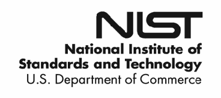
PDF原本のp.1にある図
Revision 1
改訂1
Recommendation for Key Management
鍵管理に関する推奨
Part 3: Application-Specific Key
第3部：アプリケーション固有の鍵
未レビュー訳Management Guidance
管理ガイダンス
未レビュー訳Elaine Barker Quynh Dang
Elaine Barker Quynh Dang
未レビュー訳Computer Security Division Information Technology Laboratory
コンピュータセキュリティ 部門 情報技術研究所
未レビュー訳This publication is available free of charge from: http://dx.doi.org/10.6028/NIST.SP.800-57pt3r1
本書は次のURLから無料で入手できる：http://dx.doi.org/10.6028/NIST.SP.800-57pt3r1
未レビュー訳January 2015
2015年1月
未レビュー訳U.S. Department of Commerce Penny Pritzker, Secretary
米国商務省 Penny Pritzker, 長官
未レビュー訳National Institute of Standards and Technology
米国国立標準技術研究所
未レビュー訳Willie May, Acting Under Secretary of Commerce for Standards and Technology and Acting Director
Willie May, 商務省標準技術担当次官代理兼所長
未レビュー訳Authority
権限
未レビュー訳This publication has been developed by NIST to further its statutory responsibilities under the Federal Information Security Management Act (FISMA), Public Law (P.L.) 107-347. NIST is responsible for developing information security standards and guidelines, including minimum requirements for Federal information systems, but such standards and guidelines shall not apply to national security systems without the express approval of appropriate Federal officials exercising policy authority over such systems. This guideline is consistent with the requirements of the Office of Management and Budget (OMB) Circular A-130, Section 8b(3), Securing Agency Information Systems, as analyzed in Circular A-130, Appendix IV: Analysis of Key Sections. Supplemental information is provided in Circular A-130, Appendix III, Security of Federal Automated Information Resources.
本書は、連邦情報セキュリティマネジメント法（FISMA）、公法（P.L.）107-347に基づく法定責任を果たすため、NISTが作成した。NISTは連邦情報システムの最低要件を含む情報セキュリティ標準・ガイドラインを策定する責任を負うが、適切な政策権限を有する連邦当局者の明示的承認なしに、これらを国家安全保障システムへ適用してはならない（shall not）。本ガイドラインは、OMB通達A-130第8b(3)節「政府機関情報システムの保護」の要件と整合し、同通達付録IV「主要節の分析」で分析されている。補足情報は同通達付録III「連邦自動化情報資源のセキュリティ」に記載される。
未レビュー訳Nothing in this publication should be taken to contradict the standards and guidelines made mandatory and binding on Federal agencies by the Secretary of Commerce under statutory authority. Nor should these guidelines be interpreted as altering or superseding the existing authorities of the Secretary of Commerce, Director of the OMB, or any other Federal official. This publication may be used by nongovernmental organizations on a voluntary basis and is not subject to copyright in the United States. Attribution would, however, be appreciated by NIST.
本書のいかなる内容も、法的権限に基づき商務長官が連邦機関に義務付け、拘束力を持たせた標準・ガイドラインに矛盾するものと解釈すべきではない（should）。また本ガイドラインを、商務長官、OMB長官、その他連邦当局者の既存権限を変更または置換するものと解釈すべきではない（should）。本書は非政府組織が任意に利用してもよい（may）。米国内では著作権の対象ではない。NISTへの帰属表示が望ましい。
未レビュー訳National Institute of Standards and Technology Special Publication 800-57 Part 3, Revision 1 Natl. Inst. Stand. Technol. Spec. Publ. 800-57 Part 3, Revision 1, 102 pages (January 2015) CODEN: NSPUE2
米国国立標準技術研究所 特別刊行物800-57第3部 改訂1。Natl. Inst. Stand. Technol. Spec. Publ. 800-57 Part 3, Revision 1, 102 pages (January 2015) CODEN: NSPUE2
未レビュー訳This publication is available free of charge from: http://dx.doi.org/10.6028/NIST.SP.800-57pt3r1
本書は次のURLから無料で入手できる：http://dx.doi.org/10.6028/NIST.SP.800-57pt3r1
未レビュー訳Certain commercial entities, equipment, or materials may be identified in this document in order to describe an experimental procedure or concept adequately. Such identification is not intended to imply recommendation or endorsement by NIST, nor is it intended to imply that the entities, materials, or equipment are necessarily the best available for the purpose. There may be references in this publication to other publications currently under development by NIST in accordance with its assigned statutory responsibilities. The information in this publication, including concepts and methodologies, may be used by Federal agencies even before the completion of such companion publications. Thus, until each publication is completed, current requirements, guidelines, and procedures, where they exist, remain operative. For planning and transition purposes, Federal agencies may wish to closely follow the development of these new publications by NIST. Organizations are encouraged to review all draft publications during public comment periods and provide feedback to NIST. All NIST Computer Security Division publications, other than the ones noted above, are available at http://csrc.nist.gov/publications.
実験手順または概念を十分に説明するため、本書では特定の商業主体、機器または材料を識別する場合がある。この識別は、NISTによる推奨または推奨承認を意味せず、目的に最適な主体、材料、機器であることを意味するものでもない。NISTが法定責任に従って現在策定中の他の刊行物を本書で参照する場合がある。概念や方法論を含む本書の情報は、関連刊行物の完成前であっても連邦機関が使用してよい。したがって各刊行物が完成するまでは、現行の要件、ガイドライン、手順が存在する場合、それらが引き続き有効である。計画および移行のため、連邦機関はNISTによる新刊行物の策定状況を注意深く確認してもよい（may）。組織には、公開コメント期間中にすべての草案を確認し、NISTへ意見を提出することを推奨する。上記以外のNISTコンピュータセキュリティ部門の刊行物はhttp://csrc.nist.gov/publicationsで入手できる。 [may; may; may]
未レビュー訳National Institute of Standards and Technology Attn: Computer Security Division, Information Technology Laboratory 100 Bureau Drive (Mail Stop 8930) Gaithersburg, MD 20899-8930 Email: SP80057Part3@nist.gov
米国国立標準技術研究所 宛先：コンピュータセキュリティ部門、情報技術研究所 100 Bureau Drive (Mail Stop 8930) Gaithersburg, MD 20899-8930 電子メール：SP80057Part3@nist.gov
未レビュー訳Reports on Computer Systems Technology
コンピュータシステム技術報告書
The Information Technology Laboratory (ITL) at the National Institute of Standards and Technology (NIST) promotes the U.S. economy and public welfare by providing technical leadership for the Nation’s measurement and standards infrastructure. ITL develops tests, test methods, reference data, proof of concept implementations, and technical analyses to advance the development and productive use of information technology. ITL’s responsibilities include the development of management, administrative, technical, and physical standards and guidelines for the cost-effective security and privacy of other than national security-related information in Federal information systems. The Special Publication 800-series reports on ITL’s research, guidelines, and outreach efforts in information system security, and its collaborative activities with industry, government, and academic organizations.
米国国立標準技術研究所（NIST）の情報技術研究所（ITL）は、国の計量・標準基盤に技術的リーダーシップを提供し、米国経済と公共の福祉を促進する。ITLは情報技術の開発と生産的利用を進めるため、試験、試験方法、参照データ、概念実証実装、技術分析を開発する。ITLの責務には、国家安全保障関連以外の連邦情報システムにおける情報の費用対効果の高いセキュリティとプライバシーのための管理的、事務的、技術的、物理的な標準・ガイドラインの策定が含まれる。特別刊行物800シリーズは、情報システムセキュリティに関するITLの研究、ガイドライン、普及活動、および産業界、政府、学術機関との協力活動を報告する。
Abstract
概要
NIST Special Publication 800-57 provides cryptographic key management guidance. It consists of three parts. Part 1 provides general guidance and best practices for the management of cryptographic keying material. Part 2 provides guidance on policy and security planning requirements for U.S. government agencies. Finally, Part 3 provides guidance when using the cryptographic features of current systems.
NIST特別刊行物800-57は暗号鍵管理の指針を示し、3部で構成される。第1部は暗号鍵素材の管理に関する一般指針とベストプラクティスを示す。第2部は米国政府機関のポリシーおよびセキュリティ計画要件に関する指針を示す。最後に、第3部は現行システムの暗号機能を使用する際の指針を示す。
Keywords
キーワード
未レビュー訳accreditation; assurances; authentication; authorization; availability; backup; certification; compromise; confidentiality; cryptanalysis; cryptographic key; cryptographic module; digital signature; key management; key management policy; key recovery; private key; public key; public key infrastructure; security plan; trust anchor; validation.
認定；保証；認証；認可；可用性；バックアップ；証明；漏えい；機密性；暗号解析；暗号鍵；暗号モジュール；デジタル署名；鍵管理；鍵管理ポリシー；鍵回復；秘密鍵；公開鍵；公開鍵基盤；セキュリティ計画；信頼アンカー；検証。
未レビュー訳Acknowledgements
謝辞
未レビュー訳The co-authors of this version of SP 800-57, Part 3 greatly appreciate the contributions of previous co-authors of this document, namely William Burr, Alicia Jones, Timothy Polk, Scott Rose and Miles Smid. We also appreciate contributions by Katrin Reitsma, Sheila Frankel, David Cooper, Judith Spencer, the National Security Agency (NSA) and many others in the public and private sectors whose thoughtful and constructive comments improved the quality and usefulness of this publication.
本版SP 800-57第3部の共著者は、前版の共著者William Burr、Alicia Jones、Timothy Polk、Scott Rose、Miles Smidの貢献に深く感謝する。また、本刊行物の品質と有用性を高めるため、思慮深く建設的なコメントを寄せたKatrin Reitsma、Sheila Frankel、David Cooper、Judith Spencer、国家安全保障局（NSA）、その他官民両部門の多くの方々にも感謝する。
Table of Contents
目次
未レビュー訳1 Introduction — 1
1 序論 — 1
未レビュー訳1.1 Purpose — 2
1.1 目的 — 2
未レビュー訳1.2 Requirement Terms — 3
1.2 要件用語 — 3
未レビュー訳1.3 General Protocol Considerations — 3
1.3 プロトコル全般の考慮事項 — 3
1.3.1 Mandatory-to-Implement versus Optional-to-Implement — 4
1.3.1 実装必須と実装任意 — 4
1.3.2 Cryptographic Negotiation — 4
1.3.2 暗号方式のネゴシエーション — 4
未レビュー訳1.3.3 Single or Multi-Use Keys — 6
1.3.3 単一用途鍵と複数用途鍵 — 6
1.3.4 Algorithm and Key Size Transition — 6
1.3.4 アルゴリズムおよび鍵サイズの移行 — 6
未レビュー訳2 Public Key Infrastructure (PKI) — 8
2 公開鍵基盤（PKI） — 8
未レビュー訳2.1 Description — 8
2.1 説明 — 8
未レビュー訳2.2 Security and Compliance Issues — 11
2.2 セキュリティおよび適合性の課題 — 11
未レビュー訳2.2.1 Recommended Key Sizes and Algorithms — 11
2.2.1 推奨鍵サイズおよびアルゴリズム — 11
未レビュー訳2.3 Procurement Guidance — 14
2.3 調達ガイダンス — 14
2.3.1 CA/RA Software and Hardware: — 14
2.3.1 CA/RAソフトウェアおよびハードウェア: — 14
2.3.2 OCSP Responders: — 15
2.3.2 OCSP応答者: — 15
未レビュー訳2.3.3 Cryptographic Modules — 16
2.3.3 暗号モジュール — 16
2.3.4 Key Recovery Servers — 16
2.3.4 鍵回復サーバー — 16
未レビュー訳2.3.5 Relying Party Software — 16
2.3.5 依拠当事者ソフトウェア — 16
未レビュー訳2.3.6 Client Software — 17
2.3.6 クライアントソフトウェア — 17
2.4 Recommendations for System Installers/Administrators — 17
2.4 システム導入者／管理者への推奨事項 — 17
未レビュー訳2.4.1 Certificate Issuance — 17
2.4.1 証明書発行 — 17
未レビュー訳2.4.2 Certificate Revocation Requests — 18
2.4.2 証明書失効要求 — 18
2.4.3 Certificate Revocation List Generation — 19
2.4.3 証明書失効リストの生成 — 19
未レビュー訳2.4.4 PKI Repositories for the Distribution of Certificates and CRLs — 19
2.4.4 証明書およびCRL配布用PKIリポジトリ — 19
未レビュー訳2.4.5 OCSP Responders — 20
2.4.5 OCSP応答者 — 20
未レビュー訳2.4.6 Backup and Archive — 20
2.4.6 バックアップおよびアーカイブ — 20
未レビュー訳2.4.7 Relying Party Integration and Configuration — 20
2.4.7 依拠当事者の統合および構成 — 20
2.5 User Guidance (Subscribers) — 21
2.5 ユーザー向けガイダンス（加入者） — 21
未レビュー訳3 Internet Protocol Security (IPsec) — 23
3 インターネットプロトコルセキュリティ（IPsec） — 23
未レビュー訳3.1 Description — 23
3.1 説明 — 23
未レビュー訳3.2 Security and Compliance Issues — 25
3.2 セキュリティおよび適合性の課題 — 25
未レビュー訳3.2.1 Cryptographic Algorithms — 25
3.2.1 暗号アルゴリズム — 25
未レビュー訳3.2.2 Additional Recommendations — 29
3.2.2 追加の推奨事項 — 29
未レビュー訳3.3 Procurement Guidance — 29
3.3 調達ガイダンス — 29
3.4 Recommendations for System Installers — 30
3.4 システム導入者への推奨事項 — 30
未レビュー訳3.5 Recommendations for System Administrators — 30
3.5 システム管理者への推奨事項 — 30
未レビュー訳3.6 Recommendations for End Users — 30
3.6 エンドユーザーへの推奨事項 — 30
未レビュー訳4 Transport Layer Security (TLS) — 30
4 トランスポート層セキュリティ（TLS） — 30
未レビュー訳5 Secure/Multipart Internet Mail Extensions (S/MIME) — 31
5 セキュア／マルチパートインターネットメール拡張（S/MIME） — 31
未レビュー訳5.1 Description — 31
5.1 説明 — 31
未レビュー訳5.2 Security and Compliance Issues — 31
5.2 セキュリティおよび適合性の課題 — 31
未レビュー訳5.3 Procurement Guidance — 34
5.3 調達ガイダンス — 34
未レビュー訳5.4 Recommendations for System Installers — 34
5.4 システム導入者への推奨事項 — 34
未レビュー訳5.5 Recommendations for System Administrators — 35
5.5 システム管理者への推奨事項 — 35
未レビュー訳5.6 Recommendations for End Users — 35
5.6 エンドユーザーへの推奨事項 — 35
未レビュー訳6 Kerberos — 36
6 Kerberos — 36
6.1 Description — 36
6.1 説明 — 36
未レビュー訳6.2 Security and Compliance Issues — 39
6.2 セキュリティおよび適合性の課題 — 39
未レビュー訳6.3 Procurement Guidance — 40
6.3 調達ガイダンス — 40
6.4 Recommendations for System Installers — 40
6.4 システム導入者への推奨事項 — 40
未レビュー訳6.5 Recommendations for System Administrators — 41
6.5 システム管理者への推奨事項 — 41
未レビュー訳6.6 Recommendations for End Users — 42
6.6 エンドユーザーへの推奨事項 — 42
未レビュー訳7 Over-The-Air Rekeying (OTAR) Key Management Messages (KMMs) — 43
7 無線経由再鍵設定（OTAR）鍵管理メッセージ（KMM） — 43
7.1 Description — 43
7.1 説明 — 43
未レビュー訳7.2 Security and Compliance Issues — 44
7.2 セキュリティおよび適合性の課題 — 44
7.2.1 Cryptographic Algorithms — 44
7.2.1 暗号アルゴリズム — 44
未レビュー訳7.2.2 Message Authentication and Cryptoperiods — 44
7.2.2 メッセージ認証および暗号期間 — 44
7.2.3 Key Usage — 44
7.2.3 鍵の使用 — 44
未レビュー訳7.2.4 Backup — 45
7.2.4 バックアップ — 45
未レビュー訳7.2.5 Rekeying — 45
7.2.5 再鍵設定 — 45
未レビュー訳7.2.6 Random bit generators — 45
7.2.6 乱数ビット生成器 — 45
7.3 Procurement Guidance — 45
7.3 調達ガイダンス — 45
未レビュー訳7.4 Recommendations for System Installers — 46
7.4 システム導入者への推奨事項 — 46
未レビュー訳7.5 Recommendations for System Administrators — 46
7.5 システム管理者への推奨事項 — 46
7.6 Recommendations for End Users — 47
7.6 エンドユーザーへの推奨事項 — 47
未レビュー訳8 Domain Name System Security Extensions (DNSSEC) — 48
8 ドメインネームシステムセキュリティ拡張（DNSSEC） — 48
未レビュー訳8.1 Description — 48
8.1 説明 — 48
未レビュー訳8.1.1 DNS Data Authentication — 49
8.1.1 DNSデータ認証 — 49
8.1.2 DNS Transaction Authentication — 49
8.1.2 DNSトランザクション認証 — 49
未レビュー訳8.1.3 DNS Cryptographic Algorithms/Schemes, Modes and Combinations — 50
8.1.3 DNSの暗号アルゴリズム／方式、モードおよび組合せ — 50
8.1.4 Special Considerations for Key Sizes — 51
8.1.4 鍵サイズに関する特別な考慮事項 — 51
未レビュー訳8.1.5 Special Considerations for NSEC3 — 52
8.1.5 NSEC3に関する特別な考慮事項 — 52
8.2 Security/Compliance Issues — 52
8.2 セキュリティ／適合性の課題 — 52
未レビュー訳8.3 Procurement Guidance — 53
8.3 調達ガイダンス — 53
未レビュー訳8.4 Recommendations for System Installers — 53
8.4 システム導入者への推奨事項 — 53
未レビュー訳8.4.1 Recommendations for System Installers (Authoritative Servers) — 53
8.4.1 システム導入者への推奨事項（権威サーバー） — 53
未レビュー訳8.4.2 Recommendations for System Installers (Caching Recursive Servers) — 54
8.4.2 システム導入者への推奨事項（キャッシュ再帰サーバー） — 54
8.4.3 Recommendations for System Installers (Client Systems) — 54
8.4.3 システム導入者への推奨事項（クライアントシステム） — 54
未レビュー訳8.5 Recommendations for System Administrators — 54
8.5 システム管理者への推奨事項 — 54
8.5.1 Recommendations for System Administrators (Authoritative Server) — 54
8.5.1 システム管理者への推奨事項（権威サーバー） — 54
8.5.2 Recommendations for System Administrators (Caching Recursive Servers) — 54
8.5.2 システム管理者への推奨事項（キャッシュ再帰サーバー） — 54
8.5.3 Recommendations for System Administrators (Client Systems) — 55
8.5.3 システム管理者への推奨事項（クライアントシステム） — 55
8.6 Recommendations for End Users — 55
8.6 エンドユーザーへの推奨事項 — 55
未レビュー訳9 Encrypted File Systems (EFS) — 56
9 暗号化ファイルシステム（EFS） — 56
未レビュー訳9.1 Description — 56
9.1 説明 — 56
未レビュー訳9.1.1 Number of Keys Required — 56
9.1.1 必要な鍵の数 — 56
未レビュー訳9.1.2 Access to Symmetric Keys used in File Encryption — 58
9.1.2 ファイル暗号化に用いる共通鍵へのアクセス — 58
未レビュー訳9.2 Security and Compliance Issues — 60
9.2 セキュリティおよび適合性の課題 — 60
未レビュー訳9.3 Recommendations for Procurement Officials — 60
9.3 調達担当者への推奨事項 — 60
未レビュー訳9.4 Recommendations for System Installers — 61
9.4 システム導入者への推奨事項 — 61
未レビュー訳9.5 Recommendations for System Administrators — 61
9.5 システム管理者への推奨事項 — 61
9.6 Recommendations for End Users — 61
9.6 エンドユーザーへの推奨事項 — 61
未レビュー訳10 The Secure Shell (SSH) — 62
10 セキュアシェル（SSH） — 62
10.1 Description — 62
10.1 説明 — 62
未レビュー訳10.1.1 Transport Layer Protocol (SSH-TLP) — 62
10.1.1 トランスポート層プロトコル（SSH-TLP） — 62
未レビュー訳10.1.2 The User Authentication Protocol (UAP) — 62
10.1.2 ユーザー認証プロトコル（UAP） — 62
10.1.3 Connection Protocol (CP) — 63
10.1.3 接続プロトコル（CP） — 63
未レビュー訳10.2 Security and Compliance Issues — 63
10.2 セキュリティおよび適合性の課題 — 63
未レビュー訳10.2.1 TLP Issues — 63
10.2.1 TLPの課題 — 63
10.2.2 UAP Issues — 67
10.2.2 UAPの課題 — 67
未レビュー訳10.3 Procurement Guidance — 68
10.3 調達ガイダンス — 68
未レビュー訳10.4 Recommendations for System Installers — 68
10.4 システム導入者への推奨事項 — 68
10.5 Recommendations for System Administrators — 69
10.5 システム管理者への推奨事項 — 69
未レビュー訳10.6 Recommendations for End Users — 69
10.6 エンドユーザーへの推奨事項 — 69
未レビュー訳Appendix A: Glossary — 70
付録A：用語集 — 70
Appendix B: Acronyms — 77
付録B：略語 — 77
未レビュー訳Appendix C: A Word to Novice End Users — 79
付録C：初心者エンドユーザーへの説明 — 79
未レビュー訳Appendix D: References — 81
付録D：参考文献 — 81
未レビュー訳Appendix E: Revision Changes — 93
付録E：改訂内容 — 93
未レビュー訳RECOMMENDATION FOR KEY MANAGEMENT
鍵管理に関する推奨事項 第3部：アプリケーション固有の鍵管理ガイダンス
未レビュー訳Part 3: Application-Specific Key Management Guidance
第3部：アプリケーション固有の鍵管理ガイダンス
未レビュー訳1 Introduction
1 序論
Application-Specific Key Management Guidance, Part 3 of the Recommendation for Key Management is intended primarily to help system administrators and system installers adequately secure applications based on product availability and organizational needs and to support organizational decisions about future procurements. This document also provides information for end users regarding application options left under their control in normal use of the application. Recommendations are given for a select set of applications, namely:
第3部「アプリケーション固有の鍵管理ガイダンス」は、主にシステム管理者およびシステム導入者が、製品の利用可能性と組織のニーズに基づいてアプリケーションを適切に保護し、将来の調達に関する組織の意思決定を支援することを目的とする。通常のアプリケーション利用時にエンドユーザーが選択できるオプションについても情報を提供する。対象とするアプリケーションを選び、次に示す：
未レビュー訳Section 2 – Public Key Infrastructures (PKI) Section 3 – Internet Protocol Security (IPsec) Section 4 – Transport Layer Security (TLS) Section 5 – Secure/Multipurpose Internet Mail Extensions (S/MIME) Section 6 – Kerberos Section 7 – Over-the-Air Rekeying of Digital Radios (OTAR) Section 8 – Domain Name System Security Extensions (DNSSEC) Section 9 – Encrypted File Systems (EFS) Section 10 – Secure Shell (SSH)
第2節：公開鍵基盤（PKI）。第3節：インターネットプロトコルセキュリティ（IPsec）。第4節：トランスポート層セキュリティ（TLS）。第5節：セキュア／マルチパーパスインターネットメール拡張（S/MIME）。第6節：Kerberos。第7節：デジタル無線の無線経由再鍵設定（OTAR）。第8節：ドメインネームシステムセキュリティ拡張（DNSSEC）。第9節：暗号化ファイルシステム（EFS）。第10節：セキュアシェル（SSH）。
未レビュー訳The following is provided for each topic:
各トピックについて次を示す：
•A brief description of the system under discussion that is intended to provide context for the security guidance,
•セキュリティガイダンスの背景となる対象システムの簡潔な説明。
未レビュー訳•Recommended algorithm suites and key sizes and associated security and compliance issues,
•推奨アルゴリズム群と鍵サイズ、および関連するセキュリティ／適合性の課題。
•Recommendations concerning the use of the mechanism in its current form for the protection of Federal Government information,
•連邦政府情報の保護を目的とした、現行形態でのメカニズム使用に関する推奨事項。
•Security considerations that may affect the security effectiveness of key management processes,
•鍵管理プロセスのセキュリティ有効性に影響し得るセキュリティ上の考慮事項。
•General recommendations for purchase decision makers, system installers, system administrators and end users.
•購入決定者、システム導入者、システム管理者およびエンドユーザー向けの一般的推奨事項。
Following Section 10 are five appendices with a glossary, an explanation of acronyms, basic information for novice and end users on obtaining and using keys, references for documents cited herein, and changes incorporated into this revision.
第10節に続く5つの付録には、用語集、略語の説明、初心者／エンドユーザー向けの鍵の取得・使用に関する基礎情報、本書で引用する文書の参考文献、および本改訂で取り入れた変更を収録する。
未レビュー訳This document does not reflect a comprehensive view of current products and technical specifications. Future versions of this document will include updates to the topics covered, and may include additional subjects as new techniques are widely implemented.
本書は現行製品や技術仕様を包括的に網羅していない。今後の版では対象トピックを更新し、新しい技法が広く実装されれば追加テーマを扱う可能性がある。
1.1 Purpose
1.1 目的
Part 3 of the Recommendation for Key Management, Application-Specific Key Management Guidance, is intended to address the key management issues associated with currently available cryptographic mechanisms. General Guidance, Part 1 of the Recommendation for Key Management, contains basic key management guidance for users, developers and system managers regarding the “best practices” associated with the generation and use of the various classes of cryptographic keying material [SP 800-57 Part 1]. General Organization and Management Requirements, Part 2 of the Recommendation, provides a framework and general guidance to support establishing cryptographic key management within an organization, and a basis for satisfying the key management aspects of statutory and policy-based security planning requirements for Federal Government organizations.
「鍵管理に関する推奨事項」第3部「アプリケーション固有の鍵管理ガイダンス」は、現在利用可能な暗号メカニズムに関係する鍵管理課題を扱う。同推奨第1部「一般ガイダンス」は、暗号鍵素材の各種クラスの生成・使用に関するベストプラクティスについて、ユーザー、開発者、システム管理者に基本的な鍵管理指針を示す［SP 800-57 Part 1］。第2部「一般的な組織および管理要件」は、組織内で暗号鍵管理を確立する枠組みと一般指針を提供し、連邦政府組織が法令・ポリシーに基づくセキュリティ計画要件のうち鍵管理関連項目を満たすための基礎となる。
This document, Part 3 of the Recommendation, is designed for system installers, system administrators and end users of existing key management infrastructures, protocols, and other applications, as well as the people making purchasing decisions1 for new systems using currently available technology. Note that end users who act as their own system installers, administrators and purchasing agents may find the guidance intended for administrators, installers and purchasers to be beneficial. In centrally managed organizations, the organization’s management must establish a security policy that acts as a foundation for all end-user guidance.
本書（推奨の第3部）は、既存の鍵管理基盤、プロトコル、その他アプリケーションのシステム導入者、システム管理者、エンドユーザー、および現在利用可能な技術を用いる新システムの購入決定者1を対象とする。エンドユーザー自身が導入者、管理者、購入担当者を兼ねる場合、各担当者向けの指針も役立つ。中央管理型組織では、組織管理者がすべてのエンドユーザー向け指針の基礎となるセキュリティポリシーを定めなければならない（must）。 [may]
未レビュー訳Recommendations are made for mechanisms designed to protect stored data and data in transit. This document will not provide a complete restatement of existing standards or implementation directives. Standards and guidelines with this level of detail are referenced where appropriate.
保存データと転送中データを保護するメカニズムを推奨する。本書は既存標準や実装指令を完全に再掲しない。この詳細度の標準・ガイドラインは、適切な箇所で参照する。
For each of the key management infrastructures, protocols, and applications addressed in Part 3, the following is provided:
第3部で扱う各鍵管理基盤、プロトコル、アプリケーションについて、次を示す：
A brief description of the system under discussion that is intended to provide context for the security guidance provided, Recommended algorithm suites and key sizes, and associated security and compliance issues, Recommendations concerning the use of the mechanism in its current form for the protection of Federal Government information, Security considerations that may affect the security effectiveness of key management processes, and General recommendations for people making purchasing decisions, system installers, system administrators and end users.
・セキュリティガイダンスの背景となる対象システムの簡潔な説明。・推奨アルゴリズム群と鍵サイズ、および関連するセキュリティ／適合性の課題。・連邦政府情報保護における現行方式の使用に関する推奨事項。・鍵管理プロセスのセキュリティ有効性に影響する可能性のある考慮事項。・購入決定者、システム導入者、システム管理者、エンドユーザー向けの一般的推奨事項。 [may]
未レビュー訳The logistics of how one should obtain, store or transfer keys or key pairs within a given application or system are application and implementation-specific and beyond the scope of this document. In large federal systems, these functions are frequently handled by system administrators or completed with direct guidance from system administrators. For end users faced with these tasks on their own, an informative appendix has been included with general information intended to point the end user in the right direction.
特定のアプリケーション／システム内で鍵または鍵ペアをどのように取得、保存、転送するかという手順は、アプリケーションおよび実装固有であり、本書の対象範囲外である。大規模な連邦システムでは、通常これらの機能はシステム管理者が処理するか、管理者から直接指示を受けて実施する。個人でこれらの作業を行うエンドユーザー向けに、適切な方向を示す一般情報を付録に収録した。 [should]
未レビュー訳Since some of the infrastructures, protocols and applications addressed in this Recommendation will be refined or replaced over time, the guidance provided herein will become obsolete. Similarly, it is anticipated that new infrastructures, protocols, and applications will be developed. Although this document will be updated as mechanisms and techniques evolve, it may not always reflect a comprehensive view of current products and technical specifications. Hence, references to version numbers or other implementation status information are provided to enable an evaluation of the applicability of particular elements of guidance to the specific version of an infrastructure, protocol, or application into which a mechanism is integrated.
本推奨が扱う基盤、プロトコル、アプリケーションの一部は時間とともに改良または置換されるため、ここに記載する指針は古くなる。また新しい基盤、プロトコル、アプリケーションも開発される見込みである。メカニズムや技法の進展に合わせ本書を更新するが、常に現行製品・技術仕様を包括的に反映できるとは限らない。そのため、メカニズムが組み込まれる基盤、プロトコル、アプリケーションの特定バージョンに対し、指針の個々の要素が適用できるかを評価できるよう、版番号その他の実装状況情報を示す。
Note that many of the applications described in Part 3 are currently in use by U.S. government agencies. Some of these applications were developed and implemented prior to the release of Part 1 of this Recommendation, and therefore, may not follow all of the principles identified in Part 1 [SP 800-57 Part 1]. The use of current implementations of these applications may be necessary until more carefully designed applications are available. It is very important that each implementation that does not comply with NIST standards and guidelines be evaluated for associated risks and that steps be taken to mitigate those risks as discussed in this Recommendation.
第3部で説明するアプリケーションの多くは、現在、米国政府機関で利用されている。一部は本推奨第1部の公表前に開発・実装されたため、第1部の原則すべてに従っていない可能性がある［SP 800-57 Part 1］。より慎重に設計されたアプリケーションが利用可能になるまで、現行実装の使用が必要な場合もある。NIST標準・ガイドラインに適合しない実装は、関連リスクを評価し、本推奨に示すようにリスク低減策を講じることが非常に重要である。
1.2 Requirement Terms
1.2 要件用語
This Recommendation often uses “requirement” terms; these terms have the following meaning in this document:
本推奨では「要件」を示す用語を頻繁に用いる。本書における意味は次のとおり：
未レビュー訳1.shall: This term is used to indicate a requirement of a Federal Information Processing Standard (FIPS) or a requirement that must be fulfilled to claim conformance to this Recommendation. Note that shall may be coupled with not to become shall not.
1.shall：連邦情報処理標準（FIPS）の要件、または本推奨への適合を主張するために満たさなければならない要件を示す。shallはnotと組み合わせてshall notとなる場合がある。
2.should: This term is used to indicate an important recommendation. Ignoring the recommendation could result in undesirable results. Ignoring recommendations to accommodate the acceptance of messages protected with commonly used, unapproved cryptography may create interoperability issues. Ignoring recommendations to select new products with approved, seldom-used cryptographic mechanisms may leave an organization ill-prepared to migrate away from mechanisms that will soon be inappropriate for the protection of federal systems. Note that should may be coupled with not to become should not.
2.should：重要な推奨事項を示す。無視すると望ましくない結果になる可能性がある。一般的に使われる未承認暗号で保護されたメッセージの受容を理由に推奨事項を無視すると、相互運用性の問題が生じることがある。承認済みだがあまり使われていない暗号方式を使う新製品の選択に関する推奨を無視すると、連邦システム保護に不適切となる方式から移行する準備が整わないおそれがある。shouldはnotと組み合わせてshould notとなる場合がある。
1.3 General Protocol Considerations
1.3 プロトコル全般の考慮事項
There are a number of general issues associated with the protocols discussed in Part 3. Four of these issues are briefly discussed in order to familiarize the reader with concepts that will be repeated throughout the document and to help frame the upcoming discussions:
第3部で扱うプロトコルには共通の課題がいくつかある。文書全体で繰り返す概念を読者に紹介し、後続の議論の枠組みを示すため、そのうち4点を簡潔に説明する：
未レビュー訳 Mandatory-to-implement vs. optional-to-implement, Cryptographic negotiation, Single or multi-use keys, and Algorithm and key size transitions.
・実装必須と実装任意。・暗号方式のネゴシエーション。・単一用途鍵と複数用途鍵。・アルゴリズムおよび鍵サイズの移行。
未レビュー訳1.3.1 Mandatory-to-Implement versus Optional-to-Implement
1.3.1 実装必須と実装任意
Many of the cryptographic security services described in this document are based on public standards (e.g., Internet Engineering Task Force (IETF) Requests for Comment (RFCs), American National Standards, etc.). In these standards, algorithms are frequently described as mandatory-to-implement or optional-to-implement. Neither of these terms provides information about the security of the algorithm.
本書で説明する暗号セキュリティサービスの多くは、公開標準（IETFのRequest for Comments (RFC)、米国規格など）に基づく。これらの標準ではアルゴリズムを「実装必須」または「実装任意」と定めることが多い。この区分自体はアルゴリズムの安全性を示さない。
未レビュー訳Mandatory-to-implement algorithms will be in any product that meets the public standards, allowing interoperability between products.
実装必須アルゴリズムは公開標準に適合するすべての製品に搭載され、製品間の相互運用を可能にする。
Optional-to-implement algorithms tend to be next-generation algorithms that may become mandatory-to-implement algorithms in a future version of the standard. There could be considerable delay in the widespread use of these new algorithms for a variety of reasons, ranging from a need for supporting hardware or software upgrades, to issues of interoperability. For example, an algorithm that is optional-to-implement within an S/MIME protocol may not currently be supported by the system’s cryptographic module. However, these algorithms often offer improved security that could significantly increase the longevity of the system. Therefore, one may want to consider buying products that support the optional-to-implement algorithms, even if those algorithms will not be available to all end users immediately.
実装任意アルゴリズムは次世代方式であることが多く、将来の標準版では実装必須になる可能性がある。支援ハードウェア／ソフトウェアの更新や相互運用性などの理由で、広く利用されるまで相当な時間がかかる場合がある。例えばS/MIMEで実装任意のアルゴリズムが、現行システムの暗号モジュールで未対応の場合がある。一方、これらの方式は安全性を改善し、システムの有効寿命を大きく延ばす可能性がある。そのため、全エンドユーザーがすぐ利用できなくても、実装任意方式をサポートする製品の購入を検討してもよい。
As previously defined, the terms shall and should are used to provide information about whether algorithms have adequate security for use on federal computer networks. As such, there may be mandatory-to-implement algorithms that do not provide adequate security (e.g., Data Encryption Standard (DES) or RC2), and this document will say they shall not be used. Similarly, there may be optional-to-implement algorithms that have greater security (e.g., Advanced Encryption Standard (AES)), and this document may say that these algorithms should or shall be used in a given situation.
前述のとおり、shallとshouldは連邦政府コンピュータネットワークで使用するアルゴリズムに十分な安全性があるかを示す。したがって、実装必須でも十分な安全性を提供しないアルゴリズム（DESやRC2など）があり、本書では使用してはならない（shall not）とする。同様に、実装任意でもより安全なアルゴリズム（AESなど）があり、状況によって使用するべき（should）または使用しなければならない（shall）とする場合がある。 [shall; should; may; may; may]
未レビュー訳The distinction between mandatory-to-implement and optional-to-implement is important when two users on different systems desire to communicate or when different levels of security may be required for different applications running on the same system. This is further discussed in the next section on cryptographic negotiation.
実装必須／任意の区別は、異なるシステムの利用者間の通信や、同一システム上で異なるセキュリティレベルを必要とするアプリケーション間で重要である。次節の暗号ネゴシエーションで詳しく扱う。
1.3.2 Cryptographic Negotiation
1.3.2 暗号方式のネゴシエーション
Parts 1 and 2 of this Recommendation establish a sound basis for selecting appropriate cryptographic algorithms and managing the corresponding cryptographic keys. However, enforcing these guidelines can be problematic for a number of reasons, including the unavailability of certain algorithms or key sizes, the preferences of the communicating parties or other system limitations. When servers dictate the algorithms used, the server may select the algorithms that optimize overall system performance, rather than the ones that provide the highest level of security.
本推奨第1部と第2部は、適切な暗号アルゴリズムの選択および対応する暗号鍵の管理について確かな基礎を示す。しかし特定アルゴリズム／鍵サイズが利用できない、通信相手の選好が異なる、その他システム上の制約がある等の理由で、これらの指針を徹底するのは難しい場合がある。サーバーが使用アルゴリズムを決めるとき、最高の安全性を提供する方式ではなく、システム全体の性能を最適化する方式を選ぶことがある。 [can; may]
未レビュー訳In some multi-party protocols where multiple algorithms are supported for the same purpose, a client can enforce the rules in Parts 1 and 2 through negotiation within the protocol. Some protocols (e.g., S/MIME) allow the initiating client to select the cryptographic algorithms without negotiating with the receiving client. In this case, as in the case where applications do not permit negotiation, a receiving client may be presented with information that has been inadequately protected. For example, a receiving client may receive a signed and encrypted S/MIME e-mail message that was encrypted using DES and signed with a 512-bit RSA key2. Rejecting such messages does not necessarily enhance security (in this case, the message has already been sent over the Internet), but the receiving user should be aware that the security services purportedly provided by the digital signature and content encryption are suspect and cannot be depended upon. It may be appropriate to reject the message or terminate the protocol. A risk assessment and subsequent organizational policy may be required to determine the appropriate course of action.
同じ目的に複数アルゴリズムをサポートする一部の複数主体プロトコルでは、クライアントはプロトコル内のネゴシエーションを通じて第1部・第2部の規則を適用できる。一部プロトコル（S/MIMEなど）では、開始側クライアントが受信側と交渉せず暗号アルゴリズムを選択する。ネゴシエーションを許さないアプリケーションと同様、受信側に不十分な保護情報が届く場合がある。例えばDES暗号化と512ビットRSA署名で保護したS/MIMEメールを受信することがある2。そのメッセージは既にインターネット経由で送られているため、拒否しても必ずしも安全性は向上しない。しかし受信者は、デジタル署名と内容暗号化が提供するとされる安全性が疑わしく、依存できないと理解するべきである。メッセージ拒否またはプロトコル終了が適切な場合もある。適切な対処を決めるにはリスク評価と組織ポリシーが必要となる場合がある。 [can; may; may; may; may; should; cannot]
未レビュー訳In other protocols (e.g., Transport Layer Security (TLS)), the client proposes a set of options, and the server chooses from the proposed list during a negotiation phase of the protocol. Where negotiation is supported, protocols may be designed to negotiate cipher suites or to negotiate each algorithm independently. In either case, a client or server may be faced with a situation where the preferred algorithms of the client or server and the proposed algorithms of the other party are not of the same security strength, or where approved algorithms are not available.
Transport Layer Security（TLS）など他のプロトコルでは、クライアントが選択肢を提示し、プロトコルのネゴシエーション段階でサーバーがその一覧から選ぶ。ネゴシエーション対応プロトコルは、暗号スイート単位またはアルゴリズム個別に交渉するよう設計できる。いずれの場合も、一方が好む方式と相手が提示した方式の安全性強度が異なる、または承認済み方式を利用できない状況が起こり得る。
Another issue may arise when a protocol is designed to negotiate algorithms, but not key sizes. In such a case, the clients may find themselves communicating with approved algorithms, but inadequate key sizes. For example, after negotiating for RSA signatures, the client might get a message signed with a 512-bit RSA key3.
プロトコルがアルゴリズムを交渉できても鍵サイズを交渉できない場合、承認済みアルゴリズムを使っていても鍵サイズが不十分な相手と通信することがある。例えばRSA署名のネゴシエーション後、512ビットRSA鍵で署名されたメッセージをクライアントが受信する場合がある3。 [may; may]
未レビュー訳Enforcing the recommendations from Parts 1 and 2 may also be complicated by system or application design decisions. Systems may have application-specific controls for cryptographic algorithms, or they may have system-wide controls. For example, a user may wish to restrict one application to using AES, and another to using TDEA, while the system design may only allow the use of TDEA. Often the only limitation on public key sizes is an indirect limitation through the choice of root Certificate Authority (CA) keys (see Section 2.1).
第1部・第2部の推奨適用は、システム／アプリケーション設計上の判断でさらに難しくなる場合がある。システムにアプリケーション固有またはシステム全体の暗号アルゴリズム制御があることもある。例えばユーザーが一方のアプリケーションをAESのみ、別のアプリケーションをTDEAのみの使用に制限したくても、システム設計上TDEAの使用しか許されない場合がある。公開鍵サイズに対する制限は、しばしばルートCA鍵の選択による間接的なものに限られる（2.1節参照）。
When there are a variety of algorithms or key sizes available for a given communication protocol, the following questions need to be addressed:
通信プロトコルで複数のアルゴリズムまたは鍵サイズを利用できる場合、次の問いに答える必要がある：
Is negotiation mandatory, optional or unsupported?
・ネゴシエーションは必須、任意、または非対応のどれか。
未レビュー訳 When negotiation is supported, who proposes the cryptographic mechanisms to be used, who selects the mechanisms, and what are the selection criteria?
・ネゴシエーション対応時、使用する暗号方式を誰が提示し、誰が選択し、選択基準は何か。
未レビュー訳 Is negotiation based on predefined cipher suites, or is each algorithm proposed independently?
・事前定義暗号スイートに基づいて交渉するか、各アルゴリズムを個別に提示するか。
未レビュー訳 What is the granularity for the negotiation: just algorithms, both algorithms and key sizes, combinations of algorithms and/or key sizes, or protocol versions?
・交渉の粒度は何か。アルゴリズムだけか、アルゴリズムと鍵サイズか、それらの組合せか、プロトコル版か。
未レビュー訳 What cannot be specified? A good start at ensuring communication security in a multi-algorithm setting would be to:
・何を指定できないか。複数アルゴリズム環境で通信安全性を確保するため、まず次を行う： [cannot]
未レビュー訳 Limit the list of algorithms available to the application to those best suited for users of the system and those needed for interoperability,
・アプリケーションで利用可能なアルゴリズムを、システム利用者に最適で相互運用に必要なものに限定する。
未レビュー訳 Adopt a policy that disallows sending messages using an inadequate level of protection,
・不十分な保護レベルでメッセージを送ることを禁じるポリシーを採用する。
未レビュー訳 Adopt a policy explaining how to respond to messages received without adequate protection, and
・不十分な保護で受信したメッセージにどう対応するかを説明するポリシーを採用する。
未レビュー訳 Adopt a policy explaining what to do when faced with a need for secure communications with a party using un-approved algorithms or inadequate key sizes.
・未承認アルゴリズムまたは不十分な鍵サイズを使用する相手との安全な通信が必要な場合の対処ポリシーを採用する。
未レビュー訳1.3.3 Single or Multi-Use Keys
1.3.3 単一用途鍵と複数用途鍵
未レビュー訳A major thrust from Part 1 of this Recommendation is that, in general, keys shall not be used for multiple cryptographic purposes. For example, the same key shall not be used to generate a digital signature and to establish other keying material (see [SP 800-57 Part 1, Sec. 8.1.5.1.1.2 ] for the rare exceptions to this guidance). It is less clear as to whether a digital signature key, for example, can be used only for a specific application (e.g., signing e-mail) or for multiple applications (e.g., for both signing e-mail and signing documents). In some cases, it may be acceptable for an application to share keys with other applications. In other cases, sharing keys may not be desirable. For example, best practices indicate that a server’s TLS keys should not be used to support other applications. Even where keys are used to perform the same cryptographic operation (e.g., digital signatures), sharing keys may be inappropriate because one application could be providing one service (e.g., authentication), while a second application could be providing a different service (e.g., non-repudiation). It is important to remember that it may be a bad idea to use keys for multiple applications.
本推奨第1部の主な方針の1つは、一般に鍵を複数の暗号目的に使用してはならない（shall not）ということである。例えば、デジタル署名生成と他の鍵素材確立に同じ鍵を使用してはならない（shall not）（まれな例外は［SP 800-57 Part 1, Sec. 8.1.5.1.1.2］参照）。ただし、例えばデジタル署名鍵を特定用途（メール署名など）だけに使うべきか、複数用途（メールと文書の署名など）に使えるかは明確でない。アプリケーション間の鍵共有が許容される場合もあれば、望ましくない場合もある。例えばベストプラクティスでは、サーバーのTLS鍵を他のアプリケーションに使用しない。デジタル署名のように同じ暗号操作を行う場合でも、一方が認証、他方が否認防止など異なるサービスを提供するときは鍵共有が不適切なことがある。複数アプリケーションで鍵を使うことは好ましくない可能性がある点に留意する。 [can; may; may; may; may not; should not]
未レビュー訳An agency should perform a risk assessment when considering the use of the same key for multiple applications.
同じ鍵を複数のアプリケーションで使用することを検討する場合、機関はリスク評価を実施すべきである。
1.3.4 Algorithm and Key Size Transition
1.3.4 アルゴリズムおよび鍵サイズの移行
Part 1 of this Recommendation provides timeframes for transitioning from algorithms and key sizes currently in use by many applications and protocols in order to increase the strength of the security mechanisms in the future [SP 800-57 Part 1]. In many cases, the algorithms and key sizes required to provide adequate security are not available within the current implementations or are unavailable uniformly across the community of users that need to interoperate. Transitions to new algorithms or key sizes will not necessarily occur instantaneously, but will require gradual upgrades across a system. For example, a system owner may have the need to upgrade his system’s e-mail package before upgrading the cryptographic module. Hence, for a period of time, the system may be running with an e-mail package capable of TDEA and AES 128 encryption, but a cryptographic module that can only handle TDEA. There will be a need to upgrade components of a system with new capabilities, while continuing to support the old capabilities, until all components have been upgraded. During this transition period, interaction between components can proceed in one of the following ways:
本勧告の第1部は、多くのアプリケーションやプロトコルで現在使用されているアルゴリズムおよび鍵サイズから移行し、将来のセキュリティメカニズムの強度を高めるための期間を示す［SP 800-57 Part 1］。多くの場合、十分なセキュリティを提供するために必要なアルゴリズムや鍵サイズは、現在の実装で利用できないか、相互運用を必要とするユーザー共同体全体で一様に利用できない。新しいアルゴリズムまたは鍵サイズへの移行は必ずしも瞬時に行われず、システム全体で段階的なアップグレードが必要になる。例えば、システム所有者は暗号モジュールより先に、システムの電子メールパッケージをアップグレードする必要があるかもしれない。そのため一定期間、電子メールパッケージはTDEAとAES 128暗号化に対応している一方、暗号モジュールはTDEAのみを処理できる状態となる場合がある。システムの各コンポーネントを新しい機能に更新しつつ、すべてのコンポーネントが更新されるまでは旧機能も継続してサポートする必要がある。この移行期間中、コンポーネント間のやり取りは次のいずれかの方法で行える。
未レビュー訳1.Some means is provided to determine when the new security mechanism is available to all parties in a given transaction so that it can be used instead of the old security mechanism (e.g., using a protocol that negotiates the security mechanisms to be used). When the new security mechanism is not available to all parties involved in a transaction, the old security mechanism can be used. This approach has the advantage that when a set of parties have the newer mechanism, their transactions are protected at a higher security level. The disadvantage is that those transactions using the old security mechanism are not as well protected; this also raises the possibility that the same information could be sent in different transactions between two or more sets of parties using security mechanisms of different strengths – in effect, nullifying the higher security strength provided by the new security mechanism4.
1.所定の取引に関係するすべての当事者が新しいセキュリティメカニズムを利用できる時点を判定し、旧メカニズムの代わりに使用できるようにする手段を用意する（例：使用するセキュリティメカニズムを交渉するプロトコルを利用する）。取引の全当事者が新メカニズムを利用できない場合は、旧メカニズムを使用できる。この方法の利点は、新しいメカニズムを利用できる当事者間の取引が、より高いセキュリティレベルで保護されることである。欠点は、旧メカニズムを使用する取引の保護が不十分なことである。また、同じ情報が異なる強度のセキュリティメカニズムを使用する複数の取引で送信され、事実上、新しいメカニズムが提供する高いセキュリティ強度が無効になる可能性もある。4
未レビュー訳2.All components use the old security mechanism until all components have been updated; at that time, the system immediately transitions to the new capability. This approach has the potential problem that all components would not be updated by the deadline, thus providing inadequate protections for all information during the period following the deadline until such time as all components have been upgraded. However, this approach has the advantage that the same data will not be sent at two different security levels.5
2.すべてのコンポーネントが更新されるまでは全コンポーネントで旧メカニズムを使用し、更新完了時にシステムを直ちに新機能へ移行する。この方法では、期限までにすべてのコンポーネントを更新できず、期限後に全コンポーネントが更新されるまで、すべての情報が不十分な保護しか受けられない可能性がある。一方、同じデータが異なる2つのセキュリティレベルで送信されないという利点がある。5
未レビュー訳Most of the applications and protocols discussed in Part 3 require an upgrade of the available security mechanisms to be compliant with Part 1. The following sections provide guidance on how the existing mechanisms may best be used until appropriate upgrades can be made. Organizations and system administrators must determine the approach for transitioning to stronger security mechanisms within a system.
第3部で説明するほとんどのアプリケーションおよびプロトコルは、第1部に準拠するため、利用可能なセキュリティメカニズムのアップグレードが必要である。以下の各節では、適切なアップグレードを実施するまで既存メカニズムを最善の方法で使用するための指針を示す。組織およびシステム管理者は、システム内でより強力なセキュリティメカニズムへ移行する方法を決定しなければならない。
未レビュー訳2 Public Key Infrastructure (PKI)
2 公開鍵基盤（PKI）
2.1 Description
2.1 説明
A PKI is the most common key management approach for the distribution of public keys. As described in SP 800-57 Part 1, Recommendation for Key Management, Part 1: General [SP 800-57 Part 1], public keys are used to establish security services after obtaining a variety of assurances: assurance of integrity, assurance of domain parameter validity (where appropriate), assurance of public key validity, and assurance of private key possession. In most cases, applications must also establish the identity of the user associated with this key pair. In a PKI, the infrastructure establishes the user’s identity and the required assurances to provide a strong foundation for security services in PKI-enabled applications and protocols, including IPsec (Section 3), Transport Layer Security (Section 4), S/MIME secure e-mail (Section 5) and some versions of Kerberos (Section 6). This section presents basic guidance for PKI-based key management. For broader and more detailed information on PKI, see [SP 800-32].
PKIは、公開鍵を配布するために最も一般的な鍵管理方式である。SP 800-57 Part 1『鍵管理に関する推奨事項 第1部：一般』［SP 800-57 Part 1］に記載されているように、公開鍵は、さまざまな保証（完全性の保証、必要に応じたドメインパラメータの妥当性の保証、公開鍵の妥当性の保証、秘密鍵の所持の保証）を得た後にセキュリティサービスを確立するために使用される。多くの場合、アプリケーションは鍵ペアに関連付けられたユーザーの識別情報も確立しなければならない。PKIでは、基盤がユーザーの識別情報と必要な保証を確立し、IPsec（3節）、Transport Layer Security（4節）、S/MIMEセキュア電子メール（5節）、一部のKerberosバージョン（6節）など、PKI対応アプリケーションおよびプロトコルのセキュリティサービスに強固な基盤を提供する。この節ではPKIベースの鍵管理に関する基本的な指針を示す。PKIのより広範で詳細な情報は［SP 800-32］を参照。
未レビュー訳Public key certificates bind two names to a public key, the user’s name and the issuer’s name, using a digital signature generated by the issuer. The user is the party authorized to use the private key associated with the public key in the certificate. The issuer is a trusted third party that generates and signs the certificate after verifying: the identity of the user; the validity of the public key, associated algorithms and any relevant parameters; and the user’s possession of the corresponding private key. The issuer is known as a Certificate Authority (CA). In many cases, the CA will delegate responsibility for the verification of the subject’s identity to a Registration Authority (RA). The certificate is used to distribute the user’s public key to other interested parties, known as relying parties, since they rely on the assurances provided by the PKI and the certificate creation process.
公開鍵証明書は、発行者が生成したデジタル署名を用いて、ユーザー名と発行者名という2つの名前を公開鍵に結び付ける。ユーザーは、証明書内の公開鍵に対応する秘密鍵の使用を許可された当事者である。発行者は信頼された第三者であり、ユーザーの識別情報、公開鍵と関連アルゴリズムおよび関連パラメータの妥当性、対応する秘密鍵の所持を確認した後に証明書を生成して署名する。発行者は認証局（CA）と呼ばれる。多くの場合、CAはサブジェクトの識別情報の検証責任を登録局（RA）に委任する。証明書は、PKIおよび証明書作成プロセスが提供する保証に依拠するため、依拠当事者と呼ばれる他の関係者にユーザーの公開鍵を配布するために使用される。
未レビュー訳CAs generally issue a self-signed certificate called a root certificate (sometimes also called a trust anchor); this is used by applications and protocols to validate the certificates issued by a CA. CA certificates play a key role in many protocols and applications, and are generally kept in what is often called a root certificate store. Much of the business of properly configuring applications and protocols consists of ensuring that only appropriate root certificates are loaded into the root certificate store. In Microsoft Windows operating systems, there are root certificate stores that are maintained by the operating system for various purposes that are shared by various Microsoft protocols and applications, and by other applications that may choose to use them. There is a similar “Keychain” facility in the Apple operating systems. Some applications, intended to be portable between operating systems, can maintain their own root certificate stores and also have a feature that allows them to share a root certificate store with other applications.6
CAは一般にルート証明書と呼ばれる自己署名証明書（トラストアンカーとも呼ばれる）を発行する。これはアプリケーションやプロトコルがCA発行証明書を検証するために使用する。CA証明書は多くのプロトコルとアプリケーションで重要な役割を果たし、通常、ルート証明書ストアと呼ばれる場所に保管される。アプリケーションやプロトコルの適切な構成作業の多くは、適切なルート証明書だけがルート証明書ストアに読み込まれるようにすることである。Microsoft Windows OSには、さまざまな目的でOSが管理するルート証明書ストアがあり、複数のMicrosoftプロトコルおよびアプリケーションと、それらを使用する他のアプリケーションで共有される。Apple OSにも同様の「Keychain」機能がある。OS間で移植可能なよう設計された一部のアプリケーションは独自のルート証明書ストアを保持し、他のアプリケーションと共有する機能も備える。6
未レビュー訳Certificates are generally issued in accordance with a certificate policy. Generally that policy can be found on the issuing CA’s website. If an organization’s policy, for example, is to accept only certificates that use at least 2048-bit RSA, 2048-bit DSA or 224-bit elliptic curve cryptography, and either, SHA-224 or SHA-256, then the only practical way to ensure that public key sizes meet the requirements is usually to ensure that the root certificate store contains only root certificates with a certificate policy that requires these algorithms and key sizes in its subordinate certificates. Current applications that use PKI will check to ensure that a certificate has been issued under the root certificate in the application’s root store, and that it has not been subsequently revoked, but will not otherwise check the suitability of the public key or hash algorithms used in the certificate – the application will simply use the specified keys to compute the mathematically correct results. So, correctly configuring root certificate stores is a critical step in key management.
証明書は通常、証明書ポリシーに従って発行される。このポリシーは通常、発行CAのウェブサイトで確認できる。例えば、組織のポリシーが少なくとも2048ビットRSA、2048ビットDSA、または224ビット楕円曲線暗号を使用し、さらにSHA-224またはSHA-256を使用する証明書のみを受け入れる場合、公開鍵サイズが要件を満たすことを保証する実務的な方法は、下位証明書でこれらのアルゴリズムと鍵サイズを要求する証明書ポリシーを持つルート証明書だけがルート証明書ストアに含まれるようにすることである。現在のPKI利用アプリケーションは、証明書がアプリケーションのルートストア内のルート証明書の下で発行されていること、および後に失効していないことを確認するが、証明書内の公開鍵またはハッシュアルゴリズムの適切性は通常それ以上確認しない。アプリケーションは、指定された鍵を使って数学的に正しい結果を計算するだけである。そのため、ルート証明書ストアを正しく構成することは鍵管理における重要な手順である。
未レビュー訳The specifics of where the root certificate store is located and how it is managed for each application and protocol are beyond the scope of this Recommendation. Typically, however, there are menus for viewing and managing certificate stores in the browser applications, but this is subject to change with each product update. There may also be utilities and features in the operating system or application for centralized management by the system administrator. When a browser or other application encounters an unrecognized CA certificate, end users may be prompted to add that certificate to their permanent trusted certificate store, temporarily trust the certificate, or reject the certificate and close the application.
各アプリケーションおよびプロトコルでルート証明書ストアがどこにあり、どのように管理されるかの詳細は、本勧告の対象範囲外である。ただし、通常、ブラウザーアプリケーションには証明書ストアの表示・管理メニューがあるものの、製品更新のたびに変更される可能性がある。OSまたはアプリケーションに、システム管理者が集中管理するためのユーティリティや機能がある場合もある。ブラウザーその他のアプリケーションが未認識のCA証明書に遭遇すると、エンドユーザーに、その証明書を永続的な信頼済み証明書ストアへ追加するか、一時的に信頼するか、拒否してアプリケーションを閉じるかを尋ねることがある。
未レビュー訳The most common certificate format is the X.509 version 3 (X.509v3) certificate [RFC 5280]. In addition to the user and issuer names and the public key, all X.509 certificates also include a digital signature, validity (starting and expiring times), and identifiers that specify the cryptographic algorithm(s) to be used with the public key and signature. X.509v3 certificates include an extensibility feature; CAs usually include standard extensions in their certificates to indicate which cryptographic operations the public key was intended to support, the policy that governed certificate issuance, and where to find out if the certificate has been revoked (i.e., an authoritative source for certificate status information). CAs may also include “private” extensions in their certificates that contain information particular to an application or domain of users.
最も一般的な証明書形式はX.509バージョン3（X.509v3）証明書［RFC 5280］である。X.509証明書には、ユーザー名、発行者名、公開鍵に加えて、デジタル署名、有効期間（開始時刻と終了時刻）、公開鍵および署名で使用する暗号アルゴリズムを指定する識別子が含まれる。X.509v3証明書には拡張機能があり、CAは通常、公開鍵が意図する暗号操作、証明書発行を規定したポリシー、証明書の失効状況を確認する方法（すなわち証明書状態情報の権威ある情報源）を示す標準拡張を含める。CAは、特定アプリケーションまたはユーザー領域に固有の情報を含む「プライベート」拡張を証明書に含めることもある。
A relying party is an individual or organization that relies on the certificate and the CA that issued the certificate to provide valid information (see Appendix A). Before a relying party uses the public key in a certificate, he must determine whether the key used by the issuer to sign this certificate can be trusted. In the simplest case, the relying party knows about the issuer, and has already decided to trust certificates issued by that CA. CAs that a relying party trusts directly are called trust anchors. When multiple trust anchors are recognized, the set of trust anchors is referred to as the trust list.
依拠当事者とは、有効な情報を提供する証明書と、その証明書を発行したCAに依拠する個人または組織である（付録Aを参照）。証明書内の公開鍵を使用する前に、依拠当事者は証明書への署名に使用された発行者の鍵を信頼できるか判断しなければならない。最も単純な場合、依拠当事者は発行者を知っており、そのCAが発行した証明書を信頼するとすでに決めている。依拠当事者が直接信頼するCAはトラストアンカーと呼ばれる。複数のトラストアンカーを認識する場合、その集合を信頼リストと呼ぶ。
In some cases, a relying party will wish to process user certificates that were signed by issuers other than a CA in its trust list. To support this goal, CAs issue cross certificates that bind another issuer’s name to that issuer’s public key. Cross certificates are an assertion that a public key may be used to verify signatures on other certificates. A relying party may be able to develop a certification path – a sequence of certificates – demonstrating that a user’s public key certificate can be trusted, even though it was issued by a CA that is not in the relying party’s trust list. All certification paths begin with a trust anchor, include zero or more intermediate certificates, and end with the certificate that contains the user’s public key.
依拠当事者が信頼リスト内のCA以外の発行者が署名したユーザー証明書を処理したい場合がある。この目的を支援するため、CAは別の発行者の名前をその公開鍵に結び付けるクロス証明書を発行する。クロス証明書は、公開鍵を他の証明書の署名検証に使用できることを表明する。依拠当事者は、ユーザーの公開鍵証明書が信頼リスト外のCAから発行されていても、その証明書を信頼できることを示す証明パス（証明書の連鎖）を構築できる場合がある。すべての証明パスはトラストアンカーから始まり、0個以上の中間証明書を含み、ユーザーの公開鍵を含む証明書で終わる。
未レビュー訳The entire path must be examined to ensure that the certificates have not been revoked, were issued under appropriate policies, and that each public key is suitable for the use to which it has been put. This process is known as path validation.
証明書が失効していないこと、適切なポリシーに基づいて発行されたこと、各公開鍵が使用目的に適していることを確認するため、パス全体を検査しなければならない。この処理をパス検証という。
As noted above, the certificate itself will usually include a pointer to an authoritative source for certificate status information. Certificate status information may be provided using one of two standard mechanisms:
前述のとおり、証明書自体には通常、証明書状態情報の権威ある情報源を示すポインタが含まれる。証明書状態情報は、次の2つの標準的なメカニズムのいずれかで提供される。
未レビュー訳 An Online Certificate Status Protocol (OCSP) responder [RFC 6960]. An OCSP responder is a trusted system, and provides signed status information for a given CA, on a per certificate basis, in response to a request from a relying party. Relying parties can authenticate the response by verifying the OCSP responder’s digital signature. As the OCSP responder is providing authoritative status information, there shall be a formal relationship between the CA and OCSP responder (e.g., a contract).
オンライン証明書状態プロトコル（OCSP）レスポンダー［RFC 6960］。OCSPレスポンダーは信頼されたシステムであり、依拠当事者からの要求に応じて、特定CAの証明書ごとの署名付き状態情報を提供する。依拠当事者はOCSPレスポンダーのデジタル署名を検証して応答を認証できる。OCSPレスポンダーは権威ある状態情報を提供するため、CAとOCSPレスポンダーの間には（例：契約による）正式な関係がなければならない。
未レビュー訳 An alternative method is to use a certificate revocation list, or CRL. An X.509 CRL contains a list of certificates issued by a CA that have been revoked, indicates when they were revoked, and may include the reason for revocation [RFC 5280]. If the serial number of an unexpired certificate does not appear on the CRL, then it is still valid. CRLs are digitally signed, like a certificate, so they can be distributed through untrusted systems. Most commonly, CRLs are distributed via LDAP7 directories or web servers. The distribution of CRLs by web servers has become more common recently.
別の方法として、証明書失効リスト（CRL）を使用する。X.509 CRLには、CAが発行して失効した証明書の一覧、失効時刻、場合によっては失効理由が含まれる［RFC 5280］。有効期限前の証明書のシリアル番号がCRLに含まれていなければ、その証明書は有効である。証明書と同様にCRLもデジタル署名されるため、信頼されていないシステム経由で配布できる。CRLは通常、LDAP7ディレクトリまたはウェブサーバー経由で配布される。ウェブサーバーによるCRL配布は近年一般的になっている。
未レビュー訳In many cases, PKIs will also provide key recovery services (using Recovery Servers) to support business continuity. Key recovery services store private keys that support key establishment to ensure that the plaintext of encrypted data may be recovered in the future. These services can provide the private key to the user in the event of loss or failure of their cryptographic module, or to the user’s management when policy or legal requirements exist. When supported, this service removes a key management burden from PKI-enabled applications. A PKI should include a key recovery services system.
多くの場合、PKIは事業継続を支援するため、鍵回復サービス（Recovery Serverを使用）も提供する。鍵回復サービスは鍵確立を支援する秘密鍵を保管し、将来、暗号化データの平文を復元できるようにする。暗号モジュールの紛失または故障時にユーザーへ秘密鍵を提供したり、ポリシーまたは法的要件がある場合にユーザーの管理者へ提供したりできる。このサービスをサポートすると、PKI対応アプリケーションの鍵管理負担が軽減される。PKIには鍵回復サービスシステムを含めるべきである。
未レビュー訳This section provides guidance for general-purpose PKIs when users from different organizations need to support a variety of applications. For large, general-purpose PKIs, interoperability is an important consideration. Less commonly, PKIs may be deployed to support a small, closed community of users or for a single application, where wider interoperability is less important. The requirements within this section are focused on large, general-purpose PKIs, such as the Federal PKI. For PKIs requiring less interoperability, these requirements should be evaluated for appropriateness within their systems. In general, cryptographic algorithm and key size standards should be met by all PKIs.
この節では、異なる組織のユーザーがさまざまなアプリケーションをサポートする必要がある場合の汎用PKIに関する指針を示す。大規模な汎用PKIでは相互運用性が重要な考慮事項である。より一般的ではないが、広範な相互運用性の重要度が低い、小規模で閉じたユーザー共同体または単一アプリケーションを支援するためにPKIを導入する場合もある。この節の要件は、Federal PKIなどの大規模な汎用PKIに焦点を当てている。相互運用性をあまり必要としないPKIでは、各システムへの適用性を評価すべきである。一般に、すべてのPKIで暗号アルゴリズムおよび鍵サイズの規格を満たすべきである。
未レビュー訳2.2 Security and Compliance Issues
2.2 セキュリティおよびコンプライアンス上の課題
2.2.1 Recommended Key Sizes and Algorithms
2.2.1 推奨される鍵サイズおよびアルゴリズム
Table 2-1 below summarizes the recommended key sizes for key pairs used by PKI users and infrastructure components. The PKI uses the term digital signature key to refer to a private signature key or public signature verification key (as defined in Part 1) that provides a non-repudiation service. The term authentication key is used by the PKI to refer to a private authentication key or public authentication key as defined in Part 1. Note that both a digital signature key and an authentication key are used with a digital signature algorithm.
以下の表2-1は、PKIユーザーおよび基盤コンポーネントが使用する鍵ペアの推奨鍵サイズをまとめたものである。PKIでいうデジタル署名鍵とは、否認防止サービスを提供する、第1部で定義された署名用秘密鍵または署名検証用公開鍵を指す。PKIでは、第1部で定義された認証用秘密鍵または公開認証鍵を認証鍵と呼ぶ。デジタル署名鍵と認証鍵はいずれもデジタル署名アルゴリズムと共に使用される点に注意する。
The dates in this table are consistent with those that appear in Part 1, where:
この表の日付は第1部に示されたものと整合しており、以下の定義を用いる。
A digital signature key is as defined above.
デジタル署名鍵は前述のとおり定義される。
未レビュー訳 A key establishment key is an asymmetric key pair used to provide key agreement or key transport, and
鍵確立鍵は、鍵合意または鍵配送を提供するための非対称鍵ペアである。
未レビュー訳 A CA and OCSP responder signing key is an asymmetric key pair used to sign and verify certificates.
CAおよびOCSPレスポンダーの署名鍵は、証明書への署名および検証に使用する非対称鍵ペアである。
未レビュー訳Approved algorithms and key sizes specified in Table 2-1 and certificate expiration dates are two different things. These algorithms and key sizes are approved for use beyond the year 2013. However, a digital signature or key establishment certificate may expire at any time, depending on the organization’s security policy.
表2-1に示す承認済みアルゴリズムおよび鍵サイズと、証明書の有効期限は別のものである。これらのアルゴリズムおよび鍵サイズは2013年以降も使用が承認されている。ただし、組織のセキュリティポリシーによって、デジタル署名証明書または鍵確立証明書は任意の時点で期限切れとなる場合がある。
未レビュー訳Table 2-1: Recommended Algorithms and Key Sizes
表2-1：推奨アルゴリズムおよび鍵サイズ
未レビュー訳| Key Type | Algorithms and Key Sizes |
| Digital Signature keys used for authentication (for Users or Devices) | RSA (2048 bits) ECDSA (Curve P-256) |
| Digital Signature keys used for non-repudiation (for Users or Devices) | RSA (2048 bits) ECDSA (Curves P-256 or P-384) |
| CA and OCSP Responder Signing Keys | RSA (2048 or 3072bits) ECDSA (Curves P-256 or P-384) |
| Key Establishment keys (for Users or Devices) | RSA (2048 bits) Diffie-Hellman (2048 bits) ECDH (Curves P-256 or P-384) |
原本PDFの抜粋画像
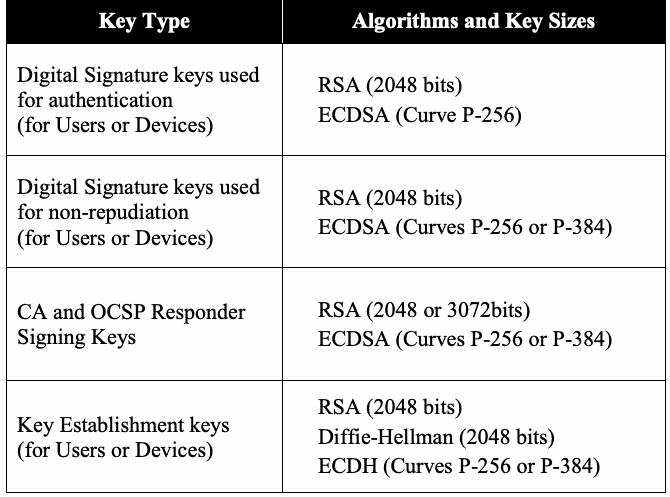
| 鍵種別 | アルゴリズムおよび鍵サイズ |
| 認証に使用するデジタル署名鍵（ユーザーまたはデバイス用） | RSA（2048ビット） ECDSA（曲線P-256） |
| 否認防止に使用するデジタル署名鍵（ユーザーまたはデバイス用） | RSA（2048ビット） ECDSA（曲線P-256またはP-384） |
| CAおよびOCSPレスポンダーの署名鍵 | RSA（2048または3072ビット） ECDSA（曲線P-256またはP-384） |
| 鍵確立鍵（ユーザーまたはデバイス用） | RSA（2048ビット） Diffie-Hellman（2048ビット） ECDH（曲線P-256またはP-384） |
Note that some approved algorithms and key sizes, such as DSA 2048, are omitted to enhance interoperability. RSA and ECDSA, which are included in Table 2-1 above, have been widely deployed in PKIs. Therefore, they are recommended for use to enhance interoperability. However, DSA (2048 and 3072) as specified in [FIPS 186-4] are allowed as long as the required security strength is satisfied. For ECDSA, only the two elliptic curves listed in Table 2-1 above of the elliptic curves are recommended for use in PKIs for digital signatures [FIPS 186-4]. Similarly, Elliptic Curve Diffie-Hellman (ECDH) is recommended to support key establishment, rather than Elliptic Curve MQV.
相互運用性を高めるため、DSA 2048など一部の承認済みアルゴリズムおよび鍵サイズは省略されている。表2-1に含まれるRSAおよびECDSAは、PKIで広く導入されているため、相互運用性を高める目的で推奨される。ただし、［FIPS 186-4］で規定されるDSA（2048および3072）も、必要なセキュリティ強度を満たす限り使用が許可される。ECDSAについては、デジタル署名用PKIでの使用に、表2-1に記載された2つの楕円曲線のみを推奨する［FIPS 186-4］。同様に、鍵確立には楕円曲線MQVではなく楕円曲線Diffie-Hellman（ECDH）を推奨する。
未レビュー訳While Table 2-1 is focused on the strength of the public key contained in a certificate, the strength of the digital signature on a certificate itself is equally important. The signature security strength also reflects the security strength of the hash algorithm, and possibly the padding scheme8, in addition to the strength of the private key used to generate the signature. Table 2-2 below summarizes the recommended algorithms, key sizes, hash functions, and padding schemes for signing certificates and CRLs by CAs, and OCSP status messages by OCSP responders.
表2-1は証明書に含まれる公開鍵の強度に焦点を当てているが、証明書自体のデジタル署名の強度も同様に重要である。署名のセキュリティ強度は、署名生成に用いる秘密鍵の強度に加え、ハッシュアルゴリズムおよび場合によってはパディング方式8の強度も反映する。以下の表2-2は、CAが証明書およびCRLに署名する場合、ならびにOCSPレスポンダーがOCSP状態メッセージに署名する場合の推奨アルゴリズム、鍵サイズ、ハッシュ関数、パディング方式をまとめる。
未レビュー訳Table 2-2: Digital Signature Recommendations for CAs and OCSP Responders
表2-2：CAおよびOCSPレスポンダーのデジタル署名に関する推奨事項
未レビュー訳| Public Key Algorithms | Hash Algorithms | Padding |
| and Key Sizes | Scheme | |
| RSA (2048 or 3072 bits) | SHA-256 | PKCS #1 v1.5, PSS |
| ECDSA (Curve P-256) | SHA-256 | N/A |
| ECDSA (Curve P-384) | SHA-384 | N/A |
原本PDFの抜粋画像
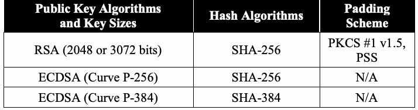
| 公開鍵アルゴリズム | ハッシュアルゴリズム | パディング |
| および鍵サイズ | 方式 | |
| RSA（2048または3072ビット） | SHA-256 | PKCS #1 v1.5、PSS |
| ECDSA（曲線P-256） | SHA-256 | N/A |
| ECDSA（曲線P-384） | SHA-384 | N/A |
User certificates containing RSA or Diffie-Hellman public keys should be signed using the RSA signature algorithm. User certificates containing elliptic curve public keys should be signed using ECDSA.
RSAまたはDiffie-Hellman公開鍵を含むユーザー証明書にはRSA署名アルゴリズムを使用して署名すべきである。楕円曲線公開鍵を含むユーザー証明書にはECDSAを使用して署名すべきである。
未レビュー訳Not all combinations of algorithms and key sizes are appropriate for the protection of Federal Government information. To enhance interoperability, users should obtain authentication, signature, and key establishment certificates with complementary algorithms for all public keys.9 For most users, signature and key establishment keys should provide the same cryptographic strength. Table 2-3 below shows preferred combinations for user keys.
アルゴリズムと鍵サイズのすべての組み合わせが連邦政府情報の保護に適しているわけではない。相互運用性を高めるため、ユーザーはすべての公開鍵について、相互に適合するアルゴリズムを用いた認証、署名、鍵確立証明書を取得すべきである。9 ほとんどのユーザーでは、署名鍵と鍵確立鍵の暗号強度は同じにすべきである。以下の表2-3は、ユーザー鍵の推奨組み合わせを示す。
未レビュー訳While symmetric key cryptography is not strictly required, block ciphers are used in practically all PKI implementations and PKI-enabled applications. All components using block ciphers shall support the AES-128 algorithm. To support legacy implementations, components that process RSA keys should support three-key Triple-DEA [SP 800-67]. Components that support P-384 elliptic curve keys and the SHA-384 algorithm shall support AES-256. Table 2-3: Recommended Combinations for the Recommended Algorithms and Key Sizes
共通鍵暗号は厳密には必須でないが、ブロック暗号は事実上すべてのPKI実装およびPKI対応アプリケーションで使用される。ブロック暗号を使用するすべてのコンポーネントはAES-128アルゴリズムをサポートしなければならない。レガシー実装を支援するため、RSA鍵を処理するコンポーネントは3鍵Triple-DES［SP 800-67］をサポートすべきである。P-384楕円曲線鍵およびSHA-384アルゴリズムをサポートするコンポーネントはAES-256をサポートしなければならない。表2-3：推奨アルゴリズムおよび鍵サイズの推奨組み合わせ
未レビュー訳| Authentication Key Type | Signature Key | Key Establishment Key |
| RSA 2048 | RSA 2048 | RSA 2048 |
| RSA 2048 | RSA 2048 | Diffie-Hellman 2048 |
| ECDSA P-256 | ECDSA P-256 | ECDH P-256 |
| ECDSA P-256 | ECDSA P-384 | ECDH P-384 |
| ECDSA P-384 | ECDSA P-384 | ECDH P-384 |
原本PDFの抜粋画像
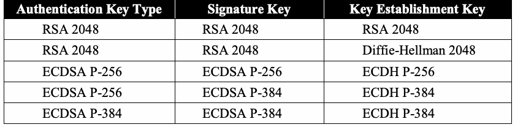
| 認証鍵種別 | 署名鍵 | 鍵確立鍵 |
| RSA 2048 | RSA 2048 | RSA 2048 |
| RSA 2048 | RSA 2048 | Diffie-Hellman 2048 |
| ECDSA P-256 | ECDSA P-256 | ECDH P-256 |
| ECDSA P-256 | ECDSA P-384 | ECDH P-384 |
| ECDSA P-384 | ECDSA P-384 | ECDH P-384 |
2.3 Procurement Guidance
2.3 調達に関する指針
The following provides guidance for those responsible for making decisions about which products to purchase in support of a PKI.
以下に、PKIを支援する製品の購入判断を担う者向けの指針を示す。
2.3.1 CA/RA Software and Hardware:
2.3.1 CA／RAソフトウェアおよびハードウェア：
1.Ensure that CA and RA software supports at least one of these protocols: the Certificate Management Protocol (CMP) [RFC 4210], Enrollment over Secure Transport (EST) [RFC 7030] and Certificate Management Using Cryptographic Message Syntax (CMC); see [RFC 5272].
1.CAおよびRAソフトウェアが、次のプロトコルの少なくとも1つをサポートすることを確認する：Certificate Management Protocol（CMP）［RFC 4210］、Enrollment over Secure Transport（EST）［RFC 7030］、Certificate Management Using Cryptographic Message Syntax（CMC。［RFC 5272］を参照）。
未レビュー訳2.Ensure that all CAs support the generation of certificates and CRLs that conform to [RFC 5280]. (Specific requirements with respect to certificate and CRL extensions are detailed below.)
2.すべてのCAが［RFC 5280］に準拠する証明書およびCRLの生成をサポートすることを確認する（証明書およびCRL拡張に関する具体的要件は以下に詳述する）。
未レビュー訳3.Ensure that CAs are capable of issuing multiple certificates to users, and for all such certificates, asserting the key usage extension, including the Extended Key Usage extension.
3.CAがユーザーに複数の証明書を発行でき、すべての証明書で拡張鍵用途を含む鍵用途拡張を設定できることを確認する。
4.Ensure that CAs are capable of including the CRL distribution points extension.
4.CAがCRL配布点拡張を含められることを確認する。
5.Ensure that CAs support the inclusion of HTTP URLs to specify the location of CRLs.
5.CAがCRLの場所を指定するHTTP URLの記載をサポートすることを確認する。
未レビュー訳6.CAs should support the inclusion of LDAP to specify the location of CRLs.
6.CAはCRLの場所を指定するLDAPの記載をサポートすべきである。
7.Ensure that CAs are capable of specifying an authoritative OCSP responder in the Authority Information Access extension.
7.CAがAuthority Information Access拡張で権威あるOCSPレスポンダーを指定できることを確認する。
8.Each PKI has its own certificate profile, identifying certificate extensions that appear in the certificates and CRLs it issues.10 Ensure that CAs are able to generate all mandatory extensions in the appropriate profiles. For CAs owned or operated on behalf of federal agencies, the following specific guidance applies:
8.各PKIには独自の証明書プロファイルがあり、発行する証明書およびCRLに含める証明書拡張を定める。10 CAが適切なプロファイルの必須拡張をすべて生成できることを確認する。連邦機関が所有または運用するCAには、次の具体的指針を適用する。
未レビュー訳a) Ensure that CAs that implement federal agency-specific policies are able to generate certificates and CRLs that meet the agency profile and the Federal PKI Certificate Profile [FPKI PROF]. b) Ensure that CAs that implement the Common Policy Framework [COMMON] are able to generate certificates and CRLs meeting the Shared Services Certificate and CRL Profile [COMMON PROF].
a) 連邦機関固有のポリシーを実装するCAは、機関プロファイルおよびFederal PKI Certificate Profile［FPKI PROF］を満たす証明書とCRLを生成できるようにする。b) Common Policy Framework［COMMON］を実装するCAは、Shared Services Certificate and CRL Profile［COMMON PROF］を満たす証明書とCRLを生成できるようにする。
未レビュー訳9.CAs should support the inclusion of “private” extensions in certificates and CRLs.11
9.CAは証明書およびCRLに「プライベート」拡張を含めることをサポートすべきである。11
未レビュー訳10.Ensure that CAs support at least one of the following algorithms for digitally signing certificates and CRLs: RSA with PKCS#1 v1.5 padding; RSA with PSS Padding [RFC 3447], DSA or ECDSA. To maximize flexibility, CAs should support RSA and
10.CAが証明書およびCRLへのデジタル署名に次のアルゴリズムの少なくとも1つをサポートすることを確認する：PKCS #1 v1.5パディングを用いるRSA、PSSパディングを用いるRSA［RFC 3447］、DSA、またはECDSA。柔軟性を最大化するため、CAはRSAおよび
未レビュー訳ECDSA.12
ECDSAをサポートすべきである。12
未レビュー訳11.Ensure that CAs include backup and archive capabilities to support reconstitution of the CA in the event that the root key is corrupted, destroyed or lost, and it is necessary to rebuild the CA using a backup root key, rather than simply recovering the lost state of the CA. CAs should include backup and archive capabilities in order to establish when certificates were issued and revoked, and under whose authority.
11.ルート鍵が破損、破壊、または紛失し、失われたCAの状態を単に復旧するのではなくバックアップルート鍵を用いてCAを再構築する必要がある場合に、CAの再構成を支援するバックアップおよびアーカイブ機能をCAが備えることを確認する。CAは、証明書がいつ発行・失効されたか、および誰の権限で行われたかを確認できるようにするためにも、バックアップおよびアーカイブ機能を備えるべきである。
12.Ensure that CA/RA components are shipped or delivered via controlled methods that provide a continuous chain of accountability, from the purchase location to the CA’s or RA's physical location.
12.CA／RAコンポーネントが、購入場所からCAまたはRAの物理的所在地まで、継続的な説明責任の連鎖を確保する管理された方法で出荷または配布されることを確認する。
2.3.2 OCSP Responders:
2.3.2 OCSPレスポンダー：
1.Ensure that OCSP responders conform to RFC 6960, Online Certificate Status Protocol [RFC 6960].
1.OCSPレスポンダーがRFC 6960『Online Certificate Status Protocol』［RFC 6960］に準拠することを確認する。
2.Ensure that OCSP responders are capable of processing both signed and unsigned requests and are capable of processing requests that either include or omit the name of the relying party making the request. However, OCSP responders may ignore signatures and requester names, if present.
2.OCSPレスポンダーが署名付き要求と署名なし要求の両方、および要求を行う依拠当事者名を含む要求と含まない要求の両方を処理できることを確認する。ただし、OCSPレスポンダーは、署名や要求者名が含まれていても無視してよい。
3.Ensure that OCSP responders are capable of processing certificate status requests and generating responses for non-error conditions as specified in [RFC 5019].
3.OCSPレスポンダーが証明書状態要求を処理し、［RFC 5019］に定めるエラー以外の条件について応答を生成できることを確認する。
未レビュー訳4.Where supported, the OCSP responder should sign the OCSP response with the algorithm and key size used to sign the certificate. Ensure that OCSP responders support at least one of the following algorithms for digitally signing response messages: RSA with PKCS#1 v1.5 padding; RSA with PSS Padding, DSA or ECDSA. The supported algorithms should include the algorithm(s) used by the corresponding CA when signing the certificate whose status is in question. To support future algorithm transitions by the CA, OCSP responders should support RSA and
4.サポートされる場合、OCSPレスポンダーは証明書署名に使用したアルゴリズムおよび鍵サイズでOCSP応答に署名すべきである。OCSPレスポンダーが応答メッセージへのデジタル署名に次のアルゴリズムの少なくとも1つをサポートすることを確認する：PKCS #1 v1.5パディングを用いるRSA、PSSパディングを用いるRSA、DSA、またはECDSA。サポートするアルゴリズムには、状態確認対象の証明書に署名した対応CAが使用するアルゴリズムを含めるべきである。CAによる将来のアルゴリズム移行に対応するため、OCSPレスポンダーはRSAおよび
未レビュー訳ECDSA.13
ECDSA。12
未レビュー訳2.3.3 Cryptographic Modules
2.3.3 暗号モジュール
1.Ensure that Cryptographic modules for CAs, Key Recovery Servers, and OCSP responders are hardware modules validated as meeting FIPS 140-2 Level 3 or higher
1.CA、鍵回復サーバー、OCSPレスポンダーの暗号モジュールが、FIPS 140-2レベル3以上として検証されたハードウェアモジュールであることを確認する。
未レビュー訳[FIPS 140-2].
［FIPS 140-2］。
未レビュー訳2.Ensure that cryptographic modules for RAs are hardware cryptographic modules validated as meeting FIPS 140-2 Level 2 or higher [FIPS 140-2].
2.RAの暗号モジュールが、FIPS 140-2レベル2以上として検証されたハードウェア暗号モジュールであることを確認する［FIPS 140-2］。
3.Ensure that relying party and user cryptographic modules are validated as meeting FIPS 140-2 Level 1 or higher [FIPS 140-2].
3.依拠当事者およびユーザーの暗号モジュールが、FIPS 140-2レベル1以上として検証されていることを確認する［FIPS 140-2］。
2.3.4 Key Recovery Servers
2.3.4 鍵回復サーバー
1.If the PKI supports key establishment (i.e., certificates will include key transport or key agreement keys), the PKI should include a key recovery mechanism.
1.PKIが鍵確立をサポートする場合（すなわち、証明書に鍵配送鍵または鍵合意鍵が含まれる場合）、PKIは鍵回復メカニズムを含めるべきである。
未レビュー訳2.Implementations should support automated, user-initiated key recovery; key recovery by the organization should also be supported.14
2.実装はユーザーが開始する自動鍵回復をサポートすべきであり、組織による鍵回復もサポートすべきである。14
未レビュー訳2.3.5 Relying Party Software
2.3.5 依拠当事者ソフトウェア
1.Relying party path validation
1.依拠当事者のパス検証
未レビュー訳a) Ensure that relying party implementations use RFC 5280-conformant path validation [RFC 5280]. b) Where interoperability outside a single organization is required (e.g., a single federal agency), path validation modules should conform to requirements for an Enterprise path validation module (PVM), as specified in NIST Recommendation for X.509 Path Validation [X.509 Path]. c) Where interoperability across organizations is required, path validation modules should conform to requirements for a Bridge-Enabled PVM, as specified in the draft NIST Recommendation for X.509 Path Validation [X.509 Path]. d) Ensure that relying party implementations support CRLs or OCSP for certificate status, and should support both.
a) 依拠当事者の実装がRFC 5280準拠のパス検証を使用することを確認する［RFC 5280］。b) 単一組織（例：単一の連邦機関）外との相互運用性が必要な場合、パス検証モジュールはNIST『X.509パス検証勧告』［X.509 Path］で指定するエンタープライズ・パス検証モジュール（PVM）の要件に準拠すべきである。c) 組織間の相互運用性が必要な場合、パス検証モジュールはドラフトNIST『X.509パス検証勧告』［X.509 Path］で指定するブリッジ対応PVMの要件に準拠すべきである。d) 依拠当事者の実装が証明書状態確認にCRLまたはOCSPをサポートし、両方をサポートすべきであることを確認する。
未レビュー訳2.Building certificate paths
2.証明書パスの構築
未レビュー訳a) Ensure that relying party implementations are able to build certification paths. b) At a minimum, implementations should support http-based certificate retrieval. c) Relying party implementations should also be able to obtain CA certificates and CRLs using LDAP from an organizationally designated local directory, as well as locations specified within a user certificate.
a) 依拠当事者の実装が証明パスを構築できることを確認する。b) 実装は少なくともHTTPベースの証明書取得をサポートすべきである。c) 依拠当事者の実装は、組織が指定するローカルディレクトリから、またユーザー証明書内に指定された場所から、LDAPを使ってCA証明書とCRLを取得できるべきである。
未レビュー訳3.Relying parties that work within a single organizational PKI (e.g., a PKI that supports a company or agency) should be able to discover paths for user certificates issued by CAs that are hierarchically subordinate to the trust anchor CA.
3.単一組織のPKI（例：企業または機関を支援するPKI）内で動作する依拠当事者は、トラストアンカーCAの階層下位にあるCAが発行したユーザー証明書のパスを検出できるべきである。
未レビュー訳4.Relying parties that accept certificates from other organizations should be able to discover paths in non-hierarchical PKIs.
4.他組織の証明書を受け入れる依拠当事者は、非階層型PKIのパスを検出できるべきである。
2.3.6 Client Software
2.3.6 クライアントソフトウェア
1.Ensure that client implementations support multiple private keys and certificates for each end user to support different cryptographic services. For example, the client implementation should support and differentiate between private keys associated with public keys in certificates supporting digital signatures, and private keys associated with public keys in certificates supporting key establishment.
1.クライアント実装が各エンドユーザーについて、異なる暗号サービスに対応する複数の秘密鍵と証明書をサポートすることを確認する。例えば、デジタル署名用証明書の公開鍵に対応する秘密鍵と、鍵確立用証明書の公開鍵に対応する秘密鍵を、クライアント実装が区別してサポートすべきである。
未レビュー訳2.Ensure that client cryptographic modules are validated at FIPS 140-2 Level 1 or higher [FIPS 140-2].
2.クライアント暗号モジュールがFIPS 140-2レベル1以上として検証されていることを確認する［FIPS 140-2］。
3.Client implementations should support the certificate management protocol supported by the organization’s CA.15
3.クライアント実装は、組織のCAがサポートする証明書管理プロトコルをサポートすべきである。15
未レビュー訳2.4 Recommendations for System Installers/Administrators
2.4 システム設置者／管理者向け推奨事項
The system installer and administrator is the person (or people) who are responsible for establishing the PKI and who are responsible for the tasks associated with its day-to-day operation. The system administrator shall ensure that end users are trained and that the organization’s security policy is enforced.
システム設置者および管理者とは、PKIを確立し、日常運用に関連する業務を担う人である。システム管理者は、エンドユーザーが訓練を受け、組織のセキュリティポリシーが適用されるようにしなければならない。
2.4.1 Certificate Issuance
2.4.1 証明書の発行
1.CAs shall be configured to ensure that certificates specify public keys with approved key sizes, valid domain parameters (if appropriate), and approved algorithms.
1.CAは、証明書が、承認済みの鍵サイズを持ち、有効なドメインパラメータ（該当する場合）と承認済みアルゴリズムを用いる公開鍵を指定するよう構成しなければならない。
2.For maximum interoperability, CAs and users should use RSA key pairs for digital signatures and key transport.
2.相互運用性を最大化するため、CAおよびユーザーはデジタル署名と鍵配送にRSA鍵ペアを使用すべきである。
3.For maximum security and performance, CAs and users should use elliptic curve key pairs for digital signatures and key agreement.
3.セキュリティと性能を最大化するため、CAおよびユーザーはデジタル署名と鍵合意に楕円曲線鍵ペアを使用すべきである。
4.When signing certificates or CRLs, CAs shall generate digital signatures using a signing algorithm, hash function and a padding scheme (if the signing algorithm is RSA) combination specified in Table 2-2.
4.証明書またはCRLに署名する場合、CAは表2-2に指定された署名アルゴリズム、ハッシュ関数、および（署名アルゴリズムがRSAの場合）パディング方式の組み合わせを用いてデジタル署名を生成しなければならない。
未レビュー訳5.For digital signature certificates, CAs shall sign the certificate using a digital signature process (i.e., signature algorithm, hash function and key) whose security strength is equal to or greater than the security strength of the subject public key in the certificate. For key establishment certificates, CAs may sign the certificate using a digital signature process whose security strength is less than the security strength of the subject public key in the certificate16.
5.デジタル署名証明書について、CAは証明書内のサブジェクト公開鍵のセキュリティ強度以上のセキュリティ強度を持つ署名処理（すなわち署名アルゴリズム、ハッシュ関数、鍵）を使って証明書に署名しなければならない。鍵確立証明書については、サブジェクト公開鍵のセキュリティ強度より低いセキュリティ強度を持つ署名処理を使ってCAが証明書に署名してもよい。16
未レビュー訳6.Generating key pairs:
6.鍵ペアの生成：
未レビュー訳a) Users should generate their own digital signature key pairs. b) Key establishment key pairs may be generated by the user or by the PKI on the user’s behalf; where required, the PKI that generated a user’s key pair may retain copies of the key-establishment private key to permit key recovery. c) CAs should perform proof of possession for all key pairs before issuing certificates.
a) ユーザーは自身のデジタル署名鍵ペアを生成すべきである。b) 鍵確立鍵ペアはユーザーが生成しても、ユーザーに代わりPKIが生成してもよい。必要な場合、ユーザーの鍵ペアを生成したPKIは、鍵回復を可能にするため鍵確立用秘密鍵のコピーを保持してもよい。c) CAは証明書を発行する前に、すべての鍵ペアについて所持証明を行うべきである。
未レビュー訳7.CAs shall obtain assurance of public-key validity before issuing certificates.
7.CAは証明書発行前に公開鍵の妥当性の保証を取得しなければならない。
未レビュー訳8.Key usage extension.
8.鍵用途拡張。
未レビュー訳a) All certificates issued shall include the key-usage extension. b) The key-usage extension shall restrict acceptance of the private key to a single cryptographic function: either user/entity authentication and verification of committed data, or key establishment.
a) 発行するすべての証明書には鍵用途拡張を含めなければならない。b) 鍵用途拡張は、秘密鍵の受け入れ用途を単一の暗号機能に制限しなければならない。すなわち、ユーザー／エンティティの認証および確定データの検証、または鍵確立のいずれかとする。
未レビュー訳9.All certificates shall include the CRL distribution-points extension to support the retrieval of status information.
9.状態情報の取得を支援するため、すべての証明書にCRL配布点拡張を含めなければならない。
10.If an OCSP responder is supported, a certificate shall include an appropriate URL in the Authority Information Access extension.
10.OCSPレスポンダーをサポートする場合、証明書のAuthority Information Access拡張に適切なURLを含めなければならない。
11.Certificates should be renewed before they expire and replaced if there is a change in the certificate’s contents, such as the domain name or the embedded e-mail address.
11.証明書は有効期限前に更新すべきであり、ドメイン名や埋め込み電子メールアドレスなど、証明書の内容に変更があった場合は置き換えるべきである。
2.4.2 Certificate Revocation Requests
2.4.2 証明書失効要求
1.CAs should be configured to automate revocation processing where practical:
1.実務上可能な場合、CAは失効処理を自動化するよう構成すべきである。
未レビュー訳a) CAs should be configured to authenticate and process revocation requests electronically. b) Where the CA can authenticate a digitally signed request submitted by the user of the associated key pair or an RA, the request should be handled without manual intervention.
a) CAは電子的に失効要求を認証し処理するよう構成すべきである。b) CAが、鍵ペアのユーザーまたはRAから提出されたデジタル署名付き要求を認証できる場合、手動介入なしで処理すべきである。
未レビュー訳2.RAs should be configured to submit digitally signed revocation requests on behalf of users or the organization.
2.RAはユーザーまたは組織に代わり、デジタル署名付き失効要求を提出するよう構成すべきである。
未レビュー訳2.4.3 Certificate Revocation List Generation
2.4.3 証明書失効リストの生成
1.To maximize interoperability, all CAs should be configured to generate full CRLs. A full CRL is a single CRL that lists all revoked and unexpired certificates issued by a particular CA.
1.相互運用性を最大化するため、すべてのCAは完全CRLを生成するよう構成すべきである。完全CRLとは、特定CAが発行した失効済みかつ有効期限前のすべての証明書を一覧表示する単一のCRLである。
未レビュー訳2.CAs that serve a large community should generate CRL distribution points in addition to full CRLs. Each CRL distribution point lists a subset of the revoked certificates for a given CA. The number of certificates covered by a CRL distribution point should be limited to a maximum of 250 000 to ensure that the distribution point CRLs do not grow to an unmanageable size.
2.大規模なユーザー共同体にサービスを提供するCAは、完全CRLに加えてCRL配布点を生成すべきである。各CRL配布点には、特定CAの失効証明書の一部が記載される。CRL配布点のサイズが管理不能なほど大きくならないよう、配布点が対象とする証明書数は最大250 000に制限すべきである。
2.4.4 PKI Repositories for the Distribution of Certificates and CRLs
2.4.4 証明書およびCRL配布用のPKIリポジトリ
1.PKIs should be configured to provide certificates and CRLs to requesters without authentication of the requester.
1.PKIは、要求者を認証せずに証明書およびCRLを要求者へ提供するよう構成すべきである。
2.PKI repositories shall be configured to require authenticated access to modify the set of certificates and CRLs distributed by the repository.
2.PKIリポジトリは、そのリポジトリが配布する証明書およびCRLの集合を変更するために認証済みアクセスを要求するよう構成しなければならない。
3.At a minimum, repositories shall support either HTTP version 1.1 or LDAP version 3 interface.
3.リポジトリは最低限、HTTPバージョン1.1またはLDAPバージョン3のインターフェースをサポートしなければならない。
4.For maximum interoperability, both HTTP and LDAP should be supported.
4.相互運用性を最大化するため、HTTPとLDAPの両方をサポートすべきである。
未レビュー訳5.Replication of repositories (e.g., through directory shadowing or web server replication) to maximize availability should be considered.
5.可用性を最大化するため、リポジトリの複製（例：ディレクトリのシャドーイングまたはウェブサーバーの複製）を検討すべきである。
未レビュー訳6.PKI repositories should contain all CA certificates issued by or to the corresponding
6.PKIリポジトリには、対応するPKIから発行された、または対応するPKI宛てに発行されたすべてのCA証明書を含めるべきである。
未レビュー訳PKI.
PKI。
未レビュー訳7.PKI repositories shall contain all current CRLs.
7.PKIリポジトリは現在有効なすべてのCRLを含めなければならない。
2.4.5 OCSP Responders
2.4.5 OCSPレスポンダー
For federal agencies, detailed configuration guidance for OCSP responders is specified in Draft Guidance for OCSP Responders in the U.S. Federal PKI.17
連邦機関向けOCSPレスポンダーの詳細な構成指針は、『米国Federal PKIにおけるOCSPレスポンダーのドラフト構成指針』に記載されている。17
未レビュー訳1.If maximum interoperability is required then:
1.最大限の相互運用性が必要な場合：
未レビュー訳a) OCSP responders shall not require that requests be signed and shall not limit the set of relying parties to which certificate status information is provided. b) The responders shall generate OCSP basic responses, and the responses shall not include critical extensions.
a) OCSPレスポンダーは要求への署名を要求してはならず、証明書状態情報を提供する依拠当事者の範囲を制限してはならない。b) レスポンダーはOCSP基本応答を生成しなければならず、応答にクリティカル拡張を含めてはならない。
未レビュー訳2.Where interoperability requirements are limited to a closed community:
2.相互運用性要件が閉じた共同体に限定される場合：
未レビュー訳a) OCSP responders may require signed requests, and may reject requests from entities outside that community. b) OCSP response messages may include private extensions known within the target community.
a) OCSPレスポンダーは署名付き要求を要求してよく、共同体外のエンティティからの要求を拒否してよい。b) OCSP応答メッセージは対象共同体内で認識されるプライベート拡張を含めてよい。
未レビュー訳2.4.6 Backup and Archive
2.4.6 バックアップおよびアーカイブ
1.To maintain the availability of status information, CAs shall ensure that sufficient information is stored in a secure location to reconstitute the CA after a disaster.
1.状態情報の可用性を維持するため、CAは災害後にCAを再構成できる十分な情報を安全な場所に保管しなければならない。
2.CAs should archive sufficient information to establish when certificates were issued, and under whose authority.
2.CAは証明書がいつ、誰の権限で発行されたかを確認するのに十分な情報をアーカイブすべきである。
3.As a general rule, audit logs should be maintained, along with any certificates and CRLs issued by the CA.
3.一般に、監査ログはCAが発行した証明書およびCRLと共に維持すべきである。
4.User public signature verification keys should be archived, along with their corresponding certificates as long as required.
4.ユーザーの公開署名検証鍵は、必要な期間、対応する証明書と共にアーカイブすべきである。
2.4.7 Relying Party Integration and Configuration
2.4.7 依拠当事者の統合および構成
1.Path discovery components shall be configured to enable path discovery and require the retrieval of status information.
1.パス検出コンポーネントは、パス検出を有効にし、状態情報の取得を必須とするよう構成しなければならない。
2.Status information should be accepted in both CRL and OCSP formats.
2.状態情報はCRL形式とOCSP形式の両方で受け入れるべきである。
3.Relying party implementations shall be configured to recognize the smallest set of acceptable trust anchors possible.
3.依拠当事者の実装は、可能な限り最小の許容トラストアンカー集合を認識するよう構成しなければならない。
未レビュー訳4.For business-to-government and government-to-government applications, federal agencies should use either the Common Policy Root CA or an agency CA that is cross-certified with the Common Policy Root CA or the Federal Bridge as the trust anchor.
4.企業対政府および政府間アプリケーションでは、連邦機関はCommon Policy Root CA、またはCommon Policy Root CAもしくはFederal Bridgeとクロス認証された機関CAのいずれかをトラストアンカーとして使用すべきである。
未レビュー訳5.For citizen-to-government applications with limited security requirements (e.g. Level 2 e-Authentication requirements as specified in [OMB 04-04]) and high interoperability requirements, agency applications may use the pre-installed trust anchors provided in COTS products.
5.セキュリティ要件が限定的（例：［OMB 04-04］で規定するレベル2 e-Authentication要件）で、相互運用性要件が高い市民対政府アプリケーションでは、機関アプリケーションはCOTS製品にプリインストールされたトラストアンカーを使用してよい。
6.Path validation modules:
6.パス検証モジュール：
未レビュー訳a) For end-user applications and applications with minimal security requirements, path validation modules should be configured to accept any valid path. b) For systems with more significant security requirements (e.g., systems using PKI to satisfy Level 3 or Level 4 e-Authentication), path validation modules should be configured to only accept paths that are valid under appropriate policies.
a) エンドユーザー向けアプリケーションおよびセキュリティ要件が最小限のアプリケーションでは、パス検証モジュールは有効なパスをすべて受け入れるよう構成すべきである。b) より重要なセキュリティ要件を持つシステム（例：レベル3またはレベル4 e-Authenticationを満たすためPKIを使用するシステム）では、適切なポリシーに基づいて有効なパスのみを受け入れるようパス検証モジュールを構成すべきである。
未レビュー訳2.5 User Guidance (Subscribers)
2.5 ユーザー（加入者）向け指針
In a PKI, the subject is the identity of the user associated with a public key. The subject may be a person or a device. For the purposes of this section, the term “user” is means either the person associated with a public key, or the administrator of a device associated with a public key.
PKIにおいてサブジェクトとは、公開鍵に関連付けられたユーザーの識別情報である。サブジェクトは個人またはデバイスであり得る。この節では「ユーザー」という用語を、公開鍵に関連付けられた個人、または公開鍵に関連付けられたデバイスの管理者のいずれかの意味で用いる。
未レビュー訳1.Users should generate their own key pairs for digital signatures and authentication.
1.ユーザーはデジタル署名および認証用の鍵ペアを自分で生成すべきである。
2.Users may generate their own key pairs for key establishment, or the key establishment key pairs may be imported from a trusted source.
2.ユーザーは鍵確立用の鍵ペアを自分で生成してもよく、信頼できる供給元から鍵確立鍵ペアをインポートしてもよい。
3.Users shall protect the authenticators (e.g., the PIN or password) that control access to their private keys.
3.ユーザーは秘密鍵へのアクセスを制御する認証器（例：PINまたはパスワード）を保護しなければならない。
未レビュー訳4.Users shall request the revocation of their certificates if they believe the authenticator or cryptographic module has been stolen, copied or compromised.
4.認証器または暗号モジュールが盗難、複製、または侵害されたと考える場合、ユーザーは証明書の失効を要求しなければならない。
未レビュー訳5.Users shall control the disposition of “old” key pairs after certificates expire unless otherwise controlled in accordance with federal agency policy and procedures.
5.連邦機関のポリシーおよび手順で別途管理されていない限り、ユーザーは証明書の期限切れ後に「古い」鍵ペアをどう処置するか管理しなければならない。
未レビュー訳a) Private signature keys should be destroyed after the corresponding certificate(s) expire. b) Private key establishment keys need not be destroyed after the corresponding certificate(s) expire. The user should not destroy the private key establishment key until all symmetric keys established using this key have been recovered or otherwise protected (e.g., by encrypting under a different key). Premature destruction of private key establishment keys may prevent recovery of the subscriber’s plaintext data.
a) 対応する証明書の期限切れ後、署名用秘密鍵を破棄すべきである。b) 対応する証明書の期限切れ後も鍵確立用秘密鍵を破棄する必要はない。ユーザーは、この鍵を使って確立したすべての共通鍵が回復されるか、別の鍵で暗号化するなど他の方法で保護されるまでは、鍵確立用秘密鍵を破棄すべきでない。鍵確立用秘密鍵を早期に破棄すると、加入者の平文データを回復できなくなる可能性がある。
未レビュー訳6.Users shall verify all CRLs before rejecting certificates in the CRLs.
6.CRLに含まれる証明書を拒否する前に、ユーザーはすべてのCRLを検証しなければならない。
未レビュー訳3 Internet Protocol Security (IPsec)
3 インターネットプロトコルセキュリティ（IPsec）
3.1 Description
3.1 説明
IPsec is a suite of protocols for securing Internet communications at the network layer and operates within the Internet Protocol (IP). It is frequently used to establish Virtual Private Networks (VPNs)18, requiring both parties to share keying material, and enabling telecommuters or travelers to gain secure access to their business networks. IPsec provides the cryptographic security functions for both versions 4 and 6 of the Internet Protocol.
IPsecは、ネットワーク層でインターネット通信を保護するプロトコル群であり、Internet Protocol（IP）内で動作する。仮想プライベートネットワーク（VPN）18の確立によく使用され、両当事者が鍵素材を共有することで、テレワーカーや出張者が業務ネットワークへ安全にアクセスできる。IPsecはインターネットプロトコルのバージョン4と6の両方に暗号セキュリティ機能を提供する。
未レビュー訳IPsec operates by inserting one of two special IPsec headers after the IP header in each message. The Authentication Header (AH) provides integrity protection. The Encapsulating Security Protocol (ESP) Header provides confidentiality and/or integrity protection. Hereafter, the terms AH and ESP will be used as shorthand for messages using AH and ESP headers, respectively. Both ESP and AH provide data origin authentication, and optionally provide replay protection. AH protects the IP header and the data following the IP header. ESP, when applied directly to a packet (i.e., in transport mode), protects the data, but not the IP header. However, ESP in tunnel mode (with a new IP header inserted) does protect the original IP header. Furthermore, using ESP with automated keying protects the source and destination addresses in the IP header in either transport or tunnel mode. Since AH processing introduces unnecessary complexity, and since ESP can provide equivalent functionality, the use of AH is not recommended.
IPsecは各メッセージのIPヘッダーの後に2種類の専用IPsecヘッダーのいずれかを挿入して動作する。Authentication Header（AH）は完全性保護を提供する。Encapsulating Security Protocol（ESP）ヘッダーは機密性保護および／または完全性保護を提供する。以下ではAHおよびESPヘッダーを使うメッセージを、それぞれAHおよびESPと略記する。ESPとAHはいずれもデータ送信元認証を提供し、任意でリプレイ保護も提供する。AHはIPヘッダーとその後続データを保護する。ESPをパケットへ直接適用する場合（すなわちトランスポートモード）、データは保護するがIPヘッダーは保護しない。ただし、新しいIPヘッダーを挿入するESPのトンネルモードでは元のIPヘッダーも保護する。さらに、自動鍵設定を用いたESPは、トランスポートモードでもトンネルモードでもIPヘッダー内の送信元および宛先アドレスを保護する。AHの処理は不要な複雑さを招き、ESPで同等の機能を提供できるため、AHの使用は推奨しない。
There have been three versions of IPsec.19 All new systems should implement IPsec-v320, as it has many enhancements not found in the previous versions. However, IPsec-v2 is still implemented in numerous current systems, despite the fact that it is obsolete.21
IPsecには3つのバージョンがある。19 以前のバージョンにはない多くの強化機能があるため、すべての新規システムはIPsec-v3を実装すべきである。20 ただし、旧式であるにもかかわらず、現在の多くのシステムでは依然としてIPsec-v2が実装されている。21
未レビュー訳Two classes of key management methods are specified for IPsec: manual keying and automated keying. Manual keying involves an agreement (in an unspecified manner) by the parties in a communication on the IPsec protections to be applied and the symmetric keys to be used. This has a major downside in that it severely limits the scalability of the security solution and requires re-keying to be done in an unspecified manner. A Security Association (SA, i.e., a relationship between two or more entities that describes how each entity will use the security services to communicate securely) and its secret keys cannot be easily renewed in the cases where the SA expires, has been used for the maximum allowable volume of traffic, or if its keys are compromised.
IPsecでは手動鍵設定と自動鍵設定という2種類の鍵管理方式が規定される。手動鍵設定では、通信当事者が適用するIPsec保護と使用する共通鍵を、指定されていない方法で合意する。この方式には、セキュリティソリューションの拡張性を大きく制限し、再鍵設定の方法も未規定となるという重大な欠点がある。セキュリティアソシエーション（SA、すなわち安全な通信のために各エンティティがセキュリティサービスをどう使用するかを記述する、2つ以上のエンティティ間の関係）やその秘密鍵は、SAの期限切れ、許容最大通信量への到達、または鍵の侵害時に容易に更新できない。
To use automated keying, an automated negotiation between peers prior to exchanging IPsec-protected traffic determines the IPsec protections to be applied and the symmetric keys to be used. The same method can be used to maintain, delete, or renegotiate the SA
自動鍵設定では、IPsec保護通信を開始する前にピア間で自動交渉を行い、適用するIPsec保護と使用する共通鍵を決定する。同じ方法を使ってSAを維持、削除、または再交渉できる。
未レビュー訳(e.g., to rekey). This approach permits a decoupling of the key management mechanism from the other security mechanisms, thus facilitating the use of alternative key management methods without having to modify other security mechanisms.
（例：再鍵設定）。この方式では、鍵管理メカニズムを他のセキュリティメカニズムから分離できるため、他のセキュリティメカニズムを変更せずに代替の鍵管理方式を使用しやすくなる。
未レビュー訳The preferred automated keying method is IKE, the Internet Key Exchange protocol that was designed specifically for use with IPsec. IKE generates the necessary keying material for IPsec via an authenticated secure channel between the two IKE peers. There are two versions of IKE in use: IKEv1 ([RFC 2407], [RFC 2408] and [RFC 2409]) and IKEv2 [RFC 5996]; both versions perform mutual authentication, and establish and maintain security associations. SAs will be valid for a specified period of time or volume of traffic. IKEv1 is still implemented in numerous current systems, despite the fact that it is obsolete. These two versions of IKE are not interoperable. IKEv2 was designed to be more reliable and efficient than IKEv1; therefore, IKEv2 should be used.
推奨される自動鍵設定方式は、IPsec専用に設計されたInternet Key Exchange（IKE）プロトコルである。IKEは2つのIKEピア間に認証済みのセキュアチャネルを確立し、IPsecに必要な鍵素材を生成する。使用中のIKEバージョンは2つある。IKEv1（［RFC 2407］、［RFC 2408］、［RFC 2409］）とIKEv2［RFC 5996］であり、どちらも相互認証を実行し、セキュリティアソシエーションを確立および維持する。SAは指定された期間または通信量にわたり有効である。旧式であるにもかかわらず、現在の多くのシステムではIKEv1が依然実装されている。この2つのIKEバージョンには相互運用性がない。IKEv2はIKEv1より信頼性と効率を高めるよう設計されているため、IKEv2を使用すべきである。
Table 3-1 provides the IETF reference materials for versions 2 and 3 of IPsec.
表3-1はIPsecバージョン2および3に関するIETF参考資料を示す。
Table 3-1: Summary of References for IPsec
表3-1：IPsecに関する参考資料の概要
未レビュー訳| Version | Security | Privacy | Authentication | Automated Key |
| Architecture | Management | |||
| IPsec-v2 | RFC 2401 | RFC 2406 | RFC 2402, RFC 2406 | RFC 2407, RFC 2408, RFC 2409 |
| IPsec-v3 | RFC 4301 | RFC 4303 | RFC 4302, RFC 4303 | RFC 5996 |
原本PDFの抜粋画像
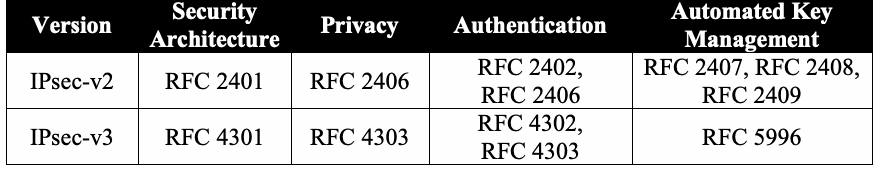
| バージョン | セキュリティアーキテクチャ | プライバシー | 認証 | 自動鍵管理 |
| IPsec-v2 | RFC 2401 | RFC 2406 | RFC 2402、RFC 2406 | RFC 2407、RFC 2408、RFC 2409 |
| IPsec-v3 | RFC 4301 | RFC 4303 | RFC 4302、RFC 4303 | RFC 5996 |
The IPsec security mechanisms are not tied to any specific cryptographic algorithms; in fact, many algorithms and modes have IETF Requests For Comment (RFCs) describing their use with IPsec. This, however, can result in a situation where there are so many choices for typical system administrators to make that it is difficult to achieve interoperability. To improve interoperability in IPsec-v3, two cipher suites: VPN-A and VPN-B were specified [RFC 4308]. However, these two cipher suites are not NIST-approved cipher suites. Four additional cipher suites have been defined in [RFC 6379]: Suite-B-GCM-128, Suite-B-GCM-256, Suite-B-GMAC-128 and Suite-B-GMAC-256 and they are NIST-approved.
IPsecのセキュリティメカニズムは特定の暗号アルゴリズムに限定されず、実際、多数のアルゴリズムやモードについてIPsecでの使用を説明するIETF Request for Comments（RFC）がある。しかし選択肢が非常に多いため、一般的なシステム管理者が相互運用性を確保することが困難になり得る。IPsec-v3の相互運用性を高めるため、VPN-AおよびVPN-Bという2つの暗号スイートが規定された［RFC 4308］。ただし、この2つはNIST承認の暗号スイートではない。［RFC 6379］ではさらに4つの暗号スイート（Suite-B-GCM-128、Suite-B-GCM-256、Suite-B-GMAC-128、Suite-B-GMAC-256）が定義されており、これらはNIST承認済みである。
未レビュー訳Implementers may allow the individual selection of security algorithms (i.e., rather than selecting one of the pre-specified suites of algorithms) specified in [RFC 6379], but users must be aware that picking non-standard groupings of algorithms may result in limited interoperability. However, when IPsec is used in the context of a VPN, security policy can be centrally managed, thus ensuring interoperability without the use of pre-defined cipher suites. Current IETF algorithm guidance is in [RFC 7321].
実装者は、［RFC 6379］に指定された事前定義済みアルゴリズムスイートを選ぶ代わりに、個々のセキュリティアルゴリズムを選択できるようにしてもよい。ただし、標準外のアルゴリズムの組み合わせを選ぶと相互運用性が限定される場合があることをユーザーは認識しなければならない。一方、VPNの一部としてIPsecを使用する場合、事前定義済み暗号スイートを使わなくても、セキュリティポリシーを集中管理して相互運用性を確保できる。現在のIETFアルゴリズム指針は［RFC 7321］にある。
3.2 Security and Compliance Issues
3.2 セキュリティおよびコンプライアンス上の課題
3.2.1 Cryptographic Algorithms
3.2.1 暗号アルゴリズム
Table 3-2 below gives cryptographic algorithm recommendations for use within IPsec. The algorithms that are specified for IKE are used to protect IKE’s own traffic. The algorithms used in ESP and AH are used to provide IPsec protection to data traffic; for these algorithms to be used within ESP or AH, IKE must be capable of negotiating their use.
以下の表3-2は、IPsecで使用する暗号アルゴリズムの推奨事項を示す。IKEに指定されたアルゴリズムはIKE自体の通信を保護するために使う。ESPおよびAHに使うアルゴリズムはデータ通信にIPsec保護を提供する。これらをESPまたはAHで使用するには、IKEが使用について交渉できなければならない。
In Table 3-2 below, column four lists the IETF conformance requirements as specified in the RFCs by using the three IETF requirement levels: MUST, SHOULD and MAY to indicate whether the algorithm needs to be implemented. See [RFC 2119] for definitions of these requirement levels and further information on IETF Conformance language. Column five, however, states federal conformance requirements using two levels: Mandatory and Optional. Mandatory means that the feature is required to be available in an implementation, and Optional means that implementation of the technique is permitted.
以下の表3-2の第4列は、アルゴリズムを実装する必要があるかを示すIETFの3つの要件レベル（MUST、SHOULD、MAY）を用い、RFCに規定されたIETF適合要件を列挙する。これらの要件レベルの定義およびIETF適合性用語の詳細は［RFC 2119］を参照。第5列には、連邦政府の適合要件を「必須」と「任意」の2段階で示す。「必須」は機能を実装で利用可能にする必要があることを意味し、「任意」はその方式の実装が許可されていることを意味する。
Table 3-2: Cryptographic Algorithm Recommendations
表3-2：暗号アルゴリズムの推奨事項
未レビュー訳| Protocol | Cryptographic Service | Algorithm/Mode | IETF Requirement RFC 7321 | Federal Requirement |
| ESP | Encryption | TDEA in CBC mode | MAY | Optional; if used, TDEA shall use three distinct keys |
| ESP | Encryption | AES with 128-bit keys in CBC mode | MUST | Mandatory |
| ESP | Encryption | AES-128 in Counter mode | MAY | Optional; if used, shall be used with integrity protection |
| ESP or AH | Integrity Protection | HMAC SHA1-96 (key strength shall be equal to or greater than 112 bits) | MUST | Mandatory |
原本PDFの抜粋画像
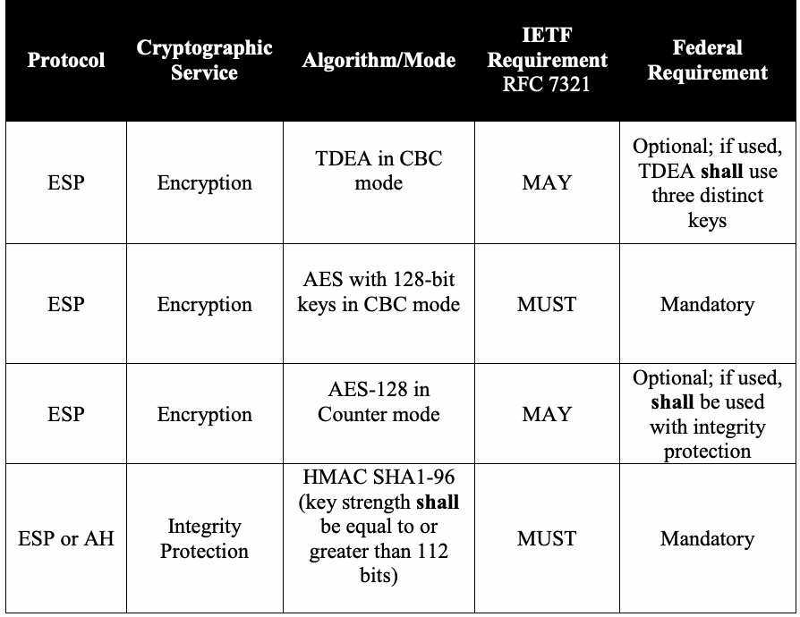
| プロトコル | 暗号サービス | アルゴリズム／モード | IETF要件 RFC 7321 | 連邦政府要件 |
| ESP | 暗号化 | CBCモードのTDEA | MAY | 任意。使用する場合、TDEAは異なる3つの鍵を使用しなければならない |
| ESP | 暗号化 | 128ビット鍵のAES、CBCモード | MUST | 必須 |
| ESP | 暗号化 | カウンターモードのAES-128 | MAY | 任意。使用する場合、完全性保護と併用しなければならない |
| ESPまたはAH | 完全性保護 | HMAC SHA1-96（鍵強度は112ビット以上でなければならない） | MUST | 必須 |
原本PDFの抜粋画像
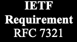
原本PDFの抜粋画像

原本PDFの抜粋画像
| Protocol | Cryptographic Service | Algorithm/Mode | IETF Requirement | Federal Requirement |
| ESP or AH | Integrity Protection | HMAC SHA-256- 128 (key strength shall be equal to or greater than 112 bits) | [RFC 4868] SHOULD | Optional |
| ESP | Encryption and Integrity Protection | AES-128 in Galois/Counter Mode | [RFC 4106], [RFC 4835] | Optional |
| ESP | Encryption and Integrity Protection | AES-128 in Counter mode with CBC-MAC | [RFC 4309], [RFC 4835] MAY | Optional |
| ESP or AH | Integrity Protection | AES-128 in GMAC Mode | [RFC 4543] | Optional |
| IKEv1 or IKEv2 | Encryption | TDEA in CBC mode | MAY | Optional; if used, TDEA shall use three distinct keys |
| IKEv1 or IKEv2 | Encryption | AES-128 in CBC mode | MUST | Mandatory |
| IKEv1 or IKEv2 | Pseudo-random function | HMAC-SHA1 | [RFC 4109], [RFC 4307] MUST | Mandatory |
| IKEv1 or IKEv2 | Pseudo-random Function | HMAC-SHA-256 | [RFC 4868] SHOULD | Optional |
| IKEv1 or IKEv2 | Diffie-Hellman Group 24 | 2048-bit MODP | [RFC 5114] | Mandatory |
原本PDFの抜粋画像
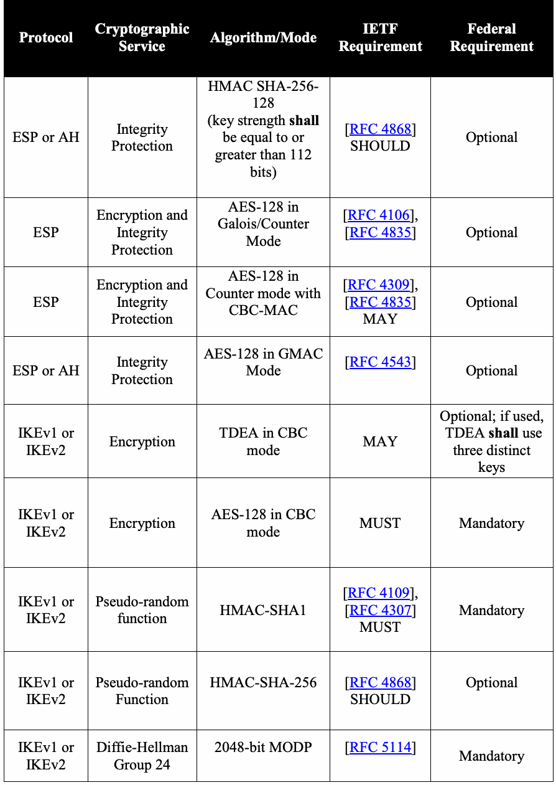
| プロトコル | 暗号サービス | アルゴリズム／モード | IETF要件 | 連邦政府要件 |
| ESPまたはAH | 完全性保護 | HMAC SHA-256-128（鍵強度は112ビット以上でなければならない） | ［RFC 4868］ SHOULD | 任意 |
| ESP | 暗号化および完全性保護 | ガロア／カウンターモードのAES-128 | ［RFC 4106］、［RFC 4835］ | 任意 |
| ESP | 暗号化および完全性保護 | CBC-MAC付きカウンターモードのAES-128 | ［RFC 4309］、［RFC 4835］ MAY | 任意 |
| ESPまたはAH | 完全性保護 | GMACモードのAES-128 | ［RFC 4543］ | 任意 |
| IKEv1またはIKEv2 | 暗号化 | CBCモードのTDEA | MAY | 任意。使用する場合、TDEAは異なる3つの鍵を使用しなければならない |
| IKEv1またはIKEv2 | 暗号化 | CBCモードのAES-128 | MUST | 必須 |
| IKEv1またはIKEv2 | 疑似乱数関数 | HMAC-SHA1 | ［RFC 4109］、［RFC 4307］ MUST | 必須 |
| IKEv1またはIKEv2 | 疑似乱数関数 | HMAC-SHA-256 | ［RFC 4868］ SHOULD | 任意 |
| IKEv1またはIKEv2 | Diffie-Hellmanグループ24 | 2048ビットMODP | ［RFC 5114］ | 必須 |
原本PDFの抜粋画像

原本PDFの抜粋画像

原本PDFの抜粋画像

| Protocol | Cryptographic Service | Algorithm/Mode | IETF Requirement | Federal Requirement |
| IKEv1 or IKEv2 | Diffie-Hellman Group 14 | 2048-bit MODP | [RFC 4109], [RFC 4307] SHOULD | Optional |
| IKEv1 or IKEv2 | Elliptic Curve Diffie-Hellman | P-256 or P-384 | [FIPS 186-4], [RFC 5903] MAY | Should |
| IKEv1 or IKEv2 | Integrity | HMAC-SHA1-96 (key strength shall be equal to or greater than 112 bits) | [RFC 4109], [RFC 4307] MUST | Mandatory |
| IKEv1 or IKEv2 | Integrity | HMAC-SHA256- 128 key strength shall be equal to or greater than 112 bits) | [RFC 4868] SHOULD | Optional |
| IKEv1 | Peer Authentication | 2048-bit RSA with SHA256 | [RFC 4109] SHOULD | Mandatory |
| IKEv1 | Peer Authentication | DSA with SHA256 | [RFC 4109] MAY | Mandatory |
| IKEv2 | Peer Authentication | 2048-bit RSA with SHA256 | [RFC 5996] MUST | Mandatory |
| IKEv2 | Peer Authentication | DSA with SHA256 | [RFC 5996] MAY | Optional |
| IKEv1 or IKEv2 | Peer Authentication | ECDSA-256 or ECDSA-384 | [RFC 4754] MAY | Should |
原本PDFの抜粋画像
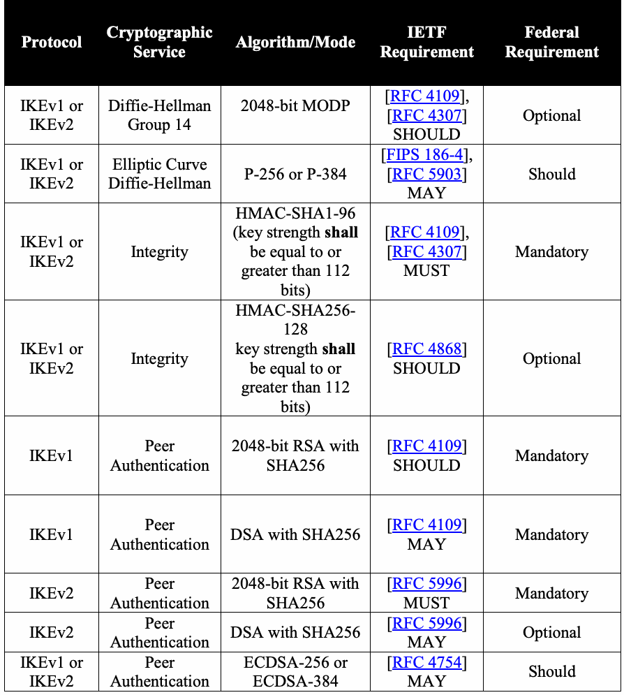
| プロトコル | 暗号サービス | アルゴリズム／モード | IETF要件 | 連邦政府要件 |
| IKEv1またはIKEv2 | Diffie-Hellmanグループ14 | 2048ビットMODP | ［RFC 4109］、［RFC 4307］ SHOULD | 任意 |
| IKEv1またはIKEv2 | 楕円曲線Diffie-Hellman | P-256またはP-384 | ［FIPS 186-4］、［RFC 5903］ MAY | Should |
| IKEv1またはIKEv2 | 完全性 | HMAC-SHA1-96（鍵強度は112ビット以上でなければならない） | ［RFC 4109］、［RFC 4307］ MUST | 必須 |
| IKEv1またはIKEv2 | 完全性 | HMAC-SHA256-128（鍵強度は112ビット以上でなければならない） | ［RFC 4868］ SHOULD | 任意 |
| IKEv1 | ピア認証 | SHA256を用いる2048ビットRSA | ［RFC 4109］ SHOULD | 必須 |
| IKEv1 | ピア認証 | SHA256を用いるDSA | ［RFC 4109］ MAY | 必須 |
| IKEv2 | ピア認証 | SHA256を用いる2048ビットRSA | ［RFC 5996］ MUST | 必須 |
| IKEv2 | ピア認証 | SHA256を用いるDSA | ［RFC 5996］ MAY | 任意 |
| IKEv1またはIKEv2 | ピア認証 | ECDSA-256またはECDSA-384 | ［RFC 4754］ MAY | Should |
原本PDFの抜粋画像
原本PDFの抜粋画像
原本PDFの抜粋画像
In [RFC 4835] and [RFC 2410], ESP provides options for NULL integrity protection or NULL encryption, which means that either no integrity protection would be applied or no encryption would be used, respectively; however, [RFC 4835] specifies that at least one of them MUST be applied. In the RFCs, NULL integrity protection (often referred to as NULL authentication) is intended for use in situations where confidentiality is required without the need for integrity protection. NULL integrity protection shall not, and in fact cannot, be used with NULL encryption. ESP, for example, could send unencrypted packets, (encryption set to NULL), but would be required to integrity-protect them, for example, by using HMAC-SHA1. On the other hand, ESP could send packets encrypted with AES-128 in CBC mode, but omit the integrity check (integrity protection set to
［RFC 4835］および［RFC 2410］では、ESPにNULL完全性保護またはNULL暗号化の選択肢がある。つまり、それぞれ完全性保護を適用しない、または暗号化を行わないことを意味する。ただし［RFC 4835］は、少なくとも一方を適用することが MUST であると規定する。RFCにおけるNULL完全性保護（NULL認証と呼ばれることもある）は、完全性保護を必要とせず機密性が必要な状況での使用を意図している。NULL完全性保護はNULL暗号化と併用してはならず、実際に併用できない。例えばESPは、暗号化をNULLにして暗号化しないパケットを送信してもよいが、その場合はHMAC-SHA1などで完全性を保護しなければならない。一方、ESPはCBCモードのAES-128でパケットを暗号化しつつ、完全性検査を省略（完全性保護をNULLに設定）することもできる。
未レビュー訳NULL).
NULL）。
未レビュー訳However, to be compliant with this Recommendation, IPsec ESP-protected traffic shall always be integrity-protected, either through the use of an integrity-protection algorithm, such as HMAC-SHA1-96, or through the use of a combined-mode algorithm, such as AES-128 in Galois/Counter Mode. Therefore, encrypted ESP shall not be used with NULL integrity-protection.
ただし本勧告に準拠するには、IPsec ESP保護トラフィックは、HMAC-SHA1-96などの完全性保護アルゴリズム、またはガロア／カウンターモードのAES-128などの統合モードアルゴリズムを用いて、常に完全性保護しなければならない。したがって、暗号化されたESPでNULL完全性保護を使用してはならない。
When IPsec-protected traffic is integrity-protected, an Integrity Check Value (ICV) is stored in the Integrity Check Value field of the ESP payload [RFC 4303] or in the Integrity Check Value field of the Authentication Header (AH) [RFC 4302]; this field is referred to as the “Authentication Data” field in IPsec-v2 ([RFC 2406], [RFC 2402]).
IPsec保護トラフィックを完全性保護する場合、完全性チェック値（ICV）はESPペイロード［RFC 4303］のIntegrity Check Valueフィールド、またはAuthentication Header（AH）［RFC 4302］のIntegrity Check Valueフィールドに格納される。このフィールドはIPsec-v2では「Authentication Data」フィールドと呼ばれる［RFC 2406］、［RFC 2402］。
When HMAC is used for integrity protection, the length of the ICV value is at most the size of the output value of the hash function. For example, the ICV value for HMAC-SHA1-96 and HMAC-SHA256-128 is 96 and 128 bits, respectively [RFC 4868].
完全性保護にHMACを使用する場合、ICV値の長さはハッシュ関数の出力値サイズ以下である。例えばHMAC-SHA1-96およびHMAC-SHA256-128のICV値はそれぞれ96ビットおよび128ビットである［RFC 4868］。
未レビュー訳Although the IETF still recommends supporting AES-XCBC-MAC ([RFC 3566], [RFC 4434], [RFC 7321]), it is not approved for use by the Federal Government. As such, AES-XCBC-MAC shall not be used for integrity protection.
IETFはAES-XCBC-MAC［RFC 3566］、［RFC 4434］、［RFC 7321］のサポートを依然推奨しているが、連邦政府での使用は承認されていない。したがってAES-XCBC-MACを完全性保護に使用してはならない。
A new class of algorithms, called combined-mode algorithms, appears in the above table. They can be negotiated by IKE and used within IPsec-v3 cipher suites. These algorithms provide both encryption and integrity protection. Two combined-mode algorithms have been approved for Federal Government use: AES in Galois/Counter Mode (GCM) [RFC 4106] and AES in counter mode with CBC-MAC (AES-CCM) [RFC 4309].
上記の表には、統合モードアルゴリズムと呼ばれる新しいアルゴリズム群がある。IKEで交渉し、IPsec-v3暗号スイート内で使用できる。これらのアルゴリズムは暗号化と完全性保護の両方を提供する。連邦政府での使用が承認された統合モードアルゴリズムは2つある。ガロア／カウンターモードのAES（GCM）［RFC 4106］と、CBC-MAC付きカウンターモードのAES（AES-CCM）［RFC 4309］である。
未レビュー訳There is also a variant of AES-GCM, referred to as AES-GMAC [RFC 4543], that provides integrity protection, but does not provide encryption. This mode may be used within either the ESP or AH header.
AES-GCMにはAES-GMAC［RFC 4543］と呼ばれる変種もあり、暗号化は提供しないが完全性保護を提供する。このモードはESPまたはAHヘッダーのいずれでも使用してよい。
The maximum size of the ICV for AES-CCM, AES-GCM and AES-GMAC is 16 bytes. Implementations shall support an ICV size of 16 bytes for these three algorithms ([RFC
AES-CCM、AES-GCM、AES-GMACのICV最大サイズは16バイトである。実装はこれら3つのアルゴリズムについて16バイトのICVサイズをサポートしなければならない（［RFC
未レビュー訳4309], [RFC 4106], [RFC 4543]).
4309], [RFC 4106], [RFC 4543])。
未レビュー訳AES-GCM, AES-CCM, AES-CTR, and AES-GMAC shall not be used with manually distributed keys. If the counter value, in AES-CTR or AES-CCM, or the IV value, in AES-GCM or AES-GMAC, is used for more than one packet with the same key, the security of the algorithm’s confidentiality mechanism is compromised. Since manual keying presents a major challenge to this limit, manually distributed keys shall not be used with these algorithms. Automated keying using IKE establishes secret keys for the two peers within each Security Association, with an extremely small probability of duplicate keys.
AES-GCM、AES-CCM、AES-CTR、およびAES-GMACを手動配布鍵とともに使用してはならない。AES-CTRまたはAES-CCMのカウンタ値、あるいはAES-GCMまたはAES-GMACのIV値が、同一鍵で複数のパケットに使用されると、アルゴリズムの機密性メカニズムの安全性が損なわれる。この制限は手動鍵設定では重大な課題となるため、これらのアルゴリズムには手動配布鍵を使用してはならない。IKEによる自動鍵設定では、各セキュリティアソシエーション内の2つのピアに秘密鍵を確立するため、鍵が重複する確率は極めて小さい。
In previous IETF guidance, single DES using the CBC mode [RFC 2405] was mandatory-to-implement; however, this algorithm shall not be used to protect information.
以前のIETFガイダンスでは、CBCモードの単一DES [RFC 2405] は実装必須であったが、このアルゴリズムを情報保護に使用してはならない。
未レビュー訳IPsec allows the individual selection of security algorithms. As an example, an implementer using Table 3-2 and following the guidance of Part 1 [SP 800-57 Part 1], could select the following algorithms to form an IPsec suite with an overall security strength of 112 bits:
IPsecでは、セキュリティアルゴリズムを個別に選択できる。例として、表3-2を使用し、第1部 [SP 800-57 Part 1] のガイダンスに従う実装者は、全体で112ビットのセキュリティ強度を持つIPsecスイートを構成するために、次のアルゴリズムを選択できる。
ESP Encryption: AES in CBC mode
ESP暗号化：CBCモードのAES
未レビュー訳 ESP Integrity Protection: HMAC-SHA1
ESP完全性保護：HMAC-SHA1
未レビュー訳 IKEv2 Encryption: AES in CBC mode
IKEv2暗号化：CBCモードのAES
未レビュー訳 IKEv2 Pseudo-random function: HMAC-SHA1
IKEv2擬似乱数関数：HMAC-SHA1
未レビュー訳 IKEv2 Diffie-Hellman group: 2048-bit MODP
IKEv2 Diffie-Hellmanグループ：2048ビットMODP
未レビュー訳 IKEv2 Integrity: HMAC-SHA1
IKEv2完全性：HMAC-SHA1
未レビュー訳 IKEv2 Peer Authentication: 2048-bit RSA with SHA-256.
IKEv2ピア認証：SHA-256を用いる2048ビットRSA。
未レビュー訳The Suite-B-GCM-128 and Suite-B-GCM-256 suites are both defined in [RFC 6379]. At present, these cipher suites are not widely available or deployed. [SP 500-267] states that support for these cipher suites is optional. However, wherever practical, implementations should be procured that support these cipher suites, and they should be selected for use wherever very high performance and security strength are required. As discussed above, AES-GCM is a combined-mode algorithm that provides both encryption and integrity protection; therefore these suites provide integrity, despite the fact that the integrity mechanism is listed in [RFC 6379] as NULL for both suites.
Suite-B-GCM-128およびSuite-B-GCM-256スイートは、いずれも[RFC 6379]で定義されている。現時点では、これらの暗号スイートは広く入手・導入されていない。[SP 500-267]は、これらのスイートのサポートを任意としている。ただし、実用上可能な場合は、これらのスイートをサポートする実装を調達し、非常に高い性能とセキュリティ強度が必要な場合に選択すべきである。前述のとおり、AES-GCMは暗号化と完全性保護の両方を提供する統合モードアルゴリズムである。したがって、[RFC 6379]では両スイートの完全性メカニズムがNULLと記載されているが、これらのスイートは完全性を提供する。
3.2.2 Additional Recommendations
3.2.2 追加の推奨事項
1.The Authentication Header (AH) should not be used in IPsec version 3.
1.IPsecバージョン3では、認証ヘッダー（AH）を使用すべきではない。
2.IKE should be used for automated key management to ensure a re-keying capability and scalability.
2.鍵の再設定機能と拡張性を確保するため、自動鍵管理にはIKEを使用すべきである。
3.Once an ESP Security Association has expired or is no longer in use, its ESP encryption keys shall continue to be protected by the system and kept secret as long as the data they were used to protect needs to be kept secret.
3.ESPセキュリティアソシエーションの有効期限が切れた後、または使用されなくなった後も、そのESP暗号化鍵は、保護対象データの秘密を保つ必要がある期間、システムによって保護され、秘密に保たれなければならない。
3.3 Procurement Guidance
3.3 調達に関するガイダンス
These recommendations are written to assist individuals responsible for selecting security products that include IPsec for the security of the IP layer.
これらの推奨事項は、IP層のセキュリティにIPsecを含むセキュリティ製品を選定する担当者を支援するために記載されている。
1.Any IPsec system for use within the Federal Government should include an IKE implementation for automated key management.
1.連邦政府内で使用するIPsecシステムには、自動鍵管理のためのIKE実装を含めるべきである。
2.Ensure that IPsec implementations include approved algorithms for each IPsec security component.
2.IPsec実装に、各IPsecセキュリティコンポーネント用の承認済みアルゴリズムが含まれることを確認する。
3.IPsec implementations should include the algorithms used in the Suite B cipher suites.
3.IPsec実装には、Suite B暗号スイートで使用されるアルゴリズムを含めるべきである。
未レビュー訳3.4 Recommendations for System Installers
3.4 システム設置担当者への推奨事項
Systems installers are those individuals that install products that include IPsec for security.
システム設置担当者とは、セキュリティ用にIPsecを含む製品を設置する者である。
1.IKE should be used for automated key management within any IPsec system.
1.IPsecシステムでは、自動鍵管理にIKEを使用すべきである。
2.NULL encryption shall only be employed when integrity protection is required, but confidentiality is not needed.
2.NULL暗号化は、完全性保護が必要で、機密性が不要な場合に限り使用しなければならない。
3.Installers shall select approved algorithms for each security component, as specified in Section 3.2.
3.設置担当者は、3.2節に規定された各セキュリティコンポーネント用の承認済みアルゴリズムを選択しなければならない。
3.5 Recommendations for System Administrators
3.5 システム管理者への推奨事項
System administrators are those individuals responsible for the day-to-day functioning of the security product containing IPsec. System administrators shall:
システム管理者とは、IPsecを含むセキュリティ製品の日常的な運用に責任を負う者である。システム管理者は次を行わなければならない。
1.Ensure that end users are properly trained and that the organization’s security policy is enforced.
1.エンドユーザーが適切な訓練を受け、組織のセキュリティポリシーが徹底されていることを確認する。
2.Ensure that a key used by the product is protected throughout its lifespan.
2.製品が使用する鍵を、そのライフサイクル全体にわたって保護する。
未レビュー訳3.6 Recommendations for End Users
3.6 エンドユーザーへの推奨事項
An end user is the individual using a product that relies on IPsec for security. End users shall:
エンドユーザーとは、セキュリティにIPsecを利用する製品を使用する個人である。エンドユーザーは次を行わなければならない。
1.Be aware of and trained to follow the organization’s security policy for using the product.
1.製品の使用に関する組織のセキュリティポリシーを理解し、それに従うための訓練を受ける。
未レビュー訳2.Operate their system as instructed by their organization and system administrator.
2.組織およびシステム管理者の指示どおりにシステムを運用する。
未レビュー訳4 Transport Layer Security (TLS)
4 Transport Layer Security（TLS）
This section was moved to SP 800-52 Revision 1, Guidelines for the Selection, Configuration, and Use of Transport Layer Security (TLS) Implementations [SP 800-52].
この節は、SP 800-52 Revision 1, Guidelines for the Selection, Configuration, and Use of Transport Layer Security (TLS) Implementations [SP 800-52] に移された。
5 Secure/Multipart Internet Mail Extensions (S/MIME)
5 Secure/Multipurpose Internet Mail Extensions（S/MIME）
未レビュー訳5.1 Description
5.1 説明
Secure/Multipurpose Internet Mail Extensions (S/MIME) provides a consistent way to send and receive secure Internet mail. S/MIME is a set of specifications that are defined by a series of IETF RFCs, namely [RFC 5751], [RFC 5652], [RFC 2045], [RFC 2046], [RFC 2047], [RFC 4288], [RFC 4289] and [RFC 2049]. S/MIME provides the following cryptographic security services for electronic messaging applications:
Secure/Multipurpose Internet Mail Extensions（S/MIME）は、安全なインターネットメールを送受信するための一貫した方法を提供する。S/MIMEは、一連のIETF RFC、すなわち[RFC 5751]、[RFC 5652]、[RFC 2045]、[RFC 2046]、[RFC 2047]、[RFC 4288]、[RFC 4289]および[RFC 2049]で定義された仕様群である。S/MIMEは、電子メッセージングアプリケーションに次の暗号学的セキュリティサービスを提供する。
Authentication of a sending party using digital signatures,
デジタル署名による送信者の認証、
未レビュー訳 Message integrity and non-repudiation of origin using digital signatures, and
デジタル署名によるメッセージ完全性および送信元否認防止、ならびに
未レビュー訳 Confidentiality using encryption.
暗号化による機密性。
未レビュー訳S/MIME, therefore, requires a suite of algorithms for creating digital signatures, generating hash values, establishing keys and encrypting the content of the e-mail, as well as some means of establishing and sharing digital identities. Federal implementations rely on a public key infrastructure, specifically X.509 PKI, to establish S/MIME user identities, to bind those identities to the user’s public key through public key certificates, to provide digital signatures, to provide keys to be used for content encryption, or to establish symmetric keys for use on a per message basis. For detailed information on PKIs, see Section 2 of this Recommendation.
したがってS/MIMEでは、デジタル署名の作成、ハッシュ値の生成、鍵の確立、電子メール本文の暗号化に用いるアルゴリズム一式に加え、デジタルIDを確立し共有する手段が必要である。連邦政府の実装では、S/MIMEユーザーのID確立、公開鍵証明書によるIDとユーザー公開鍵の結び付け、デジタル署名の提供、コンテンツ暗号化用鍵の提供、またはメッセージごとに使用する共通鍵の確立に、公開鍵基盤、具体的にはX.509 PKIを利用する。PKIの詳細については、本勧告の第2節を参照。
Stored electronic mail encompasses key management issues associated with encrypted file integrity and with transmission over a network. It is therefore necessary 1) to establish pair-wise and/or multicast (sent to more than one recipient) key management relationships between the sender and receiver(s) and 2) to securely store the key(s) associated with encrypted e-mail until it is no longer necessary for a recipient to be able to decrypt or verify the integrity of the e-mail.
保存された電子メールには、暗号化ファイルの完全性およびネットワーク経由の送信に関する鍵管理上の問題が伴う。そのため、1) 送信者と受信者間でペアワイズおよび／またはマルチキャスト（複数の受信者に送信）鍵管理関係を確立し、2) 受信者がメールを復号または完全性を検証する必要がなくなるまで、暗号化メールに関連する鍵を安全に保管する必要がある。
未レビュー訳S/MIME is not restricted to e-mail; it can be used with any transport mechanism that employs MIME protocols, such as the Hypertext Transfer Protocol (HTTP).
S/MIMEは電子メールに限定されず、Hypertext Transfer Protocol（HTTP）など、MIMEプロトコルを用いる任意の転送方式で使用できる。
5.2 Security and Compliance Issues
5.2 セキュリティおよびコンプライアンス上の問題
S/MIME products can be implemented with different combinations of security features and a variety of cryptographic algorithms. Senders and receivers may have different capabilities and may be sending messages protected with algorithms of different strengths. This can lead to numerous interoperability issues. Federal clients using secure e-mail shall be able to perform the following:
S/MIME製品は、異なるセキュリティ機能の組み合わせや多様な暗号アルゴリズムで実装できる。送信者と受信者の機能が異なる場合があり、異なる強度のアルゴリズムで保護されたメッセージを送信している場合もある。これにより、多数の相互運用性の問題が生じ得る。安全な電子メールを使用する連邦政府クライアントは、次を実行できなければならない。
Send and receive signed messages,
署名付きメッセージの送受信、
未レビュー訳 Send and receive encrypted messages,
暗号化メッセージの送受信、
未レビュー訳 Send and receive signed and encrypted messages,
署名付きかつ暗号化されたメッセージの送受信、
未レビュー訳 Request, send and process signed receipts, and
署名付き受領通知の要求、送信および処理、ならびに
未レビュー訳 Process messages from secure e-mail list clients (includes suppressing receipts, as required, and nondisclosure of list recipients, as required).
安全な電子メールメーリングリストクライアントからのメッセージの処理（必要に応じて受領通知を抑止し、リスト受信者を非開示にすることを含む）。
未レビュー訳Furthermore, federal systems shall:
さらに、連邦政府システムは次を行わなければならない。
未レビュー訳 Utilize cryptographic modules that are FIPS 140-1 or FIPS 140-2 validated [FIPS 140-2], Support cryptographic Cipher Suite 1 (see Table 5-1 below), and
FIPS 140-1またはFIPS 140-2の認証を受けた暗号モジュール [FIPS 140-2] を利用する。 暗号スイート1（下記表5-1を参照）をサポートする。
未レビュー訳 Support X.509 certificates that conform to Federal PKI X.509 Certificates and the CRL Extensions Profile.
Federal PKI X.509 Certificates and the CRL Extensions Profileに適合するX.509証明書をサポートする。
未レビュー訳Federal clients should be capable of sending and processing e-mail with security labels and securely binding senders’ certificates to their signatures through the signing certificate attribute as described in [RFC 5035].22
連邦政府クライアントは、セキュリティラベル付き電子メールの送信と処理、および[RFC 5035]に記載の署名証明書属性を通じた送信者証明書と署名の安全な結び付けが可能であるべきである。22
未レビュー訳The most widely accepted, standard S/MIME profile is [RFC 5751]. Not all cryptographic algorithms available for use in support of the features in the profile are appropriate for the protection of Federal Government information. The S/MIME specifications allow the selection of individual algorithms. However, a number of cipher suites have been specified to define a specific combination of algorithms. Federal organizations shall use approved algorithms within S/MIME implementations for key establishment and transmitting messages. Tables 5-1 through 5-3 specify a variety of cipher suites that may be used to protect federal information and information systems (based on [SP 800-49] and [RFC 6318]). Any of the algorithms listed in the following tables may be used, in accordance with security strength time frame restrictions given in Part 1 and [SP 800-131A] to protect federal information in combinations other than those displayed. Table 5-1: Cipher Suite 1
最も広く受け入れられている標準S/MIMEプロファイルは[RFC 5751]である。このプロファイルの機能を支援する暗号アルゴリズムがすべて、連邦政府情報の保護に適しているわけではない。S/MIME仕様では個々のアルゴリズムを選択できるが、特定のアルゴリズムの組み合わせを定義する暗号スイートも複数規定されている。連邦政府機関は、鍵確立およびメッセージ送信を行うS/MIME実装に承認済みアルゴリズムを使用しなければならない。表5-1から表5-3は、連邦政府の情報および情報システムの保護に使用できる各種暗号スイートを示す（[SP 800-49]および[RFC 6318]に基づく）。以下の表に記載したアルゴリズムは、第1部および[SP 800-131A]のセキュリティ強度に関する時間枠の制限に従い、表に示したものとは異なる組み合わせで連邦政府情報を保護するために使用してもよい。表5-1：暗号スイート1
未レビュー訳| Mechanism | Guidance |
| Digital Signatures | DSA with key sizes ≥ 2048 bits [FIPS 186-4] |
| Hash | SHA-256 [FIPS 180-4] |
| Key Agreement | Diffie-Hellman with key size ≥ 2048bits [SP 800-56A] |
| Encryption | AES-128 in CBC mode [FIPS 197] and [SP 800-38A] |
原本PDFの抜粋画像
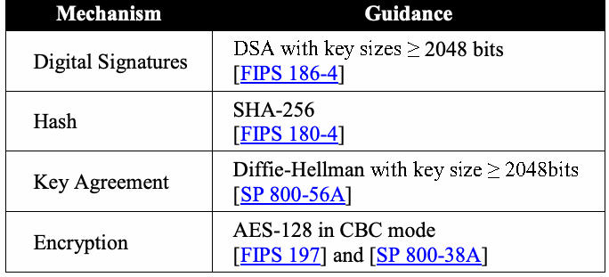
| メカニズム | ガイダンス |
| デジタル署名 | 鍵長 ≥ 2048ビットのDSA [FIPS 186-4] |
| ハッシュ | SHA-256 [FIPS 180-4] |
| 鍵共有 | 鍵長 ≥ 2048ビットのDiffie-Hellman [SP 800-56A] |
| 暗号化 | CBCモードのAES-128 [FIPS 197]および[SP 800-38A] |
Table 5-2: Cipher Suite B, Level 1*
表5-2：暗号スイートB、レベル1*
未レビュー訳| Mechanism | Guidance |
| Digital Signatures | ECDSA with P-256 [X9.62] |
| Hash | SHA-256 [FIPS 180-4] |
| Key Agreement | ECDH with P-256 [SEC1] |
| Key Derivation | Based on SHA-256 [SEC1] |
| Key Wrap | AES-128 [RFC 3394] |
| Encryption | AES-128 in CBC mode [FIPS 197] and [SP 800-38A] |
原本PDFの抜粋画像
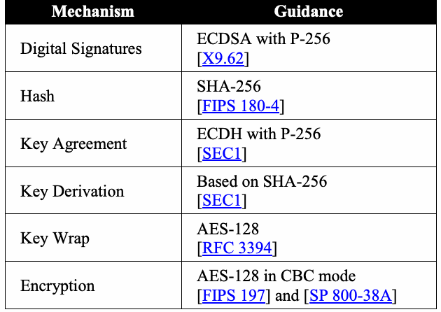
| メカニズム | ガイダンス |
| デジタル署名 | P-256を用いるECDSA [X9.62] |
| ハッシュ | SHA-256 [FIPS 180-4] |
| 鍵共有 | P-256を用いるECDH [SEC1] |
| 鍵導出 | SHA-256に基づく [SEC1] |
| 鍵ラップ | AES-128 [RFC 3394] |
| 暗号化 | CBCモードのAES-128 [FIPS 197]および[SP 800-38A] |
*see [RFC 6318]
* [RFC 6318]を参照
未レビュー訳Table 5-3: Cipher Suite B, Level 2*
表5-3：暗号スイートB、レベル2*
未レビュー訳| Mechanism | Guidance |
| Digital Signatures | ECDSA with P-384 [X9.62] |
| Hash | SHA-384 [FIPS 180-4] |
| Key Agreement | ECDH with P-384 [SEC1] |
| Key Derivation | Based on SHA-384 [SEC1] |
| Key Wrap | AES-256 [RFC 3394] |
| Encryption | AES-256 in CBC mode [FIPS 197] and [SP 800-38A] |
原本PDFの抜粋画像
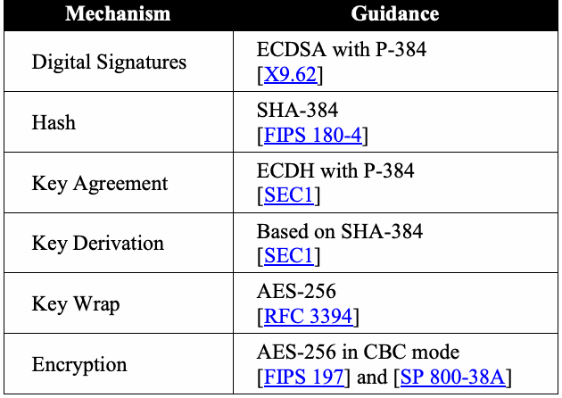
| メカニズム | ガイダンス |
| デジタル署名 | P-384を用いるECDSA [X9.62] |
| ハッシュ | SHA-384 [FIPS 180-4] |
| 鍵共有 | P-384を用いるECDH [SEC1] |
| 鍵導出 | SHA-384に基づく [SEC1] |
| 鍵ラップ | AES-256 [RFC 3394] |
| 暗号化 | CBCモードのAES-256 [FIPS 197]および[SP 800-38A] |
* see [RFC 6318]
* [RFC 6318]を参照
未レビュー訳Federal clients shall be supported by a Public Key Infrastructure with valid Federal PKI X.509 certificates for senders and receivers.
連邦政府クライアントは、送信者および受信者用の有効なFederal PKI X.509証明書を備えた公開鍵基盤によってサポートされなければならない。
Cryptographic modules used in federal systems shall comply with FIPS 140-2 [FIPS 140-2].
連邦政府システムで使用する暗号モジュールは、FIPS 140-2 [FIPS 140-2] に準拠しなければならない。
未レビュー訳Federal S/MIME implementations may, in accordance with organizational policies, be capable of receiving messages protected with algorithm suites that are not approved for federal use in sending protected messages. In those instances, users should be presented with a warning banner explaining that the cryptographic mechanisms used are weak and, therefore, that integrity and authentication cannot be assured.
連邦政府のS/MIME実装は、組織のポリシーに従い、保護されたメッセージの送信には連邦政府での使用が承認されていないアルゴリズムスイートで保護されたメッセージを受信できてもよい。その場合、使用された暗号メカニズムは弱く、そのため完全性および認証を保証できないことを説明する警告バナーをユーザーに表示すべきである。
未レビュー訳5.3 Procurement Guidance
5.3 調達に関するガイダンス
The following recommendations are for any individual that makes a purchasing decision for acquiring an S/MIME-enabled component.
以下の推奨事項は、S/MIME対応コンポーネントの取得を決定するすべての調達担当者を対象とする。
未レビュー訳1.In support of security and compatibility across the Federal Government, ensure that all federal information systems support Cipher Suite 1.
1.連邦政府全体のセキュリティと互換性を支援するため、すべての連邦政府情報システムが暗号スイート1をサポートすることを確認する。
未レビュー訳2.Procurements should support Cipher Suite B, either Level 1, Level 2, or both.
2.調達では、暗号スイートBのレベル1、レベル2、または両方をサポートすべきである。
3.Federal clients may support RC2 for use only in the event that users receive correspondence encrypted with this weaker and unapproved algorithm.
3.連邦政府クライアントは、ユーザーがこの弱く未承認のアルゴリズムで暗号化された通信を受信する場合に限り、RC2をサポートしてもよい。
4.Ensure that federal agencies do not use SHA-1 for digital signature generation; however, it can be used for the verification of digital signatures signed using SHA-1. Cryptographic algorithm implementations should be modular so as to allow for new algorithms.
4.連邦政府機関がデジタル署名の生成にSHA-1を使用しないことを確認する。ただし、SHA-1で署名されたデジタル署名の検証には使用できる。新しいアルゴリズムを利用できるよう、暗号アルゴリズム実装はモジュール化すべきである。
If an S/MIME client needs to generate a key pair, ensure that the S/MIME client or some related administrative utility or function is capable of generating public/ private key pairs on behalf of the user.
S/MIMEクライアントで鍵ペアを生成する必要がある場合、クライアントまたは関連する管理ユーティリティ／機能がユーザーの公開鍵／秘密鍵ペアを生成できることを確認する。
5.4 Recommendations for System Installers
5.4 システム設置担当者への推奨事項
The system installer is the individual that installs the S/MIME application and performs the initial configuration of the system.
システム設置担当者とは、S/MIMEアプリケーションを設置し、システムの初期構成を行う者である。
未レビュー訳1.Federal clients shall be configured to support Cipher Suite 1 for interoperability as described above in Section 5.2.
1.連邦政府クライアントは、上記5.2節のとおり相互運用性を確保するため、暗号スイート1をサポートするよう構成しなければならない。
未レビュー訳2.Systems shall be configured so that they only permit the use of approved cryptographic algorithms and approved key sizes to encrypt or sign new messages.
2.新しいメッセージの暗号化または署名に、承認済み暗号アルゴリズムおよび承認済み鍵長のみを使用するようシステムを構成しなければならない。
3.Installers should install and configure S/MIME clients so that they default to the use of an approved cipher algorithm suite. Furthermore, installers should configure clients so that there is a straightforward means for end users to change default settings and select algorithms as needed for interoperability and in accordance with organizational needs and policies.
3.設置担当者は、承認済み暗号アルゴリズムスイートを既定で使用するようS/MIMEクライアントをインストールおよび構成すべきである。さらに、相互運用性や組織のニーズおよびポリシーに応じてエンドユーザーが既定設定を簡単に変更し、アルゴリズムを選択できるよう構成すべきである。
4.System installers should configure clients so that end users can use unique certificates for each security function (e.g., encryption, digital signatures) at their disposal.
4.システム設置担当者は、エンドユーザーが各セキュリティ機能（暗号化、デジタル署名など）に固有の証明書を使用できるようクライアントを構成すべきである。
未レビュー訳5.5 Recommendations for System Administrators
5.5 システム管理者への推奨事項
The System Administrator is the individual who runs the S/MIME application on a day-to-day basis and, on client implementations, interacts with the end user.
システム管理者とは、S/MIMEアプリケーションを日常的に運用し、クライアント実装ではエンドユーザーとやり取りする者である。
未レビュー訳1.The system administrator shall ensure that end users are properly trained and that the organization’s security policy is enforced.
1.システム管理者は、エンドユーザーが適切な訓練を受け、組織のセキュリティポリシーが徹底されるようにしなければならない。
2.Systems shall be maintained so that they only permit the use of approved cryptographic algorithms and approved key sizes to encrypt or sign new messages.
2.新しいメッセージの暗号化または署名に、承認済み暗号アルゴリズムおよび承認済み鍵長のみを使用するようシステムを維持しなければならない。
3.Administrators should maintain S/MIME clients so that they default to the use of an approved cipher algorithm suite. Furthermore, administrators should maintain a straightforward means for end users to change default settings and select algorithms as needed for interoperability and in accordance with organizational needs and policies.
3.管理者は、承認済み暗号アルゴリズムスイートを既定で使用するようS/MIMEクライアントを維持すべきである。さらに、相互運用性や組織のニーズおよびポリシーに応じてエンドユーザーが既定設定を簡単に変更し、アルゴリズムを選択できる手段を維持すべきである。
4.System administrators should provide training for users on the relative security provided by various cryptographic algorithms and on organizational policies for their use.
4.システム管理者は、各種暗号アルゴリズムが提供する相対的なセキュリティと、その使用に関する組織のポリシーについてユーザーに訓練を提供すべきである。
5.System administrators should provide end users with guidance on how certificates and keys are stored and managed, and identify the end user’s related responsibilities.
5.システム管理者は、証明書および鍵の保管・管理方法についてエンドユーザーにガイダンスを提供し、関連するエンドユーザーの責任を明確にすべきである。
5.6 Recommendations for End Users
5.6 エンドユーザーへの推奨事項
An end user is the individual using a client to access the system. Even within a centrally managed environment, end users may find that they have a significant amount of control over some of the security features within an SMIME implementation.
エンドユーザーとは、クライアントを使用してシステムにアクセスする個人である。集中管理された環境であっても、S/MIME実装の一部のセキュリティ機能をエンドユーザーが大幅に制御できる場合がある。
1.Users shall operate their system as instructed by their organization and system administrators.
1.ユーザーは、組織およびシステム管理者の指示どおりにシステムを運用しなければならない。
2.Users should use unique certificates for each security function at their disposal.23
2.ユーザーは、利用可能な各セキュリティ機能に固有の証明書を使用すべきである。23
未レビュー訳3.Users shall protect their private keys from unauthorized disclosure.
3.ユーザーは、秘密鍵が不正に開示されないよう保護しなければならない。
未レビュー訳4.Users should not send the same message in both encrypted and plain text.
4.ユーザーは、同じメッセージを暗号化形式と平文形式の両方で送信すべきではない。
6 Kerberos
6 Kerberos
6.1 Description
6.1 説明
The Kerberos authentication mechanism was developed at the Massachusetts Institute of Technology (MIT) to enable the secure authentication of users to Target Servers (TSs) over an unprotected network, where client software acts on behalf of a user24. The original design and implementation of Kerberos and its first three revisions (i.e., versions 1 through 4) was primarily the work of Steve Miller, Clifford Neuman, Jerome Saltzer and Jeffrey Schiller25. Kerberos is used for local logins, remote (over the network) authentication, and for client-to-TS requests. It can also be extended to provide for the establishment of cryptographic keys between a client and a TS. Kerberos has been designed so that a user and a TS rely on a trusted third party to provide assurance of each party’s identity. This assurance is granted by means of tickets and authentication information, each encrypted with symmetric keys.
Kerberos認証メカニズムは、保護されていないネットワーク上で、ユーザーの代理として動作するクライアントソフトウェアを介して、ユーザーをターゲットサーバー（TS）に安全に認証するため、マサチューセッツ工科大学（MIT）で開発された。24 Kerberosの当初の設計と実装、および最初の3改訂（バージョン1～4）は、主としてSteve Miller、Clifford Neuman、Jerome Saltzer、Jeffrey Schillerによるものである。25 Kerberosは、ローカルログイン、リモート（ネットワーク経由）認証、およびクライアントからTSへの要求に使用される。また、クライアントとTS間で暗号鍵を確立するよう拡張することもできる。Kerberosは、ユーザーとTSが信頼できる第三者に各当事者のID保証を依頼する設計である。この保証は、共通鍵でそれぞれ暗号化されたチケットと認証情報によって与えられる。
未レビュー訳The trusted third party is a Key Distribution Center (KDC), which consists of an Authentication Server (AS) and a Ticket Granting Service (TGS). The AS and TGS may or may not reside on the same machine. The KDC has a database of user, TS, and TGS symmetric keys. All KDC symmetric keys are accessible by the TGS. The user’s key is normally created by hashing a user’s password with other information.
信頼できる第三者は鍵配布センター（KDC）であり、認証サーバー（AS）とチケット許可サービス（TGS）から構成される。ASとTGSは同一マシン上にあっても別々でもよい。KDCは、ユーザー、TSおよびTGSの共通鍵データベースを持つ。KDCの共通鍵はすべてTGSからアクセスできる。通常、ユーザー鍵はユーザーのパスワードを他の情報とともにハッシュして作成される。
未レビュー訳An overview of the Kerberos version 5 protocol is shown in Figure 6-1. The following is a simplification of the process (e.g., the generation of most keys and the use of most cryptographic operations are not specified). For example, tickets and authentication information are protected with checksums and encryption when transmitted.
Kerberosバージョン5プロトコルの概要を図6-1に示す。以下は処理を簡略化した説明である（例えば、ほとんどの鍵の生成およびほとんどの暗号操作の使用は規定されていない）。例えば、チケットと認証情報は、送信時にチェックサムと暗号化によって保護される。
1.A user logs onto a client by entering a password, from which a user symmetric key is generated.
1.ユーザーはパスワードを入力してクライアントにログインし、そこからユーザー共通鍵が生成される。
2.The client, acting on behalf of the user, requests a Ticket Granting Ticket from the
2.ユーザーの代理として動作するクライアントは、次のサーバーにチケット許可チケットを要求する。
未レビュー訳AS.
AS。
未レビュー訳3.The AS generates a Ticket Granting Ticket, for a specified validity period, and sends it to the client.
3.ASは指定された有効期間を持つチケット許可チケットを生成し、クライアントに送信する。
未レビュー訳4.The client provides the Ticket Granting Ticket to the TGS, along with his own authentication information, which includes the client identifier and a time stamp.
4.クライアントは、クライアント識別子とタイムスタンプを含む自身の認証情報とともに、チケット許可チケットをTGSに提示する。
5.The TGS checks the authentication information and the validity period of the Ticket Granting Ticket. The TGS then generates a Target Server Ticket and sends it to the client.
5.TGSは認証情報とチケット許可チケットの有効期間を確認する。その後、TGSはターゲットサーバーチケットを生成し、クライアントに送信する。
6.The client sends authentication information and the Target Server Ticket to the
6.クライアントは、認証情報とターゲットサーバーチケットを次のサーバーに送信する。
未レビュー訳TS.
TS。
未レビュー訳7.The TS checks the authentication information and the validity period of the Target Server Ticket; if the information is reasonable, the user is authenticated to the TS.
7.TSは認証情報とターゲットサーバーチケットの有効期間を確認する。情報が妥当であれば、ユーザーはTSに認証される。
未レビュー訳The protocol may be extended to authenticate the TS to the user, and a ticket may be re-used within its validity period.
このプロトコルはTSをユーザーに対して認証するよう拡張でき、チケットは有効期間内に再利用できる。
未レビュー訳1.User-Client Interface
1.ユーザー／クライアントインターフェース
未レビュー訳2.Request for Ticket Granting Ticket
2.チケット許可チケットの要求
未レビュー訳3.Ticket Granting Ticket
3.チケット許可チケット
未レビュー訳KDC
KDC
未レビュー訳4.Request for Target Server Ticket
4.ターゲットサーバーチケットの要求
未レビュー訳5.Target Server Ticket
5.ターゲットサーバーチケット
未レビュー訳6.Request for Service
6.サービス要求
未レビュー訳AS
未レビュー訳TGS
TGS
未レビュー訳2 3 4 5
2 3 4 5
未レビュー訳6
未レビュー訳Client
クライアント
未レビュー訳TS
未レビュー訳1
未レビュー訳User
ユーザー
未レビュー訳Figure 6-1: The Kerberos Protocol
図6-1：Kerberosプロトコル
未レビュー訳Each TGS has its own “realm” of clients and TSs. However, different realms may be linked by the sharing of inter-realm keys between TGS's (see Figure 6-2). A client in Realm 1 wishing a service on a TS in Realm 2 may obtain a ticket from TGS1 that introduces the client to TGS2. This ticket is encrypted with the inter-realm key shared between TGS1 and TGS2. The client can then request a ticket from TGS2 for the desired service on the TS in Realm 2. Thus, realms may be networked to provide clients with inter-realm services.
各TGSは、独自のクライアントおよびTSの「レルム」を持つ。ただし、異なるレルム間でTGS同士がレルム間鍵を共有することで、複数レルムを接続できる（図6-2参照）。レルム1のクライアントがレルム2のTS上のサービスを利用する場合、TGS1から、クライアントをTGS2に紹介するチケットを取得できる。このチケットは、TGS1とTGS2が共有するレルム間鍵で暗号化される。その後、クライアントはTGS2に対し、レルム2のTS上で希望するサービス用のチケットを要求できる。このように、レルムをネットワーク接続して、クライアントにレルム間サービスを提供できる。
1.User-Client Interface
1.ユーザー／クライアントインターフェース
未レビュー訳AS
未レビュー訳2.Request for Ticket Granting Ticket
2.チケット許可チケットの要求
未レビュー訳Realm1
レルム1
未レビュー訳3.Ticket Granting Ticket for TGS1
3.TGS1用チケット許可チケット
未レビュー訳4.Request for Ticket Granting Ticket
4.チケット許可チケットの要求
未レビュー訳TGS1
TGS1
未レビュー訳2 3 Realm1 5. Ticket Granting Ticket for TGS2
2 3 レルム1 5. TGS2用チケット許可チケット
未レビュー訳6.Request for Target Server Ticket
6.ターゲットサーバーチケットの要求
未レビュー訳4
未レビュー訳7.Target Server Ticket for TS
7.TS用ターゲットサーバーチケット
未レビュー訳5
未レビュー訳8.Request for Service
8.サービス要求
未レビュー訳6
未レビュー訳TGS2
TGS2
未レビュー訳Client
クライアント
未レビュー訳Realm2
レルム2
未レビュー訳Realm1
レルム1
未レビュー訳7
未レビュー訳1
未レビュー訳TS
未レビュー訳8
未レビュー訳Realm2
レルム2
未レビュー訳User
ユーザー
未レビュー訳Figure 6-2: Cross-Realm Authentication
図6-2：レルム間認証
未レビュー訳In an alternative Kerberos protocol between the client and the AS (as specified in [RFC 4556]), either both the user and the AS have key-establishment public key pairs with corresponding certificates, or the user has a key-establishment key pair and associated certificate, and the AS has a digital signature key pair and digital signature certificate. The user symmetric key can then be established between the client and the KDC in one of two ways:
クライアントとAS間のKerberosプロトコルの代替方式（[RFC 4556]に規定）では、ユーザーとASの双方が鍵確立用公開鍵ペアと対応する証明書を持つか、ユーザーが鍵確立用鍵ペアと関連証明書を持ち、ASがデジタル署名鍵ペアとデジタル署名証明書を持つ。ユーザー共通鍵は、次のいずれかの方法でクライアントとKDC間に確立できる。
未レビュー訳1.Using key agreement (e.g., Diffie-Hellman) between the AS and the client26, or
1.ASとクライアント間で鍵共有（例：Diffie-Hellman）を行う。26 または
未レビュー訳2.Using key transport (e.g., RSA), where the AS generates the user symmetric key, and sends the key to the client27.
2.ASがユーザー共通鍵を生成し、クライアントに送る鍵転送（例：RSA）を行う。27
未レビュー訳Once the user symmetric key is established, the remainder of the protocol proceeds as previously described. In this case, the need for user symmetric keys generated from passwords can thus be avoided.
ユーザー共通鍵が確立されると、プロトコルの残りの部分は前述のとおり進む。この場合、パスワードから生成するユーザー共通鍵は不要となる。
未レビュー訳Kerberos implementations may provide an additional authentication capability that is called pre-authentication, as described in [RFC 6113]. TLS may also be implemented to protect all communication between the clients and KDCs as described in [RFC 6251].
Kerberos実装は、[RFC 6113]に記載された事前認証と呼ばれる追加認証機能を提供してもよい。また、[RFC 6251]に記載のとおり、クライアントとKDC間のすべての通信を保護するためにTLSを実装してもよい。
未レビュー訳6.2 Security and Compliance Issues
6.2 セキュリティおよびコンプライアンス上の問題
1.Kerberos version 5 was initially specified in [RFC 1510]. More recently, the security was updated in version 5 ([RFC 4120] and [RFC 6649]); however, many existing implementations still correspond to the initial RFC.
1.Kerberosバージョン5は当初[RFC 1510]で規定された。その後、バージョン5のセキュリティは更新された（[RFC 4120]および[RFC 6649]）。ただし、既存実装の多くは依然として初期RFCに準拠している。
2.Many current Kerberos implementations based on [RFC 1510] rely on DES for symmetric encryption functions. DES is no longer approved for use in protecting Federal Government information and has been deprecated as well in Kerberos
2.[RFC 1510]に基づく現在のKerberos実装の多くは、共通鍵暗号にDESを使用している。DESは連邦政府情報の保護用途として承認されておらず、Kerberosでも非推奨となっている。
未レビュー訳[RFC 6649].
[RFC 6649]。
未レビュー訳3.If a keyless checksum computation is used for the data integrity of Kerberos messages, the integrity of the message may be inadequate.
3.Kerberosメッセージのデータ完全性に鍵なしチェックサム計算を使用すると、メッセージ完全性が不十分となる可能性がある。
未レビュー訳4.Some Kerberos implementations rely solely on the entropy (i.e., randomness) provided by the user password to generate the symmetric client key (the client key is a hash of the user’s password). Passwords, in general, do not provide enough randomness for generating a key. In such cases, a dictionary attack28 is feasible. If passwords are used to generate cryptographic keys, they should be selected to maximize the difficulty of a password guessing attack, thus increasing the difficulty of an off-line dictionary attack [SP 800-118].29
4.一部のKerberos実装では、ユーザーパスワードが持つエントロピー（すなわちランダム性）のみに依存して、共通鍵（ユーザーのパスワードをハッシュしたクライアント鍵）を生成する。一般にパスワードは鍵生成に十分なランダム性を提供しない。この場合、辞書攻撃28が可能となる。パスワードから暗号鍵を生成する場合は、パスワード推測攻撃を困難にし、オフライン辞書攻撃 [SP 800-118] をさらに難しくするよう選択すべきである。29
未レビュー訳5.Compromising the client, KDC, or TS could compromise the symmetric keys that they contain and thereby compromise parts of the system. In particular, the KDC stores keying information for all the KDC users, the TGS, and any TS that communicates directly with the KDC TGS. These symmetric keys require protection that is commensurate with the protection required for the data that they protect (e.g., tickets, other keys, authentication information, and shared data).
5.クライアント、KDCまたはTSが侵害されると、それらが保持する共通鍵が漏えいし、システムの一部が侵害される可能性がある。特にKDCは、すべてのKDCユーザー、TGS、およびKDCのTGSと直接通信するTSの鍵情報を保管する。これらの共通鍵は、それらが保護するデータ（チケット、他の鍵、認証情報、共有データなど）に必要な保護と同等の保護を必要とする。
6.The TGS has read-only access to the KDC database. If the TGS and database do not reside on the same machine, a secure channel is required for the TGS to obtain the required TS keys.
6.TGSはKDCデータベースへの読み取り専用アクセス権を持つ。TGSとデータベースが別のマシンにある場合、TGSが必要なTS鍵を取得するための安全なチャネルが必要である。
7.A failure of the AS or the TGS would prevent all AS users from obtaining new tickets and corresponding new services.
7.ASまたはTGSが停止すると、すべてのASユーザーが新しいチケットおよび対応する新サービスを取得できなくなる。
未レビュー訳8.Clocks must be synchronized in order to accurately assess the validity of clock authentication information and tickets. If the TS’s clock is running behind the clock of the KDC (or AS), then previous authentication information and tickets could be played back to the TS after they have expired.
8.認証情報およびチケットの有効性を正確に評価するには、時計を同期しなければならない。TSの時計がKDC（またはAS）の時計より遅れていると、期限切れ後の過去の認証情報やチケットをTSに再送できる可能性がある。
9.If a Kerberos implementation has a TLS capability, then it should be used when the DH key agreement or RSA key transport method discussed above is not used.
9.Kerberos実装にTLS機能がある場合、前述のDiffie-Hellman鍵共有方式またはRSA鍵転送方式を使用しないときはTLSを使用すべきである。
6.3 Procurement Guidance
6.3 調達に関するガイダンス
The following recommendations are for any individual that makes a purchasing decision for acquiring a Kerberos capability.
以下の推奨事項は、Kerberos機能の取得を決定する調達担当者を対象とする。
1.Ensure that new procurements conform to version 5 ([RFC 4120], [RFC 6649]).
1.新規調達がバージョン5（[RFC 4120]、[RFC 6649]）に準拠していることを確認する。
2.Ensure that government procurements specify the inclusion of approved symmetric key encryption algorithms (e.g., the Advanced Encryption Standard
2.政府調達の仕様に、承認済み共通鍵暗号アルゴリズム（例：Advanced Encryption Standard
未レビュー訳(AES)) [RFC 3962].
（AES））[RFC 3962] の採用を含める。
未レビュー訳3.Ensure that an approved MAC computation (e.g., HMAC-SHA1 or HMAC-SHA256-128) is available for data integrity with encryption (see [RFC 3962] and the IETF Informational Draft, AES Encryption with HMAC-SHA2 for Kerberos 5, at: http://tools.ietf.org/html/draft-ietf-kitten-aes-cts-hmac-sha2-04).
3.暗号化とともにデータ完全性を確保するため、承認済みMAC計算（例：HMAC-SHA1またはHMAC-SHA256-128）が利用可能であることを確認する（[RFC 3962]およびIETF情報提供ドラフト「AES Encryption with HMAC-SHA2 for Kerberos 5」（http://tools.ietf.org/html/draft-ietf-kitten-aes-cts-hmac-sha2-04）を参照）。
未レビュー訳4.Kerberos version 5 permits the use of smart cards or tokens (e.g., FIPS 201 Personal Identity Verification cards [FIPS 201]) to store a user's password. Ensure that passwords stored on tokens are randomly generated; therefore, when tokens are used, ensure that a means of generating random passwords and securely writing them on the token is available and the password generation function is a NIST-approved random number generation function [SP 800-90A]. When tokens are used, ensure that the manual entry of passwords is not permitted except to authenticate the user to the token.
4.Kerberosバージョン5では、ユーザーパスワードの保存にスマートカードまたはトークン（例：FIPS 201個人識別検証カード [FIPS 201]）を使用できる。トークンに保存するパスワードがランダムに生成されることを確認する。したがって、トークンを使用する場合は、ランダムパスワードを生成してトークンに安全に書き込む手段が利用でき、パスワード生成機能がNIST承認の乱数生成機能 [SP 800-90A] であることを確認する。トークンを使用する場合、トークンに対するユーザー認証以外でパスワードを手入力できないようにする。
5.If passwords are used to form user symmetric keys, ensure that the password mechanism supports the use of strong passwords [SP 800-118], and an approved hash algorithm (e.g., SHA-1 or stronger) is used as the hash algorithm.
5.パスワードからユーザー共通鍵を作成する場合、パスワード機構が強力なパスワード [SP 800-118] をサポートし、承認済みハッシュアルゴリズム（例：SHA-1以上）が使用されることを確認する。
6.If passwords are generated by users, ensure that the system software enforces a strong password policy in accordance with [SP 800-118].
6.ユーザーがパスワードを生成する場合、システムソフトウェアが[SP 800-118]に従った強力なパスワードポリシーを適用することを確認する。
7.Kerberos with public key authentication and subsequent key establishment can provide stronger security than the use of password-based keys and should be available where PKI mechanisms are available. See [RFC 4556] and [RFC 5349] for further information. Ensure that the key-establishment methods (i.e., key-agreement or key-transport methods) used have at least 112 bits of security; see [SP 800-57 Part 1] and [SP 800-131A] for further information.
7.公開鍵認証とそれに続く鍵確立を用いるKerberosは、パスワードベースの鍵より強いセキュリティを提供できるため、PKI機構を利用できる環境では使用可能にすべきである。詳細は[RFC 4556]および[RFC 5349]を参照。鍵確立方式（鍵共有または鍵転送方式）が少なくとも112ビットのセキュリティを持つことを確認する。詳細は[SP 800-57 Part 1]および[SP 800-131A]を参照。
未レビュー訳8.TLS should be used when the system supports it.
8.システムがTLSをサポートする場合、TLSを使用すべきである。
9.Procurement officials should consider whether inter-realm networking is necessary and include the capability in the software if it’s needed.
9.調達担当者は、レルム間ネットワーク接続が必要かどうかを検討し、必要ならソフトウェアにその機能を含めるべきである。
10.Ensure that cryptographic modules used by CAs, TSs and clients are validated at FIPS 140-2 Level 1 or higher [FIPS 140-2].
10.CA、TSおよびクライアントが使用する暗号モジュールが、FIPS 140-2レベル1以上で認証されていることを確認する [FIPS 140-2]。
6.4 Recommendations for System Installers
6.4 システム設置担当者への推奨事項
The system installer is any individual(s) that installs a Kerberos capability and performs the initial configuration of the system.
システム設置担当者とは、Kerberos機能を設置し、システムの初期構成を行う個人である。
未レビュー訳1.Government systems shall be configured so that approved algorithms (e.g., AES) shall be used [RFC 3962], and DES shall not be used [RFC 6649].
1.政府システムは、承認済みアルゴリズム（例：AES）を使用し[RFC 3962]、DESを使用しない[RFC 6649]よう構成しなければならない。
未レビュー訳2.An approved MAC checksum (e.g., HMAC-SHA1 or HMAC-SHA256-128) shall be installed and used in all implementations for data integrity purposes (see [RFC 3962] and the IETF Informational Draft, AES Encryption with HMAC-SHA2 for Kerberos 5, at: http://tools.ietf.org/html/draft-ietf-kitten-aes-cts-hmac-sha2-04).
2.データ完全性のため、すべての実装に承認済みMACチェックサム（例：HMAC-SHA1またはHMAC-SHA256-128）をインストールして使用しなければならない（[RFC 3962]およびIETF情報提供ドラフト「AES Encryption with HMAC-SHA2 for Kerberos 5」（http://tools.ietf.org/html/draft-ietf-kitten-aes-cts-hmac-sha2-04）を参照）。
3.The AS, TGS, TSs, and clients shall use strong access control mechanisms30 (physical and logical) for protecting and updating keys.
3.AS、TGS、TSおよびクライアントは、鍵の保護と更新のため、強力なアクセス制御メカニズム30（物理的および論理的）を使用しなければならない。
未レビュー訳4.Kerberos version 5 permits the use of smart cards or tokens (e.g., FIPS 201 Personal Identity Verification cards [FIPS 201]) to store a user's password. Passwords stored on tokens shall be randomly generated; therefore, when tokens are used, a means of generating random passwords by a NIST-approved random number generation function ([SP 800-90A], [SP 800-90B], [SP 800-90C]), and securely writing them on the token shall be used. When tokens are used, manual entry of passwords shall not be permitted except to authenticate the user to the token.
4.Kerberosバージョン5では、ユーザーパスワードの保存にスマートカードまたはトークン（例：FIPS 201個人識別検証カード [FIPS 201]）を使用できる。トークンに保存するパスワードはランダムに生成しなければならない。したがって、トークンを使用する場合は、NIST承認乱数生成機能（[SP 800-90A]、[SP 800-90B]、[SP 800-90C]）でランダムパスワードを生成し、トークンに安全に書き込む手段を使用しなければならない。トークンを使用する場合、トークンに対するユーザー認証以外でパスワードを手入力してはならない。
未レビュー訳5.Kerberos with public key-based user authentication and key establishment can provide stronger security than password-based keys and should be installed where PKI mechanisms are available and the software has the capability. See [RFC 4556] for further information.
5.公開鍵ベースのユーザー認証と鍵確立を用いるKerberosは、パスワードベースの鍵より強いセキュリティを提供できるため、PKI機構が利用でき、ソフトウェアに機能がある場合は導入すべきである。詳細は[RFC 4556]を参照。
6.TLS should be used when the system supports it, see Section 4 for guidelines on using TLS.
6.システムがTLSをサポートする場合はTLSを使用すべきである。TLSの使用ガイドラインは第4節を参照。
未レビュー訳7.If user passwords are generated by the system, the system shall generate strong passwords [SP 800-118]. If passwords are used to form user symmetric keys, then an approved hash algorithm (e.g., SHA-1 or stronger) shall be used as the password-hashing algorithm.
7.ユーザーパスワードをシステムが生成する場合、システムは強力なパスワード [SP 800-118] を生成しなければならない。パスワードからユーザー共通鍵を作成する場合、承認済みハッシュアルゴリズム（例：SHA-1以上）をパスワードハッシュアルゴリズムとして使用しなければならない。
未レビュー訳8.If user passwords are used to generate cryptographic keys, the password mechanism shall be configured to use and require strong passwords [SP 800-118].29
8.ユーザーパスワードから暗号鍵を生成する場合、パスワード機構は強力なパスワード [SP 800-118] を使用し、要求するよう構成しなければならない。29
未レビュー訳9.A backup AS and TGS should be provided so as to minimize the impact in case of operational failure or denial-of-service attacks.
9.運用障害またはサービス拒否攻撃の影響を最小限に抑えるため、ASおよびTGSのバックアップを用意すべきである。
未レビュー訳10.Clocks should be synchronized periodically and whenever a new system is brought on-line31.
10.時計は定期的に、また新しいシステムをオンラインにするたびに同期すべきである。31
未レビュー訳6.5 Recommendations for System Administrators
6.5 システム管理者への推奨事項
The System Administrator is any individual(s) who runs a system with a Kerberos capability on a day-to-day basis and interacts with the end user.
システム管理者とは、Kerberos機能を備えたシステムを日常的に運用し、エンドユーザーとやり取りする者である。
未レビュー訳1.System administrators shall ensure that users are properly trained and that the organization’s security policy is enforced.
1.システム管理者は、ユーザーが適切な訓練を受け、組織のセキュリティポリシーが徹底されるようにしなければならない。
2.The AS, TGS, TS, and client shall be physically secured.
2.AS、TGS、TSおよびクライアントを物理的に保護しなければならない。
未レビュー訳3.Tickets shall be encrypted or physically protected at the client, TS, and TGS sites.
3.チケットは、クライアント、TSおよびTGSの各サイトで暗号化するか、物理的に保護しなければならない。
4.If the passwords are generated by the user, then the system administrator shall develop a policy for selecting strong passwords that is enforced by the software
4.パスワードをユーザーが生成する場合、システム管理者は、ソフトウェアによって適用される強力なパスワード選択ポリシーを策定しなければならない。
未レビュー訳[SP 800-118].29
[SP 800-118]。29
未レビュー訳5.System clocks shall be periodically verified to ensure synchronization.
5.システム時計を定期的に確認し、同期状態を確保しなければならない。
未レビュー訳6.6 Recommendations for End Users
6.6 エンドユーザーへの推奨事項
An end user is the individual using the Kerberos capability.
エンドユーザーとは、Kerberos機能を使用する個人である。
1.If user-selected passwords are allowed, they shall be generated in accordance with the organization’s password policy.
1.ユーザーがパスワードを選択できる場合、組織のパスワードポリシーに従って生成しなければならない。
2.Users shall protect their password from unauthorized disclosure. If a token containing a password or key is provided, users shall protect the token from unauthorized use. Users shall report the loss of physical tokens or the compromise of passwords.
2.ユーザーは、パスワードが不正に開示されないよう保護しなければならない。パスワードまたは鍵を含むトークンが提供される場合、ユーザーはトークンを不正使用から保護しなければならない。物理トークンの紛失またはパスワードの侵害をユーザーは報告しなければならない。
未レビュー訳7 Over-The-Air Rekeying (OTAR) Key Management Messages
7 無線鍵再設定（OTAR）鍵管理メッセージ
未レビュー訳(KMMs)
（KMM）
未レビュー訳7.1 Description
7.1 説明
A key management protocol has been specified for over-the-air rekeying of digital radios (OTAR) [OTAR]. This protocol has been designed to handle several types of cryptographic security, one of which, Type 3, has been designed for unclassified, sensitive communications and is discussed herein. The only differences between the security types are the cryptographic algorithms used and the security requirements. The Type 3 algorithms and security requirements are addressed in both OTAR and OTAR1
デジタル無線の無線鍵再設定（OTAR）用鍵管理プロトコルが規定されている [OTAR]。このプロトコルは複数の暗号セキュリティ種別に対応するよう設計されており、そのうち未分類の機微通信を対象とするType 3を本書で扱う。セキュリティ種別間の相違は、使用する暗号アルゴリズムとセキュリティ要件のみである。Type 3のアルゴリズムとセキュリティ要件は、OTARおよびOTAR1
未レビュー訳[OTAR1]32.
[OTAR1]32に記載されている。
未レビュー訳For key management, a secure mobile system consists of Key Management Facilities (KMFs) and mobile radios that are subordinate to each KMF. Key Management Messages (KMMs) are exchanged between each KMF and its subordinate mobile radios (see Figure 7-1). Cryptographic keys are transferred from a KMF to a mobile radio and protected using a key-wrapping algorithm and key wrapping key; many of the KMMs are protected by encrypting the data in the messages; the integrity of the messages is protected using a Message Authentication Code (MAC).
鍵管理において、安全なモバイルシステムは鍵管理施設（KMF）と、各KMFに従属するモバイル無線機から構成される。各KMFと配下のモバイル無線機の間で鍵管理メッセージ（KMM）が交換される（図7-1参照）。暗号鍵はKMFからモバイル無線機へ転送され、鍵ラップアルゴリズムおよび鍵ラッピング鍵で保護される。多くのKMMはメッセージ内データを暗号化して保護され、メッセージ完全性はメッセージ認証コード（MAC）で保護される。
Key Management
鍵管理
未レビュー訳KMMs
KMM
未レビュー訳Facility
施設
未レビュー訳O O
○ ○
未レビュー訳O O
○ ○
未レビュー訳Mobile Radio
モバイル無線機
未レビュー訳Mobile Radio
モバイル無線機
未レビュー訳O O
○ ○
未レビュー訳Portable Radio
携帯無線機
未レビュー訳: Normal radio communications (i.e., no KMMs)
：通常の無線通信（KMMなし）
未レビュー訳Figure 7-1: Radio Communications with OTAR
図7-1：OTARによる無線通信
未レビュー訳Three general types of keys are used in OTAR: a Key-Wrapping Key (KWK)33, a Traffic-Encryption Key (TEK) and a key to be used for the computation of a Message Authentication Code (MAC).
OTARでは、鍵ラッピング鍵（KWK）33、トラフィック暗号化鍵（TEK）、およびメッセージ認証コード（MAC）の計算に用いる鍵という3種類の鍵を使用する。
未レビュー訳7.2 Security and Compliance Issues
7.2 セキュリティおよびコンプライアンス上の問題
7.2.1 Cryptographic Algorithms
7.2.1 暗号アルゴリズム
Although the protocol has been designed to allow the use of any block cipher algorithm to apply the cryptographic protection, only three block cipher algorithms have been included in the specification: DES, TDEA and AES.
このプロトコルは暗号保護に任意のブロック暗号アルゴリズムを使用できるよう設計されているが、仕様に含まれるブロック暗号はDES、TDEA、AESの3種類のみである。
未レビュー訳Approval for DES has been withdrawn because DES no longer provides the security that is needed to protect Federal Government information.
DESは連邦政府情報の保護に必要なセキュリティを提供しなくなったため、承認が取り消されている。
TDEA, as specified in [SP 800-67], uses three DES encryption/decryption operations with a “key bundle” consisting of three separate DES keys. Two versions of TDEA have been included in the OTAR specification: a one-key version, whereby all three keys are the same for compatibility with DES, and a three-key version (3-TDEA), whereby the three keys are different. Since DES is no longer considered secure, the one-key version of the TDEA is also no longer considered secure and shall not be used.
[SP 800-67]に規定されるTDEAは、3つの別個のDES鍵からなる「鍵束」を用いて、DESの暗号化／復号を3回行う。OTAR仕様にはTDEAの2つの形式が含まれる。DESとの互換性のため3鍵すべてが同じ1鍵版と、3鍵が異なる3鍵版（3-TDEA）である。DESはもはや安全とみなされないため、TDEAの1鍵版も安全ではなく、使用してはならない。
7.2.2 Message Authentication and Cryptoperiods
7.2.2 メッセージ認証と暗号期間
未レビュー訳A Message Authentication Code (MAC) is used to authenticate and protect the integrity of many of the KMMs as specified in OTAR1, using the CBC-MAC mode of operation. The security of a MAC depends, in part, on the block size of the MAC algorithm. AES has a larger block size than 3-TDEA, and so the security of AES CBC-MAC is better than 3-TDEA CBC-MAC. The OTAR documentation provides no guidance on the length of cryptoperiods (i.e., the number of messages or the length of time that a key may be used before it must be changed).
OTAR1で規定されている多くのKMMの認証と完全性保護には、CBC-MAC動作モードを用いたメッセージ認証コード（MAC）が使用される。MACの安全性は、部分的にはMACアルゴリズムのブロック長に依存する。AESは3-TDEAよりブロック長が大きいため、AES CBC-MACは3-TDEA CBC-MACより安全性が高い。OTAR文書には暗号期間（鍵を変更するまでに使用できるメッセージ数または期間）の指針がない。
For AES, the number of messages that can be authenticated using a given key is, in practice, not an issue. However, AES keys shall be periodically updated because of other threats to the system, e.g., lost radios or an undetected compromise of a key.
AESでは、特定の鍵で認証できるメッセージ数は実際上問題にならない。ただし、無線機の紛失や鍵の未検知侵害など、他のシステム脅威があるため、AES鍵は定期的に更新しなければならない。
未レビュー訳When using 3-TDEA, no more than 1 000 000 messages shall be sent using a given key because of threats to the security of the algorithm. However, like AES, it may be prudent to update the 3-TDEA keys more frequently because of other threats to the system.
3-TDEAでは、アルゴリズムの安全性に対する脅威を考慮し、特定の鍵で送信するメッセージを1,000,000件以下にしなければならない。ただし、AESと同様、他のシステム脅威により3-TDEA鍵をより頻繁に更新するのが望ましい場合もある。
7.2.3 Key Usage
7.2.3 鍵の用途
Part 1 of this Recommendation states that keys shall be used for only one purpose.34 However, OTAR1 states that the key used to generate a MAC must be either a key reserved for authentication and integrity protection purposes, or a key derived from a Traffic-Encryption Key (TEK) using a key wrapping algorithm. In this latter case, note that the TEK might be used for both encryption and for key derivation. In order to comply with the recommendation to use a key for only one purpose, the MAC key shall be a key reserved for a single purpose.
本勧告第1部は、鍵を単一の目的にのみ使用しなければならないとしている。34 しかしOTAR1では、MAC生成鍵として、認証および完全性保護専用の鍵、または鍵ラップアルゴリズムでトラフィック暗号化鍵（TEK）から導出した鍵のいずれかを使うとしている。後者の場合、TEKが暗号化と鍵導出の両方に使われる可能性がある点に注意する。鍵を単一目的にのみ使用するという推奨に適合するには、MAC鍵を単一目的専用の鍵としなければならない。
未レビュー訳7.2.4 Backup
7.2.4 バックアップ
The KMF should backup all keying material shared with and among the mobile radios so that it can be recovered if necessary. When a key is no longer required, it should be deleted from both normal operational storage and backup storage.
KMFは、必要時に復旧できるよう、モバイル無線機と共有する鍵素材および無線機間で共有する鍵素材をすべてバックアップすべきである。鍵が不要になったら、通常運用ストレージとバックアップストレージの両方から削除すべきである。
7.2.5 Rekeying
7.2.5 鍵再設定
Procedures shall be in place to rekey all radios in the network in the event of a key compromise. If a radio is lost, procedures shall enable rekeying other radios in the network so that the lost radio no longer has the capability of communicating securely with other radios in the network.
鍵が侵害された場合にネットワーク内のすべての無線機の鍵を再設定する手順を整備しなければならない。無線機を紛失した場合、紛失した無線機がネットワーク内の他の無線機と安全に通信できないよう、残りの無線機の鍵を再設定する手順を整備しなければならない。
7.2.6 Random bit generators
7.2.6 乱数ビット生成器
Keys shall be generated at the KMF using an approved random bit generator that provides sufficient randomness for the desired security strength of the cryptographic processes. NIST-approved random bit generation methods are specified in [SP 800-90A], [SP 800-90B] and [SP 800-90C] (under development).
鍵はKMFで、暗号処理に必要なセキュリティ強度に十分なランダム性を提供する承認済み乱数ビット生成器を用いて生成しなければならない。NIST承認の乱数ビット生成方式は[SP 800-90A]、[SP 800-90B]および（策定中の）[SP 800-90C]に規定されている。
未レビュー訳7.3 Procurement Guidance
7.3 調達に関するガイダンス
The following recommendations are for any individual(s) that makes a purchasing decision for acquiring OTAR equipment.
以下の推奨事項は、OTAR機器の取得を決定する調達担当者を対象とする。
1.Ensure that the AES or TDEA algorithm is included.
1.AESまたはTDEAアルゴリズムが含まれていることを確認する。
2.If TDEA is provided in an implementation, ensure that the three-key version is included, and the implementation is capable of limiting the number of uses of a single TDEA key bundle to 1 000 000.35
2.実装にTDEAが含まれる場合、3鍵版が含まれ、単一のTDEA鍵束の使用回数を1,000,000回に制限できることを確認する。35
未レビュー訳3.Ensure that KMFs and radios conform to OTAR and OTAR1.
3.KMFおよび無線機がOTARおよびOTAR1に準拠することを確認する。
4.When keys are generated within KMFs, ensure that they are generated using approved random bit generators.
4.KMF内で鍵を生成する場合、承認済み乱数ビット生成器を用いて生成されることを確認する。
未レビュー訳5.Ensure that cryptographic modules used by the KMF and the mobile radios are validated at FIPS 140-2 Level 1 or higher [FIPS 140-2].
5.KMFおよびモバイル無線機が使用する暗号モジュールが、FIPS 140-2レベル1以上で認証されていることを確認する [FIPS 140-2]。
6.Ensure that KMFs include backup and archive capabilities to support reconstitution of the KMF in the event of a disaster (e.g., fire, earthquake).
6.災害（火災、地震など）時にKMFを再構成できるよう、KMFにバックアップおよびアーカイブ機能が備わっていることを確認する。
7.4 Recommendations for System Installers
7.4 システム設置担当者への推奨事項
The system installer is the individual(s) that installs an OTAR capability and performs the initial configuration of the system components.
システム設置担当者とは、OTAR機能を設置し、システムコンポーネントの初期構成を行う者である。
1.The KMF shall use and have strong physical and logical access control mechanisms to protect the cryptographic keys (e.g., physical locks, alarms or password token).
1.KMFは、暗号鍵を保護する強力な物理的および論理的アクセス制御メカニズム（物理錠、警報、パスワードトークンなど）を使用し、備えなければならない。
2.Backup KMFs shall be provided.
2.バックアップKMFを用意しなければならない。
3.A TEK should not be used for multiple purposes. Reserved MAC keys should be used for message authentication and integrity protection.
3.TEKを複数の目的に使用すべきではない。メッセージ認証および完全性保護には、専用のMAC鍵を使用すべきである。
4.Maximum cryptoperiods for each key type shall be determined at the KMF in accordance with the organization’s security policy and Section 7.2.2.
4.各鍵種別の最大暗号期間を、組織のセキュリティポリシーおよび7.2.2節に従ってKMFで定めなければならない。
未レビュー訳5.Radios shall be accounted for; in the case of a lost or stolen radio, an assessment of the effect of a loss of the keys contained in that radio shall be made. The use of any key contained in that radio shall be discontinued. Procedures shall be in place for replacing these keys if used by the KMF or by other radios.
5.無線機を管理対象とし、紛失または盗難時には、その無線機に含まれる鍵の喪失の影響を評価しなければならない。その無線機に含まれる鍵の使用を中止しなければならない。これらの鍵がKMFまたは他の無線機で使用されている場合に、それらを交換する手順を整備しなければならない。
6.Implementations shall be configured to use the AES or TDEA algorithms, and to disallow the use of DES.
6.実装はAESまたはTDEAを使用し、DESの使用を禁止するよう構成しなければならない。
7.If TDEA is provided and is to be used, the three-key version shall be used, and the one-key version shall not be used.
7.TDEAが提供され使用される場合、3鍵版を使用しなければならず、1鍵版を使用してはならない。
8.For implementations using TDEA in which the cryptoperiod of a key bundle is configurable, the cryptoperiod shall be set to a value less than 1 000 000 messages.
8.鍵束の暗号期間を設定できるTDEA実装では、暗号期間を1,000,000メッセージ未満に設定しなければならない。
7.5 Recommendations for System Administrators
7.5 システム管理者への推奨事項
The System Administrator is the individual who manages the OTAR system or its components on a day-to-day basis and interacts with the end users.
システム管理者とは、OTARシステムまたはそのコンポーネントを日常的に管理し、エンドユーザーとやり取りする者である。
未レビュー訳1.System administrators shall ensure that the organization’s security policy is enforced.
1.システム管理者は、組織のセキュリティポリシーを徹底しなければならない。
2.System administrators shall protect the keying material from disclosure and modification.
2.システム管理者は、鍵素材を開示および改ざんから保護しなければならない。
3.Procedures shall be in place for replacing keys at the end of their cryptoperiod.
3.暗号期間の終了時に鍵を交換する手順を整備しなければならない。
4.To maintain the availability of the KMF, system administrators shall ensure that sufficient information is stored in a secure location to reconstitute the KMF after a disaster.
4.KMFの可用性を維持するため、災害後にKMFを再構成できるだけの情報を安全な場所に保管しなければならない。
未レビュー訳5.Backup KMFs along with a strategy and procedures to transition from a primary KMF to a backup KMF, and from a backup KMF to the primary KMF shall be established.
5.プライマリKMFからバックアップKMFへ、またバックアップKMFからプライマリKMFへ切り替える戦略と手順を含め、バックアップKMFを確立しなければならない。
未レビュー訳6.System administrators shall train end users in the use of their radios and the procedures to be followed in the case of lost radios or suspected key compromises.
6.システム管理者は、無線機の使用方法、および無線機紛失や鍵侵害の疑いがある場合に従う手順について、エンドユーザーを訓練しなければならない。
7.Audit logs should be maintained at the KMF with sufficient information to indicate which keys are shared by which radios.
7.どの無線機がどの鍵を共有するかを示す十分な情報を含む監査ログをKMFで維持すべきである。
7.6 Recommendations for End Users
7.6 エンドユーザーへの推奨事項
An end user is the individual using a radio that has an OTAR capability.
エンドユーザーとは、OTAR機能を備えた無線機を使用する個人である。
1.End Users shall operate radios as instructed by their organization and system administrators.
1.エンドユーザーは、組織およびシステム管理者の指示どおりに無線機を運用しなければならない。
2.End users shall protect their radios from loss and unauthorized access.
2.エンドユーザーは、無線機を紛失および不正アクセスから保護しなければならない。
3.In the event that a radio is lost or a key is suspected of being compromised, end users shall immediately notify the system administrator in accordance with the organization’s security policy.
3.無線機を紛失した場合、または鍵が侵害された疑いがある場合、エンドユーザーは組織のセキュリティポリシーに従い、直ちにシステム管理者に通知しなければならない。
8 Domain Name System Security Extensions (DNSSEC)
8 Domain Name System Security Extensions（DNSSEC）
未レビュー訳8.1 Description
8.1 説明
未レビュー訳The Domain Name System (DNS), as defined in [RFC 1034] and [RFC 1035], is the global hierarchical distributed database system for mapping Internet addresses, Simple Mail Transfer Protocol (SMTP) servers, and other information to a human-readable name. Its main purpose is handling mappings between host domain names and Internet addresses, but it can handle other forms of data as well, such as host system information, the geographic location of servers, even encoded digital certificates. DNS data is stored as individual Resource Records (RRs) each associates a piece of data (e.g., IP address, mail server name) with a domain name and an identifying Resource Record type code (RR type). All the RRs for a particular organization are stored in an administrative unit called a zone. Multiple zones form a domain. A domain is hierarchical, in that one zone may act as a delegating parent to one or more child-delegated zones. For example, most federal agencies are child delegations under the “.gov” parent zone. Zone information is maintained on authoritative servers, which are distributed all over the Internet to answer queries according to the DNS network protocols. The DNS infrastructure is comprised of a small group (or single server) known as a primary master authoritative server that has a local zone database, and multiple secondary servers that obtain their copies of the zone database from the primary authoritative master server. Another set of components are caching recursive servers36, which query the authoritative servers and cache any replies. On the end user’s client system, software components known as resolvers make DNS queries to recursive caches and/or authoritative servers. Figure 8-1 depicts the relationship between the DNS components.
[RFC 1034]および[RFC 1035]に定義されるDomain Name System（DNS）は、インターネットアドレス、Simple Mail Transfer Protocol（SMTP）サーバーその他の情報を人が読める名前に対応付ける、世界規模の階層型分散データベースシステムである。主な目的はホストのドメイン名とインターネットアドレスの対応付けだが、ホストシステム情報、サーバーの地理的位置、符号化されたデジタル証明書など、他のデータも扱える。DNSデータは個々のリソースレコード（RR）として保存され、各RRはデータ（IPアドレス、メールサーバー名など）をドメイン名および識別用のリソースレコード型コード（RR型）に対応付ける。特定組織のすべてのRRはゾーンと呼ばれる管理単位に保存される。複数のゾーンがドメインを形成する。ドメインは階層構造であり、あるゾーンが1つ以上の子委任ゾーンの親として機能する場合がある。例えば、連邦政府機関の多くは「.gov」親ゾーンの子として委任されている。ゾーン情報は権威サーバーで管理され、DNSネットワークプロトコルに従って問い合わせに応答するためインターネット全体に分散している。DNS基盤は、ローカルゾーンデータベースを持つプライマリマスター権威サーバー（または単一サーバー）と、プライマリマスター権威サーバーからゾーンデータベースの複製を取得する複数のセカンダリサーバーから構成される。別の構成要素として、権威サーバーに問い合わせて応答をキャッシュするキャッシュ再帰サーバー36がある。エンドユーザーのクライアントシステム上のリゾルバーと呼ばれるソフトウェアは、再帰キャッシュおよび／または権威サーバーにDNS問い合わせを行う。図8-1にDNS構成要素間の関係を示す。
未レビュー訳Zone Transfer
ゾーン転送
未レビュー訳Primary
プライマリ
未レビュー訳Secondary
セカンダリ
未レビュー訳(TSIG)
（TSIG）
未レビュー訳Authoritative
権威
未レビュー訳Authoritative
権威
未レビュー訳Server
サーバー
未レビュー訳Server
サーバー
未レビュー訳Query/Response
問い合わせ／応答
未レビュー訳Query/Response
問い合わせ／応答
未レビュー訳(DNSSEC)
（DNSSEC）
未レビュー訳(DNSSEC)
（DNSSEC）
未レビュー訳Query/Response (DNSSEC)
問い合わせ／応答（DNSSEC）
未レビュー訳Caching
キャッシュ
未レビュー訳End User
エンドユーザー
未レビュー訳Server
サーバー
未レビュー訳Resolver
リゾルバー
未レビュー訳Figure 8-1: DNS Components
図8-1：DNS構成要素
未レビュー訳The basic DNS does not have many security features [SP 800-81]. A suite of RFCs has been developed to provide security enhancements contained in three IETF documents, collectively called the DNS security extensions (DNSSEC) ([RFC 4033], [RFC 4034], [RFC 4035]). DNSSEC provides a layer of authentication and integrity protection for any kind of data stored in the DNS, including data used by other protocols. For example, there are RR types allocated for storing Secure Shell (SSH) keys in the DNS, which then rely on DNSSEC to protect the integrity of that information.
基本DNSには多くのセキュリティ機能がない [SP 800-81]。セキュリティ強化のため一連のRFCが開発され、総称してDNSセキュリティ拡張（DNSSEC）と呼ばれる3つのIETF文書（[RFC 4033]、[RFC 4034]、[RFC 4035]）にまとめられている。DNSSECは、他のプロトコルが使用するデータを含め、DNSに保存されるあらゆる種類のデータに認証と完全性保護の層を提供する。例えば、DNSにSecure Shell（SSH）鍵を保存するRR型が割り当てられており、その情報の完全性保護にはDNSSECが用いられる。
未レビュー訳8.1.1 DNS Data Authentication
8.1.1 DNSデータ認証
Cryptographically generated public key-based digital signatures provide authentication for DNS data. Commonly, there will be two or more digital signature public-key pairs (which make up the key set) used to implement DNSSEC in a zone. One key pair is used to sign the zone data (referred to as the Zone Signing Key or ZSK), and a separate key pair is used to sign the zone key set (known as the Key Signing Key or KSK). While some zones may only use one key pair for both ZSK and KSK, it is not recommended for federal agency zones. This KSK is also known as the Secure Entry Point (SEP) key for the zone – using it, a client can authenticate the ZSK (by validating the signature over the ZSK using the KSK public key), and then use the ZSK to authenticate the zone data. The KSK is also used to link the security chain37 from the zone to its delegating parent. Since the KSK is used to link security from the zone (e.g. “example.gov”) to the delegating parent zone (e.g. “.gov”) [RFC 4035], it is often longer lived, and used infrequently (used only to sign the zone key set). Multiple digital signature algorithms can be supported, so there may be multiple keys (one for each algorithm), as there is no algorithm negotiation in DNSSEC, and clients may only understand certain digital signature algorithms. There is one mandatory-to-implement algorithm as defined by the IETF, so there is at least one agreed-upon digital-signature algorithm that all servers and clients will understand.
暗号学的に生成された公開鍵ベースのデジタル署名によりDNSデータを認証する。通常、ゾーンでDNSSECを実装するために、2組以上のデジタル署名公開鍵ペア（鍵セット）が使われる。一方の鍵ペアはゾーンデータへの署名に用い（ゾーン署名鍵、ZSK）、別の鍵ペアはゾーン鍵セットへの署名に用いる（鍵署名鍵、KSK）。ZSKとKSKの両方に単一鍵ペアを使用するゾーンもあるが、連邦政府機関のゾーンでは推奨されない。このKSKはゾーンのセキュアエントリーポイント（SEP）鍵とも呼ばれる。これを使って、クライアントはKSK公開鍵でZSK上の署名を検証してZSKを認証し、その後ZSKでゾーンデータを認証できる。KSKはゾーンから委任元の親へのセキュリティチェーン37を結ぶためにも使用される。KSKはゾーン（例：「example.gov」）から委任元の親ゾーン（例：「.gov」）へのセキュリティ連鎖に用いるため[RFC 4035]、有効期間が長く、使用頻度も低い（ゾーン鍵セットへの署名にのみ使用する）ことが多い。DNSSECではアルゴリズム交渉がなく、クライアントが特定のデジタル署名アルゴリズムしか理解しない場合があるため、複数のデジタル署名アルゴリズムをサポートし、アルゴリズムごとに複数鍵を持つ場合がある。IETFが定める実装必須アルゴリズムが1つあるため、すべてのサーバーとクライアントが理解できる少なくとも1つの合意済みデジタル署名アルゴリズムが存在する。
未レビュー訳Currently, both RSA using SHA-1 and SHA-256 have been specified and can be used with DNSSEC zones. Most modern implementations either support both or will do so after an upgrade. Zones deploying DNSSEC for the first time can start with RSA using SHA-256. Zones that initially deployed with RSA using SHA-1 should migrate to RSA (2048-bit RSA key) using SHA-256: see [SP 800-131A] for information about guidelines for using RSA with different key sizes and hash algorithms. However, both hash algorithms (i.e., SHA-1 and SHA-256) should be used to generate digital signatures for DNS data for a period of time to ensure that client systems that cannot validate RSA with SHA-256 can still authenticate DNS data. The length of this transition period depends on the widespread availability and deployment of client-system software that understands RSA with SHA-256.
現在、SHA-1を用いるRSAとSHA-256を用いるRSAの両方が規定されており、DNSSECゾーンで使用できる。最新の実装の多くは両方をサポートするか、アップグレード後にサポートする。DNSSECを初めて導入するゾーンは、SHA-256を用いるRSAから開始できる。RSA/SHA-1で導入したゾーンは、SHA-256を用いるRSA（2048ビットRSA鍵）へ移行すべきである。鍵長やハッシュアルゴリズム別のRSA使用ガイドラインについては[SP 800-131A]を参照すること。ただし、RSA/SHA-256を検証できないクライアントシステムでもDNSデータを認証できるよう、一定期間は両方のハッシュアルゴリズム（SHA-1とSHA-256）でDNSデータのデジタル署名を生成すべきである。この移行期間の長さは、RSA/SHA-256を理解するクライアントソフトウェアの普及状況と導入状況に依存する。
8.1.2 DNS Transaction Authentication
8.1.2 DNSトランザクション認証
Additional authentication mechanisms are used for server-server communication and administrative control. Transaction authentication is performed by computing an HMAC over the entire DNS message and a secret random string that is known by both authoritative DNS servers in the transaction, and transmitting the result in a Transaction Signature (TSIG) RR appended to the original message. Transaction authentication is usually used for special transactions, such as zone transfers or dynamic updates. A zone transfer is a special query type that is used to keep secondary authoritative servers up-to-date with the most recent version of the zone data. Dynamic update is a feature that allows an authorized administrator to add or delete DNS data by sending a specially formatted message. This is frequently used in local area networks where the Dynamic Host Configuration Protocol (DHCP) is used to assign IP addresses dynamically. The DHCP server may update the DNS server by sending a dynamic update message to reflect network changes.
サーバー間通信および管理制御には追加の認証メカニズムが用いられる。トランザクション認証では、DNSメッセージ全体と、当該トランザクションの両権威DNSサーバーが知る秘密のランダム文字列に対してHMACを計算する。その結果を、元のメッセージに追加したトランザクション署名（TSIG）RRで送信する。トランザクション認証は通常、ゾーン転送や動的更新などの特別なトランザクションに使用される。ゾーン転送は、セカンダリ権威サーバーを最新のゾーンデータに保つための特別な問い合わせ型である。動的更新は、特別な形式のメッセージを送信して、認可された管理者がDNSデータを追加または削除できる機能である。これは、動的にIPアドレスを割り当てるDynamic Host Configuration Protocol（DHCP）を使うローカルエリアネットワークでよく使用される。DHCPサーバーは、ネットワーク変更を反映する動的更新メッセージを送信し、DNSサーバーを更新する場合がある。
未レビュー訳The currently defined algorithms used in TSIG authentication are HMAC using SHA-1 and the SHA-2 family of hash algorithms (SHA-224, SHA-256, SHA-384 and SHA-512). The use of SHA-1 is acceptable for current security practices when using HMAC with a suitably random secret string. All DNS server administrators taking part in the transaction must agree on which algorithm and secret string size will be used for transaction authentication and must ensure that all parties have the same secret random string (which may include out-of-band transactions to distribute keys).
TSIG認証に現在定義されているアルゴリズムは、SHA-1およびSHA-2ファミリー（SHA-224、SHA-256、SHA-384、SHA-512）を用いるHMACである。十分にランダムな秘密文字列とHMACを使用する場合、現在のセキュリティ慣行ではSHA-1の使用は許容される。トランザクションに参加するすべてのDNSサーバー管理者は、トランザクション認証に使用するアルゴリズムと秘密文字列の長さに合意し、すべての関係者が同一の秘密ランダム文字列を持つことを確認しなければならない（鍵配布のため帯域外のやり取りを含む場合がある）。
8.1.3 DNS Cryptographic Algorithms/Schemes, Modes and Combinations
8.1.3 DNS暗号アルゴリズム／方式、モードおよび組み合わせ
DNS does not support algorithms in isolation, but specifies suites of algorithms and schemes. Algorithm/scheme combinations for zone data signing and for message authentication are provided in Table 8-1 ([RFC 6944], [RFC 6605]) and Table 8-2 ([RFC
DNSはアルゴリズム単体をサポートするのではなく、アルゴリズムと方式のスイートを規定する。ゾーンデータ署名用およびメッセージ認証用の組み合わせを表8-1（[RFC 6944]、[RFC 6605]）および表8-2（[RFC
未レビュー訳3645], [RFC 4635]):
3645]、[RFC 4635]）に示す。
未レビュー訳Table 8-1: Recommended Algorithm and Scheme Combinations for Zone Data Signing
表8-1：ゾーンデータ署名に推奨されるアルゴリズムと方式の組み合わせ
未レビュー訳| Suite | Authentication | Digest | IETF Status | Approved for |
| Federal Use38 | ||||
| RSA_SHA-256 | RSA | SHA-256 | Recommended to Implement | YES |
| RSA_SHA-512 | RSA | SHA-512 | Recommended to Implement | YES |
| ECDSAP256SHA256 | ECDSA | SHA-256 | Recommended to Implement | YES |
| ECDSAP384SHA384 | ECDSA | SHA-384 | Recommended to Implement | YES |
原本PDFの抜粋画像
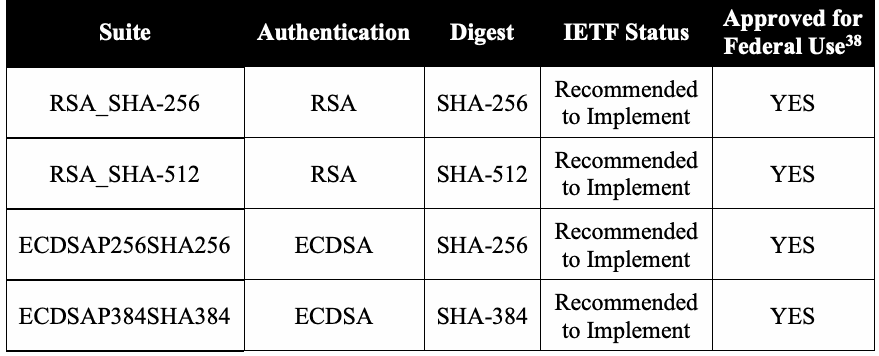
| スイート | 認証 | ダイジェスト | IETFの状態 | 連邦政府での |
| 使用承認38 | ||||
| RSA_SHA-256 | RSA | SHA-256 | 実装を推奨 | YES |
| RSA_SHA-512 | RSA | SHA-512 | 実装を推奨 | YES |
| ECDSAP256SHA256 | ECDSA | SHA-256 | 実装を推奨 | YES |
| ECDSAP384SHA384 | ECDSA | SHA-384 | 実装を推奨 | YES |
Table 8-2: Recommended Message Authentication Algorithms
表8-2：推奨されるメッセージ認証アルゴリズム
未レビュー訳| Suite | IETF status | Approved for |
| Federal Use | ||
| HMAC_SHA1 | Mandatory | YES |
| HMAC_SHA-224 | Optional | YES |
| HMAC_SHA-256 | Mandatory | YES |
| HMAC_SHA-384 | Optional | YES |
| HMAC_SHA-512 | Optional | YES |
| GSS_TSIG39 | Optional | YES |
原本PDFの抜粋画像
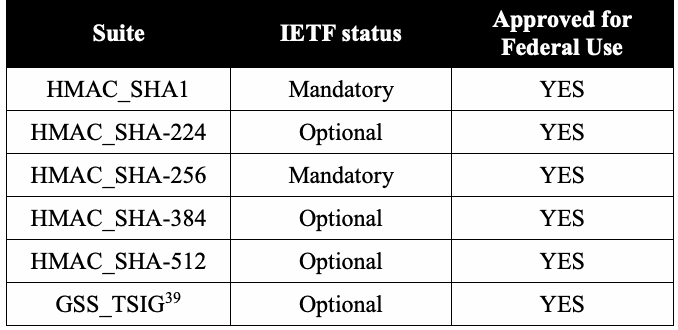
| スイート | IETFの状態 | 連邦政府での |
| 使用承認 | ||
| HMAC_SHA1 | 必須 | YES |
| HMAC_SHA-224 | 任意 | YES |
| HMAC_SHA-256 | 必須 | YES |
| HMAC_SHA-384 | 任意 | YES |
| HMAC_SHA-512 | 任意 | YES |
| GSS_TSIG39 | 任意 | YES |
It should be noted that HMAC-MD5.SIG-ALG.REG.INT is a suite that is widely implemented and often set as the default choice. However, it shall not be used for federal implementations. Since TSIG message authentication is used between servers where there is an existing trust relationship, the administrators must agree on the method used and the secret (random) string used with the TSIG method.
HMAC-MD5.SIG-ALG.REG.INTは広く実装され、既定の選択肢に設定されることが多いスイートである。しかし、連邦政府の実装では使用してはならない。TSIGメッセージ認証は既存の信頼関係があるサーバー間で使われるため、管理者は使用する方式とTSIG方式で用いる秘密（ランダム）文字列に合意しなければならない。
未レビュー訳Due to message size constraints (See Section 8.1.4 below), large RSA keys may result in DNS transaction failures that are often interpreted by clients as DNS failures. It is recommended that, instead, a digital signature algorithm that has the same security strength, but with smaller sized keys be used, such as ECDSA [RFC 6605]. It is recommended that DNS administrators plan to migrate to ECDSA for zone signing by October 1, 2015, or plan to migrate earlier as soon as it becomes available in DNS software components.
メッセージサイズの制約（下記8.1.4節参照）により、大きなRSA鍵はDNSトランザクションの失敗を招き、クライアントにはDNS障害と解釈される場合がある。そのため、ECDSA [RFC 6605] など、同じセキュリティ強度で鍵サイズが小さいデジタル署名アルゴリズムを使用することが推奨される。DNS管理者は、2015年10月1日までにECDSAによるゾーン署名に移行する計画を立てるか、DNSソフトウェアコンポーネントで利用可能になり次第、より早く移行することが推奨される。
8.1.4 Special Considerations for Key Sizes
8.1.4 鍵長に関する特別な考慮事項
未レビュー訳There are some special considerations needed when choosing the size of the RSA DNSSEC signing keys. Early deployments have shown that large RSA keys can result in protocol issues, such as response messages that are too large to fit in a standard UDP packet. DNSSEC requires the use of larger DNS packet sizes up to 4 KB, but practical limits are around 1500 bytes or less.
DNSSEC署名用RSA鍵長を選択する際には特別な考慮事項がある。初期導入では、大きなRSA鍵により、標準UDPパケットに収まらない応答メッセージなどのプロトコル上の問題が起こることが示されている。DNSSECは最大4 KBの大きなDNSパケットを必要とするが、実用上の上限は約1500バイト以下である。
未レビュー訳It is recommended that DNS administrators maintain 1024-bit RSA/SHA-1 and/or RSA/SHA-256 ZSK’s until October 1, 2015, or until it is proven that the majority of routers, caches and other network middle boxes can handle packet sizes over 1500 bytes (if before 2015). However, 1024-bit RSA keys are allowed until the 2015 date to accommodate older versions of DNS clients that may be older network components that cannot handle UDP packets with sizes over 1500 bytes. This is an exception to the security guidance provided in [SP 800-131A]. However, this exception on RSA key sizes does not apply to Key Signing Keys. KSK’s shall follow the guidance set in Part 1 of this Recommendation [SP 800-57 Part 1].
DNS管理者は、2015年10月1日まで、または（2015年より前に）ルーター、キャッシュ、その他のネットワーク中継機器の大半が1500バイトを超えるパケットを処理できると実証されるまで、1024ビットRSA/SHA-1および／またはRSA/SHA-256のZSKを維持することが推奨される。ただし、1500バイトを超えるUDPパケットを処理できない古いDNSクライアントやネットワーク機器に対応するため、1024ビットRSA鍵は2015年の日付まで許容される。これは[SP 800-131A]のセキュリティガイダンスに対する例外である。ただし、このRSA鍵長の例外は鍵署名鍵（KSK）には適用されない。KSKは本勧告第1部 [SP 800-57 Part 1] のガイダンスに従わなければならない。
未レビュー訳It is recommended that zone administrators migrate DNSSEC zone signing algorithms to ECDSA by 2015 or when support for ECDSA appears in DNSSEC components, whichever is sooner.
ゾーン管理者は、2015年まで、またはDNSSECコンポーネントでECDSAのサポートが現れた時点のいずれか早い方までに、DNSSECゾーン署名アルゴリズムをECDSAへ移行することが推奨される。
未レビュー訳To minimize the risk when using 1024-bit RSA ZSK’s with DNSSEC, ZSK’s should be changed more frequently: every one to three months, with a signature validity period of five to seven days. The ZSK-rollover sequence discussed in [SP 800-81] is recommended to maintain a valid chain of authentication in DNS data.
DNSSECで1024ビットRSA ZSKを使用するリスクを抑えるため、ZSKをより頻繁に（1～3か月ごとに）変更し、署名有効期間を5～7日にすべきである。DNSデータの有効な認証チェーンを維持するため、[SP 800-81]で説明されているZSKロールオーバー手順が推奨される。
8.1.5 Special Considerations for NSEC3
8.1.5 NSEC3に関する特別な考慮事項
There is a special variant to DNSSEC that minimizes the risk of information leakage and is known as the Hashed Next Secure (NSEC3) RR [RFC 5155]. In DNSSEC, a client can map the contents of the zone by sending a series of queries for the Next Secure (NSEC) RR type found in error messages. These NSEC RRs provide signed proof that the queried name did not exist, but also provides two names that do exist in the zone as part of that proof. NSEC3 attempts to minimize this information leakage of zone names by using the hash values of the two existing names (currently using SHA-1 only). However, this requires the server and client to be able to perform multiple SHA-1 hash calculations during runtime; note that this method could be used to mount a Denial of Service attack against the server if multiple requests are made. NSEC3 was designed to solve a specific class of information leakage that could lead to a complete mapping of network resources in a DNS zone. NSEC3 deployment risks are often greater than the usefulness provided by using NSEC3, unless there is an overriding need to deploy NSEC3 beyond zone content protection (examples include protecting personally identifying information that may be contained in the DNS). However, it is a good idea to use NSEC3-aware client software, because a client may access a zone that uses NSEC3 RRs with DNSSEC. System installers and administrators should develop a transition plan to migrate from SHA-1 to SHA-256, and to do so when SHA-256 becomes available in major software distributions. This would involve deploying both SHA-1 and SHA-256-based NSEC3 RRs until it is observed that SHA-256-aware implementations have become widely used in the Internet community.
情報漏えいリスクを低減するDNSSECの特殊な変種として、ハッシュ化Next Secure（NSEC3）RR [RFC 5155] がある。DNSSECでは、クライアントはエラーメッセージ内にあるNext Secure（NSEC）RR型を連続して問い合わせ、ゾーン内容を把握できる。これらのNSEC RRは、問い合わせた名前が存在しないことを示す署名付き証明を提供するが、その証明の一部としてゾーン内に存在する2つの名前も示す。NSEC3は、存在する2つの名前のハッシュ値（現在はSHA-1のみ）を使って、ゾーン名の情報漏えいを抑えようとする。ただし、実行時にサーバーとクライアントが複数回SHA-1ハッシュ計算を行う必要があり、多数の要求を送ればサーバーへのサービス拒否攻撃に利用される可能性がある。NSEC3は、DNSゾーン内のネットワークリソースを完全に列挙できる情報漏えいの特定の種類を解決するために設計された。DNS内に含まれる個人識別情報の保護など、ゾーン内容保護を超えてNSEC3を導入する強い必要性がない限り、NSEC3導入のリスクはその利点を上回ることが多い。ただし、クライアントがDNSSECでNSEC3 RRを使うゾーンにアクセスする場合があるため、NSEC3対応クライアントソフトウェアを使うことは望ましい。システム設置担当者と管理者は、SHA-1からSHA-256へ移行する計画を策定し、SHA-256が主要ソフトウェア配布で利用可能になった時点で移行すべきである。SHA-256対応実装がインターネットコミュニティで広く使われるようになったと確認できるまで、SHA-1ベースとSHA-256ベースの両方のNSEC3 RRを導入することになる。
未レビュー訳8.2 Security/Compliance Issues
8.2 セキュリティ／コンプライアンス上の問題
1.Even though 1024-bit RSA keys are allowed until October 1, 2015 to accommodate older versions of DNS clients, 2048-bit RSA keys are strongly recommended for use.
1.古いDNSクライアントに対応するため1024ビットRSA鍵は2015年10月1日まで許容されるが、2048ビットRSA鍵の使用を強く推奨する。
未レビュー訳2.Although not strictly necessary to the specification, a Key Signing Key should be used to maintain security chains from the parent zone (e.g., .gov) to the zone (e.g., nist.gov). This KSK should be securely transmitted to the delegating parent according to the policy and procedure established by the parent zone.
2.仕様上必須ではないが、親ゾーン（例：.gov）からゾーン（例：nist.gov）へのセキュリティチェーンを維持するため、鍵署名鍵を使用すべきである。このKSKは、親ゾーンが定めるポリシーおよび手順に従って委任元の親に安全に送信すべきである。
TSIG-shared secret strings should be random for use in providing integrity protection for DNS message transactions, and generated at appropriate security strengths. The system installers using the TSIG secret string shall agree on which TSIG algorithm to use.
TSIG共有秘密文字列は、DNSメッセージトランザクションの完全性保護に使うためランダムであり、適切なセキュリティ強度で生成すべきである。TSIG秘密文字列を使用するシステム設置担当者は、使用するTSIGアルゴリズムに合意しなければならない。
未レビュー訳8.3 Procurement Guidance
8.3 調達に関するガイダンス
The following recommendations are for any individual that makes a purchasing decision for acquiring DNSSEC-capable components for their network infrastructure.
以下の推奨事項は、ネットワーク基盤用のDNSSEC対応コンポーネントを取得する調達担当者を対象とする。
1.Ensure that DNSSEC utilities use FIPS140-2 validated cryptographic modules [FIPS 140-2].
1.DNSSECユーティリティがFIPS 140-2認証済み暗号モジュール [FIPS 140-2] を使用することを確認する。
2.DNS server software should generate and serve NSEC3 RRs, if required by zone policy.
2.ゾーンポリシーが必要とする場合、DNSサーバーソフトウェアはNSEC3 RRを生成し提供すべきである。
未レビュー訳3.Ensure that DNS server software use an approved random bit generator to generate random strings for use with TSIG message authentication using HMAC that is consistent with the hash-algorithm security-strength recommendations in Part 1.
3.DNSサーバーソフトウェアが、第1部のハッシュアルゴリズムのセキュリティ強度に関する推奨事項と整合する、HMACを用いるTSIGメッセージ認証用のランダム文字列を生成するために、承認済み乱数ビット生成器を使用することを確認する。
4.Ensure that DNSSEC-enabled versions of network applications are purchased as required by security policy, if available.
4.セキュリティポリシー上必要であり、利用可能な場合、DNSSEC対応版のネットワークアプリケーションを調達する。
5.Ensure that DNSSEC software implementing SHA-256 is included in procurements when available.
5.利用可能になった時点で、SHA-256を実装するDNSSECソフトウェアを調達に含めることを確認する。
未レビュー訳8.4 Recommendations for System Installers
8.4 システム設置担当者への推奨事項
The system installer is the individual(s) that installs a DNS component and performs the initial configuration of the component.
システム設置担当者とは、DNSコンポーネントを設置し、その初期構成を行う者である。
未レビュー訳8.4.1 Recommendations for System Installers (Authoritative Servers)
8.4.1 システム設置担当者への推奨事項（権威サーバー）
1.Authoritative server installers shall configure a DNS authoritiative server to serve DNSSEC-signed zone data.
1.権威サーバーの設置担当者は、DNSSEC署名済みゾーンデータを提供するようDNS権威サーバーを構成しなければならない。
2.Authoritiative server installers shall use an approved random bit generator (as discussed in [SP 800-90A]) to create and configure an initial, random secret string for use with TSIG in transactions.
2.権威サーバーの設置担当者は、トランザクションでTSIGに使用する初期ランダム秘密文字列を作成・構成するため、承認済み乱数ビット生成器（[SP 800-90A]で説明）を使用しなければならない。
3.Authoritative servers shall be configured to generate and sign zone data with a key pair that is consistent with the key size recommendations for digital signatures as specified in Part 1.
3.権威サーバーは、第1部で規定するデジタル署名用鍵長推奨に合致した鍵ペアでゾーンデータを生成し署名するよう構成しなければならない。
4.Authoritative servers shall be configured to generate and sign the key set with a key pair that is consistent with the key sizes recommended for digital signatures, as specified in Part 1.
4.権威サーバーは、第1部で規定するデジタル署名用鍵長推奨に合致した鍵ペアで鍵セットを生成し署名するよう構成しなければならない。
5.Authoritative servers shall be configured to generate and use a random secret string for zone transfer-message authentication (via TSIG) between primary and secondary servers. The security strength of the random bit generator process shall support the security strength required by the servers.
5.権威サーバーは、プライマリサーバーとセカンダリサーバー間のゾーン転送メッセージ認証（TSIG経由）用に、ランダム秘密文字列を生成して使用するよう構成しなければならない。乱数ビット生成処理のセキュリティ強度は、サーバーに必要なセキュリティ強度を支えなければならない。
6.Authoritative servers shall be configured to generate and use a separate shared secret
6.権威サーバーは、別個の共有秘密
未レビュー訳string for dynamic update-message authentication (via TSIG). The security strength of the random bit generator process shall support the security strength required by the servers.
文字列を生成し、動的更新メッセージ認証（TSIG経由）に使用するよう構成しなければならない。乱数ビット生成処理のセキュリティ強度は、サーバーに必要なセキュリティ強度を支えなければならない。
未レビュー訳8.4.2 Recommendations for System Installers (Caching Recursive Servers)
8.4.2 システム設置担当者への推奨事項（キャッシュ再帰サーバー）
未レビュー訳1.Recursive caching server installers shall configure DNS servers to be DNSSEC-aware.
1.再帰キャッシュサーバーの設置担当者は、DNSサーバーをDNSSEC対応に構成しなければならない。
未レビュー訳2.Recursive caching server installers shall install at least one public key used for DNSSEC validation. The key(s) shall be kept up-to-date to insure successful validations.
2.再帰キャッシュサーバーの設置担当者は、DNSSEC検証用公開鍵を少なくとも1つインストールしなければならない。検証を正常に行えるよう、鍵を最新の状態に保たなければならない。
8.4.3 Recommendations for System Installers (Client Systems)
8.4.3 システム設置担当者への推奨事項（クライアントシステム）
未レビュー訳1.Client systems shall be configured to send DNS queries to a DNSSEC-enabled caching recursive server.
1.クライアントシステムは、DNSSEC対応キャッシュ再帰サーバーにDNS問い合わせを送信するよう構成しなければならない。
2.Client systems should be configured to use DNSSEC-enabled applications, if they are available.
2.利用可能な場合、クライアントシステムはDNSSEC対応アプリケーションを使用するよう構成すべきである。
未レビュー訳8.5 Recommendations for System Administrators
8.5 システム管理者への推奨事項
The System Administrator is the individual who runs the DNS application on a day-to-day basis and interacts with the end user.
システム管理者とは、DNSアプリケーションを日常的に運用し、エンドユーザーとやり取りする者である。
未レビュー訳8.5.1 Recommendations for System Administrators (Authoritative Server)
8.5.1 システム管理者への推奨事項（権威サーバー）
1.The organization security policy regarding the Authoritative servers shall be enforced.
1.権威サーバーに関する組織のセキュリティポリシーを徹底しなければならない。
未レビュー訳2.Cryptographic keys shall be protected as specified in Part 1.
2.暗号鍵は第1部に規定されたとおり保護しなければならない。
3.System administrators shall replace zone data-signature Resource Records before the end of their validity period.
3.システム管理者は、ゾーンデータ署名リソースレコードを有効期間の終了前に交換しなければならない。
4.Zone data-signature Resource Records shall be replaced if the private key associated with the public key is compromised, when the administrator of the DNS zone leaves the organization, and for other reasons listed in the organization’s security policy.
4.公開鍵に対応する秘密鍵が侵害された場合、DNSゾーン管理者が組織を離れた場合、および組織のセキュリティポリシーに挙げられたその他の理由がある場合、ゾーンデータ署名リソースレコードを交換しなければならない。
未レビュー訳5.Administrators shall utilize methods for handling and protecting the private key (e.g., using a smart card that requires appropriate user authentication).
5.管理者は、秘密鍵を取り扱い保護する方法（適切なユーザー認証を要するスマートカードの使用など）を利用しなければならない。
6.Administrators shall follow the key lifecycle procedures found in NIST Special Publication 800-81, Secure Domain Name System (DNS) Deployment Guide [SP 800-81].
6.管理者は、NIST Special Publication 800-81「Secure Domain Name System (DNS) Deployment Guide」[SP 800-81]に記載された鍵ライフサイクル手順に従わなければならない。
未レビュー訳8.5.2 Recommendations for System Administrators (Caching Recursive Servers)
8.5.2 システム管理者への推奨事項（キャッシュ再帰サーバー）
1.Server administrators shall ensure that there is an organization security policy for using the Caching Recursive Server.
1.サーバー管理者は、キャッシュ再帰サーバー使用に関する組織のセキュリティポリシーがあることを確認しなければならない。
2.Cryptographic keys shall be adequately protected (see Part 1).
2.暗号鍵は適切に保護しなければならない（第1部参照）。
3.The trust anchors for DNS validating caches should be kept up to date.
3.DNS検証キャッシュのトラストアンカーは最新の状態に保つべきである。
未レビュー訳8.5.3 Recommendations for System Administrators (Client Systems)
8.5.3 システム管理者への推奨事項（クライアントシステム）
未レビュー訳1.Server administrators shall ensure that there is an organization security policy for using the client systems.
1.サーバー管理者は、クライアントシステム使用に関する組織のセキュリティポリシーがあることを確認しなければならない。
2.Server administrators shall ensure that users are properly trained.
2.サーバー管理者は、ユーザーが適切な訓練を受けていることを確認しなければならない。
未レビュー訳8.6 Recommendations for End Users
8.6 エンドユーザーへの推奨事項
An end user is the individual using a client to access the system.
エンドユーザーとは、クライアントを使用してシステムにアクセスする個人である。
1.End users shall operate their client systems as instructed by their organization and system administrator.
1.エンドユーザーは、組織およびシステム管理者の指示どおりにクライアントシステムを運用しなければならない。
9 Encrypted File Systems (EFS)
9 暗号化ファイルシステム（EFS）
9.1 Description
9.1 説明
The encryption of data files and complete disk volumes presents a somewhat different set of key management issues than those for encryption of network-communicated data. While network communications security focuses on the privacy and integrity of information in transit, storage (e.g., file) security focuses on the privacy and integrity of persistent data and the secure sharing of this data. The key management guidance surrounding file and volume encryption are sufficiently similar to consolidate into a single section.
データファイルやディスクボリューム全体の暗号化には、ネットワーク通信データの暗号化とは多少異なる鍵管理上の問題がある。ネットワーク通信のセキュリティは転送中の情報の機密性と完全性に焦点を当てる一方、ストレージ（ファイルなど）のセキュリティは永続データの機密性と完全性、および安全な共有に焦点を当てる。ファイル暗号化とボリューム暗号化に関する鍵管理ガイダンスは十分に似ているため、単一の節にまとめる。
Unlike the previous sections, where the protocols and/or standards have been thoroughly studied by the network security community, the commercial solutions for file encryption utilize a wide variety of security schemes and methods for storing keys. Due to this range of solutions, this section will not be comprehensive, but will cover a variety of methods used for file encryption.
前節までで扱ったプロトコルや規格はネットワークセキュリティコミュニティで十分に研究されているが、ファイル暗号化の商用ソリューションは多様なセキュリティ方式と鍵保存方法を採用している。ソリューションの幅が広いため、本節は網羅的ではなく、ファイル暗号化で用いられる各種方式を扱う。
The most important questions that designers of a file encryption system must answer are: How are keys used in the system, and what protection are they afforded? Where are the keys stored on the system? Does the method scale upward for numerous user communities (without requiring
ファイル暗号化システムの設計者が答えるべき重要な問いは次のとおりである。 システム内で鍵はどのように使われ、どのような保護を受けるか。 鍵はシステム内のどこに保存されるか。 非現実的な数の鍵を保存する必要なしに、多数のユーザーコミュニティへ規模拡大できるか。
未レビュー訳an impractical number of keys to be stored)?
（現実的でない数の鍵を保存する必要が生じないか。）
未レビュー訳9.1.1 Number of Keys Required
9.1.1 必要な鍵の数
For an Encrypted File System, keys are used to encrypt a file or group of files. The system can either encrypt each file with a distinct symmetric key or encrypt a set of files using the same symmetric key. In the first case, it is very easy to provide access to a sharing user, for example, by simply giving the key to that user. In this way, only that single file can be accessed by the sharing user without providing access to any of the other files in the system. The drawback with this first method is that if many files are encrypted, the model can quickly become unwieldy, since a key is required for each encrypted file and must be provided to the sharing user.
暗号化ファイルシステムでは、ファイルまたはファイル群の暗号化に鍵を用いる。各ファイルを別個の共通鍵で暗号化する方法と、一連のファイルを同じ共通鍵で暗号化する方法がある。前者では、例えば鍵を共有ユーザーに渡すだけで、そのユーザーにアクセス権を与えられる。これにより、システム内の他のファイルにはアクセスさせず、共有する単一ファイルだけにアクセスさせられる。この方法の欠点は、多数のファイルを暗号化すると、暗号化ファイルごとに鍵が必要となり共有ユーザーへ渡さなければならないため、すぐに扱いにくくなることである。
In the second case, many fewer keys are required, which eases the key distribution process. However, when a sharing user requires access to a single file, giving access to that user is more problematic. By simply sending a key to the sharing user, access would be provided to all of the owner’s40 files that were encrypted using that key, rather than to the single file.
後者では必要な鍵がはるかに少なくなり、鍵配布が容易になる。しかし共有ユーザーに単一ファイルへのアクセスを与える場合、より問題が複雑になる。鍵を共有ユーザーに送るだけでは、単一ファイルではなく、その鍵で暗号化された所有者の40全ファイルにアクセスできてしまう。
未レビュー訳However, there are several cryptographic management actions that could be used to grant access to an individual file in the second case above. One option to limit access in this second system is for the owner or system to decrypt the file and re-encrypt it using a new key for transmission to the sharing user (e.g., using network security mechanisms and session keys). In the increasingly rare case of both users sharing a common file server, the decrypted and re-encrypted file would be placed in the sharing user’s file space. This would require significant processing overhead and a key management protocol for exchanges between the owner and the sharing user, or between the file system management process and the sharing user. This process requires proper protection for these new keys at the same security strength as the original key protecting that file.
ただし、後者の方式でも個別ファイルへのアクセスを許可する暗号管理上の方法はいくつかある。アクセスを制限する方法の1つは、所有者またはシステムがファイルを復号し、共有ユーザーへ送るため新しい鍵で再暗号化することである（ネットワークセキュリティ機構やセッション鍵を使用するなど）。両ユーザーが共通ファイルサーバーを共有するという、近年ではまれなケースでは、復号・再暗号化したファイルを共有ユーザーのファイル領域に置く。この方法では大きな処理負荷が必要となり、所有者と共有ユーザー間、またはファイルシステム管理プロセスと共有ユーザー間の鍵管理プロトコルも必要である。この処理では、新しい鍵を、そのファイルを保護していた元の鍵と同じセキュリティ強度で適切に保護する必要がある。
未レビュー訳Another option is for the sharing user to be provided with the encrypted file and the owner’s decryption key that could be used to decrypt all of the owner’s files, including the one provided to the sharing user. System overhead is reduced, and it may be possible to protect the key from third-party administrators, but it is unlikely that the owner would agree that the requester should be granted access to all files protected under the common key.
別の方法では、共有ユーザーに暗号化ファイルと、共有ユーザーに渡すファイルを含む所有者の全ファイルを復号できる所有者の復号鍵を提供する。システム負荷を軽減でき、第三者の管理者から鍵を保護できる可能性もあるが、共有鍵で保護された全ファイルへのアクセスを要求者に認めることに所有者が同意する可能性は低い。
未レビュー訳Having provided more extreme examples in the previous two cases, the following is a more common approach that is used. In this case, each user on the system has an asymmetric key pair. Each owner’s file is encrypted under a different randomly generated symmetric File Encrypting Key (FEK). The FEK is then encrypted using the public key of the owner and stored with the encrypted file. When the owner of a file wants to share it with another user, the owner decrypts the encrypted FEK (using her private key) and then encrypts the FEK using the sharing user’s public key. The encrypted file and re-encrypted FEK can then be provided to the requester. This system has several advantages. First, the owner needs to manage only a single asymmetric key pair. Second, it permits easier file sharing between users. Third, it is very efficient because files do not have to be re-encrypted in order to be shared. Finally, the system need not manage any keys separately, since the asymmetric keys are managed by the owners, and the FEKs are stored in encrypted form with the files.
前述の2つの場合でより極端な例を示したが、次はより一般的な方法である。システム内の各ユーザーは非対称鍵ペアを持つ。所有者の各ファイルは、それぞれ異なるランダム生成の共通鍵であるファイル暗号化鍵（FEK）で暗号化する。FEKは所有者の公開鍵で暗号化し、暗号化ファイルとともに保存する。所有者がファイルを他のユーザーと共有する場合、所有者は自身の秘密鍵で暗号化済みFEKを復号し、共有ユーザーの公開鍵でFEKを暗号化する。暗号化ファイルと再暗号化済みFEKは、その後要求者に渡すことができる。この方式には複数の利点がある。第一に、所有者が管理する必要のある非対称鍵ペアは1組だけである。第二に、ユーザー間のファイル共有が容易になる。第三に、共有のためにファイルを再暗号化する必要がなく、非常に効率的である。最後に、非対称鍵は所有者が管理し、FEKは暗号化形式でファイルとともに保存するため、システムが鍵を別個に管理する必要がない。
未レビュー訳The owner can, of course, use different keys to encrypt different files or sets of files. The fewer files that the owner chooses to encrypt with a given key results in more keys and associations (e.g., associations of keys with file identities, file groups, individual identities, or access groups) that would need to be maintained.
もちろん所有者は、異なるファイルまたはファイル群の暗号化に別々の鍵を使うこともできる。1つの鍵で暗号化するファイル数を減らすほど、維持すべき鍵および関連付け（鍵とファイル識別子、ファイル群、個人IDまたはアクセスグループとの関連付け）が増える。
未レビュー訳Another important concept within an encrypted file system that must be considered is how data recovery is implemented. If a user loses his keys, without a data recovery capability within the system, the user’s data is permanently lost. As such, it is vital that some form of data recovery, such as master administrator passwords, be included.41 This requires a file encryption system that allows multiple passwords to decrypt the file, one of which is provided to the user, and the second is provided to the administrator, in the form of a master administrator password. Another possibility is that the administrator has a method of storing the user’s passwords for use only when the user has lost or forgotten their password.
暗号化ファイルシステムで考慮すべきもう1つの重要事項は、データ復旧の実装方法である。ユーザーが鍵を失い、システムにデータ復旧機能がなければ、ユーザーのデータは永久に失われる。そのため、マスター管理者パスワードなどのデータ復旧手段を含めることが不可欠である。41 これには、ファイルを復号する複数のパスワード（ユーザーに渡すものと、マスター管理者パスワードとして管理者に渡すもの）を許容するファイル暗号化システムが必要である。別の方法として、ユーザーがパスワードを紛失または忘れた場合に限り使用するため、管理者がユーザーパスワードを保管することも考えられる。
未レビュー訳When the scope of the system expands from a pair of individuals to a large network or internet-work, the factors associated with the management of keys can become unwieldy. Key management challenges associated with large systems include the following:
システムの対象範囲が個人2人から大規模ネットワークまたはインターネットワークへ広がると、鍵管理要因が扱いにくくなる。大規模システムの鍵管理課題は次のとおりである。
未レビュー訳 Maintaining context in the face of global data placement (many owners and large quantities of data). Very large numbers of keys to manage and distribute. If numerous keys are stored in a single location within an EFS, that site provides an attractive target for an adversary a single point of trust for a large domain. Difficulty in accounting for revoked users (individuals who have left an organization, whose subscriptions have expired, or otherwise should not be authorized to access the file any longer). Reassignment of ownership of protected data to another individual or organization. Recovery of data in the event of lost keys (e.g., the case of archived encrypted data that is encrypted and stored by an individual who has left the organization and cannot be found). A sharing user who has been provided the keys to a number of the owner’s files, then provides the keys, and the owner’s data, to additional users.
グローバルなデータ配置（多数の所有者と大量のデータ）におけるコンテキストの維持。 管理・配布すべき膨大な数の鍵。 多数の鍵をEFS内の単一場所に保存すると、その場所が攻撃者にとって魅力的な標的、すなわち広い領域の単一の信頼点となる。 失効ユーザー（組織を離れた者、契約期間が終了した者など、ファイルへのアクセス権を失った者）の管理の困難さ。 保護されたデータの所有権を他の個人または組織へ再割当てすること。 鍵紛失時のデータ復旧（組織を離れて所在不明となった個人が暗号化して保管したアーカイブデータなど）。 所有者の複数ファイルの鍵を渡された共有ユーザーが、その鍵と所有者のデータをさらに別のユーザーに渡すこと。
未レビュー訳9.1.2 Access to Symmetric Keys used in File Encryption
9.1.2 ファイル暗号化に用いる共通鍵へのアクセス
未レビュー訳After the decision has been made about the number of files to be protected with a single symmetric key, key management questions can be considered. How does the File Encryption System generate the encryption keys? How will the keys be stored and protected? This section identifies common ways of answering these questions, as well as discussing their strengths and weaknesses. As technology advances, additional techniques will be developed, and as such, the list below is not complete nor should be considered mandatory.
単一の共通鍵で保護するファイル数を決定した後、鍵管理上の問いを検討できる。ファイル暗号化システムはどのように暗号鍵を生成するか。鍵をどのように保存し保護するか。本節では、これらの問いに答える一般的な方法と、その長所・短所を説明する。技術の進歩に伴い新しい手法が開発されるため、以下の一覧は完全ではなく、必須とみなすべきでもない。
Consider common answers to the important questions above. First, how do file encryption systems generate symmetric keys? A simple method is to derive the key from a password as described in [SP 800-132]. In this case, the security of the system depends on the randomness of the password; normally, passwords do not contain enough randomness to be used for generating keys (i.e., they can be guessed relatively easily). A standard dictionary attack can often recover weak passwords, so a strong password is vital for the security of this type of system. It is preferable to utilize a good random bit generator within the system to generate keys. Approved random bit generators can be found in [SP 800-90A], [SP 800-90B] and [SP 800-90C].
前述の重要な問いへの一般的な回答を考える。第一に、ファイル暗号化システムはどのように共通鍵を生成するか。単純な方法は[SP 800-132]に記載のとおりパスワードから鍵を導出することである。この場合、システムの安全性はパスワードのランダム性に依存する。通常、パスワードには鍵生成に十分なランダム性がなく（比較的容易に推測できる）、標準的な辞書攻撃で弱いパスワードが回復されることもある。そのため、この種のシステムの安全性には強力なパスワードが不可欠である。システム内で良質な乱数ビット生成器を使用して鍵を生成することが望ましい。承認済み乱数ビット生成器は[SP 800-90A]、[SP 800-90B]、[SP 800-90C]に記載されている。
Next, consider the question of how to protect the keys. There is a great deal of effort underway by the Trusted Computing Group (TCG) to develop secure storage of keys on computers. As this effort continues to mature, the Trusted Platform Module chip, through its key cache management, offers another format for protecting keys used in EFS.
次に、鍵の保護方法を考える。Trusted Computing Group（TCG）はコンピューター上の鍵を安全に保管するため、広範な開発を進めている。この取り組みが成熟するにつれて、鍵キャッシュ管理を通じたTrusted Platform Moduleチップが、EFSで使用する鍵を保護する別の形式を提供する。
Then, consider where these keys will be stored. If keys need to be stored, they could simply be stored on the computer itself or on a hardware token. Alternatively, the key could be split into two (or more) key components with, for example, one component stored on a hardware token and the other key component stored on the computer itself. If a split key is employed, the method used to combine the key components is important; performing an XOR operation on equal length key components is better than simply concatenating the components. Common hardware tokens include smartcards. The advantage of using a hardware token is that if the user stores the hardware token away from the computer, and the key is split between the token and the computer, an adversary needs to recover both pieces of hardware to recover the key. Additional security may be provided by encrypting the key splits, perhaps by using a password.
次に、これらの鍵をどこに保存するかを考える。鍵を保存する必要がある場合、コンピューター本体またはハードウェアトークンに保存できる。あるいは、鍵を2つ以上の鍵要素に分割し、例えば一方をハードウェアトークンに、他方をコンピューター本体に保存できる。鍵を分割する場合、鍵要素の結合方法が重要である。同じ長さの鍵要素にXOR演算を適用する方が、単純に連結するより望ましい。一般的なハードウェアトークンにはスマートカードがある。ハードウェアトークンをコンピューターから離して保管し、鍵をトークンとコンピューターに分割すれば、攻撃者は鍵を復元するために両方のハードウェアを入手しなければならない。鍵の分割要素をパスワードなどで暗号化すれば、さらに安全性を高められる。
未レビュー訳There are many permutations of answers to the questions above. Four examples of how these questions can be answered will be considered, along with the pros and cons of each system. It is important to consider the specific environment in which the File Encryption System will be used, as that will usually point to a specific type of system that is preferable for that case.
上記の問いにはさまざまな回答の組み合わせがある。ここでは、各システムの長所と短所とともに、4つの回答例を検討する。ファイル暗号化システムを使用する具体的な環境を考慮することが重要であり、通常、その環境から適切なシステムの種類が定まる。
The first example that will be considered is a file encryption system that uses a single symmetric key to encrypt every file on the system. This single key is generated using a method in [SP 800-132] from a user’s password.
第1の例は、システム上のすべてのファイルを単一の共通鍵で暗号化するファイル暗号化システムである。この単一鍵は、ユーザーパスワードから[SP 800-132]の方式を用いて生成する。
未レビュー訳The second example is a system that utilizes per-file encryption keys, which are stored on the hard disk, encrypted by a key encryption key. The key encryption key (which is also used to decrypt each file encryption key) is securely stored on the hard drive (e.g., using the Trusted Platform Module (TPM) [TPM]).
第2の例は、ファイルごとの暗号化鍵を使用し、それらを鍵暗号化鍵で暗号化してハードディスクに保存するシステムである。鍵暗号化鍵（各ファイル暗号化鍵の復号にも使う）は、Trusted Platform Module（TPM）[TPM]を使うなどしてハードドライブ上に安全に保管する。
The third example is a system that utilizes per-file encryption keys that are split into two key components that will be XORed to recreate the key, with one key component stored on a hardware token and the other component derived from a password (e.g., using a method in [SP 800-132] to derive the key).
第3の例は、ファイルごとの暗号化鍵を2つの鍵要素に分割し、XORで鍵を再構成するシステムである。一方の鍵要素をハードウェアトークンに保存し、もう一方をパスワードから導出する（例：[SP 800-132]の方式による鍵導出）。
The fourth example uses per-file encryption keys, which are encrypted under the file owner’s asymmetric private key as previously described. This system is common in current file-encryption packages, while the previous three are extreme to show the pros and cons of the systems more clearly.
第4の例では、前述のように、ファイルごとの暗号化鍵をファイル所有者の非対称秘密鍵で暗号化する。この方式は現在のファイル暗号化パッケージで一般的である。前の3例は、各方式の長所と短所をより明確に示すため、極端な例を挙げた。
Table 9-1: Summary of File Encryption Examples
表9-1：ファイル暗号化の例の概要
未レビュー訳| Method | Pros | Cons |
| Example 1: SP 800-132 | - Least expensive solution. - Utilizing a strong password can result in reasonable security. | - Less secure because the security is dependent only on the strength of the password. |
| Example 2: Key Encryption Key | - Secure storage directly in the computer.- Secure from external software attack and physical threat. | - Relatively new technology. - Keys are stored on the same computer as the file. |
| Example 3: Hardware Token | - Splits key.- Requires two hardware pieces to decrypt. - Highly secure if implemented correctly. - If the files or token are lost, the files will stay secure. | - More expensive. - If the token is lost, the files cannot be decrypted. |
| Example 4: Asymmetric user owned Key Encryption Key | - No plaintext keys stored in the computer. - Efficient file sharing. - Highly secure if a token is used. - Compromise of a user’s private key compromises only the user’s files. | - Requires the user to manage his/her own key pair. - Requires either a user password or a user token. |
原本PDFの抜粋画像
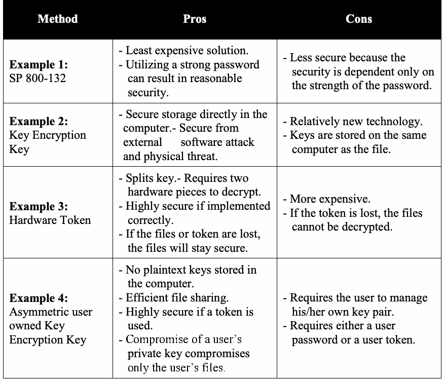
| 方式 | 長所 | 短所 |
| 例1：[SP 800-132] | - 最も低コストのソリューション。- 強力なパスワードを使えば、妥当な安全性を実現できる。 | - 安全性がパスワードの強度だけに依存するため、安全性が低い。 |
| 例2：鍵暗号化鍵 | - コンピューター内に直接、安全に保管。- 外部ソフトウェア攻撃および物理的脅威から保護。 | - 比較的新しい技術。- ファイルと同じコンピューターに鍵を保管する。 |
| 例3：ハードウェアトークン | - 鍵を分割する。- 復号に2つのハードウェアが必要。- 正しく実装すれば非常に安全。- ファイルまたはトークンを紛失してもファイルの安全性は保たれる。 | - 高コスト。- トークンを紛失するとファイルを復号できない。 |
| 例4：ユーザー所有の非対称鍵暗号化鍵 | - コンピューターに平文鍵を保存しない。- 効率的なファイル共有。- トークンを使えば非常に安全。- ユーザーの秘密鍵が侵害されても、そのユーザーのファイルだけが侵害される。 | - ユーザー自身が鍵ペアを管理する必要がある。- ユーザーパスワードまたはユーザートークンが必要。 |
9.2 Security and Compliance Issues
9.2 セキュリティおよびコンプライアンス上の問題
1.Any encrypted file system shall employ approved cryptography if it is to be used for the protection of Federal Government information.
1.連邦政府情報の保護に暗号化ファイルシステムを使用する場合、承認済み暗号方式を採用しなければならない。
未レビュー訳2.Keys derived from passwords shall use strong passwords to maximize the difficulty of an off-line exhaustion attack [SP 800-118].
2.パスワードから導出する鍵には、オフライン総当たり攻撃を困難にするため、強力なパスワードを使用しなければならない [SP 800-118]。
9.3 Recommendations for Procurement Officials
9.3 調達担当者への推奨事項
The following recommendations are for any individual(s) that makes a purchasing decision for acquiring an EFS component.
以下の推奨事項は、EFSコンポーネントの取得を決定する調達担当者を対象とする。
1.Ensure that an encrypted file system includes a data-recovery capability (e.g., master administrator password) so that the data is not lost in the event that a user forgets his password or the user is unavailable. Data recovery is vital in this type of system.
1.ユーザーがパスワードを忘れた場合や利用できない場合にデータが失われないよう、暗号化ファイルシステムにデータ復旧機能（マスター管理者パスワードなど）が含まれていることを確認する。この種のシステムではデータ復旧が不可欠である。
2.Ensure that any EFS system that derives keys from passwords has the capability of enforcing the use of strong passwords.
2.パスワードから鍵を導出するEFSシステムに、強力なパスワードの使用を強制する機能があることを確認する。
未レビュー訳3.To increase the security of encrypted file systems, the system should use a hardware token or a TPM for the storage of the keys.
3.暗号化ファイルシステムの安全性を高めるため、鍵の保管にハードウェアトークンまたはTPMを使用すべきである。
未レビュー訳9.4 Recommendations for System Installers
9.4 システム設置担当者への推奨事項
The system installer is the individual(s) that installs EFS components and performs the initial configuration of the components.
システム設置担当者とは、EFSコンポーネントを設置し、その初期構成を行う者である。
1.When an EFS system that utilizes passwords for security is installed, the installer shall require that strong passwords be enforced by the EFS. This maximizes the difficulty of an off-line exhaustion attack.
1.セキュリティにパスワードを使用するEFSを設置する際、設置担当者はEFSで強力なパスワードを必ず適用するよう要求しなければならない。これによりオフライン総当たり攻撃が困難になる。
未レビュー訳2.The system installer should ensure that the database of keys is protected by encryption to ensure the security of the system. In addition, if the key is split by the EFS system, the key component stored on a hardware token should be protected.
2.システムの安全性を確保するため、鍵データベースが暗号化によって保護されていることをシステム設置担当者は確認すべきである。また、EFSが鍵を分割する場合、ハードウェアトークンに保存する鍵要素も保護すべきである。
9.5 Recommendations for System Administrators
9.5 システム管理者への推奨事項
The system administrator is the individual that manages the EFS on a day-to-day basis and interacts with the end user.
システム管理者とは、EFSを日常的に管理し、エンドユーザーとやり取りする者である。
未レビュー訳1.The system administrator shall ensure that the organization’s security policy is enforced.
1.システム管理者は、組織のセキュリティポリシーを徹底しなければならない。
未レビュー訳2.Key recovery procedures shall be in place to ensure that users can recover their data if they lose their authentication information (password, token data, etc). A method for data recovery personnel to authenticate these users should be in place prior to the recovery of the user’s keys or files.
2.ユーザーが認証情報（パスワード、トークンデータなど）を紛失した場合にデータを復旧できるよう、鍵復旧手順を整備しなければならない。ユーザーの鍵またはファイルを復旧する前に、データ復旧担当者がユーザーを認証する方法を整備すべきである。
未レビュー訳3.If the EFS includes a master administrator password for use in data recovery by the system administrator, the system administrator shall utilize a strong password.
3.EFSに、システム管理者がデータ復旧に用いるマスター管理者パスワードが含まれる場合、システム管理者は強力なパスワードを使用しなければならない。
未レビュー訳4.System administrators shall provide training and security guidance to the end users of the system that, at a minimum, focuses on passwords, data-recovery procedures, and user configuration of their system to utilize the authentication features within the system.
4.システム管理者は、少なくともパスワード、データ復旧手順、およびシステム内の認証機能を利用するためのユーザーによるシステムの構成を扱う、訓練とセキュリティガイダンスをシステムのエンドユーザーに提供しなければならない。
9.6 Recommendations for End Users
9.6 エンドユーザーへの推奨事項
An end user is the individual that uses the EFS to secure and share their information.
エンドユーザーとは、EFSを使用して自身の情報を保護および共有する者である。
未レビュー訳1.If user-selected passwords are used within the product, end users shall utilize strong passwords to maximize the difficulty of an off-line exhaustion attack.
1.製品内でユーザーが選択したパスワードを使用する場合、エンドユーザーはオフライン総当たり攻撃の困難さを最大化するため、強力なパスワードを使用しなければならない。
2.End users shall follow guidance provided by the system administrator regarding the use of an Encrypted File System product.
2.エンドユーザーは、暗号化ファイルシステム製品の使用に関するシステム管理者のガイダンスに従わなければならない。
未レビュー訳3.End users shall inform a system administrator if they have lost their hardware token or forgotten their password.
3.エンドユーザーは、ハードウェアトークンを紛失した場合、またはパスワードを忘れた場合、システム管理者に知らせなければならない。
10 The Secure Shell (SSH)
10 Secure Shell（SSH）
10.1 Description
10.1 説明
SSH is a protocol between clients and servers for secure remote login and other secure network services over an insecure network or the Internet. The Internet Engineering Task Force (IETF) governs the SSH protocol [RFC 4251]42. The SSH protocol consists of three major components: the Transport Layer Protocol [RFC 4253], the User Authentication Protocol [RFC 4252] and the Connection Protocol [RFC 4254].
SSHは、安全でないネットワークまたはインターネットを介した安全なリモートログインその他の安全なネットワークサービスのためのクライアント・サーバープロトコルである。SSHプロトコルはInternet Engineering Task Force（IETF）が管理する [RFC 4251]。42 SSHプロトコルは、トランスポート層プロトコル [RFC 4253]、ユーザー認証プロトコル [RFC 4252]、接続プロトコル [RFC 4254] の3つの主要構成要素からなる。
未レビュー訳10.1.1 Transport Layer Protocol (SSH-TLP)
10.1.1 トランスポート層プロトコル（SSH-TLP）
The Transport Layer Protocol (TLP) provides server authentication, confidentiality, and integrity with perfect forward secrecy43. The establishment of an SSH connection is initiated using the TLP, which negotiates the algorithms to be used and authenticates the server. TLP does not provide client authentication.
トランスポート層プロトコル（TLP）は、前方秘匿性43を備えたサーバー認証、機密性および完全性を提供する。SSH接続はTLPを用いて開始され、使用アルゴリズムを交渉し、サーバーを認証する。TLPはクライアント認証を提供しない。
未レビュー訳The algorithm-negotiation step of the protocol is used to determine the algorithms to be used by the client and server for key agreement (called key exchange in the protocol), server authentication, encryption and data integrity. The encryption and data-integrity algorithms that protect communications from the client to the server and from the server to the client are independently selected, i.e., the encryption algorithm protecting communication from the client to the server may be different than the encryption algorithm protecting communication from the server to the client.
プロトコルのアルゴリズム交渉段階では、鍵共有（プロトコルでは鍵交換と呼ぶ）、サーバー認証、暗号化およびデータ完全性にクライアントとサーバーが用いるアルゴリズムを決定する。クライアントからサーバーへの通信と、サーバーからクライアントへの通信を保護する暗号化およびデータ完全性アルゴリズムは個別に選択される。すなわち、クライアントからサーバーへの通信を保護する暗号化アルゴリズムと、逆方向の通信を保護するアルゴリズムは異なっていてもよい。
After the algorithm negotiation is completed, the TLP authenticates the server to the client in a key-exchange process [RFC 4253, Sec. 8]) that provides keys and IVs for the selected cryptographic algorithms. The key-exchange process provides assurance that the server is the owner of the public key, but additional steps may be required to verify the server’s identity; see Section 10.2.1.2 for a discussion on the verification of the server’s public host key.
アルゴリズム交渉が完了すると、TLPは鍵交換処理 [RFC 4253, Sec. 8] によってサーバーをクライアントに認証し、選択された暗号アルゴリズム用の鍵とIVを提供する。鍵交換処理は、サーバーが公開鍵の所有者であることを保証するが、サーバーのIDを確認するには追加の手順が必要な場合がある。サーバーの公開ホスト鍵の検証については10.2.1.2節を参照。
The protocol provides data- integrity protection by choosing a MAC algorithm for each communication direction between the server and the client. However, the protocol also allows this service (i.e., data-integrity protection) to be disabled.
このプロトコルは、サーバーとクライアント間の各通信方向についてMACアルゴリズムを選択し、データ完全性を保護する。ただし、このサービス（データ完全性保護）を無効にすることもプロトコル上可能である。
10.1.2 The User Authentication Protocol (UAP)
10.1.2 ユーザー認証プロトコル（UAP）
The User Authentication Protocol authenticates the client to the server. After the TLP is completed, the server and the client communicate using an encrypted SSH tunnel44 that uses the selected encryption algorithm(s) from the negotiation process and the keys from the key exchange (see the SSH TLP protocol discussion in Section 10.1.1). Using the encrypted SSH tunnel, the server can securely perform any client authentication. The UAP provides a single authenticated tunnel for the SSH connection protocol.
ユーザー認証プロトコルはクライアントをサーバーに認証する。TLP完了後、サーバーとクライアントは、交渉で選択された暗号化アルゴリズムと鍵交換で得た鍵を使用する暗号化SSHトンネル44を通じて通信する（10.1.1節のSSH TLPの説明を参照）。この暗号化SSHトンネルを使用して、サーバーは任意のクライアント認証を安全に実行できる。UAPはSSH接続プロトコル用に単一の認証済みトンネルを提供する。
未レビュー訳10.1.3 Connection Protocol (CP)
10.1.3 接続プロトコル（CP）
The Connection Protocol [RFC 4254] multiplexes the encrypted tunnel used by SSH into several logical channels. The CP defines how interactive login sessions, remote execution of commands, forwarded TCP/IP connections, and forwarded X11 connections [X11] can be run simultaneously over an established SSH Transport Layer and User Authentication connection.
接続プロトコル [RFC 4254] は、SSHが使用する暗号化トンネルを複数の論理チャネルに多重化する。CPは、確立済みのSSHトランスポート層およびユーザー認証接続上で、対話型ログインセッション、リモートコマンド実行、転送TCP/IP接続、転送X11接続 [X11] を同時に実行する方法を定義する。
10.2 Security and Compliance Issues
10.2 セキュリティおよびコンプライアンス上の問題
未レビュー訳10.2.1 TLP Issues
10.2.1 TLPに関する問題
10.2.1.1 Algorithm Negotiation
10.2.1.1 アルゴリズム交渉
In this step of the TLP, the algorithms to be used for the key exchange (i.e., key agreement), public key authentication, data encryption and message authentication are selected.
TLPのこの段階で、鍵交換（すなわち鍵共有）、公開鍵認証、データ暗号化およびメッセージ認証に用いるアルゴリズムを選択する。
1.The SSH server and client should choose the same NIST-approved cryptographic algorithms for both communication directions (data streams) for a particular cryptographic service. For example, the same encryption algorithm and MAC-generation algorithm should be used for both communication directions to provide confidentiality and integrity protection, respectively.
1.SSHサーバーとクライアントは、特定の暗号サービスについて、両方向の通信（データストリーム）で同じNIST承認暗号アルゴリズムを選択すべきである。例えば、それぞれ機密性と完全性を保護するため、両方向で同じ暗号化アルゴリズムとMAC生成アルゴリズムを使用すべきである。
未レビュー訳Note: The cryptographic algorithms selected for use depend on the algorithms that are supported by both the server and the client, and by the client’s preference levels for these algorithms in each of its algorithm lists offered in the negotiation; the client’s preference level is indicated by the order in which the algorithms are listed. See [RFC 4253, Sec. 7.1] for the defined procedure for selecting the cryptographic algorithms.
注：使用する暗号アルゴリズムは、サーバーとクライアント双方がサポートするアルゴリズム、および交渉で提示する各アルゴリズム一覧におけるクライアントの優先順位に依存する。クライアントの優先順位はアルゴリズム一覧の順序で示される。暗号アルゴリズムの選択手順は[RFC 4253, Sec. 7.1]を参照。
未レビュー訳2.Suite B cryptographic algorithms are recommended for use when supported by both the client and server systems. Suite B cryptographic algorithms are specified in [RFC 6239]. They are:
2.クライアントとサーバーシステムの双方がサポートする場合、Suite B暗号アルゴリズムの使用を推奨する。Suite B暗号アルゴリズムは[RFC 6239]に規定され、次のとおりである。
Key agreement (key exchange): ecdh-sha2-nistp256 and ecdh-sha2-nistp384 (see Section 10.2.1.2).
鍵共有（鍵交換）：ecdh-sha2-nistp256およびecdh-sha2-nistp384（10.2.1.2節参照）。
未レビュー訳 Public key algorithm (for server and client authentications): x509v3-ecdsa-sha2-nistp256 and x509v3-ecdsa-sha2-nistp384 (see Section 10.2.1.3). The public keys are conveyed in X.509 version 3 certificates.
公開鍵アルゴリズム（サーバーおよびクライアント認証用）：x509v3-ecdsa-sha2-nistp256およびx509v3-ecdsa-sha2-nistp384（10.2.1.3節参照）。公開鍵はX.509バージョン3証明書で伝達する。
未レビュー訳 Encryption and MAC: AEAD_AES_128_GCM and AEAD_AES_256_GCM (see Sections 10.2.1.4 and 10.2.1.5).
暗号化およびMAC：AEAD_AES_128_GCMおよびAEAD_AES_256_GCM（10.2.1.4節および10.2.1.5節参照）。
未レビュー訳10.2.1.2 Key Agreement /Key Exchange Algorithms
10.2.1.2 鍵共有／鍵交換アルゴリズム
Two families of Diffie-Hellman key-agreement/key-exchange algorithms have been specified for use in SSH: those based on finite fields and those based on elliptic curves.
SSHで使うDiffie-Hellman鍵共有／鍵交換アルゴリズムには、有限体に基づくものと楕円曲線に基づくものの2系統が規定されている。
RFC 4253 specifies two finite-field key-exchange methods: “diffie-hellman-group1-sha1” and “diffie-hellman-group14-sha1” [RFC4253]. Since diffie-hellman-group1-sha1 uses 1024-bit keys, which provide less than 112 bits of security strength, it shall not be used. However, note that the use of SHA-1, in this case, is acceptable.
RFC 4253は、有限体鍵交換方式として「diffie-hellman-group1-sha1」と「diffie-hellman-group14-sha1」を規定する [RFC 4253]。diffie-hellman-group1-sha1は1024ビット鍵を使用し、セキュリティ強度が112ビット未満であるため、使用してはならない。ただし、この場合のSHA-1の使用は許容される。
未レビュー訳 RFC 4419 specifies two additional finite-field Diffie-Hellman key-exchange methods: “diffie-hellman-group-exchange-sha1” and “diffie-hellman-group-exchange-sha256” [RFC 4419]. Although the modulus length (i.e., key size) that can be supported by these two methods is between 1024 and 8192 bits, a modulus length of at least 2048 bits shall be used.
RFC 4419は、有限体Diffie-Hellman鍵交換方式を2つ追加で規定する：「diffie-hellman-group-exchange-sha1」と「diffie-hellman-group-exchange-sha256」[RFC 4419]。これら2方式でサポートできる法の長さ（すなわち鍵サイズ）は1024～8192ビットだが、少なくとも2048ビットの法長を使用しなければならない。
未レビュー訳 RFC 5656 specifies key-agreement options based on elliptic curves that can be used instead of the options described above [RFC 5656]. Two of the options are mandatory-to-implement for the Federal Government when supporting Elliptic Curve Cryptography for SSH: “ecdh-sha2-nistp256” and “ecdh-sha2-nistp384”. These options specify the use of elliptic curve Diffie Hellman with the appropriate, NIST-approved hash function and curve: “ecdh-sha2-nistp256” specifies the use of SHA-256 and the nistp256 curve, while “ecdh-sha2-nistp384” specifies the use of SHA-384 and the nistp384 curve [RFC 5656]. See [FIPS 186-4] for information about the curves.
RFC 5656は、上記方式の代わりに使用できる楕円曲線ベースの鍵共有方式を規定する [RFC 5656]。SSHで楕円曲線暗号をサポートする場合、連邦政府で実装必須の方式は「ecdh-sha2-nistp256」と「ecdh-sha2-nistp384」である。これらはNIST承認の適切なハッシュ関数および曲線を用いる楕円曲線Diffie-Hellmanを規定する。「ecdh-sha2-nistp256」はSHA-256とnistp256曲線を、「ecdh-sha2-nistp384」はSHA-384とnistp384曲線を指定する [RFC 5656]。曲線の詳細は[FIPS 186-4]を参照。
未レビュー訳10.2.1.3 Public Key Authentication Algorithms
10.2.1.3 公開鍵認証アルゴリズム
Public-key authentication algorithms are the digital-signature algorithms that can be used in the key exchange specified in [RFC 4253, Sec. 8] to perform server authentication. RFC 4253 specifies two digital signature algorithms: RSA and DSA (which is called “ssh-dss” in the RFC) using SHA-1 as the hash function for server authentication. It is important to note that according to [SP 800-131A], SHA-1 is no longer allowed for generating digital signatures. However, in this protocol, SHA-1 is allowed for server authentication, as long as the public key size of the signing function (either RSA or DSA) is at least 2048 bits. The protocol allows a server’s public key to be used without validation (i.e., without obtaining assurance of public key validity). For Federal Government use, the client shall obtain assurance of public key validity, as required in [SP 800-89], before digital signature verification can be performed.
公開鍵認証アルゴリズムとは、サーバー認証を行うために[RFC 4253, Sec. 8]で規定する鍵交換で使用できるデジタル署名アルゴリズムである。RFC 4253は、サーバー認証用ハッシュ関数にSHA-1を使う2つのデジタル署名アルゴリズム、RSAとDSA（RFCでは「ssh-dss」と呼ぶ）を規定する。[SP 800-131A]によると、SHA-1はデジタル署名の生成に使用できなくなった点に注意が必要である。ただし、このプロトコルでは、署名関数（RSAまたはDSA）の公開鍵サイズが少なくとも2048ビットであれば、サーバー認証にSHA-1を使用できる。プロトコル上、サーバー公開鍵を検証せずに（公開鍵の有効性を保証せずに）使用することも可能である。連邦政府で使用する場合、デジタル署名検証を行う前に、クライアントは[SP 800-89]に従い公開鍵の有効性を保証しなければならない。
未レビュー訳Additional authentication algorithms for SSH are specified in [RFC 5656]. These use the Elliptic Curve Digital Signature Algorithm (ECDSA) using the curves specified in [FIPS 186-4]. Table 10-1 identifies the requirements for the implementation of the ECDSA algorithm and the curves to be used by the Federal Government. Table 10-1: Public Key Authentication Methods Using Elliptic Curves
SSH用の追加認証アルゴリズムは[RFC 5656]に規定されている。これらは[FIPS 186-4]の曲線を用いる楕円曲線デジタル署名アルゴリズム（ECDSA）である。表10-1は、ECDSA実装要件および連邦政府が使用する曲線を示す。表10-1：楕円曲線を用いる公開鍵認証方式
未レビュー訳| ECDSA | Hash Algorithm | IETF | Federal Government |
| ecdsa-sha2-nistp256 | SHA-256 | Mandatory | Mandatory |
| ecdsa-sha2-nistp384 | SHA-384 | Mandatory | Mandatory |
原本PDFの抜粋画像
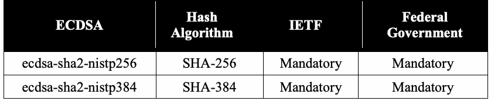
| ECDSA | ハッシュアルゴリズム | IETF | 連邦政府 |
| ecdsa-sha2-nistp256 | SHA-256 | 必須 | 必須 |
| ecdsa-sha2-nistp384 | SHA-384 | 必須 | 必須 |
原本PDFの抜粋画像
原本PDFの抜粋画像
[RFC 6187] specifies the use of X.509 version 3 certificates to convey public keys for the digital-signature algorithms. It also formally defines 2048-bit RSA with SHA-256 as a method for use in SSH. This combination provides 112 bits of security and is allowed. It is important to note that the hash algorithm used with the digital signature algorithms for authentication can be different than the hash function HASH in the key exchange and the key-derivation functions of SSH TLP.
[RFC 6187]は、デジタル署名アルゴリズム用公開鍵を伝達するため、X.509バージョン3証明書の使用を規定する。また、SSHで使用する方式としてSHA-256を用いる2048ビットRSAを正式に定義している。この組み合わせは112ビットのセキュリティを提供し、使用が許容される。認証用デジタル署名アルゴリズムで使うハッシュアルゴリズムは、SSH TLPの鍵交換および鍵導出関数で使うハッシュ関数HASHと異なっていてもよい点に注意する。
未レビュー訳10.2.1.4 Encryption Algorithms
10.2.1.4 暗号化アルゴリズム
Several encryption algorithms are available for SSH; Federal Government applications shall use NIST-approved algorithms. The currently specified encryption algorithms and mode(s) of operation for SSH that are NIST-approved are 3DES-CBC, AES-128-CBC, AES-192-CBC and AES-256-CBC [RFC 4253], and AEAD_AES_128_GCM and AEAD_AES_256_GCM [RFC 5647]. 3DES-CBC is mandatory for IETF implementation.
SSHでは複数の暗号化アルゴリズムを利用できる。連邦政府アプリケーションはNIST承認アルゴリズムを使用しなければならない。SSHで現在規定されているNIST承認の暗号化アルゴリズムおよび動作モードは、3DES-CBC、AES-128-CBC、AES-192-CBC、AES-256-CBC [RFC 4253]、ならびにAEAD_AES_128_GCMとAEAD_AES_256_GCM [RFC 5647]である。IETFでは3DES-CBCが実装必須である。
In the protocol, when either AEAD_AES_128_GCM or AEAD_AES_256_GCM is selected as the encryption algorithm for protecting an encrypted tunnel (client-to-server or server-to-client), it is also chosen as the MAC algorithm. A different algorithm or set of algorithms may be selected for communication in each direction. It should be noted that when AEAD_AES_128_GCM or AEAD_AES_256_GCM is chosen (for encryption and MAC generation), the algorithm is executed only once (rather than once for encryption and another time for integrity protection), because these modes provide both confidentiality and integrity protections at the same time.
プロトコルでAEAD_AES_128_GCMまたはAEAD_AES_256_GCMを暗号化トンネル（クライアントからサーバー、またはサーバーからクライアント）の保護用暗号化アルゴリズムとして選択した場合、同じものをMACアルゴリズムとしても選択する。各方向の通信には異なるアルゴリズムまたはアルゴリズム群を選択してもよい。AEAD_AES_128_GCMまたはAEAD_AES_256_GCMを暗号化とMAC生成に選択した場合、これらの方式は機密性と完全性を同時に提供するため、暗号化と完全性保護で各1回ずつではなく、アルゴリズムを1回だけ実行する点に注意する。
When AEAD_AES_128_GCM or AEAD_AES_256_GCM is used, the SSH packet-length field is not encrypted, but is processed as additional authenticated (plaintext) data. See [RFC 5647] for more details on using these algorithms in SSH.
AEAD_AES_128_GCMまたはAEAD_AES_256_GCMを使用する場合、SSHパケット長フィールドは暗号化されず、追加の認証対象（平文）データとして処理される。SSHでこれらのアルゴリズムを使う詳細は[RFC 5647]を参照。
未レビュー訳10.2.1.5 Message Authentication Codes (MAC) Algorithms
10.2.1.5 メッセージ認証コード（MAC）アルゴリズム
Several MAC algorithms are available for SSH; Federal Government applications shall use NIST-approved algorithms. The currently specified MAC algorithms for SSH that are NIST-approved are HMAC-SHA1 (with MAC tags of 160 bits), HMAC-SHA1-96 (with MAC tags of 96 bits [RFC 4253]), AEAD_AES_128_GCM and AEAD_AES_256_GCM
SSHでは複数のMACアルゴリズムを利用できる。連邦政府アプリケーションはNIST承認アルゴリズムを使用しなければならない。SSHで現在規定されているNIST承認MACアルゴリズムは、HMAC-SHA1（MACタグ長160ビット）、HMAC-SHA1-96（MACタグ長96ビット [RFC 4253]）、AEAD_AES_128_GCMおよびAEAD_AES_256_GCM
未レビュー訳[RFC 5647].
[RFC 5647]。
未レビュー訳As explained in Section 10.2.1.4, AEAD_AES_128_GCM or AEAD_AES_256_GCM can only be chosen as the MAC algorithm when also chosen as the encryption algorithm.
10.2.1.4節で説明したとおり、AEAD_AES_128_GCMまたはAEAD_AES_256_GCMは暗号化アルゴリズムとしても選択した場合に限り、MACアルゴリズムとして選択できる。
未レビュー訳10.2.1.6 Public Host-Key Verification
10.2.1.6 公開ホスト鍵の検証
After the algorithm negotiation is completed, the TLP authenticates the server to the client in a key-exchange process [RFC 4253, Sec. 8]. In this key exchange, a Diffie-Hellman (DH) key exchange is performed, producing two values: a DH value45 K and an exchange hash value called H. H is the hash value of K and other data [RFC 4253, Sec. 8] for a complete specification of H). The generated H and K are subsequently used as inputs to a key-derivation function [RFC 4253, Sec. 7.2] for the specification of this function) to generate IVs and keys for the selected cryptographic algorithms.
アルゴリズム交渉の完了後、TLPは鍵交換処理 [RFC 4253, Sec. 8] でサーバーをクライアントに認証する。この鍵交換ではDiffie-Hellman（DH）鍵交換を行い、2つの値を生成する。DH値45 Kと、Hと呼ばれる交換ハッシュ値である。HはKおよびその他のデータのハッシュ値である（Hの完全な仕様は[RFC 4253, Sec. 8]参照）。生成したHとKは、その後、鍵導出関数 [RFC 4253, Sec. 7.2] の入力として使い、選択された暗号アルゴリズム用のIVと鍵を生成する（この関数の仕様は同節参照）。
未レビュー訳To prove that the server is actually the owner of the public key (called the public host key in the protocol), the server generates a digital signature using its private key (called the private host key in the protocol) on H (i.e., data that is known by both the client and the server). If the client can verify the digital signature using the public host key, then the client has assurance that the server is the owner of the public key. However, the identity of the server has not been verified unless the public host key is verified by the client before the signature on H is verified.
サーバーが実際に公開鍵（プロトコルでは公開ホスト鍵と呼ぶ）の所有者であることを証明するため、サーバーは秘密鍵（プロトコルでは秘密ホスト鍵と呼ぶ）でH（すなわちクライアントとサーバーの双方が知るデータ）にデジタル署名する。クライアントが公開ホスト鍵でその署名を検証できれば、サーバーが公開鍵の所有者であるという保証を得る。ただし、Hへの署名検証より前にクライアントが公開ホスト鍵を検証しなければ、サーバーのIDは確認されない。
Verifying the public host key is performed by 1) comparing the server name and its public host key against a database of trusted server names and public host keys, or 2) using the public host key certificate (i.e., the server’s public key certificate), or 3) using an out-of-band verification method using DNSSEC upon initiating SSH TLP46. A verification of the association between the public host key and the server name is essential to the security of the SSH connection. If the connection is not verified, then the connection is subject to a man-in-the-middle attack; details of this vulnerability are addressed in [RFC 4251]. Therefore, the association of a public host key (i.e., the server’s key) to a server name shall be verified for every TLP session, and the TLP shall fail if the verification fails.
公開ホスト鍵は、1) サーバー名と公開ホスト鍵を信頼済みサーバー名・公開ホスト鍵データベースと照合する、2) 公開ホスト鍵証明書（サーバーの公開鍵証明書）を使用する、または3) SSH TLP開始時にDNSSECを使う帯域外検証方式46を用いて検証する。公開ホスト鍵とサーバー名の対応を検証することは、SSH接続の安全性に不可欠である。接続を検証しない場合、中間者攻撃を受ける可能性がある。この脆弱性の詳細は[RFC 4251]に記載されている。したがって、TLPセッションごとに公開ホスト鍵（サーバーの鍵）とサーバー名の対応を検証しなければならず、検証に失敗した場合TLPは失敗しなければならない。
未レビュー訳 When the first method of server authentication is used, and it is the only method available for the client, the protocol shall continue only when a match is found. Note that the protocol does not explicitly require the connection to fail when the public host key is not verified, however; this Recommendation requires a discontinuation of the protocol in this case.
サーバー認証の第1方式を使用し、それがクライアントにとって唯一の方式である場合、一致が見つかったときに限りプロトコルを継続しなければならない。公開ホスト鍵が検証されない場合に接続を失敗させることをプロトコルが明示的に要求してはいないが、本勧告はこの場合にプロトコルを中断するよう要求する。
未レビュー訳 For the second method, the TLP specified in [RFC 4253] allows the client to either a) accept the presented public key certificate without verification of the association between the public key and the server name, or b) verify the certificate and continue only if the public host key is verified (see Section 2 for details on how to verify a public key in a public key certificate). For Federal Government use, option b) shall be used; that is, when this second method is used, the protocol shall not continue unless the server’s certificate has been successfully verified.
第2方式について、[RFC 4253]のTLPは、クライアントがa) 公開鍵とサーバー名の対応を検証せずに提示された公開鍵証明書を受け入れる、またはb) 証明書を検証し、公開ホスト鍵が検証された場合に限って続行することを認める（公開鍵証明書の公開鍵検証方法は第2節参照）。連邦政府で使用する場合はb)を用いなければならない。すなわち、第2方式では、サーバー証明書の検証が成功しない限りプロトコルを続行してはならない。
未レビュー訳 When an out-of-band verification method using DNSSEC is used (method three), the server’s identity and public key shall not be accepted unless the fingerprint (hash value) of the public host key matches a fingerprint of the public key in the “SSHFP” resource record(s) of the server. “SSHFP” resource record(s) shall be verified before the fingerprint is accepted as a legitimate fingerprint. See [RFC 4255] for details about this method. Other server-authentication methods may be defined later for the protocol. It is important to note that the key exchange specified in [RFC 4253, Sec. 8] contains a Diffie-Hellman primitive specified in [SP 800-56A] that generates a shared secret. In [SP 800-56A], a complete key-agreement scheme contains a specific key-derivation method (e.g., a key-derivation function) that uses the shared secret to derive keying material. In SSH, the shared secret is provided, instead, to the key-derivation function specified in
DNSSECを用いた帯域外検証（第3方式）では、公開ホスト鍵のフィンガープリント（ハッシュ値）がサーバーの「SSHFP」リソースレコード内の公開鍵フィンガープリントと一致しない限り、サーバーのIDと公開鍵を受け入れてはならない。フィンガープリントを正当なものとして受け入れる前に「SSHFP」リソースレコードを検証しなければならない。この方式の詳細は[RFC 4255]を参照。将来、他のサーバー認証方式がプロトコルに定義される場合もある。[RFC 4253, Sec. 8]に規定される鍵交換には、[SP 800-56A]で規定されるDiffie-Hellmanプリミティブが含まれ、共有秘密を生成する点に注意する。[SP 800-56A]では、完全な鍵共有方式は、共有秘密を使って鍵素材を導出する特定の鍵導出方式（鍵導出関数など）を含む。SSHでは、代わりに共有秘密を次に規定する鍵導出関数へ渡す。
未レビュー訳[RFC 4253, Sec. 7.2]. This key-derivation function has been approved in [SP 800-135]. Therefore, the Diffie-Hellman key exchange in [RFC 4253, Sec. 8], combined with the key-derivation function in [RFC 4253, Sec. 7.2] is an approved key-agreement method for SSH TLP.
[RFC 4253, Sec. 7.2]。この鍵導出関数は[SP 800-135]で承認されている。したがって、[RFC 4253, Sec. 8]のDiffie-Hellman鍵交換と、[RFC 4253, Sec. 7.2]の鍵導出関数を組み合わせたものは、SSH TLP用の承認済み鍵共有方式である。
未レビュー訳10.2.2 UAP Issues
10.2.2 UAPに関する問題
There are many authentication methods that the server can use to authenticate the client. The required method that the server must support is public-key authentication, named “publickey” in the UAP [RFC 4252, Sec. 7]. This requires the use of a digital-signature algorithm as specified in Section 10.2.1.3 except the digital signatures using SHA-1. SHA-1 digital signatures shall not be used for client authentication. See [RFC 4252, Sec. 7] for specific details on how client authentication using one of the digital-signature algorithms is done. For Federal Government applications, the digital-signature algorithms used for client authentication shall meet the requirements specified in [SP 800-131A].
サーバーがクライアント認証に使用できる方式は多数ある。サーバーが必ずサポートしなければならない方式は、UAPで「publickey」と呼ばれる公開鍵認証である [RFC 4252, Sec. 7]。この方式では、SHA-1を使うデジタル署名を除き、10.2.1.3節に規定されたデジタル署名アルゴリズムを使用する。クライアント認証にSHA-1デジタル署名を使用してはならない。デジタル署名アルゴリズムを用いるクライアント認証の詳細は[RFC 4252, Sec. 7]を参照。連邦政府アプリケーションでは、クライアント認証に使うデジタル署名アルゴリズムは[SP 800-131A]の要件を満たさなければならない。
In the “publickey” authentication method, proof-of-possession of the valid private-key is considered to be a proof of the identity of the client. Therefore, sharing a private-key among different clients (users) is prohibited. However, in current practice, many organizations allow multiple clients (users) to share a private key. To address this issue and other issues related to identity management, NIST recently published Draft NISTIR 7966, Security of Automated Access Management Using Secure Shell (SSH) [NISTIR 7966].
「publickey」認証方式では、有効な秘密鍵の所持証明をクライアントのIDの証明とみなす。したがって、異なるクライアント（ユーザー）間で秘密鍵を共有することは禁止される。しかし現在の慣行では、多くの組織が複数クライアント（ユーザー）による秘密鍵共有を許容している。この問題およびID管理に関する他の問題に対処するため、NISTは最近、草案NISTIR 7966「Security of Automated Access Management Using Secure Shell (SSH)」[NISTIR 7966]を発行した。
Beside the “publickey” method, two other authentication methods have been defined for this protocol. The first method is using passwords. The second method is using the private key of a host system that is trusted by the server in this SSH connection; the latter method is called “host-based authentication”. For Federal Government use, authentication using passwords shall not be used if the TLP does not provide an encrypted tunnel, because the password would be
「publickey」方式のほかに、このプロトコルには2つの認証方式が定義されている。第1はパスワード方式である。第2は、このSSH接続でサーバーが信頼するホストシステムの秘密鍵を用いる方式で、これを「ホストベース認証」と呼ぶ。 連邦政府で使用する場合、TLPが暗号化トンネルを提供しないなら、パスワード認証を使用してはならない。パスワードが
未レビュー訳sent as cleartext.
平文で送信されるためである。
未レビュー訳 For the “host-based authentication” method [RFC 4252, Sec. 9], the client is a user of the host system that is attempting to authenticate to the server. In this method, the client knows the private signature key of the host. The client uses this private key to generate a digital signature on behalf of this host during the authentication process with the server in the SSH connection. The server verifies the digital signature to authenticate the host system. If the authentication is successful, and the client (user) is an authorized user associated with this host, then this user (the client) is considered to be authenticated by the SSH server. This “host-based authentication” method should not be used for client authentication because the method does not provide direct, cryptographic assurance of the identity of the client to the server - the server must trust the host system to obtain the correct identity of the client. Also, client authentication using Kerberos (see Section 6) is also described in [RFC 4462]. It is important to note that RFC 4462 specifies an authentication method called “Authentication Using GSS-API Key Exchange” [RFC 4462, Sec. 4]. This authentication method shall not be used as a stand-alone authentication method because the method does not prove the identity of the client.
「ホストベース認証」方式 [RFC 4252, Sec. 9] では、クライアントはサーバーへの認証を試みるホストシステムのユーザーである。この方式では、クライアントはホストシステムの秘密署名鍵を知っている。SSH接続での認証中、クライアントはこの秘密鍵を使ってホストを代表するデジタル署名を生成する。サーバーは署名を検証してホストシステムを認証する。認証が成功し、クライアント（ユーザー）がそのホストに関連付けられた認可済みユーザーであれば、そのユーザー（クライアント）はSSHサーバーによって認証されたものとみなされる。サーバーにクライアントのIDを直接、暗号学的に保証する方式ではなく、サーバーがクライアントの正しいIDを把握するためにホストシステムを信頼しなければならないため、この「ホストベース認証」はクライアント認証に使用すべきではない。また、Kerberosによるクライアント認証（第6節参照）も[RFC 4462]に記載されている。[RFC 4462]は「GSS-API鍵交換を使用する認証」[RFC 4462, Sec. 4]という方式を規定するが、クライアントのIDを証明しないため、この方式を単独の認証方式として使用してはならない。
未レビュー訳10.3 Procurement Guidance
10.3 調達に関するガイダンス
The following recommendation is for any individual that makes a purchasing decision for acquiring SSH client and server implementations.
以下の推奨事項は、SSHクライアントおよびサーバー実装を取得する調達担当者を対象とする。
1.Ensure that client and server implementations support at least one of these NIST-approved encryption algorithms: AES-128-CBC, AES-192-CBC and AES-256-CBC, in addition to 3DES-CBC, which is already mandatory to implement for the protocol. Implementations that support all of these encryption algorithms should be selected.
1.プロトコルで実装必須の3DES-CBCに加え、クライアントおよびサーバー実装が次のNIST承認暗号化アルゴリズムのうち少なくとも1つをサポートすることを確認する：AES-128-CBC、AES-192-CBC、AES-256-CBC。これらすべてをサポートする実装を選択すべきである。
未レビュー訳2.When AEAD_AES_128_GCM or AEAD_AES_256_GCM is used in a negotiating encryption-algorithm list, it must also be in the corresponding MAC-algorithm list. Ensure that an implementation either enforces this automatically or provides it as a configurable option.
2.AEAD_AES_128_GCMまたはAEAD_AES_256_GCMを交渉用暗号化アルゴリズム一覧で使用する場合、対応するMACアルゴリズム一覧にも含めなければならない。実装がこれを自動的に適用するか、構成可能な選択肢として提供することを確認する。
未レビュー訳3.Implementations should be chosen that support Suite B cryptographic algorithms as described in Section 10.2.1.1 above.
3.上記10.2.1.1節の説明に従い、Suite B暗号アルゴリズムをサポートする実装を選択すべきである。
4.Ensure that client and server implementations support public-key authentication using public-key certificates.
4.クライアントおよびサーバー実装が公開鍵証明書を用いた公開鍵認証をサポートすることを確認する。
未レビュー訳5.Ensure that client and server implementations allow a protocol to be discontinued when the verification of the public-key-certificate fails.
5.公開鍵証明書の検証に失敗したときにプロトコルを中断できることを、クライアントおよびサーバー実装で確認する。
6.Ensure that client implementations allow preference setting for implemented cryptographic algorithms.
6.クライアント実装で、実装済み暗号アルゴリズムの優先順位を設定できることを確認する。
7.Ensure that server implementations allow the configuration of the cryptographic algorithms to be used.
7.サーバー実装で、使用する暗号アルゴリズムを構成できることを確認する。
8.Ensure that server implementations are able to disallow the password-authentication method when encryption is not used in the client-to-server traffic direction.
8.クライアントからサーバーへの通信方向で暗号化を使用しない場合、サーバー実装でパスワード認証方式を禁止できることを確認する。
未レビュー訳9.Ensure that server implementations are able to disallow the “host-based authentication method”.
9.サーバー実装で「ホストベース認証方式」を禁止できることを確認する。
10.4 Recommendations for System Installers
10.4 システム設置担当者への推奨事項
The system installer is the individual(s) that installs the SSH server and client applications and performs the initial configuration of the system. The system installer shall:
システム設置担当者とは、SSHサーバーおよびクライアントアプリケーションを設置し、システムを初期構成する者である。システム設置担当者は次を行わなければならない。
1.Install and/or configure the server and client to use only approved cryptographic algorithms.
1.サーバーとクライアントを、承認済み暗号アルゴリズムのみを使用するようインストールおよび／または構成する。
2.Set the connection to fail when a public-key certificate is not verified at both sides: server and client.
2.サーバー側とクライアント側の両方で公開鍵証明書が検証されない場合、接続が失敗するよう設定する。
未レビュー訳3.Configure preferences in negotiating cryptographic-algorithm lists according to the organization’s security guidelines for the client. For example, if the
3.組織のセキュリティガイドラインに従い、クライアントの暗号アルゴリズム交渉一覧の優先順位を構成する。例えば、
未レビュー訳organization prefers the use of AES-256, then AES-256 must be configured to have the highest preference among all of the available encryption choices.
組織がAES-256を優先する場合、利用可能なすべての暗号化方式の中でAES-256の優先順位を最上位に設定しなければならない。
未レビュー訳4.Configure the use of only approved cryptographic algorithms by the server.
4.サーバーが承認済み暗号アルゴリズムのみを使用するよう構成する。
5.Consider disabling the “host-based authentication” option at the server if the server is not willing to communicate with all possible users/clients at the host machine.
5.サーバーのホストマシン上のすべてのユーザー／クライアントとの通信を許容しない場合、サーバーで「ホストベース認証」オプションを無効にすることを検討する。
未レビュー訳6.When AEAD_AES_128_GCM or AEAD_AES_256_GCM is in a negotiating encryption-algorithm list, configure it to also be its companion MAC-algorithm if this is not done automatically.
6.AEAD_AES_128_GCMまたはAEAD_AES_256_GCMが暗号化アルゴリズム交渉一覧に含まれる場合、自動設定されないなら、対応するMACアルゴリズムとしても設定する。
7.Suite B cryptographic algorithms should be set with the highest preferences in the client-side application. This will result in the selection of Suite B cryptographic algorithms to be used when the server supports them.
7.クライアント側アプリケーションではSuite B暗号アルゴリズムを最優先に設定すべきである。これにより、サーバーが対応している場合にSuite B暗号アルゴリズムが選択される。
The installer shall make sure that all of the cryptographic components and required plug-ins are installed so that cryptographic operations in SSH can function properly when protecting the data traffic.
設置担当者は、データトラフィックを保護するSSH暗号処理が適切に機能するよう、すべての暗号コンポーネントと必要なプラグインがインストールされていることを確認しなければならない。
未レビュー訳10.5 Recommendations for System Administrators
10.5 システム管理者への推奨事項
System administrators are those individuals responsible for the day-to-day functioning of the SSH server and client applications. System administrators shall:
システム管理者とは、SSHサーバーおよびクライアントアプリケーションの日常運用に責任を負う者である。システム管理者は次を行わなければならない。
未レビュー訳1.Configure the client to verify the server’s public-key certificate in the key-exchange protocol in TLP and discontinue the protocol if the verification fails.
1.クライアントがTLP鍵交換プロトコルでサーバーの公開鍵証明書を検証し、検証に失敗すればプロトコルを中断するよう構成する。
未レビュー訳2.Configure the server to authenticate the client by verifying the client’s certificate, if provided, when a public-key algorithm for authentication is used in UAP.
2.UAPで認証に公開鍵アルゴリズムを使用する場合、証明書が提示されればその証明書を検証してクライアントを認証するようサーバーを構成する。
3.Ensure that end users are properly trained to follow the organization’s security policy for the selection, use and protection of passwords.
3.エンドユーザーが、パスワードの選択、使用および保護に関する組織のセキュリティポリシーに従うための適切な訓練を受けるようにする。
4.Ensure that the organization’s security policy is enforced.
4.組織のセキュリティポリシーを徹底する。
5.Ensure the protection of private key(s) associated with the server’s certificate and the client’s certificate from disposal, leaks or unauthorized access is/are properly configured.
5.サーバー証明書およびクライアント証明書に関連付けられた秘密鍵が、廃棄、漏えいまたは不正アクセスから適切に保護されるよう構成する。
未レビュー訳10.6 Recommendations for End Users
10.6 エンドユーザーへの推奨事項
An end user is the individual using the SSH client application to securely connect to the SSH server. End users shall:
エンドユーザーとは、SSHサーバーに安全に接続するためSSHクライアントアプリケーションを使用する個人である。エンドユーザーは次を行わなければならない。
1.Be aware of and trained to follow the organization’s security policy for using the product.
1.製品の使用に関する組織のセキュリティポリシーを理解し、それに従うための訓練を受ける。
2.Operate their system as instructed by their organization and system administrator.
2.組織およびシステム管理者の指示どおりにシステムを運用する。
Appendix A: Glossary
付録A：用語集
The terms provided below are defined as they are used in this document. The same terms may be defined differently in other documents.
以下の用語は本書での用法に沿って定義する。同じ用語が他の文書では異なる意味で定義される場合がある。
未レビュー訳| 用語 | 定義 |
3-TDEA
3-TDEA
未レビュー訳Three key TDEA as specified in [SP 800-67].
[SP 800-67]に規定される3鍵TDEA。
未レビュー訳Access control
アクセス制御
未レビュー訳Restricts access to resources only to privileged entities.
特権を持つエンティティのみにリソースへのアクセスを制限する。
未レビュー訳Access-control
アクセス制御
未レビュー訳A method for restricting access to some resource.
あるリソースへのアクセスを制限する方法。
未レビュー訳mechanism
メカニズム
未レビュー訳Approved
承認済み
未レビュー訳FIPS-approved and/or NIST-recommended. An algorithm or technique that is either 1) specified in a FIPS or NIST Recommendation, or 2) adopted in a FIPS or NIST Recommendation or 3) specified in a list of NIST approved security functions.
FIPS承認および／またはNIST推奨。FIPSまたはNIST勧告に規定される、FIPSまたはNIST勧告に採用される、あるいはNIST承認セキュリティ機能一覧に記載されるアルゴリズムまたは技法。
未レビュー訳Archive
アーカイブ
未レビュー訳See Key-management archive.
鍵管理アーカイブを参照。
未レビュー訳Asymmetric-key See Public-key cryptographic algorithm. algorithm
非対称鍵アルゴリズム：公開鍵暗号アルゴリズムを参照。
未レビュー訳Authentication
認証
未レビュー訳A process that establishes the origin of information, or determines an entity’s identity.
情報の出所を確立する、またはエンティティのIDを判定するプロセス。
未レビュー訳Authentication code See Message Authentication Code.
認証コード：メッセージ認証コードを参照。
Authorization
認可
未レビュー訳Access privileges granted to an entity; conveys an “official” sanction to perform a given security function or activity.
エンティティに付与されたアクセス権。特定のセキュリティ機能または活動を実施するための「正式な」承認を伝える。
未レビュー訳Availability
可用性
未レビュー訳Timely, reliable access to information by authorized entities.
認可されたエンティティが情報へ適時かつ確実にアクセスできること。
未レビュー訳Backup
バックアップ
未レビュー訳A copy of information to facilitate recovery, if necessary.
必要に応じて復旧できるようにする情報の複製。
未レビュー訳CBC-MAC
CBC-MAC
未レビュー訳A mode of operation for block cipher algorithms.
ブロック暗号アルゴリズムの動作モード。
未レビュー訳Certificate
証明書
未レビュー訳See Public-key certificate.
公開鍵証明書を参照。
未レビュー訳Certification
認証
未レビュー訳The entity in a Public Key Infrastructure (PKI) that is
公開鍵基盤（PKI）内のエンティティであり、
未レビュー訳authority
機関
未レビュー訳responsible for issuing certificates, and exacting compliance to a PKI policy.
証明書を発行し、PKIポリシーへの準拠を要求する責任を負う。
未レビュー訳Checksum
チェックサム
未レビュー訳A method used to protect the integrity of data by detecting errors in that data.
データ内の誤りを検出することによりデータ完全性を保護する方法。
未レビュー訳Ciphertext
暗号文
未レビュー訳Data in its encrypted form.
暗号化された形式のデータ。
未レビュー訳Compromise
侵害
未レビュー訳The unauthorized disclosure, modification, substitution or use of sensitive data (e.g., keying material and other security related information).
機微データ（鍵素材その他のセキュリティ関連情報など）の不正な開示、改変、置換または使用。
未レビュー訳Confidentiality
機密性
未レビュー訳The property that sensitive information is not disclosed to unauthorized entities.
機微情報が認可されていないエンティティに開示されないという特性。
未レビュー訳Cryptographic key A parameter used in conjunction with a cryptographic algorithm (key)
暗号鍵（鍵）：暗号アルゴリズムと組み合わせて用い、その動作を決定するパラメーターであり、
未レビュー訳that determines its operation in such a way that an entity with knowledge of the key can reproduce or reverse the operation, while an entity without knowledge of the key cannot. Examples include:
鍵を知るエンティティは動作を再現または逆転できるが、鍵を知らないエンティティにはできない。例：
未レビュー訳1.the transformation of plaintext data into ciphertext data,
1.平文データを暗号文データに変換すること、
2.the transformation of ciphertext data into plaintext data,
2.暗号文データを平文データに変換すること、
3.the computation of a digital signature from data,
3.データからデジタル署名を計算すること、
未レビュー訳4.the verification of a digital signature,
4.デジタル署名を検証すること、
未レビュー訳5.the computation of an authentication code from data,
5.データから認証コードを計算すること、
6.the verification of an authentication code from data and a received authentication code,
6.データおよび受信した認証コードから認証コードを検証すること、
7.the computation of a shared secret that is used to derive keying material.
7.鍵素材の導出に用いる共有秘密を計算すること。
未レビュー訳Cryptographic
暗号
未レビュー訳The set of hardware, software, and/or firmware in which
ハードウェア、ソフトウェアおよび／またはファームウェアの集合であり、
未レビュー訳module
モジュール
未レビュー訳approved security functions are implemented
承認済みセキュリティ機能が実装される。
未レビュー訳Cryptoperiod
暗号期間
未レビュー訳The time span during which a specific key is authorized for use or in which the keys for a given system or application may remain in effect.
特定の鍵の使用が認可されている期間、または特定システム／アプリケーションの鍵が有効であり続ける期間。
未レビュー訳Data integrity
データ完全性
未レビュー訳A property whereby data has not been altered in an unauthorized manner since it was created, transmitted or stored. In this Recommendation, the statement that a cryptographic algorithm "provides data integrity" means that the algorithm is used to detect unauthorized alterations.
データが作成、送信または保存されてから、不正な方法で変更されていないという特性。本勧告で暗号アルゴリズムが「データ完全性を提供する」とは、不正な変更を検出するためにアルゴリズムを使用することを意味する。
未レビュー訳Decryption
復号
未レビュー訳The process of changing ciphertext into plaintext using a cryptographic algorithm and key.
暗号アルゴリズムと鍵を用いて暗号文を平文に変換するプロセス。
未レビュー訳DES
DES
未レビュー訳The Data Encryption Standard that was specified in FIPS 46 (now withdrawn).
FIPS 46で規定されたデータ暗号化標準（現在は撤回済み）。
未レビュー訳Digital signature The result of a cryptographic transformation of data that, when properly implemented, provides the services of:
デジタル署名：適切に実装された場合、次のサービスを提供するデータの暗号変換結果：
未レビュー訳1.origin authentication,
1.送信元認証、
2.data integrity, and
2.データ完全性、および
3.signer non-repudiation.
3.署名者の否認防止。
Distribution
配布
未レビュー訳See Key distribution.
鍵配布を参照。
未レビュー訳Encryption
暗号化
未レビュー訳The process of changing plaintext into ciphertext using a cryptographic algorithm and key.
暗号アルゴリズムと鍵を用いて平文を暗号文に変換するプロセス。
未レビュー訳Entity
エンティティ
未レビュー訳An individual (person), organization, device or process.
個人（人）、組織、デバイスまたはプロセス。
未レビュー訳Hash algorithm
ハッシュアルゴリズム
未レビュー訳See Hash function.
ハッシュ関数を参照。
未レビュー訳Hash-based message A message authentication code that uses an approved keyed-authentication code hash function. (HMAC)
ハッシュベースメッセージ認証コード（HMAC）：承認済み鍵付きハッシュ関数を用いるメッセージ認証コード。
未レビュー訳Hash function
ハッシュ関数
未レビュー訳A function that maps a bit string of arbitrary length to a fixed length bit string. Approved hash functions satisfy the following properties:
任意長のビット列を固定長のビット列に写像する関数。承認済みハッシュ関数は次の性質を満たす。
未レビュー訳1.(One-way) It is computationally infeasible to find any input that maps to any pre-specified output, and
1.（一方向性）あらかじめ指定した出力に写像される入力を見つけることが計算量的に実行不可能である。
未レビュー訳2.(Collision free) It is computationally infeasible to find any two distinct inputs that map to the same output.
2.（衝突困難性）同じ出力に写像される相異なる2つの入力を見つけることが計算量的に実行不可能である。
Hash value
ハッシュ値
未レビュー訳The result of applying a hash function to information.
情報にハッシュ関数を適用した結果。
未レビュー訳Identifier
識別子
未レビュー訳A bit string that is associated with a person, device or organization. It may be an identifying name, or may be something more abstract (for example, a string consisting of an IP address and timestamp), depending on the application.
個人、デバイスまたは組織に関連付けられたビット列。用途に応じて、識別名の場合もあれば、より抽象的なもの（例えばIPアドレスとタイムスタンプからなる文字列）の場合もある。
未レビュー訳Integrity
完全性
未レビュー訳The property that sensitive data has not been modified or deleted in an unauthorized and undetected manner. In this Recommendation, the statement that a cryptographic algorithm "provides integrity" means that the algorithm is used to detect unauthorized modifications or deletions.
機微データが不正かつ未検知の方法で改変または削除されていないという特性。本勧告で暗号アルゴリズムが「完全性を提供する」とは、不正な改変または削除を検出するためにそのアルゴリズムを使用することを意味する。
未レビュー訳Key
鍵
未レビュー訳See Cryptographic key.
暗号鍵を参照。
未レビュー訳Key agreement
鍵共有
未レビュー訳A key-establishment scheme whose resultant keying material is a function of information contributed by two or more participants, so that no party can predetermine the value of the keying material.
確立される鍵素材が2人以上の参加者の提供情報に基づく鍵確立方式。そのため、いずれの当事者も鍵素材の値を事前に決定できない。
未レビュー訳Key Bundle
鍵束
未レビュー訳A set of keys used during one operation, typically a TDEA operation.
1回の処理（通常はTDEA処理）で使用する鍵の集合。
未レビュー訳Key component
鍵要素
未レビュー訳A parameter used in conjunction with other key components in an approved security function to form a plaintext cryptographic key or perform a cryptographic function.
承認済みセキュリティ機能で他の鍵要素と組み合わせて、平文の暗号鍵を構成する、または暗号機能を実行するためのパラメーター。
未レビュー訳Key distribution The transport of a key and other keying material from an entity
鍵配布：鍵およびその他の鍵素材を、鍵を所有または生成したエンティティから、その鍵を使用する予定の別のエンティティへ
未レビュー訳that either owns or generates the key to another entity that is intended to use the key.
転送すること。
未レビュー訳Key-encryption key A cryptographic key that is used for the encryption or decryption of other keys.
鍵暗号化鍵：他の鍵の暗号化または復号に使用する暗号鍵。
Key establishment A procedure that results in keying material that is shared among
鍵確立：複数の当事者間で共有される
未レビュー訳different parties.
鍵素材を生成する手順。
未レビュー訳Key management The activities involving the handling of cryptographic keys and
鍵管理：暗号鍵およびその他の関連セキュリティパラメーター（IVやパスワードなど）の全ライフサイクルにわたる取り扱い活動。これには、鍵の生成、保管、確立、入力および出力、
未レビュー訳other related security parameters (e.g., IVs and passwords) during the entire life cycle of the keys, including their generation, storage, establishment, entry and output, and destruction.
破棄が含まれる。
未レビュー訳Key-management A function in the lifecycle of keying material; a repository archive
鍵管理アーカイブ：鍵素材のライフサイクルにおける機能であり、
未レビュー訳containing keying material of historical interest.
歴史的価値のある鍵素材を保管するリポジトリ。
未レビュー訳Key pair
鍵ペア
未レビュー訳A public key and its corresponding private key; a key pair is used with a public-key algorithm.
公開鍵とそれに対応する秘密鍵の組。公開鍵アルゴリズムで使用する。
未レビュー訳Key recovery
鍵復旧
未レビュー訳Mechanisms and processes that allow authorized entities to retrieve keying material from key backup or an archive.
認可されたエンティティが鍵バックアップまたはアーカイブから鍵素材を取得できるようにするメカニズムおよびプロセス。
未レビュー訳Key transport
鍵転送
未レビュー訳A key-establishment procedure whereby one entity (the sender) selects a value for secret keying material and then securely distributes that value to another party (the receiver).
あるエンティティ（送信者）が秘密鍵素材の値を選び、その値を別の当事者（受信者）へ安全に配布する鍵確立手順。
未レビュー訳Key wrapping
鍵ラップ
未レビュー訳A method of encrypting keys (along with associated integrity information) that provides both confidentiality and integrity protection using a symmetric key.
共通鍵を用いて、関連する完全性情報とともに鍵を暗号化し、機密性と完全性保護の両方を提供する方法。
未レビュー訳Keying material The data (e.g., keys and IVs) necessary to establish and
鍵素材：暗号鍵関係を確立し、
未レビュー訳maintain cryptographic keying relationships.
維持するために必要なデータ（鍵やIVなど）。
未レビュー訳Message
メッセージ
未レビュー訳A cryptographic checksum on data that uses a symmetric key to
共通鍵を用いるデータの暗号チェックサムであり、
未レビュー訳Authentication Code detect both accidental and intentional modifications of data. (MAC)
偶発的および意図的な改変を検出するメッセージ認証コード（MAC）。
未レビュー訳Non-repudiation A service that is used to provide assurance of the integrity and
否認防止
未レビュー訳origin of data in such a way that the integrity and origin can be verified by a third party as having originated from a specific entity in possession of the private key of the claimed signatory.
データの完全性と出所を保証し、主張された署名者の秘密鍵を持つ特定エンティティに由来することを第三者が検証できるようにするサービス。
未レビュー訳Nonce
ノンス
未レビュー訳A time-varying value that has, at most, a negligible chance of repeating. For example, a nonce could be a random value that is generated anew for each instance of a nonce, a timestamp, a sequence number, or some combination of these.
繰り返す可能性が最大でも無視できる程度である、時間とともに変化する値。例えば、ノンスを新たに生成するたびに作る乱数、タイムスタンプ、シーケンス番号、またはこれらの組み合わせがノンスとなり得る。
未レビュー訳Owner
所有者
未レビュー訳For an asymmetric key pair, the entity that owns the private key, whether that entity generated the key pair or a trusted party generated the key pair for the entity.
非対称鍵ペアについて、鍵ペアを自ら生成したか、信頼できる第三者がその者のために生成したかにかかわらず、秘密鍵を所有するエンティティ。
未レビュー訳In Encrypted File Systems, the file owner has control over the file and grants access of the file to others. A file may have one or more owners. An owner could be an individual or a group of individuals or processes
暗号化ファイルシステムでは、ファイル所有者がファイルを管理し、他者にそのファイルへのアクセスを許可する。ファイルには1人以上の所有者がいてもよい。所有者は個人、個人のグループ、またはプロセスであり得る。
未レビュー訳Password
パスワード
未レビュー訳A string of characters (letters, numbers and other symbols) that are used to authenticate an identity or to verify access authorization.
IDの認証またはアクセス認可の確認に使用する文字（英字、数字、その他の記号）の列。
未レビュー訳Payload
ペイロード
未レビュー訳A part of the data stream representing the user information and user overhead in a communication.
通信においてユーザー情報およびユーザーのオーバーヘッドを表すデータストリームの一部。
未レビュー訳Plaintext
平文
未レビュー訳Intelligible data that has meaning and can be understood without the application of decryption.
復号しなくても理解でき、意味を持つデータ。
未レビュー訳Private key
秘密鍵
未レビュー訳A cryptographic key, used with a public-key cryptographic algorithm that is uniquely associated with an entity and is not made public. In an asymmetric (public) cryptosystem, the private key is associated with a public key. Depending on the algorithm, the private key may be used to:
エンティティに一意に関連付けられ、公開されない公開鍵暗号アルゴリズム用の暗号鍵。非対称（公開鍵）暗号システムでは、秘密鍵は公開鍵に対応する。アルゴリズムに応じて、秘密鍵は次の用途に使われる。
未レビュー訳1.Compute the corresponding public key,
1.対応する公開鍵を計算する。
2.Compute a digital signature that may be verified by the corresponding public key,
2.対応する公開鍵で検証できるデジタル署名を計算する。
3.Decrypt data that was encrypted by the corresponding public key, or
3.対応する公開鍵で暗号化されたデータを復号する。または
4.Compute a piece of common shared data, together with other information.
4.他の情報とともに共有データの一部を計算する。
Protocol
プロトコル
未レビュー訳A special set of rules used by two or more entities that describe the message order and data structures for information exchanged between the entities.
エンティティ間で交換する情報のメッセージ順序とデータ構造を定める、2つ以上のエンティティが用いる特別な規則の集合。
未レビュー訳Public key
公開鍵
未レビュー訳A cryptographic key used with a public-key cryptographic algorithm that is uniquely associated with an entity and that may be made public. In an asymmetric (public) cryptosystem, the public key is associated with a private key. The public key may be known by anyone and, depending on the algorithm, may be used to:
エンティティに一意に関連付けられ、公開可能な公開鍵暗号アルゴリズム用の暗号鍵。非対称（公開鍵）暗号システムでは、公開鍵は秘密鍵に対応する。公開鍵は誰でも知ることができ、アルゴリズムに応じて次に使われる。
未レビュー訳1.Verify a digital signature that is signed by the corresponding private key,
1.対応する秘密鍵で署名されたデジタル署名を検証する。
2.Encrypt data that can be decrypted by the corresponding private key, or
2.対応する秘密鍵で復号できるデータを暗号化する。または
3.Compute a piece of shared data.
3.共有データの一部を計算する。
未レビュー訳Public-key
公開鍵
未レビュー訳A cryptographic algorithm that uses two related keys, a public
関連する2つの鍵（公開鍵と秘密鍵）を用いる暗号アルゴリズムであり、
未レビュー訳(asymmetric)
（非対称）
未レビュー訳key and a private key. The two keys have the property that
公開鍵と秘密鍵には次の性質がある：
未レビュー訳cryptographic
暗号
未レビュー訳determining the private key from the public key is
公開鍵から秘密鍵を導出することは
未レビュー訳algorithm
アルゴリズム
未レビュー訳computationally infeasible.
計算量的に実行不可能である。
未レビュー訳Public-key certificate A set of data that uniquely identifies an entity, contains the
公開鍵証明書：エンティティを一意に識別し、
未レビュー訳entity's public key and possibly other information, and is digitally signed by a trusted party, thereby binding the public key to the entity.
そのエンティティの公開鍵および場合によっては他の情報を含むデータ集合。信頼された第三者によるデジタル署名によって公開鍵とエンティティを結び付ける。
未レビュー訳Public Key
公開鍵
未レビュー訳A framework that is established to issue, maintain and revoke
公開鍵証明書を発行、維持および失効させるために確立された枠組み
未レビュー訳Infrastructure (PKI) public-key certificates.
（PKI）：公開鍵証明書。
未レビュー訳Reconstitute
再構成
未レビュー訳Rebuilding a service system (possibly with a different infrastructure) using previously saved security information and/or keying material, rather than simply restarting a system from a backup.
単にバックアップからシステムを再起動するのではなく、以前に保存したセキュリティ情報および／または鍵素材を用いて、サービスシステムを（異なる基盤を使う場合も含め）再構築すること。
未レビュー訳Rekey
鍵再設定
未レビュー訳A new key replaces another key; the “value” of the new key is entirely independent of the “value” of the old key.
新しい鍵で別の鍵を置き換えること。新旧の鍵の「値」は完全に独立している。
未レビュー訳Relying party
依拠当事者
未レビュー訳An individual or organization that relies on the certificate and the CA that issued the certificate to verify the identity of the user; the validity of the public key, associated algorithms and any relevant parameters; and the user’s possession of the corresponding private key.
ユーザーID、公開鍵と関連アルゴリズムおよび関連パラメーターの有効性、ならびに対応する秘密鍵をユーザーが所有していることを検証するため、証明書とそれを発行したCAに依拠する個人または組織。
未レビュー訳Secret key
秘密鍵（共通鍵）
未レビュー訳A cryptographic key that is used with a secret-key (symmetric) cryptographic algorithm that is uniquely associated with one or more entities and is not made public. The use of the term “secret” in this context does not imply a classification level, but rather implies the need to protect the key from disclosure.
公開されず、1つ以上のエンティティに一意に関連付けられた、秘密鍵（共通鍵）暗号アルゴリズム用の暗号鍵。この文脈で「秘密」という語は機密区分を意味せず、開示から鍵を保護する必要性を意味する。
未レビュー訳Security association A relationship between two network entities in which security information is shared and used to support secure communication between the two entities.
セキュリティアソシエーション：2つのネットワークエンティティ間でセキュリティ情報を共有し、両者間の安全な通信を支援する関係。
未レビュー訳Security services Mechanisms used to provide confidentiality, data integrity,
セキュリティサービス：情報の機密性、データ完全性、
未レビュー訳authentication or non-repudiation of information.
認証または否認防止を提供するために用いるメカニズム。
未レビュー訳Self-signed
自己署名
未レビュー訳A public-key certificate whose digital signature may be verified
公開鍵証明書であり、そのデジタル署名は
未レビュー訳certificate
証明書
未レビュー訳by the public key contained within the certificate. The signature on a self-signed certificate protects the integrity of the data, but does not guarantee authenticity of the information. The trust of self-signed certificates is based on the secure procedures used to distribute them.
証明書内に含まれる公開鍵で検証できる。自己署名証明書の署名はデータの完全性を保護するが、情報の真正性を保証するものではない。自己署名証明書への信頼は、それを安全に配布する手順に基づく。
未レビュー訳This term is used to indicate a requirement of a Federal
連邦
未レビュー訳Shall
Shall（〜しなければならない）
未レビュー訳Information Processing Standard (FIPS) or a requirement that must be fulfilled to claim conformance to this Recommendation. Note that shall may be coupled with not to become shall not.
情報処理標準（FIPS）の要件、または本勧告への適合を主張するために満たす必要のある要件を示す用語。この語にnotを付けるとshall notとなる点に注意。
未レビュー訳Shared secret
共有秘密
未レビュー訳A value that is generated during a key-agreement scheme; the shared secret is used to derive keying material for a symmetric-key algorithm.
鍵共有方式の実行中に生成される値。共有秘密は共通鍵アルゴリズム用の鍵素材を導出するために使われる。
未レビュー訳This term is used to indicate a very important requirement.
非常に重要な要件を示す用語。
未レビュー訳Should
Should（〜することが望ましい）
未レビュー訳While the “requirement” is not stated in a FIPS, ignoring the requirement could result in undesirable results. Note that should may be coupled with not to become should not.
要件はFIPSに明記されていないが、無視すると望ましくない結果を招く可能性がある。この語にnotを付けるとshould notとなる点に注意。
未レビュー訳Signature verification Uses a digital-signature algorithm and a public key to verify a
署名検証
未レビュー訳digital signature.
デジタル署名アルゴリズムと公開鍵を用いてデジタル署名を検証すること。
未レビュー訳Symmetric key
共通鍵
未レビュー訳A single cryptographic key that is used with a secret (symmetric) key algorithm.
秘密鍵（共通鍵）アルゴリズムで使う単一の暗号鍵。
未レビュー訳Symmetric-key
共通鍵暗号
未レビュー訳A cryptographic algorithm that uses one shared key, a secret
1つの共有秘密鍵を使用する暗号アルゴリズム。
未レビュー訳algorithm
アルゴリズム
未レビュー訳key.
鍵。
未レビュー訳Threat
脅威
未レビュー訳Any circumstance or event with the potential to adversely impact a system through unauthorized access, destruction, disclosure, modification of data or denial of service.
不正アクセス、破壊、開示、データ改変またはサービス拒否を通じてシステムに悪影響を及ぼす可能性のある状況または事象。
未レビュー訳Triple DES/Triple Triple Data Encryption Algorithm, specified in [SP 800-67].
Triple DES／Triple Triple Data Encryption Algorithm：[SP 800-67]で規定されている。
DEA (TDEA)
[SP 800-67]に規定される（TDEA）。
未レビュー訳Unauthorized
不正な
未レビュー訳An event involving the exposure of information to entities not
情報にアクセスする権限のないエンティティへの情報の露出を伴う
未レビュー訳disclosure
開示
未レビュー訳authorized access to the information.
事象。
未レビュー訳User’s name (in a The name of the party authorized to use the private key certificate)
ユーザー名（証明書内）
未レビュー訳associated with the public key in the certificate; the subject of the certificate.
証明書内の公開鍵に対応する秘密鍵の使用を認可された主体の名前。証明書のサブジェクト。
未レビュー訳X.509 public-key The public key for a user (or device) and a name for the user certificate
X.509公開鍵証明書
未レビュー訳(or device), together with some other information, rendered un-forgeable by the digital signature of the certification authority that issued the certificate, encoded in the format defined in the ISO/ITU-T X.509 standard.
ユーザー（またはデバイス）の公開鍵とそのユーザー（またはデバイス）の名前、およびその他の情報を含み、証明書を発行した認証局のデジタル署名によって偽造不能にしたもの。ISO/ITU-T X.509標準で定義された形式で符号化される。
未レビュー訳Appendix B: Acronyms
付録B：略語
AES
AES
未レビュー訳Advanced Encryption Standard
高度暗号化標準
未レビュー訳AH
AH
未レビュー訳Authentication Header
認証ヘッダー
未レビュー訳AS
AS
未レビュー訳Authentication Server
認証サーバー
未レビュー訳CA
CA
未レビュー訳Certificate Authority
認証局
未レビュー訳CBC
CBC
未レビュー訳Cipher Block Chaining
暗号ブロック連鎖
未レビュー訳CBC-MAC Cipher Block Chaining Message Authentication Code
CBC-MAC：暗号ブロック連鎖メッセージ認証コード
未レビュー訳CMVP
CMVP
未レビュー訳Cryptographic Module Validation Program
暗号モジュール検証プログラム
未レビュー訳COTS
COTS
未レビュー訳Commercial Off-the-Shelf
市販既製品
未レビュー訳CRL
CRL
未レビュー訳Certificate Revocation List
証明書失効リスト
未レビュー訳CTR
CTR
未レビュー訳Counter Mode
カウンターモード
未レビュー訳DES
DES
未レビュー訳Data Encryption Standard
データ暗号化標準
未レビュー訳DHCP
DHCP
未レビュー訳Dynamic Host Configuration Protocol
動的ホスト構成プロトコル
未レビュー訳DNS
DNS
未レビュー訳Domain Name System
ドメインネームシステム
未レビュー訳DSA
DSA
未レビュー訳Digital Signature Algorithm
デジタル署名アルゴリズム
未レビュー訳EC
EC
未レビュー訳Elliptic Curve
楕円曲線
未レビュー訳ECDH
ECDH
未レビュー訳Elliptic Curve Diffie-Hellman
楕円曲線Diffie-Hellman
未レビュー訳ECDSA
ECDSA
未レビュー訳Elliptic Curve Digital Signature Algorithm
楕円曲線デジタル署名アルゴリズム
未レビュー訳EFS
EFS
未レビュー訳Encrypted File System
暗号化ファイルシステム
未レビュー訳ESP
ESP
未レビュー訳Encapsulating Security Protocol
カプセル化セキュリティペイロード
未レビュー訳FEK
FEK
未レビュー訳File Encryption Key
ファイル暗号化鍵
未レビュー訳GCM
GCM
未レビュー訳Galois Counter Mode
Galoisカウンターモード
未レビュー訳GMAC
GMAC
未レビュー訳Galois Message Authentication Code
Galoisメッセージ認証コード
未レビュー訳HMAC
HMAC
未レビュー訳Hash-based Message Authentication Code
ハッシュベースメッセージ認証コード
未レビュー訳HTTP
HTTP
未レビュー訳Hypertext Transfer Protocol
ハイパーテキスト転送プロトコル
未レビュー訳ICV
ICV
未レビュー訳Integrity Check Value
完全性チェック値
未レビュー訳IETF
IETF
未レビュー訳Internet Engineering Task Force
インターネット技術特別調査委員会
未レビュー訳IKE
IKE
未レビュー訳Internet Key Exchange
インターネット鍵交換
未レビュー訳IP
IP
未レビュー訳Internet Protocol
インターネットプロトコル
未レビュー訳IV
IV
未レビュー訳Initialization Vector
初期化ベクトル
未レビュー訳KDC
KDC
未レビュー訳Key Distribution Center
鍵配布センター
未レビュー訳KMF
KMF
未レビュー訳Key Management Facility
鍵管理施設
未レビュー訳KMM
KMM
未レビュー訳Key Management Message
鍵管理メッセージ
未レビュー訳KSK
KSK
未レビュー訳Key Signing Key
鍵署名鍵
未レビュー訳KWK
KWK
未レビュー訳Key Wrapping Key
鍵ラッピング鍵
未レビュー訳LDAP
LDAP
未レビュー訳Lightweight Directory Access Protocol
軽量ディレクトリアクセスプロトコル
未レビュー訳MAC
MAC
未レビュー訳Message Authentication Code
メッセージ認証コード
未レビュー訳MD5
MD5
未レビュー訳Message-Digest Algorithm 5
メッセージダイジェストアルゴリズム5
未レビュー訳NIST
NIST
未レビュー訳National Institute of Standards and Technology
米国国立標準技術研究所
未レビュー訳NSEC
NSEC
未レビュー訳Next Secure
Next Secure（次の安全なレコード）
未レビュー訳OCSP
OCSP
未レビュー訳Online Certificate Status Protocol
オンライン証明書状態プロトコル
未レビュー訳OMB
OMB
未レビュー訳Office of Management and Budget
行政管理予算局
未レビュー訳OTAR
OTAR
未レビュー訳Over The Air Rekeying
無線鍵再設定
未レビュー訳PIN
PIN
未レビュー訳Personal Identification Number
個人識別番号
未レビュー訳PKCS
PKCS
未レビュー訳Public Key Cryptography Standard
公開鍵暗号規格
未レビュー訳PKI
PKI
未レビュー訳Public Key Infrastructure
公開鍵基盤
未レビュー訳PRF
PRF
未レビュー訳Pseudorandom Function
擬似乱数関数
未レビュー訳PVM
PVM
未レビュー訳Path Validation Module
パス検証モジュール
未レビュー訳RA
RA
未レビュー訳Registration Authority
登録局
未レビュー訳RFC
RFC
未レビュー訳Request for Comment
コメント募集文書
未レビュー訳RR
RR
未レビュー訳Resource Record
リソースレコード
未レビュー訳RSA
RSA
未レビュー訳Rivest, Shamir, and Adleman.
Rivest、Shamir、Adleman。
未レビュー訳S/MIME
S/MIME
未レビュー訳Secure/Multipart Internet Mail Extensions
Secure/Multipart Internet Mail Extensions（セキュア／マルチパートインターネットメール拡張）
未レビュー訳SA
SA
未レビュー訳Security Association
セキュリティアソシエーション
未レビュー訳SEP
SEP
未レビュー訳Secure Entry Point
セキュアエントリーポイント
未レビュー訳SHA
SHA
未レビュー訳Secure Hash Algorithm
セキュアハッシュアルゴリズム
未レビュー訳SMTP
SMTP
未レビュー訳Simple Mail Transfer Protocol
簡易メール転送プロトコル
未レビュー訳SSL
SSL
未レビュー訳Secure Socket Layer
セキュアソケットレイヤー
未レビュー訳TCG
TCG
未レビュー訳Trusted Computing Group
Trusted Computing Group（トラステッドコンピューティンググループ）
未レビュー訳TDEA
TDEA
未レビュー訳Triple Data Encryption Algorithm
トリプルデータ暗号化アルゴリズム
未レビュー訳TEK
TEK
未レビュー訳Traffic Encryption Key
トラフィック暗号化鍵
未レビュー訳TGS
TGS
未レビュー訳Ticket Granting Service
チケット許可サービス
未レビュー訳TLS
TLS
未レビュー訳Transport Layer Security
トランスポート層セキュリティ
未レビュー訳TPM
TPM
未レビュー訳Trusted Platform Module
トラステッドプラットフォームモジュール
未レビュー訳TS
TS
未レビュー訳Target Server
ターゲットサーバー
未レビュー訳TSIG
TSIG
未レビュー訳Transaction Signature
トランザクション署名
未レビュー訳URL
URL
未レビュー訳Uniform Resource Locator
統一資源位置指定子
未レビュー訳VPN
VPN
未レビュー訳Virtual Private Network
仮想プライベートネットワーク
未レビュー訳XOR
XOR
未レビュー訳Exclusive-Or operation
排他的論理和演算
未レビュー訳ZSK
ZSK
未レビュー訳Zone Signing Key
ゾーン署名鍵
未レビュー訳Appendix C: A Word to Novice End Users
付録C：初心者エンドユーザーへの一言
Cryptographic keys are frequently categorized by the algorithms they are used with, the operations they are used to perform and by the number of times they can be used. Keys will either be asymmetric and used with an asymmetric algorithm, or symmetric and used with a symmetric algorithm. Asymmetric keys are generated as key pairs: a private key that must be kept secret, and a related public key, that may not be a secret. In general, the private key performs one operation, for example, a digital signature, and the public key does the complementary operation, in this case, signature verification. In the case of symmetric keys, end users need to treat the key as a secret shared value and use the same value for complementary cryptographic functions, such as encryption and decryption.
暗号鍵は、使用するアルゴリズム、実行する操作、および使用できる回数によって分類されることが多い。鍵は、非対称アルゴリズムで使う非対称鍵か、共通鍵アルゴリズムで使う共通鍵のいずれかである。非対称鍵は鍵ペアとして生成され、秘密に保つ必要がある秘密鍵と、秘密でなくてもよい対応する公開鍵からなる。一般に秘密鍵はデジタル署名など一方の操作を行い、公開鍵はこの場合の署名検証のように相補的な操作を行う。共通鍵の場合、エンドユーザーは鍵を共有された秘密の値として扱い、暗号化と復号など相補的な暗号機能に同じ値を使用する必要がある。
Some asymmetric keys are static and intended for long-term use, while others are ephemeral and expire after their use with one message or session. The public key of a static asymmetric-key pair is often provided in a public-key certificate, while an ephemeral public key is not. Although the concept of static vs. ephemeral also applies to symmetric keys, a short-term symmetric key is often called a session key, rather than an ephemeral key. No specific terminology is used for a long-term symmetric key. An application or protocol may be supported by some combination of such keys.
一部の非対称鍵は静的で長期使用を想定する一方、別の鍵はエフェメラルで、1つのメッセージまたはセッションで使用した後に失効する。静的非対称鍵ペアの公開鍵は公開鍵証明書で提供されることが多いが、エフェメラル公開鍵はそうではない。静的／エフェメラルという概念は共通鍵にも当てはまるが、短期共通鍵はエフェメラル鍵ではなくセッション鍵と呼ばれることが多い。長期共通鍵に特定の用語はない。アプリケーションまたはプロトコルは、このような鍵を組み合わせて使用する場合がある。
未レビュー訳A PKI is the foundation of many current key-management processes and is used in many of the protocols or applications described in this Recommendation, as well as other security protocols and applications. Some understanding of the role of a PKI and public key certificates in key management is very helpful to setting up security protocols or applications properly. A long-term, or “static” public key is generally combined with the name of the key’s “owner” in an electronic document called a public-key certificate. While certificates can be self-issued and signed (that is, the party that created the key pair can sign his name and the public key with the corresponding private key), most certificates are digitally signed with the private key of a trusted entity called a Certification Authority.
PKIは現在の多くの鍵管理プロセスの基盤であり、本勧告で説明する多くのプロトコルやアプリケーション、およびその他のセキュリティプロトコルやアプリケーションで使用されている。鍵管理におけるPKIと公開鍵証明書の役割を理解しておくと、セキュリティプロトコルやアプリケーションを適切に設定するうえで非常に役立つ。長期、すなわち「静的」公開鍵は一般に、鍵の「所有者」の名前とともに、公開鍵証明書と呼ばれる電子文書に含められる。証明書は自己発行・自己署名もできる（鍵ペアを作成した当事者が対応する秘密鍵で自身の名前と公開鍵に署名できる）が、ほとんどの証明書は認証局と呼ばれる信頼されたエンティティの秘密鍵でデジタル署名される。
An end user may typically have one or more certificates, and may have different certificates for different applications, e.g., for e-mail and for authentication to web sites. As Federal Personal Identity Verification (PIV) cards are issued to federal employees and contractors, most federal users will have a personal smart card that contains one or more personal certificates issued to them by their agency. Other specific applications may require “soft” certificates, usually kept on the user’s computer, and possibly issued by commercial CAs. For example, browser products, such as Internet Explorer, Firefox or Safari, typically implement a mechanism to generate key pairs, send the public keys to a CA and return a public-key certificate for that key to the browser. The certificates are then kept in a user-certificate store on the user’s computer, which can be managed in a manner similar to a root-certificate store (see Section 2). The process and interfaces for generating keys, and for requesting, downloading and installing certificates are specific to both the individual user client product and, sometimes, to the CA itself; however, the websites of CAs often have pages that guide the user through the key generation and certificate issuance process for the common browser products. Users can share certificates via e-mail or public-key infrastructures, smart cards or other memory tokens.
エンドユーザーは通常1つ以上の証明書を持ち、電子メールやウェブサイト認証など、用途別に異なる証明書を持つこともある。連邦政府職員および請負業者に連邦個人識別検証（PIV）カードが発行されるにつれ、連邦政府ユーザーの多くは、所属機関が発行した個人証明書を1つ以上含む個人用スマートカードを持つ。その他の特定用途では、通常ユーザーのコンピューターに保存され、商用CAが発行している可能性のある「ソフト」証明書が必要な場合がある。例えばInternet Explorer、Firefox、Safariなどのブラウザー製品は通常、鍵ペアを生成し、公開鍵をCAに送り、その鍵の公開鍵証明書をブラウザーに返す仕組みを実装している。証明書はユーザーのコンピューター上のユーザー証明書ストアに保存され、ルート証明書ストア（第2節参照）と同様の方法で管理できる。鍵生成、証明書の要求・ダウンロード・インストールのプロセスとインターフェースは、個々のクライアント製品、場合によってはCA自体によって異なる。ただしCAのウェブサイトには、一般的なブラウザー製品で鍵を生成して証明書を発行する手順を案内するページが用意されていることが多い。ユーザーは電子メール、公開鍵基盤、スマートカード、その他のメモリトークンを介して証明書を共有できる。
Similarly, secure web servers have TLS server certificates, with certain specific characteristics; note that, although federal users are required to use TLS rather than SSL, the certificates are identical. The Subject Name in these certificates follows specific rules so that the domain name of the server is included in the Subject Name field of the certificate. Commercial CAs sell TLS certificates, and, where it is important to reach a general population of non-government users, it may be desirable to get a TLS certificate from a CA that has its root certificate widely distributed “out of the box” in the certificate stores of Microsoft Windows, Macintosh OS X, and the various Mozilla browsers. This will allow most users to verify the server certificate. However, it is important to review the certificate policy and choices that may be available from the CAs selling TLS certificates for use on federal agency web servers in order to ensure that the certificates meet the requirements stated herein and in [SP 800-57 Part 1].
同様に、安全なウェブサーバーは特定の特性を持つTLSサーバー証明書を使用する。連邦政府ユーザーにはSSLではなくTLSの使用が求められるが、証明書自体は同一である点に注意する。これらの証明書のサブジェクト名には特定の規則があり、サーバーのドメイン名を証明書のSubject Nameフィールドに含める。商用CAはTLS証明書を販売しており、一般の非政府ユーザーに広く利用してもらうことが重要な場合は、Microsoft Windows、Macintosh OS X、および各種Mozillaブラウザーの証明書ストアにルート証明書が標準で広く配布されているCAからTLS証明書を取得するとよい。この方法なら、ほとんどのユーザーがサーバー証明書を検証できる。ただし、連邦政府機関のウェブサーバーで使用するTLS証明書を販売するCAの証明書ポリシーや選択肢を確認し、本書および[SP 800-57 Part 1]の要件を満たすようにすることが重要である。
未レビュー訳Appendix D: References
付録D：参考文献
[COMMON] X.509 Certificate Policy for the U.S. Federal PKI Common Policy Framework,
[COMMON] 米国連邦PKI共通ポリシー枠組みのX.509証明書ポリシー、
未レビュー訳Version 1.23, Federal Public Key Infrastructure Policy Authority, May 5, 2014, 105 pp. http://www.idmanagement.gov/sites/default/files/documents/FCPCA%20CP%20v 1%2023_0.pdf [accessed 12/23/14].
バージョン1.23、連邦公開鍵基盤ポリシー機関、2014年5月5日、105ページ。http://www.idmanagement.gov/sites/default/files/documents/FCPCA%20CP%20v 1%2023_0.pdf [2014年12月23日アクセス]。
未レビュー訳[COMMON PROF] X.509 Certificate and Certificate Revocation List (CRL) Extensions Profile for the
[COMMON PROF] 共有サービスプロバイダ（SSP）プログラム向けX.509証明書および証明書失効リスト（CRL）拡張プロファイル、
未レビュー訳Shared Secret Providers (SSP) Program, Federal PKI Policy Authority, Shared Service Provider Working Group, January 7, 2008, 52 pp. http://www.idmanagement.gov/sites/default/files/documents/CertCRLprofileForC P.pdf [accessed 12/23/14].
連邦PKIポリシー機関、共有サービスプロバイダ作業部会、2008年1月7日、52ページ。http://www.idmanagement.gov/sites/default/files/documents/CertCRLprofileForC P.pdf [2014年12月23日アクセス]。
未レビュー訳[DENN]
[DENN]
未レビュー訳D. Denning and G. M. Sacco, “Timestamps in Key Distribution Protocols,” Communications of the ACM, vol. 24, no. 8, pp. 533-536, August 1981. http://dx.doi.org/10.1145/358722.358740.
D. Denning、G. M. Sacco、「鍵配布プロトコルにおけるタイムスタンプ」、Communications of the ACM、第24巻第8号、533–536ページ、1981年8月。http://dx.doi.org/10.1145/358722.358740.
未レビュー訳[FIPS 140-2] U.S. Department of Commerce, Security Requirements for Cryptographic
[FIPS 140-2] 米国商務省、「暗号モジュールのセキュリティ要件」、連邦情報処理規格（FIPS）
未レビュー訳Modules, Federal Information Processing Standards (FIPS) Publication 140-2, National Institute of Standards and Technology, May 25, 2001 (including change notices as of December 3, 2002), 69 pp. http://csrc.nist.gov/publications/fips/fips140-2/fips1402.pdf [accessed 12/23/14].
Publication 140-2、米国国立標準技術研究所、2001年5月25日（2002年12月3日時点の変更通知を含む）、69ページ。http://csrc.nist.gov/publications/fips/fips140-2/fips1402.pdf [2014年12月23日アクセス]。
未レビュー訳[FIPS 180-4] U.S. Department of Commerce, Secure Hash Standard (SHS), Federal Information
[FIPS 180-4] 米国商務省、「セキュアハッシュ標準（SHS）」、連邦情報
未レビュー訳Processing Standards (FIPS) Publication 180-4, National Institute of Standards and Technology, March 2012, 37 pp. http://csrc.nist.gov/publications/fips/fips180-4/fips-180-4.pdf [accessed 12/23/14].
処理規格（FIPS）Publication 180-4、米国国立標準技術研究所、2012年3月、37ページ。http://csrc.nist.gov/publications/fips/fips180-4/fips-180-4.pdf [2014年12月23日アクセス]。
未レビュー訳[FIPS 186-4] U.S. Department of Commerce, Digital Signature Standard (DSS), Federal
[FIPS 186-4] 米国商務省、「デジタル署名標準（DSS）」、連邦
未レビュー訳Information Processing Standards (FIPS) Publication 186-4, National Institute of Standards and Technology, July 2013, 130 pp. http://dx.doi.org/10.6028/NIST.FIPS.186-4.
情報処理規格（FIPS）Publication 186-4、米国国立標準技術研究所、2013年7月、130ページ。http://dx.doi.org/10.6028/NIST.FIPS.186-4.
未レビュー訳[FIPS 197]
[FIPS 197]
未レビュー訳U.S. Department of Commerce, Advanced Encryption Standard (AES), Federal Information Processing Standards (FIPS) Publication 197, National Institute of Standards and Technology, November 2001, 51 pp. http://csrc.nist.gov/publications/fips/fips197/fips-197.pdf [accessed 12/23/14].
米国商務省、「高度暗号化標準（AES）」、連邦情報処理規格（FIPS）Publication 197、米国国立標準技術研究所、2001年11月、51ページ。http://csrc.nist.gov/publications/fips/fips197/fips-197.pdf [2014年12月23日アクセス]。
未レビュー訳[FIPS 201]
[FIPS 201]
未レビュー訳U.S. Department of Commerce, Personal Identity Verification (PIV) of Federal Employees and Contractors, Federal Information Processing Standards (FIPS) Publication 201-2, National Institute of Standards and Technology, August 2013, 87 pp. http://dx.doi.org/10.6028/NIST.FIPS.201-2.
米国商務省、「連邦政府職員および請負業者の個人識別検証（PIV）」、連邦情報処理規格（FIPS）Publication 201-2、米国国立標準技術研究所、2013年8月、87ページ。http://dx.doi.org/10.6028/NIST.FIPS.201-2.
未レビュー訳[FPKI PROF] Federal Public Key Infrastructure (PKI) X.509 Certificate and CRL Extensions
[FPKI PROF] 連邦公開鍵基盤（PKI）X.509証明書およびCRL拡張
未レビュー訳Profile, Booz-Allen & Hamilton, Inc., and National Institute of Standards and Technology, October 12, 2005, 33 pp. http://www.idmanagement.gov/sites/default/files/documents/fpki_certificate_profil e_0.pdf [accessed 12/23/14].
プロファイル、Booz-Allen & Hamilton, Inc.および米国国立標準技術研究所、2005年10月12日、33ページ。http://www.idmanagement.gov/sites/default/files/documents/fpki_certificate_profil e_0.pdf [2014年12月23日アクセス]。
未レビュー訳原本PDFの抜粋画像
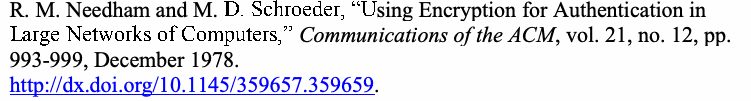
[NEED]
[NEED]
未レビュー訳原本PDFの抜粋画像
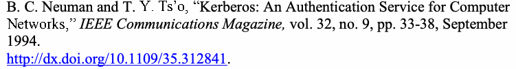
[NEUM]
[NEUM]
未レビュー訳[NISTIR 7966] T. Ylonen, K. Scarfone and M. Souppaya, Security of Automated Access
[NISTIR 7966] T. Ylonen、K. Scarfone、M. Souppaya、「Secure Shell（SSH）を用いた自動アクセス管理のセキュリティ」、
未レビュー訳Management Using Secure Shell (SSH), National Institute of Standards and Technology, (DRAFT) NISTIR 7966, August 2014, 43 pp. http://csrc.nist.gov/publications/PubsNISTIRs.html [accessed 12/23/14].
米国国立標準技術研究所、（草案）NISTIR 7966、2014年8月、43ページ。http://csrc.nist.gov/publications/PubsNISTIRs.html [2014年12月23日アクセス]。
未レビュー訳[OMB 04-04] Office of Management and Budget (OMB), E-Authentication Guidance for
[OMB 04-04] 行政管理予算局（OMB）、「連邦機関向け電子認証ガイダンス」、
未レビュー訳Federal Agencies, OMB Memorandum M-04-04, December 16, 2003, 17 pp. http://www.whitehouse.gov/sites/default/files/omb/assets/omb/memoranda/fy04/m 04-04.pdf [accessed 12/23/14].
OMB覚書M-04-04、2003年12月16日、17ページ。http://www.whitehouse.gov/sites/default/files/omb/assets/omb/memoranda/fy04/m 04-04.pdf [2014年12月23日アクセス]。
未レビュー訳[OTAR]
[OTAR]
未レビュー訳Project 25— Digital Radio Over-the-Air-Rekeying (OTAR) Protocol, TIA/EIA 102.AACA, April 2001.
Project 25—デジタル無線の無線鍵再設定（OTAR）プロトコル、TIA/EIA 102.AACA、2001年4月。
未レビュー訳[OTAR1]
[OTAR1]
未レビュー訳Project 25–Digital Radio Over-the-Air-Rekeying (OTAR) Protocol—Addendum 1—Key Management Security Requirements for Type 3 Block Encryption Algorithms, TIA/EIA 102.AACA-1, November 2002.
Project 25—デジタル無線の無線鍵再設定（OTAR）プロトコル—追補1—Type 3ブロック暗号アルゴリズムの鍵管理セキュリティ要件、TIA/EIA 102.AACA-1、2002年11月。
未レビュー訳[RFC 1034]
[RFC 1034]
未レビュー訳P. Mockapetris, Domain Names – Concepts and Facilities, Internet Engineering Task Force (IETF) RFC 1034, November 1987. http://www.ietf.org/rfc/rfc1034.txt [accessed 12/23/14].
P. Mockapetris、「ドメイン名—概念と機能」、Internet Engineering Task Force（IETF）RFC 1034、1987年11月。http://www.ietf.org/rfc/rfc1034.txt [2014年12月23日アクセス]。
未レビュー訳[RFC 1035]
[RFC 1035]
未レビュー訳P. Mockapetris, Domain Names – Implementation and Specification, Internet Engineering Task Force (IETF) RFC 1035, November 1987. http://www.ietf.org/rfc/rfc1035.txt [accessed 12/23/14].
P. Mockapetris、「ドメイン名—実装と仕様」、Internet Engineering Task Force（IETF）RFC 1035、1987年11月。http://www.ietf.org/rfc/rfc1035.txt [2014年12月23日アクセス]。
未レビュー訳[RFC 1510]
[RFC 1510]
未レビュー訳J. Kohl and C. Neuman, The Kerberos Network Authentication Service (V5), Internet Engineering Task Force (IETF) RFC 1510, September 1993. http://www.ietf.org/rfc/rfc1510.txt [accessed 12/23/14].
J. Kohl、C. Neuman、「Kerberosネットワーク認証サービス（V5）」、Internet Engineering Task Force（IETF）RFC 1510、1993年9月。http://www.ietf.org/rfc/rfc1510.txt [2014年12月23日アクセス]。
未レビュー訳[RFC 2045]
[RFC 2045]
未レビュー訳N. Freed and N. Borenstein, Multipurpose Internet Mail Extensions (MIME) Part One: Format of Internet Message Bodies, Internet Engineering Task Force (IETF) RFC 2045, November 1996. http://www.ietf.org/rfc/rfc2045.txt [accessed 12/23/14].
N. Freed、N. Borenstein、「Multipurpose Internet Mail Extensions（MIME）第1部：インターネットメッセージ本文の形式」、Internet Engineering Task Force（IETF）RFC 2045、1996年11月。http://www.ietf.org/rfc/rfc2045.txt [2014年12月23日アクセス]。
未レビュー訳[RFC 2046]
[RFC 2046]
未レビュー訳N. Freed and N. Borenstein, Multipurpose Internet Mail Extensions (MIME) Part 2: Media Types, Internet Engineering Task Force (IETF) RFC 2046, November 1996. http://www.ietf.org/rfc/rfc2046.txt [accessed 12/23/14].
N. Freed、N. Borenstein、「Multipurpose Internet Mail Extensions（MIME）第2部：メディアタイプ」、Internet Engineering Task Force（IETF）RFC 2046、1996年11月。http://www.ietf.org/rfc/rfc2046.txt [2014年12月23日アクセス]。
未レビュー訳[RFC 2047]
[RFC 2047]
未レビュー訳K. Moore, MIME (Multipurpose Internet Mail Extensions) Part Three: Message Header Extensions for Non-ASCII Text, Internet Engineering Task Force (IETF) RFC 2047, November 1996. http://www.ietf.org/rfc/rfc2047.txt [accessed 12/23/14].
K. Moore、「MIME（Multipurpose Internet Mail Extensions）第3部：非ASCIIテキストのメッセージヘッダー拡張」、Internet Engineering Task Force（IETF）RFC 2047、1996年11月。http://www.ietf.org/rfc/rfc2047.txt [2014年12月23日アクセス]。
未レビュー訳[RFC 2049]
[RFC 2049]
未レビュー訳N. Freed and N. Borenstein, Multipurpose Internet Mail Extensions (MIME) Part Five: Conformance Criteria and Examples, Internet Engineering Task Force (IETF) RFC 2049, November 1996. http://www.ietf.org/rfc/rfc2049.txt [accessed 12/23/14].
N. Freed、N. Borenstein、「Multipurpose Internet Mail Extensions（MIME）第5部：適合基準と例」、Internet Engineering Task Force（IETF）RFC 2049、1996年11月。http://www.ietf.org/rfc/rfc2049.txt [2014年12月23日アクセス]。
未レビュー訳[RFC 2119]
[RFC 2119]
未レビュー訳S. Bradner, Key words for use in RFCs to Indicate Requirement Levels, Internet Engineering Task Force (IETF) RFC 2119, March 1997. http://www.ietf.org/rfc/rfc2119.txt [accessed 12/23/14].
S. Bradner、「RFCで要件レベルを示すために用いるキーワード」、Internet Engineering Task Force（IETF）RFC 2119、1997年3月。http://www.ietf.org/rfc/rfc2119.txt [2014年12月23日アクセス]。
未レビュー訳[RFC 2246]
[RFC 2246]
未レビュー訳T. Dierks and C. Allen, The TLS Protocol Version 1.0, Internet Engineering Task Force (IETF) RFC 2246, January 1999 (obsoleted by RFC 4346). http://www.ietf.org/rfc/rfc2246.txt [accessed 12/23/14].
T. Dierks、C. Allen、「TLSプロトコル バージョン1.0」、Internet Engineering Task Force（IETF）RFC 2246、1999年1月（RFC 4346により廃止）。http://www.ietf.org/rfc/rfc2246.txt [2014年12月23日アクセス]。
未レビュー訳[RFC 2401]
[RFC 2401]
未レビュー訳S. Kent and R. Atkinson, Security Architecture for the Internet Protocol, Internet Engineering Task Force (IETF) RFC 2401, November 1998 (obsoleted by RFC 4301). http://www.ietf.org/rfc/rfc2401.txt [accessed 12/23/14].
S. Kent、R. Atkinson、「インターネットプロトコルのセキュリティアーキテクチャ」、Internet Engineering Task Force（IETF）RFC 2401、1998年11月（RFC 4301により廃止）。http://www.ietf.org/rfc/rfc2401.txt [2014年12月23日アクセス]。
未レビュー訳[RFC 2402]
[RFC 2402]
未レビュー訳S. Kent and R. Atkinson, IP Authentication Header, Internet Engineering Task Force (IETF) RFC 2402, November 1998 (obsoleted by RFC 4302 and RFC 4835). http://www.ietf.org/rfc/rfc2402.txt [accessed 12/23/14].
S. Kent、R. Atkinson、「IP認証ヘッダー」、Internet Engineering Task Force（IETF）RFC 2402、1998年11月（RFC 4302およびRFC 4835により廃止）。http://www.ietf.org/rfc/rfc2402.txt [2014年12月23日アクセス]。
未レビュー訳[RFC 2404]
[RFC 2404]
未レビュー訳C. Madson and R. Glenn, The Use of HMAC-SHA-1-96 within ESP and AH, Internet Engineering Task Force (IETF) RFC 2404, November 1998. http://www.ietf.org/rfc/rfc2404.txt [accessed 12/23/14].
C. Madson、R. Glenn、「ESPおよびAHにおけるHMAC-SHA-1-96の使用」、Internet Engineering Task Force（IETF）RFC 2404、1998年11月。http://www.ietf.org/rfc/rfc2404.txt [2014年12月23日アクセス]。
未レビュー訳[RFC 2405]
[RFC 2405]
未レビュー訳C. Madson and N. Doraswamy, The ESP DES-CBC Cipher Algorithm with Explicit IV, Internet Engineering Task Force (IETF) RFC 2405, November 1998. http://www.ietf.org/rfc/rfc2405.txt [accessed 12/23/14].
C. Madson、N. Doraswamy、「明示的IVを用いるESP DES-CBC暗号アルゴリズム」、Internet Engineering Task Force（IETF）RFC 2405、1998年11月。http://www.ietf.org/rfc/rfc2405.txt [2014年12月23日アクセス]。
未レビュー訳[RFC 2406]
[RFC 2406]
未レビュー訳S. Kent and R. Atkinson, IP Encapsulating Security Payload (ESP), Internet Engineering Task Force (IETF) RFC 2406, November 1998 (obsoleted by RFC 4303 and RFC 4835). http://www.ietf.org/rfc/rfc2406.txt [accessed 12/23/14].
S. Kent、R. Atkinson、「IPカプセル化セキュリティペイロード（ESP）」、Internet Engineering Task Force（IETF）RFC 2406、1998年11月（RFC 4303およびRFC 4835により廃止）。http://www.ietf.org/rfc/rfc2406.txt [2014年12月23日アクセス]。
未レビュー訳[RFC 2407]
[RFC 2407]
未レビュー訳D. Piper, The Internet IP Security Domain of Interpretation for ISAKMP, Internet Engineering Task Force (IETF) RFC 2407, November 1998 (obsoleted by RFC 5996). http://www.ietf.org/rfc/rfc2407.txt [accessed 12/23/14].
D. Piper、「ISAKMPのためのインターネットIPセキュリティドメイン解釈」、Internet Engineering Task Force（IETF）RFC 2407、1998年11月（RFC 5996により廃止）。http://www.ietf.org/rfc/rfc2407.txt [2014年12月23日アクセス]。
未レビュー訳[RFC 2408]
[RFC 2408]
未レビュー訳D. Maughan, M. Schertler, M. Schneider, and J. Turner, Internet Security Association and Key Management Protocol (ISAKMP), Internet Engineering Task Force (IETF) RFC 2408, November 1998 (obsoleted by RFC 5996). http://www.ietf.org/rfc/rfc2408.txt [accessed 12/23/14].
D. Maughan、M. Schertler、M. Schneider、J. Turner、「インターネットセキュリティアソシエーションおよび鍵管理プロトコル（ISAKMP）」、Internet Engineering Task Force（IETF）RFC 2408、1998年11月（RFC 5996により廃止）。http://www.ietf.org/rfc/rfc2408.txt [2014年12月23日アクセス]。
未レビュー訳[RFC 2409]
[RFC 2409]
未レビュー訳D. Harkins and D. Carrel, The Internet Key Exchange (IKE), Internet Engineering Task Force (IETF) RFC 2409, November 1998 (obsoleted by RFC 5996). http://www.ietf.org/rfc/rfc2409.txt [accessed 12/23/14].
D. Harkins、D. Carrel、「インターネット鍵交換（IKE）」、Internet Engineering Task Force（IETF）RFC 2409、1998年11月（RFC 5996により廃止）。http://www.ietf.org/rfc/rfc2409.txt [2014年12月23日アクセス]。
未レビュー訳[RFC 2410]
[RFC 2410]
未レビュー訳R. Glenn and S. Kent, The NULL Encryption Algorithm and its Use with IPsec, Internet Engineering Task Force (IETF) RFC 2410, November 1998. http://www.ietf.org/rfc/rfc2410.txt [accessed 12/23/14].
R. Glenn、S. Kent、「NULL暗号アルゴリズムとIPsecでの使用」、Internet Engineering Task Force（IETF）RFC 2410、1998年11月。http://www.ietf.org/rfc/rfc2410.txt [2014年12月23日アクセス]。
未レビュー訳[RFC 2451]
[RFC 2451]
未レビュー訳R. Pereira and R. Adams, The ESP CBC-Mode Cipher Algorithms, Internet Engineering Task Force (IETF) RFC 2451, November 1998. http://www.ietf.org/rfc/rfc2451.txt [accessed 12/23/14].
R. Pereira、R. Adams、「ESP CBCモード暗号アルゴリズム」、Internet Engineering Task Force（IETF）RFC 2451、1998年11月。http://www.ietf.org/rfc/rfc2451.txt [2014年12月23日アクセス]。
未レビュー訳[RFC 2631]
[RFC 2631]
未レビュー訳E. Rescorla, Diffie-Hellman Key Agreement Method, Internet Engineering Task Force (IETF) RFC 2631, June 1999. http://www.ietf.org/rfc/rfc2631.txt [accessed 12/23/14].
E. Rescorla、「Diffie-Hellman鍵共有方式」、Internet Engineering Task Force（IETF）RFC 2631、1999年6月。http://www.ietf.org/rfc/rfc2631.txt [2014年12月23日アクセス]。
未レビュー訳[RFC 2634]
[RFC 2634]
未レビュー訳P. Hoffman (ed.), Enhanced Security Services for S/MIME, Internet Engineering Task Force (IETF) RFC 2634, June 1999. http://www.ietf.org/rfc/rfc2634.txt [accessed 12/23/14].
P. Hoffman（編）、「S/MIMEの拡張セキュリティサービス」、Internet Engineering Task Force（IETF）RFC 2634、1999年6月。http://www.ietf.org/rfc/rfc2634.txt [2014年12月23日アクセス]。
未レビュー訳[RFC 3394]
[RFC 3394]
未レビュー訳J. Schaad and R. Housley, Advanced Encryption Standard (AES) Key Wrap Algorithm, Internet Engineering Task Force (IETF) RFC 3394, September 2002. http://www.ietf.org/rfc/rfc3394.txt [accessed 12/23/14].
J. Schaad、R. Housley、「Advanced Encryption Standard（AES）鍵ラップアルゴリズム」、Internet Engineering Task Force（IETF）RFC 3394、2002年9月。http://www.ietf.org/rfc/rfc3394.txt [2014年12月23日アクセス]。
未レビュー訳[RFC 3447]
[RFC 3447]
未レビュー訳J. Jonsson and B. Kaliski, Public-Key Cryptography Standards (PKCS) #1: RSA Cryptography Specifications Version 2.1, Internet Engineering Task Force (IETF) RFC 3447, February 2003. http://www.ietf.org/rfc/rfc3447.txt [accessed 12/23/14].
J. Jonsson、B. Kaliski、「公開鍵暗号規格（PKCS）#1：RSA暗号仕様 バージョン2.1」、Internet Engineering Task Force（IETF）RFC 3447、2003年2月。http://www.ietf.org/rfc/rfc3447.txt [2014年12月23日アクセス]。
未レビュー訳[RFC 3566]
[RFC 3566]
未レビュー訳S. Frankel and H. Herbert, The AES-XCBC-MAC-96 Algorithm and its Use with IPsec, Internet Engineering Task Force (IETF) RFC 3566, September 2003. http://www.ietf.org/rfc/rfc3566.txt [accessed 12/23/14].
S. Frankel、H. Herbert、「AES-XCBC-MAC-96アルゴリズムとIPsecでの使用」、Internet Engineering Task Force（IETF）RFC 3566、2003年9月。http://www.ietf.org/rfc/rfc3566.txt [2014年12月23日アクセス]。
未レビュー訳[RFC 3602]
[RFC 3602]
未レビュー訳S. Frankel, R. Glenn and S. Kelly, The AES-CBC Cipher Algorithm and its Use with IPsec, Internet Engineering Task Force (IETF) RFC 3602, September 2003. http://www.ietf.org/rfc/rfc3602.txt [accessed 12/23/14].
S. Frankel、R. Glenn、S. Kelly、「AES-CBC暗号アルゴリズムとIPsecでの使用」、Internet Engineering Task Force（IETF）RFC 3602、2003年9月。http://www.ietf.org/rfc/rfc3602.txt [2014年12月23日アクセス]。
未レビュー訳[RFC 3645]
[RFC 3645]
未レビュー訳S. Kwan, P. Garg, J. Gilroy, L. Esibov, J. Westhead and R. Hall, Generic Security Service Algorithm for Secret Key Transaction Authentication for DNS (GSS-TSIG), Internet Engineering Task Force (IETF) RFC 3645, October 2003. http://www.ietf.org/rfc/rfc3645.txt [accessed 12/23/14].
S. Kwan、P. Garg、J. Gilroy、L. Esibov、J. Westhead、R. Hall、「DNSの秘密鍵トランザクション認証用Generic Security Serviceアルゴリズム（GSS-TSIG）」、Internet Engineering Task Force（IETF）RFC 3645、2003年10月。http://www.ietf.org/rfc/rfc3645.txt [2014年12月23日アクセス]。
未レビュー訳[RFC 3686]
[RFC 3686]
未レビュー訳R. Housley, Using Advanced Encryption Standard (AES) Counter Mode with IPsec Encapsulating Security Payload (ESP), Internet Engineering Task Force (IETF) RFC 3686, January 2004. http://www.ietf.org/rfc/rfc3686.txt [accessed 12/23/14].
R. Housley、「IPsecカプセル化セキュリティペイロード（ESP）におけるAdvanced Encryption Standard（AES）カウンターモードの使用」、Internet Engineering Task Force（IETF）RFC 3686、2004年1月。http://www.ietf.org/rfc/rfc3686.txt [2014年12月23日アクセス]。
未レビュー訳[RFC 3962]
[RFC 3962]
未レビュー訳K. Raeburn, Advanced Encryption Standard (AES) Encryption for Kerberos 5, Internet Engineering Task Force (IETF) RFC 3962, February 2005. http://www.ietf.org/rfc/rfc3962.txt [accessed 12/23/14].
K. Raeburn、「Kerberos 5用Advanced Encryption Standard（AES）暗号化」、Internet Engineering Task Force（IETF）RFC 3962、2005年2月。http://www.ietf.org/rfc/rfc3962.txt [2014年12月23日アクセス]。
未レビュー訳[RFC 4033]
[RFC 4033]
未レビュー訳R. Arends, R. Austein, M. Larson, D. Massey and S. Rose, DNS Security Introduction and Requirements, Internet Engineering Task Force (IETF) RFC 4033, March 2005. http://www.ietf.org/rfc/rfc4033.txt [accessed 12/23/14].
R. Arends、R. Austein、M. Larson、D. Massey、S. Rose、「DNSセキュリティの概要と要件」、Internet Engineering Task Force（IETF）RFC 4033、2005年3月。http://www.ietf.org/rfc/rfc4033.txt [2014年12月23日アクセス]。
未レビュー訳[RFC 4034]
[RFC 4034]
未レビュー訳R. Arends, R. Austein, M. Larson, D. Massey and S. Rose, Resource Records for the DNS Security Extensions, Internet Engineering Task Force (IETF) RFC 4034, March 2005. http://www.ietf.org/rfc/rfc4034.txt [accessed 12/23/14].
R. Arends、R. Austein、M. Larson、D. Massey、S. Rose、「DNSセキュリティ拡張のためのリソースレコード」、Internet Engineering Task Force（IETF）RFC 4034、2005年3月。http://www.ietf.org/rfc/rfc4034.txt [2014年12月23日アクセス]。
未レビュー訳[RFC 4035]
[RFC 4035]
未レビュー訳R. Arends, R. Austein, M. Larson, D. Massey and S. Rose, Protocol Modifications for the DNS Security Extensions, Internet Engineering Task Force (IETF) RFC 4035, March 2005. http://www.ietf.org/rfc/rfc4035.txt [accessed 12/23/14].
R. Arends、R. Austein、M. Larson、D. Massey、S. Rose、「DNSセキュリティ拡張のためのプロトコル変更」、Internet Engineering Task Force（IETF）RFC 4035、2005年3月。http://www.ietf.org/rfc/rfc4035.txt [2014年12月23日アクセス]。
未レビュー訳[RFC 4106]
[RFC 4106]
未レビュー訳J. Viega and D. McGrew, The Use of Galois/Counter Mode (GCM) in IPsec Encapsulating Security Payload (ESP), Internet Engineering Task Force (IETF) RFC 4106, June 2005. http://www.ietf.org/rfc/rfc4106.txt [accessed 12/23/14].
J. Viega、D. McGrew、「IPsecカプセル化セキュリティペイロード（ESP）におけるGalois/Counter Mode（GCM）の使用」、Internet Engineering Task Force（IETF）RFC 4106、2005年6月。http://www.ietf.org/rfc/rfc4106.txt [2014年12月23日アクセス]。
未レビュー訳[RFC 4109]
[RFC 4109]
未レビュー訳P. Hoffman, Algorithms for Internet Key Exchange version 1 (IKEv1), Internet Engineering Task Force (IETF) RFC 4109, May 2005. http://www.ietf.org/rfc/rfc4109.txt [accessed 12/23/14].
P. Hoffman、「インターネット鍵交換バージョン1（IKEv1）のアルゴリズム」、Internet Engineering Task Force（IETF）RFC 4109、2005年5月。http://www.ietf.org/rfc/rfc4109.txt [2014年12月23日アクセス]。
未レビュー訳[RFC 4120]
[RFC 4120]
未レビュー訳C. Neuman, T. Yu, S. Hartman and K. Raeburn, The Kerberos Network Authentication Service (V5), Internet Engineering Task Force (IETF) RFC 4120, July 2005. http://www.ietf.org/rfc/rfc4120.txt [accessed 12/23/14].
C. Neuman、T. Yu、S. Hartman、K. Raeburn、「Kerberosネットワーク認証サービス（V5）」、Internet Engineering Task Force（IETF）RFC 4120、2005年7月。http://www.ietf.org/rfc/rfc4120.txt [2014年12月23日アクセス]。
未レビュー訳[RFC 4210]
[RFC 4210]
未レビュー訳C. Adams, S. Farrell, T. Kause and T. Mononen, Internet X.509 Public Key Infrastructure Certificate Management Protocol (CMP), Internet Engineering Task Force (IETF) RFC 4210, September 2005. http://www.ietf.org/rfc/rfc4210.txt [accessed 12/23/14].
C. Adams、S. Farrell、T. Kause、T. Mononen、「インターネットX.509公開鍵基盤証明書管理プロトコル（CMP）」、Internet Engineering Task Force（IETF）RFC 4210、2005年9月。http://www.ietf.org/rfc/rfc4210.txt [2014年12月23日アクセス]。
未レビュー訳[RFC 4251]
[RFC 4251]
未レビュー訳T. Ylonen and C. Lonvick (ed.), The Secure Shell (SSH) Protocol Architecture, Internet Engineering Task Force (IETF) RFC 4251, January 2006. http://www.ietf.org/rfc/rfc4251.txt [accessed 12/23/14].
T. Ylonen、C. Lonvick（編）、「Secure Shell（SSH）プロトコルアーキテクチャ」、Internet Engineering Task Force（IETF）RFC 4251、2006年1月。http://www.ietf.org/rfc/rfc4251.txt [2014年12月23日アクセス]。
未レビュー訳[RFC 4252]
[RFC 4252]
未レビュー訳T. Ylonen and C. Lonvick (ed.), The Secure Shell (SSH) Authentication Protocol, Internet Engineering Task Force (IETF) RFC 4252, January 2006. http://www.ietf.org/rfc/rfc4252.txt [accessed 12/23/14].
T. Ylonen、C. Lonvick（編）、「Secure Shell（SSH）認証プロトコル」、Internet Engineering Task Force（IETF）RFC 4252、2006年1月。http://www.ietf.org/rfc/rfc4252.txt [2014年12月23日アクセス]。
未レビュー訳[RFC 4253]
[RFC 4253]
未レビュー訳T. Ylonen and C. Lonvick (ed.), The Secure Shell (SSH) Transport Layer Protocol, Internet Engineering Task Force (IETF) RFC 4253, January 2006. http://www.ietf.org/rfc/rfc4253.txt [accessed 12/23/14].
T. Ylonen、C. Lonvick（編）、「Secure Shell（SSH）トランスポート層プロトコル」、Internet Engineering Task Force（IETF）RFC 4253、2006年1月。http://www.ietf.org/rfc/rfc4253.txt [2014年12月23日アクセス]。
未レビュー訳[RFC 4254]
[RFC 4254]
未レビュー訳T. Ylonen and C. Lonvick, The Secure Shell (SSH) Connection Protocol, Internet Engineering Task Force (IETF) RFC 4254, January 2006. http://www.ietf.org/rfc/rfc4254.txt [accessed 12/23/14].
T. Ylonen、C. Lonvick、「Secure Shell（SSH）接続プロトコル」、Internet Engineering Task Force（IETF）RFC 4254、2006年1月。http://www.ietf.org/rfc/rfc4254.txt [2014年12月23日アクセス]。
未レビュー訳[RFC 4255]
[RFC 4255]
未レビュー訳J. Schlyter and W. Griffin, Using DNS to Securely Publish Secure Shell (SSH) Key Fingerprints, Internet Engineering Task Force (IETF) RFC 4255, January 2006. http://www.ietf.org/rfc/rfc4255.txt [accessed 12/23/14].
J. Schlyter、W. Griffin、「Secure Shell（SSH）鍵フィンガープリントを安全に公開するためのDNSの使用」、Internet Engineering Task Force（IETF）RFC 4255、2006年1月。http://www.ietf.org/rfc/rfc4255.txt [2014年12月23日アクセス]。
未レビュー訳[RFC 4288]
[RFC 4288]
未レビュー訳N. Freed and J. Klensin, Media Type Specifications and Registration Procedures, Internet Engineering Task Force (IETF) RFC 4288, December 2005. http://www.ietf.org/rfc/rfc4288.txt [accessed 12/23/14].
N. Freed、J. Klensin、「メディアタイプ仕様および登録手順」、Internet Engineering Task Force（IETF）RFC 4288、2005年12月。http://www.ietf.org/rfc/rfc4288.txt [2014年12月23日アクセス]。
未レビュー訳[RFC 4289]
[RFC 4289]
未レビュー訳N. Freed and J. Klensin, Multipurpose Internet Mail Extensions (MIME) Part Four: Registration Procedures, Internet Engineering Task Force (IETF) RFC 4289, December 2005. http://www.ietf.org/rfc/rfc4289.txt [accessed 12/23/14].
N. Freed、J. Klensin、「Multipurpose Internet Mail Extensions（MIME）第4部：登録手順」、Internet Engineering Task Force（IETF）RFC 4289、2005年12月。http://www.ietf.org/rfc/rfc4289.txt [2014年12月23日アクセス]。
未レビュー訳[RFC 4301]
[RFC 4301]
未レビュー訳S. Kent and K. Seo, Security Architecture for the Internet Protocol, Internet Engineering Task Force (IETF) RFC 4301, December 2005. http://www.ietf.org/rfc/rfc4301.txt [accessed 12/23/14].
S. Kent、K. Seo、「インターネットプロトコルのセキュリティアーキテクチャ」、Internet Engineering Task Force（IETF）RFC 4301、2005年12月。http://www.ietf.org/rfc/rfc4301.txt [2014年12月23日アクセス]。
未レビュー訳[RFC 4302]
[RFC 4302]
未レビュー訳S. Kent, IP Authentication Header, Internet Engineering Task Force (IETF) RFC 4302, December 2005. http://www.ietf.org/rfc/rfc4302.txt [accessed 12/23/14].
S. Kent、「IP認証ヘッダー」、Internet Engineering Task Force（IETF）RFC 4302、2005年12月。http://www.ietf.org/rfc/rfc4302.txt [2014年12月23日アクセス]。
未レビュー訳[RFC 4303]
[RFC 4303]
未レビュー訳S. Kent, IP Encapsulating Security Payload (ESP), Internet Engineering Task Force (IETF) RFC 4303, December 2005. http://www.ietf.org/rfc/rfc4303.txt [accessed 12/23/14].
S. Kent、「IPカプセル化セキュリティペイロード（ESP）」、Internet Engineering Task Force（IETF）RFC 4303、2005年12月。http://www.ietf.org/rfc/rfc4303.txt [2014年12月23日アクセス]。
未レビュー訳[RFC 4307]
[RFC 4307]
未レビュー訳J. Schiller, Cryptographic Algorithms for Use in the Internet Key Exchange Version 2 (IKEv2), Internet Engineering Task Force (IETF) RFC 4307, December 2005. http://www.ietf.org/rfc/rfc4307.txt [accessed 12/23/14].
J. Schiller、「インターネット鍵交換バージョン2（IKEv2）で使用する暗号アルゴリズム」、Internet Engineering Task Force（IETF）RFC 4307、2005年12月。http://www.ietf.org/rfc/rfc4307.txt [2014年12月23日アクセス]。
未レビュー訳[RFC 4308]
[RFC 4308]
未レビュー訳P. Hoffman, Cryptographic Suites for IPsec, Internet Engineering Task Force (IETF) RFC 4308, December 2005. http://www.ietf.org/rfc/rfc4308.txt [accessed 12/23/14].
P. Hoffman、「IPsec用暗号スイート」、Internet Engineering Task Force（IETF）RFC 4308、2005年12月。http://www.ietf.org/rfc/rfc4308.txt [2014年12月23日アクセス]。
未レビュー訳[RFC 4309]
[RFC 4309]
未レビュー訳R. Housley, Using Advanced Encryption Standard (AES) CCM Mode with IPsec Encapsulating Security Payload (ESP), Internet Engineering Task Force (IETF) RFC 4309, December 2005. http://www.ietf.org/rfc/rfc4309.txt [accessed 12/23/14].
R. Housley、「IPsecカプセル化セキュリティペイロード（ESP）におけるAdvanced Encryption Standard（AES）CCMモードの使用」、Internet Engineering Task Force（IETF）RFC 4309、2005年12月。http://www.ietf.org/rfc/rfc4309.txt [2014年12月23日アクセス]。
未レビュー訳[RFC 4346]
[RFC 4346]
未レビュー訳T. Dierks and E. Rescorla, The Transport Layer Security (TLS) Protocol Version 1.1, Internet Engineering Task Force (IETF) RFC 4346, April 2006 (obsoleted by
T. Dierks、E. Rescorla、「トランスポート層セキュリティ（TLS）プロトコル バージョン1.1」、Internet Engineering Task Force（IETF）RFC 4346、2006年4月（後に
未レビュー訳RFC 5246).
RFC 5246により廃止）。
未レビュー訳http://www.ietf.org/rfc/rfc4346.txt [accessed 12/23/14].
http://www.ietf.org/rfc/rfc4346.txt [2014年12月23日アクセス]。
未レビュー訳[RFC 4419]
[RFC 4419]
未レビュー訳M. Friedl, N. Provos and W. Simpson, Diffie-Hellman Group Exchange for the Secure Shell (SSH) Transport Layer Protocol, Internet Engineering Task Force (IETF) RFC 4419, March 2006. http://www.ietf.org/rfc/rfc4419.txt [accessed 12/23/14].
M. Friedl、N. Provos、W. Simpson、「Secure Shell（SSH）トランスポート層プロトコル用Diffie-Hellmanグループ交換」、Internet Engineering Task Force（IETF）RFC 4419、2006年3月。http://www.ietf.org/rfc/rfc4419.txt [2014年12月23日アクセス]。
未レビュー訳[RFC 4434]
[RFC 4434]
未レビュー訳P. Hoffman, The AES-XCBC-PRF-128 Algorithm for the Internet Key Exchange Protocol (IKE), Internet Engineering Task Force (IETF) RFC 4434, February 2006. http://www.ietf.org/rfc/rfc4434.txt [accessed 12/23/14].
P. Hoffman、「インターネット鍵交換プロトコル（IKE）用AES-XCBC-PRF-128アルゴリズム」、Internet Engineering Task Force（IETF）RFC 4434、2006年2月。http://www.ietf.org/rfc/rfc4434.txt [2014年12月23日アクセス]。
未レビュー訳[RFC 4462]
[RFC 4462]
未レビュー訳J. Hutzelman, J. Salowey, J. Galbraith and V. Welch, Generic Security Service Application Program Interface (GSS-API) Authentication and Key Exchange for the Secure Shell (SSH) Protocol, Internet Engineering Task Force (IETF) RFC 4462, May 2006. http://www.ietf.org/rfc/rfc4462.txt [accessed 12/23/14].
J. Hutzelman、J. Salowey、J. Galbraith、V. Welch、「Secure Shell（SSH）プロトコル用Generic Security Serviceアプリケーションプログラムインターフェース（GSS-API）認証および鍵交換」、Internet Engineering Task Force（IETF）RFC 4462、2006年5月。http://www.ietf.org/rfc/rfc4462.txt [2014年12月23日アクセス]。
未レビュー訳[RFC 4511]
[RFC 4511]
未レビュー訳J. Sermersheim (ed.), Lightweight Directory Access Protocol (LDAP): The Protocol, Internet Engineering Task Force (IETF) RFC 4511, June 2006. http://www.ietf.org/rfc/rfc4511.txt [accessed 12/23/14].
J. Sermersheim（編）、「Lightweight Directory Access Protocol（LDAP）：プロトコル」、Internet Engineering Task Force（IETF）RFC 4511、2006年6月。http://www.ietf.org/rfc/rfc4511.txt [2014年12月23日アクセス]。
未レビュー訳[RFC 4512]
[RFC 4512]
未レビュー訳K. Zeilenga, Lightweight Directory Access Protocol (LDAP): Directory Information Models, Internet Engineering Task Force (IETF) RFC 4512, June 2006. http://www.ietf.org/rfc/rfc4512.txt [accessed 12/23/14].
K. Zeilenga、「Lightweight Directory Access Protocol（LDAP）：ディレクトリ情報モデル」、Internet Engineering Task Force（IETF）RFC 4512、2006年6月。http://www.ietf.org/rfc/rfc4512.txt [2014年12月23日アクセス]。
未レビュー訳[RFC 4543]
[RFC 4543]
未レビュー訳D. McGrew and J. Viega, The Use of Galois Message Authentication Code (GMAC) in IPsec ESP and AH, Internet Engineering Task Force (IETF) RFC 4543, May 2006. http://www.ietf.org/rfc/rfc4543.txt [accessed 12/23/14].
D. McGrew、J. Viega、「IPsec ESPおよびAHでのGalois Message Authentication Code（GMAC）の使用」、Internet Engineering Task Force（IETF）RFC 4543、2006年5月。http://www.ietf.org/rfc/rfc4543.txt [2014年12月23日アクセス]。
未レビュー訳[RFC 4556]
[RFC 4556]
未レビュー訳L. Zhu and B. Tung, Public Key Cryptography for Initial Authentication in Kerberos (PKINIT), Internet Engineering Task Force (IETF) RFC 4556, June 2006. http://www.ietf.org/rfc/rfc4556.txt [accessed 12/23/14].
L. Zhu、B. Tung、「Kerberosでの初期認証のための公開鍵暗号（PKINIT）」、Internet Engineering Task Force（IETF）RFC 4556、2006年6月。http://www.ietf.org/rfc/rfc4556.txt [2014年12月23日アクセス]。
未レビュー訳[RFC 4635]
[RFC 4635]
未レビュー訳D. Eastlake III, HMAC SHA TSIG Algorithm Identifiers, Internet Engineering Task Force (IETF) RFC 4635, August 2006. http://www.ietf.org/rfc/rfc4635.txt [accessed 12/23/14].
D. Eastlake III、「HMAC SHA TSIGアルゴリズム識別子」、Internet Engineering Task Force（IETF）RFC 4635、2006年8月。http://www.ietf.org/rfc/rfc4635.txt [2014年12月23日アクセス]。
未レビュー訳[RFC 4754]
[RFC 4754]
未レビュー訳D. Fu and J. Solinas, IKE and IKEv2 Authentication Using the Elliptic Curve Digital Signature Algorithm (ECDSA), Internet Engineering Task Force (IETF) RFC 4754, January 2007. http://www.ietf.org/rfc/rfc4754.txt [accessed 12/23/14].
D. Fu、J. Solinas、「ECDSAを用いるIKEおよびIKEv2認証」、Internet Engineering Task Force（IETF）RFC 4754、2007年1月。http://www.ietf.org/rfc/rfc4754.txt [2014年12月23日アクセス]。
未レビュー訳[RFC 4835]
[RFC 4835]
未レビュー訳V. Manral, Cryptographic Algorithm Implementation Requirements for Encapsulating Security Payload (ESP) and Authentication Header (AH), Internet Engineering Task Force (IETF) RFC 4835, April 2007. http://www.ietf.org/rfc/rfc4835.txt [accessed 12/23/14].
V. Manral、「カプセル化セキュリティペイロード（ESP）および認証ヘッダー（AH）の暗号アルゴリズム実装要件」、Internet Engineering Task Force（IETF）RFC 4835、2007年4月。http://www.ietf.org/rfc/rfc4835.txt [2014年12月23日アクセス]。
未レビュー訳[RFC 4868]
[RFC 4868]
未レビュー訳S. Kelly and S. Frankel, Using HMAC-SHA-256, HMAC-SHA-384, and HMAC-SHA-512 with IPsec, Internet Engineering Task Force (IETF) RFC 4868, May 2007. http://www.ietf.org/rfc/rfc4868.txt [accessed 12/23/14].
S. Kelly、S. Frankel、「IPsecにおけるHMAC-SHA-256、HMAC-SHA-384およびHMAC-SHA-512の使用」、Internet Engineering Task Force（IETF）RFC 4868、2007年5月。http://www.ietf.org/rfc/rfc4868.txt [2014年12月23日アクセス]。
未レビュー訳[RFC 5019]
[RFC 5019]
未レビュー訳A. Deacon and R. Hurst, The Lightweight Online Certificate Status Protocol (OCSP) Profile for High-Volume Environments, Internet Engineering Task Force (IETF) RFC 5019, September 2007. http://www.ietf.org/rfc/rfc5019.txt [accessed 12/23/14].
A. Deacon、R. Hurst、「大量処理環境向け軽量オンライン証明書状態プロトコル（OCSP）プロファイル」、Internet Engineering Task Force（IETF）RFC 5019、2007年9月。http://www.ietf.org/rfc/rfc5019.txt [2014年12月23日アクセス]。
未レビュー訳[RFC 5035]
[RFC 5035]
未レビュー訳P. Hoffman, Enhanced Security Services (ESS) Update: Adding CertID Algorithm Agility, Internet Engineering Task Force (IETF) RFC 5035, August 2007. http://www.ietf.org/rfc/rfc5035.txt [accessed 12/23/14].
P. Hoffman、「拡張セキュリティサービス（ESS）の更新：CertIDアルゴリズム選択性の追加」、Internet Engineering Task Force（IETF）RFC 5035、2007年8月。http://www.ietf.org/rfc/rfc5035.txt [2014年12月23日アクセス]。
未レビュー訳[RFC 5114]
[RFC 5114]
未レビュー訳M. Lepinski and S. Kent, Additional Diffie-Hellman Groups for Use with IETF Standards, Internet Engineering Task Force (IETF) RFC 5114, January 2008. http://www.ietf.org/rfc/rfc5114.txt [accessed 12/23/14].
M. Lepinski、S. Kent、「IETF標準で使用する追加Diffie-Hellmanグループ」、Internet Engineering Task Force（IETF）RFC 5114、2008年1月。http://www.ietf.org/rfc/rfc5114.txt [2014年12月23日アクセス]。
未レビュー訳[RFC 5155]
[RFC 5155]
未レビュー訳B. Laurie, G. Sisson, R. Arends and D. Blacka. DNS Security (DNSSEC) Hashed Authenticated Denial of Existence, Internet Engineering Task Force (IETF) RFC 5155, March 2008. http://www.ietf.org/rfc/rfc5155.txt [accessed 12/23/14].
B. Laurie、G. Sisson、R. Arends、D. Blacka、「DNSセキュリティ（DNSSEC）におけるハッシュ認証付き不存在証明」、Internet Engineering Task Force（IETF）RFC 5155、2008年3月。http://www.ietf.org/rfc/rfc5155.txt [2014年12月23日アクセス]。
未レビュー訳[RFC 5246]
[RFC 5246]
未レビュー訳T. Dierks and E. Rescorla, The Transport Layer Security (TLS) Protocol Version 1.2, Internet Engineering Task Force (IETF) RFC 5246, August 2008. http://www.ietf.org/rfc/rfc5246.txt [accessed 12/23/14].
T. Dierks、E. Rescorla、「トランスポート層セキュリティ（TLS）プロトコル バージョン1.2」、Internet Engineering Task Force（IETF）RFC 5246、2008年8月。http://www.ietf.org/rfc/rfc5246.txt [2014年12月23日アクセス]。
未レビュー訳[RFC 5272]
[RFC 5272]
未レビュー訳J. Schaad and M. Myers, Certificate Management over CMS (CMC), Internet Engineering Task Force (IETF) RFC 5272, June 2008. http://www.ietf.org/rfc/rfc5272.txt [accessed 12/23/14].
J. Schaad、M. Myers、「CMSによる証明書管理（CMC）」、Internet Engineering Task Force（IETF）RFC 5272、2008年6月。http://www.ietf.org/rfc/rfc5272.txt [2014年12月23日アクセス]。
未レビュー訳[RFC 5280]
[RFC 5280]
未レビュー訳D. Cooper, S. Santesson, S. Farrell, S. Boeyen, R. Housley, and W. Polk, Internet X.509 Public Key Infrastructure Certificate and Certificate Revocation List (CRL) Profile, Internet Engineering Task Force (IETF) RFC 5280, May 2008. http://www.ietf.org/rfc/rfc5280.txt [accessed 12/23/14].
D. Cooper、S. Santesson、S. Farrell、S. Boeyen、R. Housley、W. Polk、「インターネットX.509公開鍵基盤の証明書および証明書失効リスト（CRL）プロファイル」、Internet Engineering Task Force（IETF）RFC 5280、2008年5月。http://www.ietf.org/rfc/rfc5280.txt [2014年12月23日アクセス]。
未レビュー訳[RFC 5349]
[RFC 5349]
未レビュー訳L. Zhu, K. Jaganathan and K. Lauter, Elliptic Curve Cryptography (ECC) Support for Public Key Cryptography for Initial Authentication in Kerberos (PKINIT), Internet Engineering Task Force (IETF) RFC 5349, September 2009. http://www.ietf.org/rfc/rfc5349.txt [accessed 12/23/14].
L. Zhu、K. Jaganathan、K. Lauter、「Kerberosでの初期認証のための公開鍵暗号（PKINIT）に対する楕円曲線暗号（ECC）サポート」、Internet Engineering Task Force（IETF）RFC 5349、2009年9月。http://www.ietf.org/rfc/rfc5349.txt [2014年12月23日アクセス]。
未レビュー訳[RFC 5430]
[RFC 5430]
未レビュー訳M. Salter, E. Rescorla and R. Housley, Suite B Profile Transport Layer Security (TLS), Internet Engineering Task Force (IETF) RFC 5430, March 2009. http://www.ietf.org/rfc/rfc5430.txt [accessed 12/23/14].
M. Salter、E. Rescorla、R. Housley、「Suite Bプロファイル トランスポート層セキュリティ（TLS）」、Internet Engineering Task Force（IETF）RFC 5430、2009年3月。http://www.ietf.org/rfc/rfc5430.txt [2014年12月23日アクセス]。
未レビュー訳[RFC 5647]
[RFC 5647]
未レビュー訳K. Igoe and J. Solinas, AES Galois Counter Mode for the Secure Shell Transport Layer Protocol, Internet Engineering Task Force (IETF) RFC 5647, August, 2009. http://www.ietf.org/rfc/rfc5647.txt [accessed 12/23/14].
K. Igoe、J. Solinas、「Secure Shellトランスポート層プロトコル用AES Galoisカウンターモード」、Internet Engineering Task Force（IETF）RFC 5647、2009年8月。http://www.ietf.org/rfc/rfc5647.txt [2014年12月23日アクセス]。
未レビュー訳[RFC 5652]
[RFC 5652]
未レビュー訳R. Housley, Cryptographic Message Syntax (CMS), Internet Engineering Task Force (IETF) RFC 5652, September 2009. http://www.ietf.org/rfc/rfc5652.txt [accessed 12/23/14].
R. Housley、「暗号メッセージ構文（CMS）」、Internet Engineering Task Force（IETF）RFC 5652、2009年9月。http://www.ietf.org/rfc/rfc5652.txt [2014年12月23日アクセス]。
未レビュー訳[RFC 5656]
[RFC 5656]
未レビュー訳D. Stebila and J. Green, Elliptic Curve Algorithm Integration in the Secure Shell Transport Layer, Internet Engineering Task Force (IETF) RFC 5656, December 2009. http://www.ietf.org/rfc/rfc5656.txt [accessed 12/23/14].
D. Stebila、J. Green、「Secure Shellトランスポート層への楕円曲線アルゴリズムの統合」、Internet Engineering Task Force（IETF）RFC 5656、2009年12月。http://www.ietf.org/rfc/rfc5656.txt [2014年12月23日アクセス]。
未レビュー訳[RFC 5751]
[RFC 5751]
未レビュー訳B. Ramsdell and S. Turner, Secure/Multipurpose Internet Mail Extensions (S/MIME) Version 3.2 Message Specification”, Internet Engineering Task Force (IETF) RFC 5751, January 2010. http://www.ietf.org/rfc/rfc5751.txt [accessed 12/23/14].
B. Ramsdell、S. Turner、「Secure/Multipurpose Internet Mail Extensions（S/MIME）バージョン3.2メッセージ仕様」、Internet Engineering Task Force（IETF）RFC 5751、2010年1月。http://www.ietf.org/rfc/rfc5751.txt [2014年12月23日アクセス]。
未レビュー訳[RFC 5903]
[RFC 5903]
未レビュー訳D. Fu and J. Solinas, Elliptic Curve Groups modulo a Prime (ECP Groups) for IKE and IKEv2, Internet Engineering Task Force (IETF) RFC 5903, June 2010. http://www.ietf.org/rfc/rfc5903.txt [accessed 12/23/14].
D. Fu、J. Solinas、「IKEおよびIKEv2用素数を法とする楕円曲線群（ECP群）」、Internet Engineering Task Force（IETF）RFC 5903、2010年6月。http://www.ietf.org/rfc/rfc5903.txt [2014年12月23日アクセス]。
未レビュー訳[RFC 5996]
[RFC 5996]
未レビュー訳C. Kaufman, P. Hoffman, Y. Nir and P. Eronen, Internet Key Exchange Protocol Version 2 (IKEv2), Internet Engineering Task Force (IETF) RFC 5996, September 2010. http://www.ietf.org/rfc/rfc5996.txt [accessed 12/23/14].
C. Kaufman、P. Hoffman、Y. Nir、P. Eronen、「インターネット鍵交換プロトコル バージョン2（IKEv2）」、Internet Engineering Task Force（IETF）RFC 5996、2010年9月。http://www.ietf.org/rfc/rfc5996.txt [2014年12月23日アクセス]。
未レビュー訳[RFC 6113]
[RFC 6113]
未レビュー訳S. Hartman and L. Zhu, A Generalized Framework for Kerberos Pre-Authentication, Internet Engineering Task Force (IETF) RFC 6113, April 2011. http://www.ietf.org/rfc/rfc6113.txt [accessed 12/23/14].
S. Hartman、L. Zhu、「Kerberos事前認証のための一般化フレームワーク」、Internet Engineering Task Force（IETF）RFC 6113、2011年4月。http://www.ietf.org/rfc/rfc6113.txt [2014年12月23日アクセス]。
未レビュー訳[RFC 6187]
[RFC 6187]
未レビュー訳K. Igoe and D. Stebila, X.509v3 Certificates for Secure Shell Authentication, Internet Engineering Task Force (IETF) RFC 6187, March 2011. http://www.ietf.org/rfc/rfc6187.txt [accessed 12/23/14].
K. Igoe、D. Stebila、「Secure Shell認証用X.509v3証明書」、Internet Engineering Task Force（IETF）RFC 6187、2011年3月。http://www.ietf.org/rfc/rfc6187.txt [2014年12月23日アクセス]。
未レビュー訳[RFC 6239]
[RFC 6239]
未レビュー訳K. Igoe, Suite B Cryptographic Suites for Secure Shell (SSH), Internet Engineering Task Force (IETF) RFC 6239, May 2011. http://www.ietf.org/rfc/rfc6239.txt [accessed 12/23/14].
K. Igoe、「Secure Shell（SSH）用Suite B暗号スイート」、Internet Engineering Task Force（IETF）RFC 6239、2011年5月。http://www.ietf.org/rfc/rfc6239.txt [2014年12月23日アクセス]。
未レビュー訳[RFC 6251]
[RFC 6251]
未レビュー訳S. Josefsson, Using Kerberos Version 5 over the Transport Layer Security (TLS) Protocol, Internet Engineering Task Force (IETF) RFC 6251, May 2011. http://www.ietf.org/rfc/rfc6251.txt [accessed 12/23/14].
S. Josefsson、「トランスポート層セキュリティ（TLS）プロトコル上でのKerberosバージョン5の使用」、Internet Engineering Task Force（IETF）RFC 6251、2011年5月。http://www.ietf.org/rfc/rfc6251.txt [2014年12月23日アクセス]。
未レビュー訳[RFC 6318]
[RFC 6318]
未レビュー訳R. Housley and J. Solinas, Suite B in Secure/Multipurpose Internet Mail Extensions (S/MIME), Internet Engineering Task Force (IETF) RFC 6318, June 2011. http://www.ietf.org/rfc/rfc6318.txt [accessed 12/23/14].
R. Housley、J. Solinas、「Secure/Multipurpose Internet Mail Extensions（S/MIME）におけるSuite B」、Internet Engineering Task Force（IETF）RFC 6318、2011年6月。http://www.ietf.org/rfc/rfc6318.txt [2014年12月23日アクセス]。
未レビュー訳[RFC 6379]
[RFC 6379]
未レビュー訳L. Law and J. Solinas, Suite B Cryptographic Suites for IPsec, Internet Engineering Task Force (IETF) RFC 6379, October 2011. http://www.ietf.org/rfc/rfc6379.txt [accessed 12/23/14].
L. Law、J. Solinas、「IPsec用Suite B暗号スイート」、Internet Engineering Task Force（IETF）RFC 6379、2011年10月。http://www.ietf.org/rfc/rfc6379.txt [2014年12月23日アクセス]。
未レビュー訳[RFC 6605]
[RFC 6605]
未レビュー訳P. Hoffman and W.C.A. Wijngaards, Elliptic Curve Digital Signature Algorithm (DSA) for DNNSEC, Internet Engineering Task Force (IETF) RFC 6605, April 2012. http://www.ietf.org/rfc/rfc6605.txt [accessed 12/23/14].
P. Hoffman、W.C.A. Wijngaards、「DNSSEC用楕円曲線デジタル署名アルゴリズム（DSA）」、Internet Engineering Task Force（IETF）RFC 6605、2012年4月。http://www.ietf.org/rfc/rfc6605.txt [2014年12月23日アクセス]。
未レビュー訳[RFC 6649]
[RFC 6649]
未レビュー訳L. H. Astrand and T. Yu, Deprecate DES, RC4-HMAC-EXP, and Other Weak Cryptographic Algorithms in Kerberos, Internet Engineering Task Force (IETF) RFC 6649, July 2012. http://www.ietf.org/rfc/rfc6649.txt [accessed 12/23/14].
L. H. Astrand、T. Yu、「KerberosにおけるDES、RC4-HMAC-EXPおよびその他の弱い暗号アルゴリズムの非推奨化」、Internet Engineering Task Force（IETF）RFC 6649、2012年7月。http://www.ietf.org/rfc/rfc6649.txt [2014年12月23日アクセス]。
未レビュー訳[RFC 6944]
[RFC 6944]
未レビュー訳S. Rose, Applicability Statement: DNS Security (DNSSEC) DNSKEY Algorithm Implementation Status, Internet Engineering Task Force (IETF) RFC 6944, April 2013. http://www.ietf.org/rfc/rfc6944.txt [accessed 12/23/14].
S. Rose、「適用性声明：DNSセキュリティ（DNSSEC）DNSKEYアルゴリズム実装状況」、Internet Engineering Task Force（IETF）RFC 6944、2013年4月。http://www.ietf.org/rfc/rfc6944.txt [2014年12月23日アクセス]。
未レビュー訳[RFC 6960]
[RFC 6960]
未レビュー訳S. Santesson, M. Myers, R. Ankney, A. Malpani, S. Galperin and C. Adams, X.509 Internet Public Key Infrastructure Online Certificate Status Protocol – OCSP, Internet Engineering Task Force (IETF) RFC 6960, June 2013. http://www.ietf.org/rfc/rfc6960.txt [accessed 12/23/14].
S. Santesson、M. Myers、R. Ankney、A. Malpani、S. Galperin、C. Adams、「X.509インターネット公開鍵基盤オンライン証明書状態プロトコル（OCSP）」、Internet Engineering Task Force（IETF）RFC 6960、2013年6月。http://www.ietf.org/rfc/rfc6960.txt [2014年12月23日アクセス]。
未レビュー訳[RFC 7030]
[RFC 7030]
未レビュー訳M. Pritikin, P. Yee and D. Harkins (eds.), Enrollment over Secure Transport, Internet Engineering Task Force (IETF) RFC 7030, October 2013. http://www.ietf.org/rfc/rfc7030.txt [accessed 12/23/14].
M. Pritikin、P. Yee、D. Harkins（編）、「Secure Transportによる登録」、Internet Engineering Task Force（IETF）RFC 7030、2013年10月。http://www.ietf.org/rfc/rfc7030.txt [2014年12月23日アクセス]。
未レビュー訳[RFC 7321]
[RFC 7321]
未レビュー訳D. McGrew and P. Hoffman, Cryptographic Algorithm Implementation Requirements and Usage Guidance for Encapsulating Security Payload (ESP) and Authentication Header (AH), Internet Engineering Task Force (IETF) RFC 7321, August 2014. http://www.ietf.org/rfc/rfc7321.txt [accessed 12/23/14].
D. McGrew、P. Hoffman、「カプセル化セキュリティペイロード（ESP）および認証ヘッダー（AH）の暗号アルゴリズム実装要件と使用ガイダンス」、Internet Engineering Task Force（IETF）RFC 7321、2014年8月。http://www.ietf.org/rfc/rfc7321.txt [2014年12月23日アクセス]。
未レビュー訳[SEC1]
[SEC1]
未レビュー訳Certicom Research, SEC1: Elliptic Curve Cryptography, Standards for Efficient Cryptography Group, version 2.0, May 21, 2009. http://www.secg.org/sec1-v2.pdf [accessed 12/23/14].
Certicom Research、「SEC1：楕円曲線暗号」、Standards for Efficient Cryptography Group、バージョン2.0、2009年5月21日。http://www.secg.org/sec1-v2.pdf [2014年12月23日アクセス]。
未レビュー訳[SP 500-267] D. Montgomery, S. Nightingale, S. Frankel and M. Carson, A Profile for IPv6 in the U.S. Government - Version 1.0, National Institute of Standards and Technology, NIST Special Publication 500-267, July 2008, 84 pp.
[SP 500-267] D. Montgomery、S. Nightingale、S. Frankel、M. Carson、「米国政府におけるIPv6プロファイル—バージョン1.0」、米国国立標準技術研究所、NIST Special Publication 500-267、2008年7月、84ページ。
未レビュー訳http://www.nist.gov/manuscript-publication-search.cfm?pub_id=900150 [accessed 12/23/14].
http://www.nist.gov/manuscript-publication-search.cfm?pub_id=900150 [2014年12月23日アクセス]。
未レビュー訳[SP 800-32]
[SP 800-32]
未レビュー訳D. R. Kuhn, V. C. Hu, W. T. Polk and S.-j. Chang, Introduction to Public Key Technology and the Federal PKI Infrastructure, National Institute of Standards and Technology, NIST Special Publication 800-32, February 26, 2001, 54 pp. http://csrc.nist.gov/publications/nistpubs/800-32/sp800-32.pdf [accessed 12/23/14].
D. R. Kuhn、V. C. Hu、W. T. Polk、S.-j. Chang、「公開鍵技術および連邦PKI基盤の紹介」、米国国立標準技術研究所、NIST Special Publication 800-32、2001年2月26日、54ページ。http://csrc.nist.gov/publications/nistpubs/800-32/sp800-32.pdf [2014年12月23日アクセス]。
未レビュー訳[SP 800-38A] M. Dworkin, Recommendations for Block Cipher Modes of Operation: Methods
[SP 800-38A] M. Dworkin、「ブロック暗号動作モードに関する推奨事項：方式
未レビュー訳and Techniques, National Institute of Standards and Technology, NIST Special Publication 800-38A 2001 Edition, December 2001, 66 pp. http://csrc.nist.gov/publications/nistpubs/800-32/sp800-32.pdf [accessed 12/23/14].
および技法」、米国国立標準技術研究所、NIST Special Publication 800-38A 2001 Edition、2001年12月、66ページ。http://csrc.nist.gov/publications/nistpubs/800-32/sp800-32.pdf [2014年12月23日アクセス]。
未レビュー訳[SP 800-49]
[SP 800-49]
未レビュー訳C. M. Chernick, Federal S/MIME V3 Client Profile, National Institute of Standards and Technology, NIST Special Publication 800-49, November 2002, 27 pp. http://csrc.nist.gov/publications/nistpubs/800-49/sp800-49.pdf [accessed 12/23/14].
C. M. Chernick、「連邦政府S/MIME V3クライアントプロファイル」、米国国立標準技術研究所、NIST Special Publication 800-49、2002年11月、27ページ。http://csrc.nist.gov/publications/nistpubs/800-49/sp800-49.pdf [2014年12月23日アクセス]。
未レビュー訳[SP 800-52]
[SP 800-52]
未レビュー訳T. Polk, K. McKay and S. Chokhani, Guidelines for the Selection, Configuration and Use of Transport Layer Security (TLS) Implementations, National Institute of Standards and Technology, NIST Special Publication 800-52 Revision 1, April 2014, 67 pp. http://dx.doi.org/10.6028/NIST.SP.800-52r1.
T. Polk、K. McKay、S. Chokhani、「Transport Layer Security（TLS）実装の選択、構成および使用に関するガイドライン」、米国国立標準技術研究所、NIST Special Publication 800-52 Revision 1、2014年4月、67ページ。http://dx.doi.org/10.6028/NIST.SP.800-52r1.
未レビュー訳[SP 800-56A] E. Barker, L. Chen, A. Roginsky and M. Smid, Recommendation for Pair-Wise
[SP 800-56A] E. Barker、L. Chen、A. Roginsky、M. Smid、「離散対数暗号を用いるペアワイズ
未レビュー訳Key Establishment Schemes Using Discrete Logarithm Cryptography, National Institute of Standards and Technology, NIST Special Publication 800-56A Revision 2, May 2013, 138 pp. http://dx.doi.org/10.6028/NIST.SP.800-56Ar2.
鍵確立方式に関する推奨事項」、米国国立標準技術研究所、NIST Special Publication 800-56A Revision 2、2013年5月、138ページ。http://dx.doi.org/10.6028/NIST.SP.800-56Ar2.
未レビュー訳[SP 800-56B] E. Barker, L. Chen and D. Moody, Recommendation for Pair-Wise Key
[SP 800-56B] E. Barker、L. Chen、D. Moody、「整数因数分解暗号を用いるペアワイズ鍵
未レビュー訳Establishment Schemes Using Integer Factorization Cryptography, National Institute of Standards and Technology, NIST Special Publication 800-56B Revision 1, September 2014, 131 pp. http://dx.doi.org/10.6028/NIST.SP.800-56Br1.
確立方式に関する推奨事項」、米国国立標準技術研究所、NIST Special Publication 800-56B Revision 1、2014年9月、131ページ。http://dx.doi.org/10.6028/NIST.SP.800-56Br1.
未レビュー訳[SP 800-57 Part 1] E. Barker, W. Barker, W. Burr, W. Polk and M. Smid, Recommendation for Key
[SP 800-57 Part 1] E. Barker、W. Barker、W. Burr、W. Polk、M. Smid、「鍵管理に関する推奨事項—第1部：一般
未レビュー訳Management – Part 1: General, National Institute of Standards and Technology, NIST Special Publication 800-57 Part 1 Revision 3, July 2012, 147 pp. http://csrc.nist.gov/publications/nistpubs/800-57/sp800-57_part1_rev3_general.pdf [accessed 12/23/14].
」、米国国立標準技術研究所、NIST Special Publication 800-57 Part 1 Revision 3、2012年7月、147ページ。http://csrc.nist.gov/publications/nistpubs/800-57/sp800-57_part1_rev3_general.pdf [2014年12月23日アクセス]。
未レビュー訳[SP 800-67]
[SP 800-67]
未レビュー訳W. C. Barker and E. Barker, Recommendation for the Triple Data Encryption Algorithm (TDEA) Block Cipher, National Institute of Standards and Technology, NIST Special Publication 800-67 Revision 1, January 2012, 34 pp. http://csrc.nist.gov/publications/nistpubs/800-67-Rev1/SP-800-67-Rev1.pdf [accessed 12/23/14].
W. C. Barker、E. Barker、「トリプルデータ暗号化アルゴリズム（TDEA）ブロック暗号に関する推奨事項」、米国国立標準技術研究所、NIST Special Publication 800-67 Revision 1、2012年1月、34ページ。http://csrc.nist.gov/publications/nistpubs/800-67-Rev1/SP-800-67-Rev1.pdf [2014年12月23日アクセス]。
未レビュー訳[SP 800-77]
[SP 800-77]
未レビュー訳S. Frankel, K. Kent, R. Lewkowski, A. D. Orebaugh, R. W. Ritchey and S. R. Shama, Guide to IPsec VPNs, National Institute of Standards and Technology, NIST Special Publication 800-77, December 2005, 126 pp. http://csrc.nist.gov/publications/nistpubs/800-77/sp800-77.pdf [accessed 12/23/14].
S. Frankel、K. Kent、R. Lewkowski、A. D. Orebaugh、R. W. Ritchey、S. R. Shama、「IPsec VPNガイド」、米国国立標準技術研究所、NIST Special Publication 800-77、2005年12月、126ページ。http://csrc.nist.gov/publications/nistpubs/800-77/sp800-77.pdf [2014年12月23日アクセス]。
未レビュー訳[SP 800-81]
[SP 800-81]
未レビュー訳R. Chandramouli and S. Rose, Secure Domain Name System (DNS) Deployment Guide, National Institute of Standards and Technology, NIST Special Publication 800-81-2, September 2013, 130 pp. http://dx.doi.org/10.6028/NIST.SP.800-81-2.
R. Chandramouli、S. Rose、「安全なドメインネームシステム（DNS）導入ガイド」、米国国立標準技術研究所、NIST Special Publication 800-81-2、2013年9月、130ページ。http://dx.doi.org/10.6028/NIST.SP.800-81-2.
未レビュー訳[SP 800-89]
[SP 800-89]
未レビュー訳E. Barker, Recommendation for Obtaining Assurances for Digital Signature Applications, National Institute of Standards and Technology, NIST Special Publication 800-89, November 2006, 38 pp. http://csrc.nist.gov/publications/nistpubs/800-89/SP-800-89_November2006.pdf [accessed 12/23/14].
E. Barker、「デジタル署名アプリケーションの保証取得に関する推奨事項」、米国国立標準技術研究所、NIST Special Publication 800-89、2006年11月、38ページ。http://csrc.nist.gov/publications/nistpubs/800-89/SP-800-89_November2006.pdf [2014年12月23日アクセス]。
未レビュー訳[SP 800-90A] E. Barker and J. Kelsey, Recommendation for Random Number Generation Using
[SP 800-90A] E. Barker、J. Kelsey、「決定論的乱数ビット生成器を用いる乱数生成の
未レビュー訳Deterministic Random Bit Generators, National Institute of Standards and Technology, NIST Special Publication (DRAFT) 800-90A, November 2014, 112 pp. http://csrc.nist.gov/publications/PubsSPs.html [accessed 12/23/14].
推奨事項」、米国国立標準技術研究所、NIST Special Publication（草案）800-90A、2014年11月、112ページ。http://csrc.nist.gov/publications/PubsSPs.html [2014年12月23日アクセス]。
未レビュー訳[SP 800-90B] E. Barker and J. Kelsey, Recommendation for the Entropy Sources Used for
[SP 800-90B] E. Barker、J. Kelsey、「乱数ビット生成に用いるエントロピー源に関する
未レビュー訳Random Bit Generation, National Institute of Standards and Technology, NIST Special Publication (DRAFT) 800-90B, August 2012 [September 2013], 78 pp. http://csrc.nist.gov/publications/PubsSPs.html [accessed 12/23/14].
推奨事項」、米国国立標準技術研究所、NIST Special Publication（草案）800-90B、2012年8月［2013年9月］、78ページ。http://csrc.nist.gov/publications/PubsSPs.html [2014年12月23日アクセス]。
未レビュー訳[SP 800-90C] E. Barker and J. Kelsey, Recommendation for Random Bit Generator (RBG)
[SP 800-90C] E. Barker、J. Kelsey、「乱数ビット生成器（RBG）構成に関する
未レビュー訳Constructions, National Institute of Standards and Technology, NIST Special Publication (DRAFT) 800-90C, August 2012 [September 2013], 50 pp. http://csrc.nist.gov/publications/PubsSPs.html [accessed 12/23/14].
推奨事項」、米国国立標準技術研究所、NIST Special Publication（草案）800-90C、2012年8月［2013年9月］、50ページ。http://csrc.nist.gov/publications/PubsSPs.html [2014年12月23日アクセス]。
未レビュー訳[SP 800-118] K. Scarfone and M. Souppaya, Guide to Enterprise Password Management,
[SP 800-118] K. Scarfone、M. Souppaya、「企業向けパスワード管理ガイド」、
未レビュー訳National Institute of Standards and Technology, NIST Special Publication (DRAFT) 800-118, April 2009, 38 pp. http://csrc.nist.gov/publications/PubsSPs.html [accessed 12/23/14].
米国国立標準技術研究所、NIST Special Publication（草案）800-118、2009年4月、38ページ。http://csrc.nist.gov/publications/PubsSPs.html [2014年12月23日アクセス]。
未レビュー訳[SP 800-131A] E. Barker and A. Roginsky, Transitions: Recommendation for Transitioning the
[SP 800-131A] E. Barker、A. Roginsky、「移行：暗号アルゴリズムおよび鍵長の使用移行に関する
未レビュー訳Use of Cryptographic Algorithms and Key Lengths, National Institute of Standards and Technology, NIST Special Publication 800-131A, January 2011, 27 pp. http://csrc.nist.gov/publications/nistpubs/800-131A/sp800-131A.pdf [accessed 12/23/14].
推奨事項」、米国国立標準技術研究所、NIST Special Publication 800-131A、2011年1月、27ページ。http://csrc.nist.gov/publications/nistpubs/800-131A/sp800-131A.pdf [2014年12月23日アクセス]。
未レビュー訳[SP 800-132] M. S. Turan, E. Barker, W. Burr and L. Chen, Recommendation for Password-
[SP 800-132] M. S. Turan、E. Barker、W. Burr、L. Chen、「パスワードベース鍵導出に関する推奨事項—
未レビュー訳Based Key Derivation, Part 1: Storage Applications, National Institute of Standards and Technology, NIST Special Publication 800-132, December 2010, 18 pp. http://csrc.nist.gov/publications/nistpubs/800-132/nist-sp800-132.pdf [accessed 12/23/14].
第1部：ストレージアプリケーション」、米国国立標準技術研究所、NIST Special Publication 800-132、2010年12月、18ページ。http://csrc.nist.gov/publications/nistpubs/800-132/nist-sp800-132.pdf [2014年12月23日アクセス]。
未レビュー訳[SP 800-135] Q. Dang, Recommendation for Existing Application-Specific Key Derivation
[SP 800-135] Q. Dang、「既存アプリケーション固有鍵導出関数に関する
未レビュー訳Functions, National Institute of Standards and Technology, NIST Special Publication 800-135 Revision 1, December 2011, 23 pp. http://csrc.nist.gov/publications/nistpubs/800-135-rev1/sp800-135-rev1.pdf [accessed 12/23/14].
推奨事項」、米国国立標準技術研究所、NIST Special Publication 800-135 Revision 1、2011年12月、23ページ。http://csrc.nist.gov/publications/nistpubs/800-135-rev1/sp800-135-rev1.pdf [2014年12月23日アクセス]。
未レビュー訳[TPM]
[TPM]
未レビュー訳Trusted Computing Group, TPM Main Specification Version 1.2, Revision 103 [Parts 1 (Design Principles), 2 (TPM Structures) and 3 (Commands)], July 9, 2007. http://www.trustedcomputinggroup.org/resources/tpm_main_specification [accessed 12/23/14].
Trusted Computing Group、「TPM Main Specification Version 1.2, Revision 103［第1部（設計原則）、第2部（TPM構造）、第3部（コマンド）］」、2007年7月9日。http://www.trustedcomputinggroup.org/resources/tpm_main_specification [2014年12月23日アクセス]。
未レビュー訳[X9.62]
[X9.62]
未レビュー訳American National Standards Institute, Public Key Cryptography for the Financial Services Industry: the Elliptic Curve Digital Signature Algorithm (ECDSA), ANSI X9.62:2005, November 2005.
米国規格協会、「金融サービス業向け公開鍵暗号：楕円曲線デジタル署名アルゴリズム（ECDSA）」、ANSI X9.62:2005、2005年11月。
未レビュー訳[X11]
[X11]
未レビュー訳X.Org Foundation, Documentation for the X Window System Version 11 Release 7.6 (X11R7.6), December 2010. http://www.x.org/releases/X11R7.6/doc/index.html [accessed 12/23/14].
X.Org Foundation、「X Window System Version 11 Release 7.6（X11R7.6）文書」、2010年12月。http://www.x.org/releases/X11R7.6/doc/index.html [2014年12月23日アクセス]。
未レビュー訳[X.509 Path]
[X.509 Path]
未レビュー訳D. Cooper and W. T. Polk, NIST Recommendation for X.509 Path Validation, Version 0.5, Draft Special Publication 800-XXX, May 3, 2004, 28 pp. http://csrc.nist.gov/groups/ST/crypto_apps_infra/documents/NIST_Recommendati on_for_X509_PVMs.pdf [accessed 12/17/14].
D. Cooper、W. T. Polk、「X.509パス検証に関するNIST推奨事項」、バージョン0.5、Draft Special Publication 800-XXX、2004年5月3日、28ページ。http://csrc.nist.gov/groups/ST/crypto_apps_infra/documents/NIST_Recommendati on_for_X509_PVMs.pdf [2014年12月17日アクセス]。
未レビュー訳Appendix E: Revision Changes
付録E：改訂内容
This revision updates cryptographic requirements for the protocols and applications in the document so that the required security strengths as specified in [SP 800-131A] can be achieved. This revision also adds the security-related updates from the protocols addressed in the document. In addition, this revision adds a new section for Secure Shell (SSH). Specific changes in this revision include the following.
本改訂では、[SP 800-131A]に規定される必要なセキュリティ強度を達成できるよう、本書で扱うプロトコルおよびアプリケーションの暗号要件を更新した。また、本書で扱うプロトコルに関するセキュリティ上の更新内容を追加した。さらに、Secure Shell（SSH）の新しい節を追加した。本改訂の主な変更点は次のとおりである。
Section 2: 1) Additional clarification about the recommended algorithms and key sizes for digital signature and key establishment certificates has been added. 2) 1024-bit RSA and DSA are no longer approved for generating digital signatures
第2節：1) デジタル署名証明書および鍵確立証明書の推奨アルゴリズムと鍵サイズについて、追加の説明を加えた。2) 1024ビットRSAおよびDSAは2013年以降、デジタル署名の生成に承認されなくなった。
未レビュー訳after 2013. 3) For CA/RA Software and Hardware (Section 2.3.1), support for LDAP is now recommended (using “should”), not required (using “shall”) as in the original version. 4) For Relying Party Software (Section 2.3.5), supporting either OCSP or CRLs for certificate status is required. In the first version of this publication, supporting CRLs was required. 5) Removed required support for ““anyExtendedKeyUsage” feature.
3) CA/RAソフトウェアおよびハードウェア（2.3.1節）では、LDAPサポートは推奨（「should」）となり、初版の必須（「shall」）から変更された。4) 依拠当事者ソフトウェア（2.3.5節）では、証明書状態確認にOCSPまたはCRLのいずれかをサポートすることが必須となった。本書初版ではCRLのサポートが必須だった。5) 「anyExtendedKeyUsage」機能の必須サポートを削除した。
未レビュー訳Section 3: 1) Information about VPN-cipher suites has been updated to include the Suite-B
第3節：1) VPN暗号スイートの情報を更新し、Suite B
未レビュー訳VPN cipher suites. 2) Table 3-2 and the cryptographic algorithms recommendation have been revised.
VPN暗号スイートを追加した。2) 表3-2および暗号アルゴリズムの推奨事項を改訂した。
未レビュー訳Section 4: 1) A revision of the TLS section will be in SP 800-52 revision 1 [SP 800-52] in the
第4節：1) TLS節の改訂版は、SP 800-52改訂1 [SP 800-52] に
未レビュー訳future.
将来掲載される。
未レビュー訳Section 5: 1) The discussion of the cipher suites (ALSs) has been updated. New requirements in using these cipher suites have been added to meet the security requirements
第5節：1) 暗号スイート（ALS）の説明を更新した。[SP 800-131A]に規定されたセキュリティ要件を満たすため、これらの暗号スイートの使用に関する新しい要件を追加した。
未レビュー訳specified in [SP 800-131A]. 2) In Section 5.3, item 3. The “should” was changed to “may”.
2) 5.3節の項目3で「should」を「may」に変更した。
未レビュー訳Section 6: 1) A requirement for 112 bits of security after the year 2013 has been stated for
第6節：1) 2013年以降は112ビットのセキュリティ強度を要求する要件を、
未レビュー訳public key authentication and key establishment.
公開鍵認証および鍵確立について定めた。
未レビュー訳2) Support for using TLS for authentication and key establishment has been added.
2) 認証および鍵確立にTLSを使用するサポートを追加した。
Section 7:
第7節：
In Section 7.2.3, two occurrences of “should” changed to “shall” in this version.
7.2.3節で、「should」の2か所を本版では「shall」に変更した。
Section 8: 1) A “should” requirement has been added for migrating to 2048-bit RSA with SHA-
第8節：1) 2013年末までにSHA-
未レビュー訳256 by the end of 2013. 2) Approval for RSA and DSA with SHA-1 for zone-data signing has been limited to the end of 2013; see Table 8-1. 3) Message authentication algorithms have been revised in Table 8-2.
256を用いる2048ビットRSAへ移行するという「should」要件を追加した。2) ゾーンデータ署名でのSHA-1を用いるRSAおよびDSAの承認を2013年末までに限定した（表8-1参照）。3) 表8-2のメッセージ認証アルゴリズムを改訂した。
未レビュー訳Section 9: no major changes in this section.
第9節：この節に大きな変更はない。
Section 10: new section.
第10節：新設。